1) Getting Started
a) Install Terminal
b) Install on Mac OS
c) Install on Linux
d) Terminal Start and Data Structure
e) Opening of Accounts
f) Authorization
g) OTP
h) Live Update
2) Client Terminal Settings
a) Server
b) Charts
c) Objects
d) Trade
e) Expert Advisors
f) Notifications
g) Email
h) FTP
i) Events
j) Community
k) Signals
3) User Interface
a) Main Menu
i) File
ii) View
iii) Insert
iv) Charts
v) Tools
vi) Window
vii) Help
b) Toolbars
i) Standard
ii) Charts
iii) Line Studies
iv) Timeframes
c) Market Watch
d) Depth of Market
e) Data Window
f) Navigator
g) Chart Switching Bar
h) Terminal
i) Trade
ii) Exposure
iii) Account History
iv) News
v) Alerts
vi) Mailbox
vii) Company
viii) Market
ix) Signals
x) Code Base
xi) Search
xii) Experts
xiii) Journal
i) Tester
i) Setup
ii) Properties
iii) Results
iv) Graph
v) Report
vi) Journal
vii) Optimization Results
viii) Optimization Graph
j) Search
k) Fast Navigation
4) Working with Charts
a) Chart Opening
b) Setup
c) Chart Management
d) Publishing Charts Online
e) Quick Trading
f) Charts Print
g) Deleted Charts
h) Templates and Profiles
5) Analytics
a) Graphical Objects
6) Technical Indicators
a) Accelerator/Decelerator Oscillator
b) Accumulation/Distribution
c) Alligator
d) Average Directional Movement Index
e) Average True Range
f) Awesome Oscillator
g) Bears Power
h) Bollinger Bands
i) Bulls Power
j) Commodity Channel Index
k) DeMarker
l) Envelopes
m) Force Index
n) Fractals
o) Gator Oscillator
p) Ichimoku Kinko Hyo
q) Market Facilitation Index
r) Momentum
s) Money Flow Index
t) Moving Average
u) Moving Average Convergence/Divergence
v) Moving Average of Oscillator
w) On Balance Volume
x) Parabolic SAR
y) Relative Strength Index
z) Relative Vigor Index
aa) Standard Deviation
bb) Stochastic Oscillator
cc) Williams' Percent Range
7) Trading
a) Order Types
b) Trailing Stop
c) Types of Execution
d) Trade Positions
i) Open Positions
ii) Modifying of Positions
iii) Position Close
iv) Placing of Pending Orders
v) Modifying of Pending Orders
vi) Deletion of Pending Orders
e) Trading on Chart
8) Auto Trading
a) Where to Get Trade Robots and Indicators
b) MQL4
c) MetaEditor
d) Expert Advisors
i) Creation
ii) Setup
iii) Launch
iv) Shutdown
e) Strategy Testing
i) setup
ii) Results
iii) History Files in FXT Format
f) Indicator Testing
g) Expert Optimization
h) Custom Indicators
i) Creation
ii) Setup
iii) Attaching to Chart
iv) Remove
i) Scripts
i) Creation
ii) Setup
iii) Launch
iv) Shutdown
9) Tools
a) Configuration at Startup
b) History Center
c) Export of Quotes
d) Global Variables
e) Contract Specification
f) Languages Support
10) Articles
a) Common
b) Tester
11) Signals
a) Signal Providers
b) Signal Subscribers
c) Account Monitoring
12) Market
a) Getting Started
b) Client Terminal Settings
c) User Interface
d) Working with Charts
e) Analytics
f) Trading
g) Auto Trading
h) Tools
i) Articles
j) Signals
k) Market
13) Virtual Hosting
a) Registering Server
b) Migration
c) Working with Terminal
14) New Terminal
a) Registering Server
b) Migration
c) Working with Terminal
Client Terminal User Guide
Client Terminal is a part of the online trading system. It is installed on the trader's computer and intended for:
receiving quotes and news in the online mode;
performing trade operations;
controlling and managing open positions and pending orders;
conducting technical analysis;
writing expert advisors, custom indicators, scripts, and functions in MetaQuotes Language 4 (MQL4);
testing and optimizing trading strategies.
For making a decision to trade, reliable on-line information is necessary. For that, quotes and news are delivered at the terminal in the real-time mode. On basis of on-line delivered quotes, it is possible to analyze markets using technical indicators and line studies. Expert advisors allow to work off routine of observing markets and the own positions. Moreover, to ensure more flexible control over positions, several order types are built into the terminal.
The Client Terminal can operate under Microsoft Windows XP (SP3)/2003/Vista/2008/7/8/10. A processor that supports SSE2 instruction sets is required for operating as well. Other hardware requirements depend on terms of using the terminal load from running MQL4 applications, number of active instruments and charts, etc.
Getting Started
This section contains basic information you need to know when starting to work with the client terminal:
Terminal Installation
Terminal Start
Opening of Accounts
Authorization
OTP
Live Update
Install Terminal
To install Client Terminal, it is necessary to download its distributive and launch it. Then it will be necessary to choose a directory for installing the program there and follow the Installation Wizard tips. After the terminal has been installed it will run automatically.
Terminal can also be installed over an installed version of it. At that, all terminal settings remain as they were in the preceding version. Exceptions can be: DEFAULT profile and template, as well as standard MQL4 programs included in the delivery set. This is why it is not recommended to change standard templates or profiles, but to create MQL4 programs named uniquely.
If there is a need to work with several accounts simultaneously, the corresponding amount of terminals must be installed in different directories. At that, each terminal has its individual settings, except for registration details and interface language, that are stored in the Registry.
Install Terminal on Mac OS
The client terminal can be installed and run on computers with Mac OS using Wine. Wine is a free software that allows users of the Unix-based systems to run an application developed for the Microsoft Windows systems. Among all the Wine versions there is one for Mac OS.
|
Note that Wine is not a fully stable application. Thus, some functions in the applications you start under it may work improperly or not work at all. |
For the installation on Mac OS we recommend to use the free application PlayOnMac. PlayOnMac is a Wine-based software for easy installation of Windows applications on Mac OS.
PlayOnMac Installation
To install PlayOnMac, open the product's official web site, move to Downloads section and click the link for downloading the latest version.
After downloading the DMG package, launch it from Downloads section of your system:
PlayOnMac first launch window will appear. After clicking "Next", the installer will start checking and installing the various components necessary for work.
The first necessary component is XQuartz. This is a software for using X Window System on Mac OS. X Window System provides standard tools and protocols for building the graphical user interface in Unix-like OS.
If you have already installed XQuartz or want to install it later, select "Don't install XQuartz for the moment" or "I've downloaded file by myself", respectively.
XQuartz installation is performed in several stages. First of all, you should read the important information (Read Me) and accept the license conditions.
Before the installation, Mac OS security system will ask you to enter your account's password:
Wait for the installation to complete. For changes to take effect, you should restart your PC.
After restarting the system, launch PlayOnMac again from the setup file in Downloads folder. The first launch window will appear again. This time, the installer will offer to install MS Windows fonts necessary for correct operation.
Accept the license agreement conditions and wait till the installation is complete. After that, PlayOnMac is ready for use. Its main window will appear:
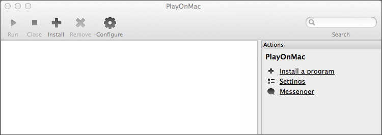
Updating Wine
Wine v. 1.4 is installed together with PlayOnMac. Wine 1.4.1 is the latest stable version at the moment. Wine 1.5.21 beta release containing many improvements is also available for download. However, it may be less stable. It is recommended to install the latest version of Wine.
To upgrade Wine to the latest version, open PlayOnMac upper menu and select Manage Wine Versions:
The window with Wine versions available for installation will open. Select the latest version (1.5.21 at the moment).
Move the latest Wine version to the right side of the window. The installation will start.
After the installation is complete, the new version of Wine will appear in the left part of PlayOnMac Wine versions manager window. You can then close the window and install the trading terminal.
Terminal Installation
To install the terminal, download the installer "mt4setup.exe". After the download is complete, launch the setup file. PlayOnMac will be used automatically to open it.
The standard terminal installation process with all its stages will start:
When the installation is complete, PlayOnMac will offer you to create the shortcuts for the terminal components - the client terminal itself and MetaEditor:
After creating the necessary shortcuts, you can start using the client terminal. Double click on it in PlayOnMac window to launch the terminal.
Known Issues
As was already mentioned above, Wine is not a completely stable software. Thus, some functions of the terminal may work improperly. Currently the following issues are discovered:
Market is unavailable
Except for the above problem, you can enjoy all the features of the client terminal on Mac OS.
Terminal Data Directory
PlayOnMac creates a separate virtual logical drive with necessary environment for each installed program. The default path of the installed terminal's data folder is as follows:
|
Library\PlayOnMac\WinePrefix\Client_Terminal_\Drive C\Program Files\Client Terminal |
Install Terminal on Linux
Linux is a Unix-like computer operating system assembled under the model of free and open source software development and distribution. Linux systems are widely used in smartphones and server hardware. Many home PC users prefer it to MS Windows series.
One of the Linux features is the absence of a unified distribution kit. Different groups of developers work on several Linux versions including Debian, Mint, Ubuntu, OpenSUSE, Gentoo, etc. In this article we will consider one of the most popular distribution kits - Ubuntu.
The client terminal can be installed and run on computers with Linux using Wine. Wine is a free software that allows users of the Unix-based systems to run an application developed for the Microsoft Windows systems. Among all the Wine versions there is one for Ubuntu.
|
Note that Wine is not a fully stable application. Thus, some functions in the applications you start under it may work improperly or not work at all. |
Preliminary setup should be performed before the installation. All applications are installed on Ubuntu from the packages contained in repositories. The path to WineHQ PPA repository should be added to install Wine. Open Ubuntu Software Center and execute "Software Sources" command in "Edit" menu.
Click "Add" in the new window.
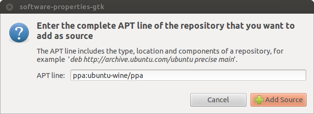
The following data should be specified in АРТ (Advanced Package Tool) line: ppa:ubuntu-wine/ppa. Click "Add Source". This completes the preliminary setup.
To install Wine, open its official website http://www.winehq.org, go to Downloads section and choose the distribution kit for Ubuntu. Click the appropriate link to install the latest Wine version. Currently, the latest stable version is Wine 1.4.1. You can also download beta version Wine 1.5.21, which has many improvements but may appear less stable. The system will prompt you to open the link via Ubuntu Software Center. Agree to that and the Software Center will prompt to start Wine installation:
Click "Install" and wait for the installation to complete. Once the installation is complete, it will already be possible to run Microsoft Windows executable files in Ubuntu.
Installing Wine from the Command Line
You can use command line (which is called "Terminal" in Ubuntu) to install Wine without using Ubuntu GUI.
Execute the following command to add WineHQ PPA repository, from which Wine will be installed:
|
sudo add-apt-repository ppa:ubuntu-wine/ppa |
After its execution, update APT package data using the following command:
|
sudo apt-get update |
Upon its execution, you can start Wine installation. Execute the following command:
|
sudo apt-get install wine1.5 |
Wine version 1.5 will be installed. After the execution, Wine is ready for use.
Starting Client Terminal
To install the terminal, download the installer "mt4setup.exe". After the download is complete, launch the setup file. The system will automatically determine that you are trying to run a file designed for Microsoft Windows and will offer to open it with Wine. Select this option and click "OK".
The client terminal installer will be launched. Complete all installation steps:
After installation is complete, you can start using the terminal by running its terminal.exe file.
Another way to start using the trade terminal in Ubuntu is copying the entire folder of the client terminal previously installed in Microsoft Windows:
After copying is complete, simply run terminal.exe file of the terminal. Wine will be used automatically to open the file.
Known Issues
As was already mentioned above, Wine is not a completely stable software. Thus, some functions of the client terminal may work improperly. Currently the following issues are discovered:
Market is unavailable
Except for the above problem, you can enjoy all the features of the trade terminal on Ubuntu.
Terminal Data Directory
Wine creates a virtual logical drive with necessary environment for installed programs. The default path of the installed terminal's data folder is as follows:
|
Home\.wine\drive_c\Program Files\Client Terminal |
Terminal Start and Data Structure
After installation has been completed, a group of Client Terminal programs will be created in the "Start" menu, and the program shortcut will additionally appear on the desktop. They will help to start client terminal.
|
Attention: Two copies of the Client Terminal are prohibited to be started from the same directory simultaneously. To start several terminals simultaneously, it is necessary to install the corresponding amount of programs in different directories. |
Starting from build 600 the client terminal features the new structure and location of the client terminal files. Now, MQL4 applications are placed in separate directories according to the program type (Expert Advisors, indicators or scripts). In most cases, the terminal data is now stored in a special data folder separated from the terminal installation location. In this article, we will describe in details how data is transferred, as well as the reasons for introducing the new storage system.
Why Has the New Data Storage System Been Implemented
Microsoft Windows XP released 13 years ago allows applications to write their own data at the place of their installation even if the latter took place in Program Files system folder. A user should only have an administrator permission to write data to any folder.
When working in 64-bit systems, separate installation directories are provided for 32 and 64-bit programs: Program Files and Program Files (x86). Operation features described in the article apply to both directories.
Starting from Windows Vista, Microsoft has introduced a restriction on writing to Program Files directory. If User Account Control(UAC) system is enabled, programs are not allowed to store their data in Program Files folder. All data should be located in a separate user directory. This limitation has been introduced in order to protect users against malicious programs and to prevent applications under one user account to change or damage the same program's data necessary for another user account. Since that time, security requirements in Microsoft operating systems have been tightening further. In particular, starting with Windows 8, UAC system cannot be disabled even if "Never notify" option is selected in its settings.
Microsoft has implemented virtualization process in order to provide compatibility with older applications when using UAC. If a program tries to save its data to Program Files directory, the data is actually (physically) saved to a separate folder having the following look - C:\Users\<user-name>\AppData\Local\VirtualStore\Program Files, while Windows File Explorer shows the files as if they are saved in the installation directory. Microsoft claims that this mode has been provided only for compatibility and can be removed later.
In order to comply with Microsoft recommendations, the data storage structure has been changed in the client terminal starting from build 600. Now, the terminal will also save its data in a user directory.
User Data Directory
In the new version, all data of a certain user working with a certain copy of the terminal are stored in a special place called terminal data folder. This folder can be found on a system disk (a disk with installed Windows operating system) along the following path:
|
C:\Users\User_account_name\AppData\Roaming\MetaQuotes\Terminal\Instance_id |
where:
С: name of a system disk;
User_account_name user's account for working in Windows;
Instance_id unique name of the folder where all the user's data for working with a certain copy of the terminal is stored. A unique name consists of 16 characters. The name is generated based on the path to the terminal installation directory, since the path to the terminal installation directory cannot be explicitly used as a folder name. Significant length of the unique name is explained by the fact that multiple copies of the terminal can be installed on a single PC.
"Open Data Folder" command in File menu of the terminal allows searching and opening the data folder.
The root of each terminal data folder also contains origin.txt file where you can find the path to the installation folder of the terminal this data refers to. This allows users to match each terminal data folder with a certain terminal installation directory, for example, in case when several copies of the terminal are installed by a user. This type of working with the terminal when the data folder is separated from the installation one is the main mode.
For more convenience, an entry containing the path to the data folder is made in the terminal's journal each time the terminal is launched. For example:
|
2014.02.10 12:48:28.477 Data Folder: C:\Users\JohnSmith\AppData\Roaming\MetaQuotes\Terminal\9F86138A4E27C7218E9EC98A5F8D8CA1 |
Copying MQL4 Application Files When Updating to Terminal Build 600 and Higher
When the newly updated terminal is launched, it checks if the data folder is present. If the data folder is not present yet, then it is created. If that folder is different from the installation one, the terminal's regular data (standard MQL4 programs, historical data, configuration files, templates, etc.) is copied into it. The files that are not changed during the terminal operation (executable files, mql.dll compiler, sound files, etc.) are left in the installation directory. The terminal data folder is different from the installation one in the following cases:
UAC system is enabled. The exception is when the terminal is installed on a portable device (external hard drive, usb flash drive, etc.).
Current PC user has limited rights to write data to the installation directory.
A user is working via remote connection (RDP).
If none of the above conditions is satisfied, the terminal data is stored in the installation directory.
Then, the user files are moved to the data folder. At this stage, the directory where the terminal's user data has been stored is determined. If the data has been stored in the terminal installation folder, they are copied the following way:
|
Source folder in the installation directory |
Contents |
Destination folder in the terminal data directory |
|
\experts |
Expert Advisors (trading robots) Note: only files from the root \experts directory are copied. No subdirectories are copied, since it is impossible to reliably determine their contents |
\MQL4\Experts |
|
\experts\indicators |
Custom indicators |
\MQL4\Indicators |
|
\experts\scripts |
Scripts (MQL4 applications for a single run on the chart) |
\MQL4\Scripts |
|
\experts\include |
Source code MQH and MQ4 files implemented into other programs |
\MQL4\Include |
|
\experts\libraries |
Libraries in the form of MQ4 source codes and EX4 executable files compiled from them. They are used for the dynamic call of the functions contained there by other MQL4 programs |
\MQL4\Libraries |
|
\experts\files |
Special "file sandbox". MQL4 applications are allowed to execute file operations only within this directory |
\MQL4\Files |
|
\experts\logs |
Log files of MQL4 applications |
\MQL4\Logs |
|
\experts\presets |
Files of presets for MQL4 applications |
\MQL4\Presets |
|
\experts\images |
Image files for being used in resources |
\MQL4\Images |
Next, it is checked whether the client terminal has stored data in virtualization directory (the operating system's virtual storage described above). If the terminal has been installed in Program Files directory and the operating system is Windows Vista or higher, the terminal data is most probably stored in that directory. If the data is found, it is copied according to the above table.
|
The files are copied and not moved during the migration. The copied files are not deleted from the source folders. |
During the migration, the entries containing source and destination paths of the copied files are made in the terminal's journal. To view all the logs, open Journal tab of Terminal window and execute Open command in the context menu. The folder containing the terminal log files will open.
If the migration has been completed successfully for the current terminal copy, it is not repeated any more during subsequent terminal updates. If the data folder is different from the installation one, and custom MQL4 applications have been copied together with the standard files during the migration, the following dialog window appears:
Portable Mode
Portable launch mode is provided for the terminal operation on portable devices and non-system directories, as well as for working in Windows XP. When launched in this mode, the terminal tries to save its data in the installation folder. However, using Portable mode does not guarantee that an operating system will allow storing data in the installation folder (for example, if the terminal is installed in Program Files directory and UAC system is enabled).
The following conditions should be met for working in Portable mode:
|
Installation directory |
Operating system |
Requirements |
|
|
Program Files or another system directory (for example, Windows) |
Windows XP |
Permission to write to the installation folder |
|
|
Another non-system directory |
Windows XP |
Permission to write to the installation folder |
|
|
External hard drive, usb flash drive, etc. |
Windows XP |
The terminal will always be launched in Portable mode. |
|
|
Program Files or another system directory (for example, Windows) |
Windows Vista\Windows 7 |
Launching the terminal as administrator and disabled UAC |
|
|
Another non-system directory |
Windows Vista\Windows 7 |
Permission to write to the installation folder |
|
|
External hard drive, usb flash drive, etc. |
Windows Vista\Windows 7 |
The terminal will always be launched in Portable mode. |
|
|
Program Files or another system directory (for example, Windows) |
Windows 8 and higher |
It is impossible to use Portable mode, as UAC system cannot be disabled |
|
|
Another non-system directory |
Windows 8 and higher |
Permission to write to the installation folder |
|
|
External hard drive, usb flash drive, etc. |
Windows 8 and higher |
The terminal will always be launched in Portable mode. |
|
|
It is not recommended to use Portable mode in case you use Windows Vista or higher, and the terminal is installed in Program Files. This mode is provided for the terminal operation on portable devices and Windows XP. If you have updated the terminal and all the data has been copied to a separate user data folder, it is also not recommended to switch to Portable mode. You should manually copy the data to the installation folder in order to use Portable mode after copying the data in the user data folder. Launching the terminal in Portable mode does not copy the data from the data folder to the installation one. |
|||
In order to launch the terminal in Portable mode, use "/portable" key. For more convenience, you can create an additional terminal launch shortcut with the appropriate name on your desktop and add the key directly to the shortcut:

Opening of Accounts
Terminal allows to work with two 0types of accounts: demo accounts and real accounts. Demo accounts enable working under training conditions, without real money on them, but they allow to work out and test trading strategy very well. They possess all the same functionality as the real ones. The distinction consists in that demo accounts can be opened without any investments, though one cannot count on any profit from them.
Opening of a Demo Account
A demo account can be opened by the "File Open an Account" menu command or by the same command of the "Navigator Accounts" window context menu. Besides, the terminal will offer to open a demo account at the first program start to begin working immediately.
The process of opening an account consists of several steps:
Selecting Server
The first stage of account opening is selection of a server to connect to. Addresses of available servers, their names and ping are listed there. The most preferable is the server having the lowest ping. To perform additional checking the ping, you should press the "Scan" button. After that the ping information becomes refreshed.
Also in this window you can add a new server to connect to. To do it, press the " add new server" button or the "Insert" key. A server can be specified in different ways:
Write its address and port separated with a colon. For example, 192.168.0.100:443;
Write its domain name and port separated with a colon. For example, mt.company.com:443;
Write an accurate name of a brokerage company.
As soon as you specify a server, press "Enter". To delete a server, select it and press the "Delete" key.
Account type
At this stage a user can specify details of an existing trade account or start creating a new one.
This window contains three options:
Existing trade account if this option is chosen, it is necessary to fill out the "Login" and "Password" fields with the corresponding account details. A server selected at the previous step is displayed below these fields. You will be authorized at the specified server using the specified account as soon as you press the "Done" button.
New demo account if you choose this option and press the "Next" button, you will go to the creation of a new demo account.
New real account if you choose this option you will pass to specifying personal details for sending a request to open a real account.
Personal Details
The next stage of opening an account is specifying personal details:
The following data will be requested to open an account:
Name the user's full name.
E-Mail email address.
Phone contact telephone number.
Account Type account type to be selected from the list defined by the brokerage company.
Deposit the amount of the initial deposit in terms of the basic currency. The minimum amount is 10 units of the specified currency.
Currency the basic currency of the deposit to be set automatically depending on the account type selected.
Leverage the ratio between the borrowed and owned funds for trading.
To activate the "Next" button and continue registration, it is necessary to flag "I agree to subscribe to your newsletters".
After the registration has successfully completed, a window will appear that contains information about the open account: "Login" the account number, "Password" the password for access, "Investor" the investor's password (connection mode in which it is possible to check the account status, analyze the price dynamics, etc., but no trading is allowed).
After registration has been completed, the new account will appear in the "Navigator Accounts" window, and it is ready to work with. At that, the server sends a message to the terminal containing login and passwords of this newly opened account. This message can be found in the "Terminal Mailbox" window. Besides, after the account has been successfully registered, it will beauthorized automatically.
|
Attention: If any problems occur at the account opening, technical support service of the brokerage company should be asked for help. |
Opening of a Real Account
Real accounts, unlike demo accounts, cannot be opened from the terminal. They can only be opened by brokerage companies under certain terms and conditions. Real accounts are marked correspondingly in the "Navigator Accounts" window. To start working with them, one must perform authorization.
Authorization
Authorization is connection of terminal to the server through a login and a password. It allows to manage a trading account. Two accesses to the account are possible in the terminal: a normal password and an investor password. Being authorized with the standard password, one gets full rights for working with the terminal. Investor authorization allows you to see the account status, analyze prices, and work with your own Expert Advisors, but not trade. Automated trading by Expert Advisors is not allowed either. Investor access is a convenient tool used for demonstration of trading at the account.
To be authorized, it is necessary to execute the "Login" command of the context menu of the account (context menu is called by clicking with the right mouse button at the account number) in the "Navigator" window or "File" menu. Then, the account number, one of its passwords (standard or investor) should be given in the appearing window, and a server should be chosen. After all data have been specified, the "Login" button should be pressed.
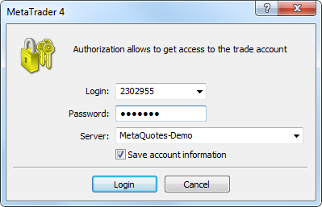
|
Attention: If the "Keep personal settings and data at startup", option is enabled, the latest account used will be automatically authorized at the next start of the terminal. The "Keep personal settings and data at startup" option in terminal settingscarries out the same action. If you disable this option, the information about previously used account and saved passwords will be deleted upon the next restart of the terminal. |
OTP Authorization Using One-Time Password
Use of OTP (One Time Password) provides an additional level of security when working with trading accounts. The user is required to enter a unique one-time password every time to connect to an account.
|
The use of the OTP should be enabled on a trade server. The use of the OTP can be forced on a trade server. |
One-time passwords are generated in the mobile terminal for iPhone and the mobile terminal for Android.
How to enable OTP
To start using one-time passwords, you should bind your trading account with the password generator, which are the mobile terminals for iPhone and Android.
Go to the Settings of your mobile terminal and select OTP. For security reasons, when you first open this section, you will be required to set a four-digit password. The password must be entered every time you access the password generator.
In the window that opens, select "Bind to account".
Next, specify the name of the server on which the trading account was opened, the account number and the master password to it. The "Bind" should be kept enabled. It must be disabled, if you are going to unbind the specified account from the generator and stop using one-time passwords.
After you tap the "Bind" button located in the upper part of the window, your trading account will be bound to the generator, and an appropriate message will appear.
Likewise, you can bind an unlimited number of accounts to the generator.
The one-time password is displayed at the top of the OTP section. Underneath, a blue bar visualizes the password lifetime. Once the password expires, it is no longer valid, and a new password will be generated.
Additional Commands:
Change Password change the generator password.
Synchronize Time synchronize the time of the mobile device with the reference server. Accuracy requirement is connected with the fact that the one-time password is bound with the current time interval, and this time should be the same on the client terminal and the server side.
How to Use OTP in the Desktop Terminal
After binding a trading account to the generator, a one-time password will be additionally requested when connecting to it from the desktop terminal:
Live Update
A system of automatic updates is built into the terminal. It allows to get informed about and install new versions of the program promptly. This system is always enabled, it is impossible to disable it.
Updating Procedure
The terminal checks for new versions of the program when it connects to the server. If a new version of any of the terminal components has been discovered, it will be automatically downloaded in the background mode. At that, the following entry will be displayed in the terminal journal:
|
10:13:37.730 LiveUpdate: new version 4.00 build 563 is available |
On default, the updates are downloaded to the following folder (depending on the operating system used):
Microsoft Windows XP:
C:\Documents and Settings\username\Application Data\MetaQuotes\WebInstall
Microsoft Windows Vista and higher:
C:\Users\username\AppData\Roaming\MetaQuotes\WebInstall
Here "C" is the letter of a logical disk, where the operating system is installed, "username" is the account in the operating system, under which the terminal has been installed. Downloaded updates are available for all terminals, the updates are not re-downloaded for other instances of terminals.
After all the updates have been downloaded, the below entry will appear in the terminal journal:
|
10:14:17.180 LiveUpdate: finished |
To apply the updates, the terminal should be restarted.
Updating with UAC Enabled
If the UAC (User Account Control) system is enabled on the computer or the user does not have sufficient rights in th OS, a window requesting confirmation/increase of the user's permissions will be shown at the attempt to update.
Microsoft Windows XP

In this case it is necessary to specify details of the administrator account with enough permission to write files into the terminal installation directory.
Microsoft Windows Vista
Depending on the user's permissions in MS Windows Vista, it is necessary either to allow the operation (if a user is an administrator) or specify administrator account details.
Client Terminal Settings
Client Terminal is generally set up in a special window that can be called by the "Tools Settings" menu command or with accelerating keys Ctrl+O. All settings are grouped according to their tasks and located in the following tabs:
Server setting up parameters of connection to the server, configuring of the used proxy server and Data Centers, as well as other important settings;
Charts general setting of the displaying of price charts. It is possible to detect whether period separators, Ask-price level, OHLC line will be shown. Besides, the amount of bars stored and displayed on the chart can be defined in this tab;
Objects setting up parameters of objects management. Selection of object after they have been created, their immediate setting, and docking parameters are defined here;
Trade parameters of opening new orders by default. They include: financial instrument (symbol), the amount of lots and deviation;
Expert Advisors settings common for all experts. They include: locking of operation for expert advisors, enabling of importing functions from external DLL libraries and advisors, as well as a number of other features;
Notifications setting up sending of push notifications to mobile devices from the client terminal;
Email setting up email parameters. If there is a necessity to send messages by email directly from the terminal, the parameters of the mailbox to be used must be set up;
FTP setting up publishing reports in internet. The terminal allows to publish reports in the real-time mode that contain information about the account status in internet. Connection through ftp is used for this purpose that can be set up in this tab;
Events setting up signals informing about system events. Signals informing about connection unavailability, news incomes, and others, simplify the work very much.
Community MQL5.community account details for subscribing to trading signals.
Signals setting up the "Signal" service in the client teminal.
Server
This tab contains the most important settings changes in which can cause serious troubles in the terminal operation as far as the full disconnection. The client terminal is initially configured in the way providing normal, trouble-free operation. Thus, it is highly recommended not to change any parameters in this window needlessly.
In the "Settings Server" window, it is possible:
to choose a server to connect to;
to configure the proxy server;
to specify and change passwords;
to enable export of quotes through DDE protocol;
to enable income of news.
Server
Practically, the entire work of the Client Terminal is based on data (news and quotes) continuously incoming from the server. If a client terminal does not receive quotes, it is impossible to trade with it. In such a mode, the terminal allows just to analyze the existing data with indicators and line studies and test expert advisors. This situation can emerge for a number of reasons, one of them is incorrect setting of the server connection.
For connecting the client terminal to the server, the exact server IP address (or domain name) and port must be known. After the program has been installed, all these data will be specified, there is usually no need to change them. However, if there is a need to connect to another server, its address and port must be given in the "Server" field. The data must be given in the following format: "[internet address of the server] : [port number]" (without spaces). For example: "192.168.0.1:443", where "192.168.0.1" is the server address, and "443" is the port number. After the data have been input, the "OK" button must be pressed.
The newly set server address and port number are stored on the hard disk. These data do not influence the operation of the client terminal until an attempt to open a new account is made. It is this moment when the terminal starts using of these given address and port number. The new server address will be added to the list of servers during account registration, and it can be chosen. If connection to the server succeeds, the new account will be opened. Otherwise, it is recommended to check all settings and try to reconnect.
|
Attention: Incorrect connection setting is not the only reason for which a new account cannot be opened. |
Proxy Server
Connection to internet through a proxy server can be another reason for which the server cannot be connected to. A proxy server is an intermediate between the trader's computer and the trading server. It is mostly used by internet providers or by local networks. If a connection problem occurs, you should turn to your systems administrator or to the internet provider. If a proxy is used, the terminal must be set up in a corresponding way. Setting of "Enable proxy server" checkbox will enable proxy server support and activate the "Proxy..." button. Pressing of this button will open the window where proxy server parameters should be specified (these data can be given by the systems administrator or by internet provider):
Server proxy server address and type (HTTP, SOCKS5, or SOCKS4);
Login a user login for access to the proxy server. If login is not needed, this field must remain empty;
Password a password for access to the proxy server. If password is not needed, this field must remain empty.
After the parameters have been specified, it is recommended to press the "Test" button to check how the settings work. If they have been tested successfully, the "OK" button must be pressed in order the settings to be effective. Error message means that the proxy server was set up incorrectly. To find out about the reasons, the system administrator or internet provider must be contacted again.
Account and Login
Client terminal can connect to the server and work only using an account. There are login (the account number), master and investor passwords in the Client Terminal. To be authorized, one needs an account number and one of two passwords. The master password allows the full access to the account, while the investor one gives only a limited access. Being authorized with the investor password gives the right to look through charts, perform technical analysis and test expert advisors, but not trade. Investor password is a convenient tool showing the trading process at this given account.
After the account has been opened and if "Keep personal settings and data at startup" option is enabled, its data (number, master and investor passwords) will be stored at the hard disk. At the program restart, these data will be used to connect the account automatically. If the option is disabled, a password must be entered manually at each restart of the terminal. Also if you disable this option, the information about previously used account and saved passwords will be deleted upon the next restart of the terminal.
The current account number and password are specified in the fields of "Login" and "Password". Data of another account can be input in these fields, then, after the "OK" button has been pressed, the terminal will try to authorize it. If authorization was not successfully completed, the data given should be checked and re-authorized. If this does not help, the Technical Support service should be contacted.
Having pressed the "Change" button, one can specify new passwords in the window appeared. Doing so, one has to know the current password. It can be found in the message sent from the server after registration of a demo account. The new password is input in the corresponding field. If the "Change investor (read only) password" option is enabled, the investor (not master) password will be changed.
Data Export through DDE Protocol
Quotes delivered to the terminal can be exported to other applications through "DDE" (Dynamic Data Exchange) protocol. To enable export of quotes, the "Enable DDE server" option must be enabled and the "OK" button must be pressed. Data delivery will start immediately. More details about export of quotes can be found in the corresponding section.
News
Terminal allows to receive financial news promptly. They start to income just after connection to the server. No news issued when the terminal was disconnected will income in it. To enable news delivering, it is necessary to flag "Enable news". In the"Terminal" window, the "News" tab will appear in which news will be delivered as they are issued.
|
Attention: If the "Enable news" option is enabled, but no news were issued, the "News" tab will not appear in the "Terminal" window. |
Charts
Charts show the dynamics of symbol price changes. Charts settings and history data parameters are grouped in this tab.
Changing of parameters in this tab will not cause any global changes in operation of the terminal.
Show trade Levels
Lines of open and pending orders placed directly in the chart
visualize where exactly the position was opened, when the pending order, Stop
Loss or Take Profit will trigger. This option saves traders' work and helps to
avoid some mistakes caused by human emotions. For it to be enabled, the
"Show trade levels" must be checked, and the "OK" button
must be pressed. At that, the lines corresponding with open prices of positions
and orders will appear in the chart. Of course, if no order or position are
opened, no levels will be shown in the chart. This option is active for open
positions or orders only. No closed position will come within its action.
Use "Alt" Key to Drag Trade Levels
This option is implemented for convenience of managing pending orders and stop levels on a chart.
On default, with this option disabled, the orders and stop levels are moved
using a mouse (drag'n'drop). In case many objects are attached to a chart,
you can accidentally move one of them instead of a trade level. In this case,
enable this option. After that, you'll still be able to move the trade levels
using a mouse, but you'll need to hold the "Alt" key for that.
Show OHLC
Charts show the price dynamics, but it is often very difficult
to determine exact parameters of the bar by eye. The "Show OHLC"
option is very helpful in such situations. It places an additional information
line in the upper left corner of each chart. Here, besides the symbol name and
chart period, prices of the last bar are listed. They are formatted as follows:
OPEN, HIGH, LOW and CLOSE (OHLC) open price of the bar, the highest price of
the bar, the lowest price of the bar, and close price of the bar, respectively.
Thus, the exact value of the last bar can always be seen.
Show ask line
Bars in the terminal are built and shown only for Bid prices.
However, for opening of long positions and closing of short ones, Ask price is
always used. But it is not shown in the chart in any way, it cannot be seen. To
control over one's trading activities more attentively, one can enable the
"Show Ask line" parameter. After this command has been executed, an
additional horizontal line corresponding with Ask price of the last bar will
appear in the chart.
Show period separators
Date and time of each bar are shown on the chart horizontal
axis. The chosen timeframe is the value of this horizontal scale. The
"Show period separators" option draws additional vertical lines in
the chart that correspond with a larger timeframe. So, for charts having
timeframe from M1 to H1, daily separators are built, for H4 weekly, for D1
monthly, and for W1 and MN1 yearly ones.
Color print
Terminal allows to print not only black-and-white, but also
colored charts. The latter ones are more appropriate for analysis than
black-and-white ones. This option can be enabled by setting of the "Color
print" checkbox and then pressing the "OK" button. After that,
if the printer allows it, all charts will be printed in color.
Save deleted charts to reopen
Terminal allows to restore charts deleted from the workspace. If
the "Save deleted charts to reopen" option is enabled, at deleting of
a chart, its template will be saved in the
/DELETED directory. Later on, any deleted chart can be restored with the"File
Open deleted" menu
command. For example, it is possible to restore the four-hour chart of EURUSD
after it has been deleted. The restored chart will also be a four-hour one, and
all its settings with imposed objects (indicators, line studies) will be
restored, as well.
Max bars in history and in charts
Bars stored in history and those shown in charts differ from
each other. This difference is determined by the fact that any amount of bars
can be kept in the hard disk provided that it has enough space. But the amount
of bars shown in the chart is limited by the computer resources. To calculate
values of technical and custom indicators, bars shown in the chart are used, as
well. When a great amount of indicators and data to be shown are used
simultaneously, computer free resources (central processor load and free RAM)
can exhaust very soon. To avoid such problems, one can specify the amount of
data shown in the charts independently. To do so, one must choose the suitable
value from the pop-up list or enter it manually in the "Max bars in
chart" field. The amount of bars to be stored in the hard disk is
specified in the "Max bars in history" field. In future, this value
will be used for testing
expert advisors. Any amount of bars can be specified here.
|
Attention: At the closing of a chart, the amount of bars to be saved will not exceed that given in the "Max bars in history" field. At the opening of a chart, the amount of bars to be downloaded will not exceed that given in the "Max bars in chart" field. But the amount of bars in the chart can exceed this value during pumping of quotes. Values of "Show Ask line", "Show OHLC" and "Show period separators" specified in this window are default parameters. These parameters can be specified independently for each specific chart in the setup window. Values of "Show trade levels", "Color print" and "Save deleted charts to reopen" specified in this window influence all the charts and become active immediately after the "OK" button has been pressed. |
Objects
Settings for working with graphical objects are grouped in this tab. Graphical objects are all line studies placed in the toolbar having the same name and in the "Insert" menu. They consist of: technical indicators (including custom indicators), line studies, geometrical figures, texts, and icons. Parameters collected in this tab facilitate the work with graphical objects and cannot cause critical changes in the terminal operation.
Show Properties after Creation
All graphical objects possess certain properties. For example,
it can be thickness and color of the trend line, period of the indicator signal
line, etc. The most traders use standard settings of all graphical objects, but
it is sometimes necessary to set them up individually. The "Show
properties after creation" option allows to set up objects immediately
after they have been imposed. It is suitable when there are many objects having
individual settings on the chart.
Select Object after Creation
Unlike indicators,
such objects as line studies, text, icons, and geometrical figures are
positioned in charts manually. After an object has been imposed, there can a
need occur to move it, for example, to precise the position of the trend line.
To do so, the necessary object must be selected first. The "Select object
after creation" option allows to do it immediately after the object has
been imposed in the chart.
Select Object by Single Mouse Click
Graphical objects in the terminal can be selected by single or
double clicking of the left mouse button. This option allows to switch between
methods of objects selection. If it is enabled, all objects will be selected by
a single click. At that, the double click calls the window of the object
properties. If this option is disabled, all objects will be selected by a
double click.
Magnet Sensitivity
The terminal allows to "magnet" (anchor) checkpoints
of objects to different bar prices to locate them more precisely. In the
"Magnet sensitivity" field, the sensitivity of this option in pixels
can be defined. For example, if the value of 10 is specified, the object will
automatically be anchored to the bar if a checkpoint of the object is located
within a radius of 10 pixels from the nearest bar price (OHLC). To disable this
option, it is necessary to input parameter 0.
Trade
Settings used for orders opening are grouped in this tab.
Parameters input here facilitate opening of orders and cannot cause critical changes in the terminal operation.
Symbol by Default
The "Symbol by default" option allows to define the
symbol value in the "Order"
window automatically
when a trading operation is performed. The "Automatic" parameter
means that the active chart symbol will be set in this field, the "Last
used" the symbol of the latest trade operation. For the same symbol to
be set repeatedly, the "Default" parameter must be enabled, and the
necessary symbol chosen from the list.
Lots by Default
In the similar way, the initial amount of lots can be defined
("Lots by default" option): "Last used" is a parameter used
in the previous operation, and "by default" is a constant, manually
set value.
Deviation
The symbol price can change within the ordering time. As a
result, the price of the prepared order will not correspond with the market
one, and position will not be opened. The "Deviation" option helps to
avoid this. Maximum permissible deviation from the value given in the order can
be specified in this field. If prices do not correspond, the program will
modify the order by itself what allows to open a new position.
One click trading special terms and conditions should be accepted to use this option. The "One click trading" option allows performing trade operations with a single mouse click without additional confirmation from the trader (without showing thetrade dialog window). The one click trading feature is implemented in the following parts of the terminal:
the quick trading pane on the chart;
trade levels on the chart;
trade commands in the chart context menu;
the "Trading" tab in the "Terminal" window.
Terms and Conditions for Using One-Click Trading Function
When "One click trading" option is used for the first time, Terms and Conditions for using this function are displayed to users.
|
Disclaimer
You are about to activate One Click Trading mode. By clicking "I Accept these Terms and Conditions" below, you acknowledge that you have read and understood the following terms and conditions, and you agree to be bound hereby. Your current version of the terminal enables you to choose between the following modes for order submission. You agree that you will be bound by the procedures and conditions specified herein with respect to each such mode.
1. The Default mode for order submission is a two-step process. Using the Default mode, you first invoke a new order window. Then you need to select an appropriate order type, its parameters and confirm your order submission by clicking either Buy, Sell, Place, Modify or Close buttons depending on particular order type selected and your trading intentions. Using the Default mode, your order will not be submitted until you have completed both of the aforementioned steps.
2. The One Click Trading mode for order submission ("One-click trading") is a one-step process. Using the One Click Trading mode, your order will be submitted when you: - single-click either bid (SELL) or ask (BUY) rate buttons either: - on the Trading tab in the Market Watch window - on the One Click Trading panel of a chart - close pending orders or delete stop levels on the Trade tab of the Terminal window
THERE WILL BE NO SUBSEQUENT CONFIRMATION PROMPT FOR YOU TO CLICK. YOU WILL NOT BE ABLE TO WITHDRAW OR CHANGE YOUR ORDER ONCE YOU CLICK. UNDER NORMAL MARKET CONDITIONS AND SYSTEM PERFORMANCE, A MARKET ORDER WILL BE PROMPTLY FILLED AFTER SUBMISSION AND YOU WILL HAVE ENTERED INTO A BINDING TRANSACTION.
You can activate or deactivate One Click Trading mode on the Trade tab of Options window of the terminal.
By selecting the One Click Trading mode, you understand that your orders will be submitted by clicking the bid or ask rate button or in any other way described above, without any further order confirmation. You agree to accept all risks associated with the use of the order submission mode you have chosen, including, without limitation, the risk of errors, omissions or mistakes made in submitting any order.
You agree to fully indemnify and hold harmless #company# from any and all losses, costs and expenses that it may incur as a result of any such errors, omissions or mistakes by you, your trading manager or any other person trading on your behalf. |
If you accept the conditions, tick "I Accept these Terms and Conditions" option and click "ОК". If you do not accept the conditions, click "Cancel" and do not use "One Click Trading" function.
Expert Advisors
Settings of working with Expert Advisors are grouped in this tab.
Expert Advisors in the terminal are programs written in MetaQuotes Language 4 and allowing to analyze and trade in the automatic mode (auto trading). The description of how to create and use experts is given in the "Auto Trading" section. The given section describes only settings common for all experts:
Allow Auto Trading this option allows to
enable or disable the performing of trade operations by Expert Advisors andscripts. If it is
disabled, scripts and Expert Advisors will work, but they won't be able to
trade. This limitation can be useful for testing the analytical capacity of an
Expert Advisor in the real-time mode (not to be confused with testing of Expert
Advisors on history data). Automated trading can also be allowed or disabled
using button
on the toolbar.
The option enables/disables autotrading for the entire terminal.
If you disable it, no Expert Advisor will be allowed to trade, even if you
enable autotrading in the EA
settings. If you enable it, the Expert Advisors will be allowed to trade, if
autotrading is enabled in their settings.
Disable Auto Trading when the account has been changed this option represents a protective mechanism disabling trading by Expert Advisors and scripts when the account is changed. It is useful, for example, when one changes demo account for a real one.
Disable Auto Trading when the profile has been changed a large amount of information about the current settings of all charts in the workspace is stored in profiles. Particularly, profiles contain information about Expert Advisors attached. Expert Advisors included into the profile will start working when a new tick incomes. Having enabled this option, one can hinder the trading by the Expert Advisors launching when the profile has been changed.
Disable Auto Trading when the charts symbol or period has been changed if this option is enabled, then when the period or symbol of a chart is changed the expert advisor, which is attached to it, will be automatically prohibited to perform trade operations.
Allow DLL imports (potentially dangerous, enable only for
trusted applications)
To enlarge their functionality, expert advisors can use DLLs
(dynamic-links libraries). If it is enabled, such libraries can be used without
any limitations. If this option is disabled, no expert can use external DLLs.
It is recommended to disable import when working with unknown experts.
Allow WebRequest for listed URL
The WebRequest() function in MQL4 is used for receiving and
sending information to websites using GET and POST requests. To allow an MQL4
application to send such requests, enable this option and manually explicitly
specify the URLs of trusted websites. For security reasons, the option is
disabled on default.
To delete an address from the trusted list, select it and press
"Delete" button.
|
Attention: Values of options named "Allow Auto trading", "Allow DLL imports (potentially dangerous, enable only for trusted applications)" and "Allow WebRequest for listed URL" specified in this window are default parameters for MQL4 programs newly attached. They do not influence the operation of expert advisors, custom indicators and scripts already running. |
Notifications
The client terminal supports sending of notifications about various events to mobile devices powered by iOS and Android using push messages. With this feature, a trader can track all the updates.
Push notifications are short messages of up to 255 characters. Such notification are delivered immediately and are never lost.
There are two ways to send push notifications from the client terminal:
Through an MQL4 application
The MQL4 language provides a special SendNotification function which allows MQL4 programs to send push notifications to a MetaQuotes ID specified in the terminal settings.
Through the signals function
The client terminal allows you to create signals for alerting you of events in the market. This feature is available in the Signals tab of the Terminal window. One of the event notification types is push notifications.
|
Push notifications can also be used to obtain information about the updates on the MQL5.community site. To do this, specify your MetaQuotes ID in the user profile in "Contacts" tab. There is a limitation on the number of messages that can be sent: no more than 1 message per 0,5 second and no more that 10 messages per minute. |
The notifications setup window includes the following options:
Enable Push notifications to allow the client terminal to send notifications, enable this option.
Notify of trade operations if this option is enabled, the client terminal will automatically send notifications about successful trade operations to a specified MetaQuotes ID. Notifications about unsuccessful operations (for example, an order is rejected due to incorrect parameters) are not sent.
After setting up the options, enter one or more MetaQuotes IDs, separated by commas. You can specify up to 4 MetaQuotes IDs; the notifications will be sent to all of the devices simultaneously.
To find your MetaQuotes ID, open your mobile terminal and go to Settings -> Messages. This page in the terminal for iPhone looks as follows:
To test the function notification sending, click Test. If your notification is successfully sent, you see an appropriate message, and the notification will arrive on your mobile device.
|
To install the mobile version of the terminal, use the following links: Mobile Terminal for iPhone Mobile Terminal for Android |
In this tab, the electronic mailbox is set up. Later on, these settings will be used to send message by the expert advisorcommand or by a triggered alert.
To start setting up of email, the "Enable" must be enabled and the following fields must be filled out:
SMTP Server address of the SMTP server and port used. This server will be utilized to send the message. The record must be made in the following format "[server web address] : [port number]". For example, "smtp.your_email_provider.com:25" where "smtp.your_email_provider.com" is the server web address, "25" is the port number.
SMTP Login a login to be authorized on the trade server. Normally, it is an electronic mailbox. Example: your_name@your_email_provider.com
SMTP Password a password to be authorized (mailbox access password).
From the email address, from which the message will be sent. In this field, there must be name and emailing address on the mail server, the SMTP of which will be utilized. The name usually coincides with the first part of the electronic address, but the name can be omitted. Example: your_name, your_name@your_email_provider.com
To the email address, to which the messages will be sent. The "Your Name" part of the address can be omitted. Generally, in the "To" field, any really existing email can be specified. Example: any_name, your_name@your_email_provider.com
|
Attention: Only one email address may be specified for either of fields "From" and "To". Several emails given with or without separators will not be accepted. |
The "Test" sends a test message using the settings specified to test their workability. If it has been tested successfully, the "OK" button must be pressed to apply these settings. In case the test did not succeed, it is recommended to check all settings again, restart the terminal and resend the test message.
FTP
Terminal allows to publish reports about the account status in internet automatically. To do so, one has to set up internet connection parameters through FTP (File Transfer Protocol). This can be done in the "FTP" tab:
The following parameters are available on this tab:
FTP server FTP server address the report to be sent to. Example: ftp.your_domain_name.com;
FTP path name of the FTP server directory where the report will be placed. The path (starting with the root directory) for sending reports must be given in this field. Example: /report_shots;
FTP login login for authorization at the FTP server;
FTP password password for access to the FTP server;
Passive mode
switch between active and passive mode of data transfer.
In active mode, a free port (from dynamic range of 1024 to
65535) is allotted in the client terminal to which the server will connect in
order to set connection for transferring of data. The FTP server connects to
the client's port with the given number using TCP port 20 from its part to transfer
data. In passive mode, the server informs the client about the TCP port number
(from the dynamic range of 1024 to 65535) to which the client can connect to
set up data transfer.
The main difference between active and passive FTP mode is the
part that opens connection for data transferring. In active mode, it is the
client who has to accept connection from the FTP server. In passive mode, the
client initiates connection, and the server accepts it.
Enable automatic publishing of reports via FTP enable support reports publishing. If disabled, other fields are inaccessible;
Account the account number the report for which should be published;
Refresh every periodicity of sending reports to the web server (in minutes).
|
Attention: Reports of only active accounts can be published. If the account number given in this field does not match with the current one, the reports will not be published. |
The "Test" button sends report about the current account status using the specified settings that allows to check their workability. If it has been tested successfully, the "OK" button must be pressed to activate these settings. If the test did not succeed, it is recommended to check all settings again and retest.
The client terminal publishes common reports on default. In order to publish a detailed report, you should rename the "StatementDetailed.htm" file located in the /TEMPLATES directory into "Statement.htm".
Events
Signals of system events can be set up in the terminal (not to be mixed up with alerts). It is a very convenient tool informing about changes in the terminal status. Signals can be set up in this tab. For this to be done, the "Enable" option must be enabled first. At that, a table containing the list of system events and corresponding actions will become active.
System events are:
Connect connection to the server. Signal of successful connection to the server;
Disconnect no connection to the server. Signal of interrupted connection to the server;
Email Notify notifying by email. If this signal has triggered, it is recommended to check the "Terminal Mailbox" window;
Timeout a certain time range is predefined for performing trade operations. If this range has been exceeded for some reason, the operation will not be performed, and this signal will trigger;
OK trade operation has been successfully performed. No errors occurred when performing this operation;
News receiving of news. If this signal has triggered, it is recommended to check the "Terminal News" window;
Expert Advisor this signal triggers when an expert advisor is performing a trade operation;
Alert performing the Alert() function by an expert advisor;
Requote price changed during preparation of a trade operation;
Trailing Stop triggering of the order of the same name.
If there is a need to disable any of the signals, it is necessary to double-click on its name or icon with the left mouse button. Another double click will activate it again. After the signal has been triggered, the file specified in the "Action" field of the corresponding event will run. A double click on the file name allows to change the file. After double-clicking a pop-up list of available files to be assigned for the event will appear. You can also choose any other file by using the "Choose other..." item in the list. Selection of any file from this list and further Enter button pressing means that it is assigned to the corresponding event. To confirm all changes made, one has to press the "OK" button.
|
Attention: Any file executable in the operation system can be assigned to the event. |
Community
The MQL5.community provides unique services to traders and MQL4/MQL5 developer, including the possibility to subscribe totrading signals provided by professional traders.
Specify your MQL5.community account in order to subscribe to trading signals:
Login your account at MQL5.community.
Password password to the specified account.
|
The password is kept on the hard drive in an encrypted form. If you do not have an MQL5.community account, please register and get access to unique opportunities. |
Link "register" opens the window of quick registration of an account at MQL5.community.
In this window specify a desired login for your account and email address. Once you click "Register" an account will be created and a message containing password to the account will be sent at the specified email.
Signals
Use this tab to configure "Signals" service in the client terminal.
Signals service is the part of integration of the trading terminal and MQL5.community website. It allows anyone to become a provider and sell trading signals or subscribe to them and follow the strategy of an experienced trader.
Any traders can subscribe to the signals of another experienced trader (provider) to copy his or her trade operations.
Find more about the service in Signals section.

The name of the signal you are currently subscribed to is displayed at the top of the tab. If there is no subscription, the settings below will be uneditable.
Agree to the terms of use of the Signals service agree to the terms to start using the service. Read the rules carefully. If you agree, check the box next to the option. If you do not agree with the rules, do not use the Signals service.
Enable realtime signal subscription trading operations will be copied to your account only after this option is enabled. No operations will be copied to the account in case the option is disabled. The settings below will become editable only after enabling this option.
Copy Stop Loss and Take Profit levels Stop Loss and Take Profit placed at the provider's
account will be also placed on your trading account if this option is enabled.
These orders are executed at the broker's side. It means that they are executed
regardless of whether the client terminal has been launched or not. Also,
execution can be performed at completely different brokerage companies (if
subscriber and provider have different brokers).
Therefore, it is guaranteed that a position will be closed when
copying Stop orders in case a specified profit and loss levels have been
reached.
Synchronize positions without confirmations automatic
synchronization without confirmation requests. When subscribing to the signal,
trading states of Subscriber's and Provider's accounts are synchronized periodically. This can
be an initial synchronization when activating the subscription or a periodic
synchronization when differences between Subscriber's and Provider's accounts
are detected.
If pending orders or non-signal positions (opened manually or by
an Expert Advisor) are detected at the Subscriber's account during
synchronization, the dialog offering to close the positions and remove the
orders is displayed. If an open profitable position is detected at the
Provider's account during synchronization, while the Subscriber's account does
not have the one (for example, due to Internet connection loss or the terminal
shut down), the dialog requesting confirmation to copy such a position is
displayed to the user. In both cases, synchronization is not performed and
copying of signals is stopped till the user makes the decision by clicking the
appropriate dialog button.
If the terminal is working around the clock without constant
external control (for example, the terminal launched on VPS), manual confirmation
requests to perform synchronization are left unanswered and thus can prevent
signals from being copied. When this option is enabled, synchronization is
always performed automatically without the need for Subscriber's confirmation.
Use no more than [A] % percentage value of your deposit that can be used for following provider's signals. For example, if your balance is 10 000 USD and 90% is specified here, then 9 000 USD will be used for following the signals. This affects the calculation of volumes of the deals performed when following the signals. The volume is calculated proportionally. See "Signal Subscribers" section for more information. It is strongly not recommended to change the deposit load if you already have positions opened according to a signal. This will lead to correction of volume of the open positions (volume increase or partial close by reopening the positions at the current market price).
Stop if equity is less than [B] this parameter allows you to limit losses when using trading signals. If equity drops below a specified level, copying of trade signals will be automatically terminated, all positions will be closed and all pending orders will be removed. 0 means no limitations.
Deviation/Slippage [C] spreads this setting is
similar to deviation set when orders
are placed from
the terminal. This is the value of the permissible deviation of the executed
order price from the price initially requested by the client terminal when
copying a trading operation. This value is displayed as a part of the current
spread on the symbol used in trading operation.
The order is executed if the deviation is less or equal to the
specified parameter. If
the deviation exceeds the specified value, the terminal will increase the
acceptable deviation by 0,5 of the spread and make another attempt to perform
the trade operation. If the requote is received again, the accounts of the
subscriber and provider will become unsynchronized. Later the terminal will try
to synchronize them again.
User Interface
Interface of the terminal includes the following components:
Common Window Heading
The program heading includes the current account number,
application name, as well as the active chart window name and its period
(timeframe).
Main Menu
All commands and functions that can be executed in the client
terminal are collected in its main menu. It contains: "File","View", "Insert", "Charts", "Tools", "Window", "Help".
More details can be found in the "Main Menu"
section.
Toolbars
Four toolbars are built into the terminal: "Standard", "Charts", "Line Studies",
and "Timeframes".
The toolbars contain duplicated commands and functions of the main menu.
However, these toolbars are customizable, so one can collect only mostly used
widgets in them.
More details can be found in the "Toolbars"
section.
Market Watch
This window contains the symbol list. Commands of this window
allow to control trade positions and charts.
More details can be found in the "Market Watch"
section.
Depth of Market
The depth of market displays the current market for a trading
symbol. This tool provides the ability of quick and easy order management.
More details can be found in the "Depth of
Market" section.
Data Window
This window shows information about prices, as well as indicators
and expert advisors imposed. This data window does not allow to perform any
actions.
More details can be found in the "Data Window"
section.
Navigator
Open accounts, expert advisors, indicators, and scripts are
grouped in the navigation window. The "Navigator" can help to control
them promptly.
More details can be found in the "Navigator"
section.
Terminal
Terminal is a multifunctional window intended for working with
trade positions, news, account history, alerts, internal mail, and logs of the
program and of expert advisors, as well. Moreover, the "Terminal"
window allows to open and modify orders of different kinds and manage trade
positions.
More details can be found in the "Terminal"
section.
Tester
This window is intended for testing expert advisors. Besides
testing and viewing of various reports, the expert parameters can be optimized
in this window, as well.
More details can be found in the "Tester"
section.
Tick Charts
A tick chart is the basis of data analysis. Besides price
changes, various analytical objects can be located in the chart: line studies,
technical and custom indicators, texts, and geometrical figures.
More details can be found in the "Working with
Charts" section.
Status Bar
For additional information to be visualized, the status bar is
used in the terminal. The status bar contains indicator of the server
connection, amount of incoming and outgoing traffic, names of active template and profile, as
well as command prompts and price data.
Fast Navigation Tools
Hot keys, acceleration keys, and fast navigation bar are
intended for quick work with the terminal. Using of keys allows to execute
various commands of the program promptly, and the fast navigation bar makes it
possible to move the chart along its time base precisely, change its timeframe,
and even the symbol itself.
More details can be found in the "Fast Navigation
Tools".
Main Menu
The main menu of the terminal is located under the program heading and represents a set of sub-menus.
Commands and functions to be executed in the client terminal are collected in it. The main menu consists of:
File
Working with charts, storing of history data and profiles, and
print.
View
Setting toolbar, managing command windows ("Market
Watch", "Data
Window", "Navigator", "Terminal", "Tester") and
the program interface language.
Insert
Managing technical indicators, line studies, and other objects.
Charts
Setting of bars displaying, scale, managing the imposed objects,
presence of grid, chart properties.
Tools
General settings of the client terminal, History Center, global
variables, and MetaEditor
(MetaQuotes Language 4 editor).
Window
The list of open charts and their locations.
Help
Userguide and information about the program.
File
Commands for working with charts, managing profiles, storing history data and charts are collected in this menu, as well as charts printing properties.
The following commands are available in the menu:
New Chart
open a new chart window for the symbol. At the command execution, the list of
available symbols will appear. Having selected a symbol from the list, one can
open a new chart.
The same actions can be performed by the  button of the "Standard"
toolbar.
button of the "Standard"
toolbar.
Open Offline open a symbol chart offline. By this command, one will be able to select a necessary file with its history data being stored. At that, the new quotes for this symbol will not be shown in the chart. Offline chart opening can be useful attesting expert advisors.
Open Deleted restore a deleted chart. The deleted charts will be restored if the "Save deleted charts to reopen" is enabled in the terminal settings. All deleted charts templates are stored in the /DELETED directory. At this command execution, these templates are called, and the corresponding chart will be opened.
Profiles
open sub-menu for managing profiles. Profiles can be stored or deleted from
this sub-menu, as well as previously stored ones can be downloaded.
This profile managing sub-menu can also be called by the  button of the "Standard"
toolbar.
button of the "Standard"
toolbar.
More details can be found in the "Profiles and
Templates" section.
Close close the current chart.
Save As save history data as a text file in "CSV", "PRN", or "HTM" format.
Save As Picture... save the chart in
"BMP" or "GIF" format. Once you have pressed it, the window
containing the alternatives of a terminal area to be saved appears:
"Active workspace", "Active chart (as is)", and
"Active chart" showing the specific size.
The same actions can be performed by the chart context menu
command of the same name.
Open Data Folder open the folder there the client terminal stores its data: price history, configuration files, MQL4 programs, etc.
Open an Account open a new demo
account. Such accounts can be opened without placing of any money onto the
deposit and allow to test the own trading system well.
To open an account, one can also execute the context menu
command of the same name of the "Navigator
Accounts" window or
press the Insert button.
Login to Trade Account authorize. At this
command execution, the terminal tries to connect to the server using the
account selected. After successful authorization, quotes and news will start to
income, and one can start trading.
It is possible to authorize having executed the
"Login" command of the context menu of the "Navigator
Accounts" window or
double-click on the account name.
Login to MQL5.community open the settings of the trading platform to login to MQL5.community and get additional services.
Print Setup... general setup of printing parameters printing device, page size and orientation, etc.
Print Preview preview the chart
before printing it. The settings of the selected printer are used at this. This
command helps to preview before printing whether all desired data can be
printed with the settings given.
The same actions can be performed having pressed the button of the "Standard"
toolbar or
having executed the chart context menu command of the same name.
Print...
print a chart. If the "Color Print" option is enabled in the program settings, the
chart can be printed in color, not as a black-and-white one.
The same actions can be performed by pressing of the button of the "Standard"
toolbar, accelerating buttons of Ctrl+P or by execution of the "Print" chart
context menu command.
Exit the terminal shutdown.
|
Attention: If the terminal is shut down, the expert advisors and Trailing Stops will not be executed. |
View
Commands managing signal windows, toolbars, and the program interface language, are grouped in this window.
Some of these commands are duplicated in the "Standard" toolbar. The following commands are available in the menu:
Languages call the sub-menu managing languages of the Client Terminal. Having selected a desired language, one can switch the terminal interface to this language. For the changes to take effect, the program must be restarted;
Toolbars
call the sub-menu managing toolbars.
Active toolbars are checked. Selection of a toolbar allows to enable or disable
it.
The "Customize..." command allows to assign any
buttons for any toolbars. At that, a new window containing the list of toolbar
elements available. The "Insert" and "Remove" buttons allow
to add or remove an element from the toolbar. The "Up" and
"Down" buttons are intended for defining the location of a button in
the toolbar. To reset the toolbar to appear as initially, one has to press the
"Reset" button.
Status Bar
enable/disable status bar located in the lower part of the terminal window.
This data bar contains (from left to right): menu managing profiles, time and
prices of the bar selected, and indicator of server connection and amounts of
incoming/outgoing traffic. Having pressed on the current profile name, one can
open the menu managing profiles.
One can store or remove profiles in this menu, as well as download those
previously stored.
The sub-menu for managing profiles can also be called by the "File
Profiles" menu command.
Charts Bar enable/disable the chart window names (tabs) bar located in the lower part of the workspace. Using this bar, one can switch among open charts fast.
Market Watch
open/close the "Market
Watch" signal window where
the current quotes are published.
The same action can be performed by accelerating buttons of
Ctrl+M or by pressing the button
of the "Standard"
toolbar.
Data Window
open/close the "Data
Window". Prices of the bar selected and information about indicators
imposed are published in this window.
The same action can be performed with accelerating buttons of
Ctrl+D or by the button
of the "Standard"
toolbar.
Navigator
open/close the "Navigator"
window. Lists of open accounts, technical indicators, experts, custom
indicators and scripts are located in the form of tree in this window.
The same action can be performed with accelerating buttons of
Ctrl+N or by the button
of the "Standard"
toolbar.
Terminal
open/close the "Terminal"
window. One can manage orders and signals in this window, look through the
account history, news, emails, journal of events and that of expert advisors.
The same action can be performed with accelerating buttons of
Ctrl+T or by the button
of the "Standard"
toolbar.
Strategy Tester open/close the "Tester"
window. This window is intended for testing and optimization of expert
advisors.
The same action can be performed with acceleration keys of
Ctrl+R or the button
of the "Standard"
toolbar.
Full Screen
enable/disable the full screen mode. As soon as this option is enabled,
toolbars and status bar will be disabled and all signal windows will be closed.
The client terminal heading, main menu, workspace (charts) and the charts
windows tabs remain in the screen. The repeated execution of the command
returns the terminal to the initial appearance.
The same action can be performed with F11 button or by the button of the "Standard"
toolbar.
Insert
Objects to be imposed on the chart are collected in the "Insert" menu.
Among them are line studies and technical indicators, as well as geometrical figures, arrows, and texts. In the "Indicators" sub-menu, all built-in technical indicators are grouped. Having selected a name in the list, one can impose the indicator into the active chart. Line studies are grouped in the corresponding sub-menu: "Lines" various lines, "Channels" a set of channels, "Gann" Gann's tools, "Fibonacci" tools based on Fibonacci numbers. Besides, "Andrews' Pitchfork" and "Cycle Lines" that do not belong to any group are placed at the end of the list. More details on working with line studies can be found in thecorresponding section.
Besides, the following can be imposed into the chart from this menu:
Shapes geometrical figures (rectangle, triangle, ellipse) that allow to select various areas in the chart;
Arrows symbols (arrows, check signs, stop signs, price signs) that allow to select the most important points in the chart;
Text texts intended for adding of comments to the chart. They are anchored to the chart and move together with the chart when it is scrolled;
Text Label texts intended for adding of comments and anchored to the window coordinates, not to the chart. At the chart scrolling, the text label will not move.
|
Attention: All commands of the "Insert" menu, except for the sub-menu managing indicators, are duplicated in the "Line Studies" toolbar. |
Charts
Commands managing the chart and technical indicators imposed in it are collected in the "Charts" menu.
The following commands are available in this menu:
Indicators List call window managing
indicators imposed in the active chart. The full list of indicators imposed
(includingCustom Indicators) is given in the window appeared. Having selected
an indicator, one can change its settings or remove it from the chart.
The same action can be performed by the chart context menu
command of the same name or by accelerating keys of Ctrl+I;
Objects call sub-menu managing imposed objects. The following commands are available in the sub-menu:
Objects List call window managing the imposed objects. Objects include line studies, signs, shapes, and texts. The selected object can be modified (the "Edit" button) or deleted by pressing of the button of the same name in this window. Besides, the "Show" command moves the active chart to the imposed object location;
Delete Last delete the last imposed object from the chart.
The same action can be performed by pressing the Backspace
button;
Delete All Selected delete all selected
objects from the chart window.
The same action can be performed by pressing the Delete button;
Delete All Arrows delete all objects from the chart window;
Unselect All unselect all the objects imposed in the chart;
Undo Delete return the deleted object back into the chart.
The same action can be performed by accelerating keys of Ctrl+Z;
Bar Chart
display the chart as a sequence of bars.
Execution of this command is the same as pressing of the button of the "Charts"
toolbar or
accelerating keys of Alt+1;
Candlesticks
display the chart as a sequence of "candlesticks".
Execution of this command is the same as pressing of the  button of the "Charts"
toolbar or
accelerating keys of Alt+2;
button of the "Charts"
toolbar or
accelerating keys of Alt+2;
Line Chart
display the chart as a broken line connecting close prices of bars.
Execution of this command is the same as pressing of the button of the "Charts"
toolbar or
accelerating keys of Alt+3;
Foreground Chart put the chart as a "foreground". If this function is enabled, all analytical objects (technical indicators and graphical objects) will be placed "behind the chart", not over it;
Timeframes
choose the chart timeframe. After this command has been executed, a sub-menu
will appear where the active chart timeframe can be selected.
The chart timeframe can also be changed with help of the "Timeframes"
toolbar;
Template
call the template managing sub-menu. From this sub-menu, one can impose any
template into the active chart. Moreover, a new template can be stored based on
the active chart, or an existing one can be deleted. More details about working
with templates can be found in the "Profiles and
Templates" section.
The sub-menu managing templates can also be called by pressing
of the button
of the "Charts"
toolbaror by the chart
context menu command
of the same name;
|
Attention: The DEFAULT template cannot be deleted. |
Refresh refresh history data. At that, all missing data within the existing history will be downloaded. The same action can be performed by the chart context menu command of the same name.
|
Attention: History outside the range of the existing data will not be added. |
Grid
show/hide grid in the chart window.
The same actions can be performed by the chart context menu command of the same name
and by pressing of the accelerating keys of Ctrl+G;
Volumes
show/hide volumes in the chart.
The same actions can be performed by the chart context menu command of the same name
or by pressing of accelerating keys of Ctrl+L;
Auto Scroll
enable/disable automatic shifting of the chart to the left after a new bar has
started to form. If this option is enabled, the last bar will always be shown
in the chart.
Execution of this command is the same as pressing of the button of the "Charts"
toolbar;
Chart Shift
shift the chart from the left window border to the shift label of the chart.
The shift label of the chart (a grey triangle in the upper part of the window)
can be moved with the mouse horizontally within 10 to 50% of the window size.
Execution of this command is the same as pressing of the button of the "Charts" toolbar;
Zoom In
zoom in the chart.
The same action can be performed by pressing of the
"+" key or the button of the "Charts"
toolbar, as well as by moving the cursor to the right, the left mouse button
being pressed on the horizontal scale;
Zoom Out
zoom out the chart.
The same action can be performed by pressing of the
"-" key or the button
of the "Charts"
toolbar, as well as by moving the cursor to the left, the left mouse button
being pressed on the horizontal scale;
Step by Step
shift the chart by one bar to the left.
The same action can be performed by pressing of F12;
Properties... setting up the chart
parameters. At this command execution, the chart setup window will appear.
The same actions can be performed by the chart context menu
command of the same name or by pressing of F8.
|
Attention: The most of the "Charts" menu commands are duplicated in the toolbar of the same name and in the chart context menu. |
Tools
Housekeeping instructions and terminal settings are collected in the "Tools" menu.

In this menu, one can:
New Order
call the window managing orders. One can place market or pending orders from
this window. More details about working with orders can be found in the corresponding section.
The "Order" window can also be called by context menu
commands of the "Market
Watch" and "Terminal
Trading" windows,
by mouse double-click on the symbol in the "Market Watch" window, by
F9 button or by pressing of the button
of the"Standard" toolbar;
History Center call the window
managing history data. Quotes used for building of charts can be edited in
History Center.
This window can also be called by pressing of F2 button;
Global Variables call the window
containing the list of the terminal global variables. Global are variables
common for allexpert advisors, custom
indicators, and scripts.
More details about global variables can be found in the corresponding section.
The Global Variables window can also be called by F3 button;
MetaQuotes Language Editor open MetaEditor of expert
advisors. Using the MetaEditor, one can create and edit experts,custom
indicators, and scripts.
More details on working with MetaEditor are given in the section of the same name.
The MetaEditor can also be called by F4 button;
Options
call the client
terminal setting window. One can set up parameters for connection, trades,
charts, experts, and others, in this window. More details can be found in the "Client Terminal
Settings" section.
The Options window can also be called by accelerating keys of
Ctrl+O.
Window
Commands managing the chart windows are collected in this menu.
The way of charts arrangement in the workspace can be chosen or a new chart window can be opened from here:
New Window
create a new symbol chart window. At this command execution, a sub-menu will
open that contains a list of symbols available. Having selected a symbol name
from this list, one can open the corresponding chart.
A new window can also be opened by pressing the  button of the "Standard"
toolbar or
by the command of the "File
New Chart" menu;
button of the "Standard"
toolbar or
by the command of the "File
New Chart" menu;
Tile Windows arrange chart windows as a tile. The same action can be performed by pressing Alt+R key combination;
Cascade arrange the chart windows in stages;
Tile Horizontally arrange the chart windows horizontally;
Tile Vertically arrange the chart windows vertically;
Arrange Icons arrange minimized windows. At that, windows of all minimized charts are placed in the lower part of the workspace. This is useful when one works with a number of charts at the same time.
A list of all open chart windows is located in the lower part of this menu. The current window is checked. To activate another chart, one has to select the corresponding symbol from this list.
Help
The "Help" menu is auxiliary.
Execution of this menu commands does not influence the terminal operation in any way. One can do the following from this menu:
Help Topics
open the in-built help files containing this present "Userguide". All
settings and functions of the Client Terminal are described in it.
F1 button performs the same action.
Online Search go to searching on MQL5.community.
Video Guides links to educational videos about Signals, Hosting and Market on YouTube.
Links to MQL5.community sections using the menu you can quickly go to the main sections of mql5.com:"Documentation", "Articles", "Code Base", "Jobs", "Forum", "Market" and "Signals".
iPhone - AppStore a link to download the mobile terminal for the iOS powered devices.
Android - Google Play a link to download the mobile terminal for the Android powered devices.
About... open the "About..." window where one can find information about the company, its contact details, and the terminal version, as well.
Toolbars
There are four toolbars in-built into the terminal. The main commands used in the terminal are duplicated in the toolbars in form of buttons. Normally, the toolbars are placed under the main menu, but they can easily be moved in any program window area. Toolbars can be shown or hidden by the "View Toolbars" menu command. All toolbars are customizable, what allows to place only necessary, often used commands in them. To set up a toolbar, one has to open its context menu (right mouse-button click) and execute the "Customize..." command.
All commands are grouped in toolbars according to their functions:
Standard general commands of terminal managing;
Charts commands for managing charts;
Line Studies managing objects to be imposed into charts;
Timeframes managing the chart timeframes.
Standard
General commands managing the terminal are collected in this toolbar:
 create a new symbol
chart window. The command opens the list of financial instruments (symbols). One
can open a new chart having selected a necessary name in this list.
create a new symbol
chart window. The command opens the list of financial instruments (symbols). One
can open a new chart having selected a necessary name in this list.
The same actions are performed after the "File New
Chart" and "Window New
Window" menu
commands have been executed , as well as the context menu commands of the "Market Watch Chart
Window" window;
 menu used to manage
profiles. One can activate a profile having selected it in this menu. A profile
can be deleted in this menu, and a new profile can be stored based on the
current chart windows configuration. More details can be found in the"Profiles
and Templates" section.
menu used to manage
profiles. One can activate a profile having selected it in this menu. A profile
can be deleted in this menu, and a new profile can be stored based on the
current chart windows configuration. More details can be found in the"Profiles
and Templates" section.
To work with profiles, one can also execute the "File
Profiles" menu command;
|
Attention: the DEFAULT profile cannot be deleted. |
open/close the "Market Watch" window. The current
quotes for all available symbols are published in this window. This window
allows to open symbol charts and place orders. More details about working with
this window are given in the "Market
Watch" section.
The "View
Market Watch" menu command
and accelerating keys of Ctrl+M allow to open or close this window, as well;
open/close data window
named "Market
Watch". Information about prices and indicators imposed is published in
this window. More details about working with this window can be found in the "Data Window"
section.
The "View
Data Window" menu command
and accelerating keys of Ctrl+D allow to open or close this window, as well;
open/close the "Navigator"
window. All open accounts, available experts, technical indicators, and scripts
are placed in this window. More details about working with this window can be
found in the "Navigator"
section.
The "View
Navigator" menu command
and accelerating keys of Ctrl+N allow to open or close this window, as well;
open/close the "Terminal"
window. This window allows to place trading orders, view the account history,
get news, and many other things. More details about working with this window
can be found in the "Terminal"
section.
The "View
Terminal" menu command
and accelerating keys of Ctrl+T allow to open or close this window, as well;
open/close the "Tester"
window. This window is intended for testing and optimization of expert
advisors. More details about working with this window can be found in the "Strategy
Testing" section.
The "View
Strategy Tester" menu command
and accelerating keys of Ctrl+R allow to open or close this window, as well;
place a new order. The
command opens the window that allows to place a market or a pending order. More
details can be found in the "Trading"
section.
This window can also be opened by the "Tools New
Order" menu command,
the "Market
Watch New Order" window or"Terminal
Trading New Order" window context menu commands,
as well as by pressing of F9;
launch MetaEditor.
This editing program allows to create and edit expert advisors, custom indicators, scripts, and MQL4
libraries. More details about working with this editing program can be found in
the "MetaEditor"
section and
in its own help files.
This action can also be performed by the "Tools MetaQuotes
Language Editor" menu command
or by pressing of F4;
 enable/disable
performing of trade operations by Expert Advisors and scripts. The function of
this button is analogous to the option in the "Expert
Advisors" tab.
enable/disable
performing of trade operations by Expert Advisors and scripts. The function of
this button is analogous to the option in the "Expert
Advisors" tab.
call the window of terminal settings. All
basic settings of the terminal are made in this window. More details can be
found in the section
of the same name.
The window of terminal settings can also be opened by the "Tools
Options" menu command
or by pressing accelerating keys of Ctrl+O;
enable/disable the
full-screen mode. When this option is enabled, toolbars and status bar are
hidden, and all service windows are closed. The client terminal name, main
menu, workspace (charts), and chart windows tabs remain in the screen. The
repeated execution of this command will result in return to the initial status.
The same actions can be performed by pressing F11 or by the "View Full
Screen" menu command;
print the chart. If
the "Color Printing" option is enabled in the program settings, the chart
can be printed out in color, not as a black-and-white one.
The same action can be performed by the "File
Print..." menu command
or by the chart
context menu command
of the same name;
chart preview before
it is printed out. The settings of the selected printer will be used at that.
Thus, one can check before printing whether all desired data come onto the
paper.
The same action can be performed by the "File Print
Preview" menu command
or by the chart
context menu command
of the same name;
call the help files.
After this button has been pressed, one should click on the desired interface
element to call the corresponding help section.
The help can also be called by the "Help Help
Topics" menu command
or by pressing of F1.
Charts
Commands for managing charts and technical indicators imposed in the charts are grouped in this toolbar. They include:
display the chart as a
sequence of bars (transform into the bar chart).
The same action can be performed by the "Charts Bar
Chart" menu command
or by pressing accelerating keys of Alt+1;
 display the chart as a
sequence of candlesticks (transform into the candlestick chart).
display the chart as a
sequence of candlesticks (transform into the candlestick chart).
The same action can be performed by the "Charts
Candlesticks" menu command
or by pressing accelerating keys of Alt+2;
display the chart as a
broken line (transform into the line chart).
The same action can be performed by the "Charts Line
Chart" menu command
or by pressing accelerating keys of Alt+3;
zoom in the chart.
The same action can be performed by the "Charts Zoom
In" menu command,
the corresponding chart
context menucommand, or by pressing the "+" key;
zoom out the chart.
The same action can be performed by the "Charts Zoom
Out" menu command,
the corresponding chart
context menucommand, or by pressing the "-" key;
arrange chart windows
as a tile.
The same action can be performed by the "Window Tile
Windows" menu command
or by pressing "Alt+R" key combination;
automatic scrolling of
the chart to the latest bars. If this option is enabled, the latest bars will
always be displayed in the screen.
The same action can be performed by the "Charts Auto
Scroll" menu command;
shift the chart from
the window right border to the shift label of the chart. The chart shift label
(a grey triangle in the upper part of the window) can be moved horizontally
with the mouse within 10 to 50% of the window size.
The same action can be performed by the "Charts Chart
Shift" menu command;
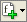 call the sub-menu to
manage indicators. All built-in technical
indicators are
grouped in it. Having chosen a name in the list, one can impose the indicator
into the active chart. More details can be found in the "Technical
Indicators" section.
The same actions can be performed by the "Insert
Indicators" menu command;
sub-menu to manage the
chart periods. When a period is selected in this sub-menu, the corresponding
changes will appear in the active chart.
Switching among chart periods can be performed by the "Charts
Timeframes" menu command,
the corresponding chart
context menu command,
or the corresponding buttons of the "Timeframes"
toolbar;
call the sub-menu to
manage templates. Any template can be imposed into the active chart from this
sub-menu. Moreover, a new template can be stored based on the active chart or
an existing template can be deleted. More details about working with templates
can be found in the "Templates
and Profiles" section.
The same actions can be performed by the "Charts
Template" menu command
or the corresponding chart
context menucommand.
|
Attention: The most commands of the "Charts" toolbar are published in the menu of the same name and in the chart context menu. |
Line Studies
Line Studies and graphical objects (geometrical shapes, signs, and texts) to be imposed into the chart are collected in the "Line Studies" toolbar. Commands of this toolbar (excluding the "Crosshair" and "Cursor") are duplicated in the "Insert" menu. Working with line studies is described in details in the corresponding section. Other icons in this toolbar are intended for working with graphical objects and for changing the cursor operation mode:
draw an ellipse. This
shape helps to select various areas in the chart. More details about working
with objects can be found in the section of the same name.
The "Insert
Shapes Ellipse" menu command
allows to draw this figure, as well;
draw a triangle. This
shape helps to select various areas in the chart. More details about working
with objects can be found in the section of the same name.
The "Insert
Shapes Triangle" menu command
allows to draw this figure, as well;
 draw a rectangle. This
shape helps to select various areas in the chart. More details about working
with objects can be found in the section of the same name.
draw a rectangle. This
shape helps to select various areas in the chart. More details about working
with objects can be found in the section of the same name.
The "Insert
Shapes Rectangle" menu command
allows to draw this figure, as well;
add a text label.
After this button has been pressed, one should select a point in the chart
where the label should be placed. Unlike the text (described below), the text
label is attached not to the chart, but to the chart window. When the chart is
scrolled, the text label does not move.
The "Insert
Text Label" menu command
will also add comment into the chart;
add a comment into the
chart. It will be anchored directly to the chart. When the chart is scrolled,
the text will move together with it.
The "Insert
Text" menu command
will also add comment into the chart;
menu to manage
graphical symbols. One can add graphical signs into the chart or delete all the
imposed signs from it using this menu.
These objects can also be imposed into the chart by the "Insert
Arrows" menu command;
a crosshair. Cursor in
this mode allows to highlight coordinates of the selected point in the chart or
indicator window. This mode can only work within the active chart window. If,
being in the "Crosshair" mode, one keeps the left mouse button
pressed and moves the cursor, a line connecting these two points will be drawn.
The distance between the points and the current price value will be highlighted
to the right of the second point of the line. This will look as [amount of bars
between two points] / [amount of points between two points] / [the current
price value in the second point]. This tool is named electronic ruler.
Cursor can also be switched to the crosshair mode by pressing
accelerating keys of Ctrl+F or the third mouse button;
a standard cursor (selection mode). The cursor in this mode allows to select various objects in the chart.
Timeframes
Switcher among the chart periods are grouped in this toolbar. The chart period will change in the active window after this toolbar buttons have been pressed. Just after that, the uploading of data for the selected symbol and period will start what can take some time.
Market Watch
The securities (symbols) for which the Client Terminal gets quotes from the server are listed in the "Market Watch" window.
The data are represented in this window as a table having several fields. The "Symbol" field contains the security name, the fields of "Bid", "Ask", and "Time" show the corresponding prices and time of their income from the server. Values of the "Maximum" and "Minimum" fields are calculated on basis of price changes within a day. The "Market Watch" window can be opened/closed by pressing of accelerating keys of Ctrl+M, by the "View Market Watch" menu command, or by pressing of the button of the"Standard" toolbar.
This window allows to place market and pending orders and open new charts. At the right mouse button click in the "Market Watch" window, the context menu will appear where the following commands are available:
New Order
open the "New Order" window where one can prepare and place a market
or a pending order for the symbol selected. At the order preparation, one can
specify the Stop
Loss and Take Profit levels.
More details can be found in the"Positions Opening" section.
The "New Order" window can also be opened by double
clicking on the security name in the "Market Watch" window, by the"Tools
New Order" menu command,
by the "Terminal
Trade New Order" window context menu command,
the button
of the "Standard"
toolbar, or by pressing of F9;
Chart Window
open the chart of the symbol selected. More details about working with chart
windows are given in thesection of the same name.
The symbol chart can also be opened by the "File New
Chart" and "Window New
Window" menu
commands and by pressing of the  button
of the "Standard"
toolbar;
button
of the "Standard"
toolbar;
Tick Chart open the tick chart of the symbol selected. Unlike normal charts, the tick chart is located directly in the "Market Watch" window. The tick chart of the selected symbol can also be viewed by switching to the tab of the same name in the same window. The tick data comes only when the account is connected. Thus, if an account was not active for a certain period of time, the tick chart may appear empty in the beginning. The tick data is stored separately for each server;
Depth Of Market open the depth of market of the symbol selected;
Specification open symbol parameters;
Hide delete (hide) the symbol from the list. To minimize the traffic, it is recommended to hide unused securities from the quotes window by this command or by pressing of the Delete button.
|
Attention: If there are open positions or pending orders for the symbol, or its chart is open, the symbol cannot be deleted. |
Hide All delete all symbols from the list. This command does not apply to securities for which there are open positions or the charts of which were opened in the current working session;
Show All show the list of all available securities. After this command has been executed, quotes will income for all these symbols;
Symbols call the window of the same name where there is a list of all available symbols. Symbols are grouped in the window according to their types. The "Show Symbol" command allows to add necessary symbols to the quotes window, and that of "Hide Symbol" to delete a symbol from it. The "Properties" window command allows to view the symbol parameters;
Sets open the sub-menu that manages the symbol sets. The current set of symbols can be stored in this sub-menu, as well as delete or select an already existing one. This is very comfortable when working with securities of different types;
Spread show/hide column that displays spread the difference between the bid and ask prices;
High/Low add the highest and the lowest values of the daily price to the quotes displayed;
Time show time of incoming quotes;
Auto Arrange
automatic arranging of columns when changing the window size.
Auto Arrange can also be enabled by pressing A button;
Grid
show/hide the grid separating columns.
The grid can also be shown by pressing G button;
Popup Prices open an additional quotes window. You can also open this window by pressing F10 on your keyboard. The list of symbols in this window is the same as that in the "Market Watch" window at the moment of the command execution. This means that changes in the symbol list in the "Market Watch" window does not influence that in the "Popup Prices". It is an information window, but trading operations can also be performed from it. To do so, one has to double-click with the left mouse button on the desired security. In the context menu of this window, there are commands allowing to set up data displaying parameters, enable the full screen mode, or locate the window over all others.
Contract Specification
The symbol contract specification window contains the terms of a symbol trading. To view the symbol properties, click "Specification" in its context menu in the "Market Watch" window.
The window displays the following parameters set by a broker:
Spread spread in points. If the spread is floating, the parameter is equal to 0.
Digits number of decimal places in the price of the symbol;
Stops level channel of prices (in points) from the current price, inside which one cannot place Stop Loss, Take Profit andpending orders. When placing an order inside the channel, the server will return the "Invalid Stops" message and will not accept the order;
Freeze Level level for freezing orders that are close to the current price. When an order price is as close to the market price as the value specified here or less than that, modification, deletion or closing of the corresponding position or order is prohibited;
Contract size number of units of the commodity, currency or financial asset in one lot;
Margin currency currency in which the margin requirements are calculated;
Profit calculation mode Forex, CFD or Futures;
Margin calculation mode Forex, CFD, Futures; CFD-Index, CFD-Leverage;
Margin hedge margin charged from hedged orders for 1 lot;
Margin percentage determines what part of the base margin size value calculated according to the symbol type is charged;
Trade permission to trade with this instrument: "Full access" allows to close and open positions; "Close only" allows only closing; "Disabled" full prohibit to trade;
Execution execution type of the symbol: Instant, Request or Market;
GTC mode expiration mode of orders:
Pendings are good till cancel pending orders are preserved as a trade day changes;
Good till today including SL/TP orders that are valid only during one trading day. With the end of the day, all levels of Stop Loss and Take Profit, as well as pending orders are deleted.
Good till today excluding SL/TP when a trade day changes, only pending orders are deleted, Stop Loss and Take Profit levels are preserved.
Minimal volume minimal volume of a deal for the symbol;
Maximal volume maximal volume of a deal for the symbol;
Volume step step of volume changes.
Swap type type of swap calculation:
in points the specified number of points of the security price.
in the base currency the specified amount in the base currency of the symbol.
in percentage terms as a percentage per annum. The percentage is taken from the position price (per 1 lot) and divided by 360, since the swap is calculated daily;
in the margin currency the specified amount in the symbol margin currency.
Swap long swap for Buy positions.
Swap short swap for Sell positions;
3-days swaps the day of triple swap charge;
First trade a day of beginning of symbol trading;
Last trade a day of end of symbol trading.
The lower part shows information about quoting and trading sessions of the symbol. Sessions are specified for every day of week.
Depth of Market
The depth of market displays the current market for a trading symbol. This tool provides the ability of quick and easy order management.
To open the Depth of Market window of a financial instrument, click " Depth of Market" in the context menu of the Market Watch.
List of Prices
The main part of DOM is occupied by the list of prices. The upper part (colored in red) displays Ask prices, while the lower part (colored in blue) displays Bid prices. The best depth of market prices are the current Bid and Ask for the symbol. The next level is set as the closest level allowing placing Buy Limit and Sell Limit orders considering stop level for the symbol. Further levels are set according to the symbol's price step.
The Trading column displays trader's current trade requests and stop levels (Stop Loss and Take Profit). For example:
BL 10 Buy Limit order of 10 lots;
SL 5 Sell Limit order of 5 lots;
BS 1 Buy Stop order of 1 lot;
SS 3 Sell Stop order of 3 lots;
sl 1 Stop Loss level of 1 lot;
tp 2 Take Profit level of 2 lots.
Trading Commands
Traders can send market and pending orders.
Pending Orders
Buttons for placing pending orders are located at the right side of Trading column. The order is placed at the price with a pressed button.
if this button is pressed in the Bid prices area, a Buy Limit order at a specified price will be placed; in case it is pressed in the Ask prices area, a Buy Stop order will be placed;
if this button is pressed in the Ask prices area, a Sell Limit order at a specified price will be placed; in case it is pressed in the Bid prices area, a Sell Stop order will be placed.
Trading Settings
The lower part of DOM contains trade operation settings:
sl Stop Loss level is set for placed limit orders. This parameter is specified in points from the current price;
vol the volume of created market and limit orders in lots;
tp Take Profit level is set for placed limit orders. This parameter is specified in points from the current price.
Market Orders
Market order commands are located below:
Sell make a Sell deal in the size specified in "vol" field at the best available price.
Close this button is enabled only if there is an open position for a selected financial instrument. It allows you to close the entire position at the best available price.
Buy make a Buy deal in the size specified in "vol" field at the best available price.
Context Menu
Depth of Market has an adaptive context menu. The set of command varies depending on where it is called.
Buy Limit/Sell Limit place a Buy Limit or Sell Limit order at the price, at which the context menu is called. If you open the menu in the area of sell offers, the menu suggests the Sell Limit command, in the buy offers area it suggests the Buy Limit command.
Sell Stop/Buy Stop place a Sell Stop or Buy Stop order at the price, at which the context menu is called. If you open the menu in the area of sell offers, the menu suggests the Buy Stop command, in the buy offers area it suggests the Sell Stop command.
Take Profit this command appears if the user has an open position for the selected symbol and a Take Profit is set for that position. Using this command the Take Profit can be moved to the price, at which the command is called.
Stop Loss this command appears if the user has an open position for the selected symbol and a Stop Loss is set for that position. Using this command the Stop Loss can be moved to the price, at which the command is called.
Alert create an alert for a selected price. If the context menu is called in the area of sell offers, it creates "Ask > selected price" alert, in the buy offers area it creates "Bid < selected price" alert. Alerts created from the depth of market are automatically set to expire in one hour.
If the context menu is opened at the line of a limit order, a Stop Loss or a Take Profit, additional commands appear:
Modify open the window of modification of a selected order;
Delete/Cancel cancel a selected order.
Quick Trading from Depth of Market
Depth of Market allows users to quickly manage stop levels (Stop Loss and Take Profit) and pending orders of open positions. To do this, enable "One-click trading" in the client terminal's settings. Trade requests are sent from Depth of Market instantly without showing a trading dialog.
Moving Stop Levels
Stop levels of open positions are displayed in Trading column as TP (Take Profit) and SL (Stop Loss). These levels can be moved by mouse:
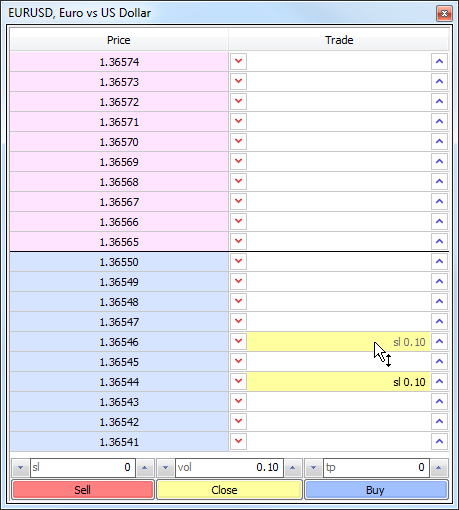
Move the level to the line with the necessary to change it instantly.
Deleting Stop Levels
Stop levels can be deleted from Depth of Market:
Hover the mouse cursor over the button (or ) to the right or left from the level and click Shift. The button will change its view to . Click the button to delete the level.
Placing Orders
Pending orders are placed using the buttons and against a necessary price:
To place a Buy Limit order, click in the Bid price area.
To place a Buy Stop order, click in the Ask price area.
To place a Sell Limit order, click in the Ask price area.
To place a Sell Stop, click in the Bid price are.
After that, an order will be placed at the specified price. It will have the volume set in "vol" field, as well as Stop Loss and Take Profit levels specified in "sl" and "tp" fields, respectively.
Changing orders
Depth of Market allows users to easily change prices of previously set orders.
Move the pending order to the necessary price line. Order price will be changed instantly. If the Stop Loss and Take Profit levels are set for the order, they will be moved on the same distance as the price.
If we drag a limit order through ask/bid border, it will change to a stop order (Buy Limit will be replaced by Buy Stop, while Sell Limit - by Sell Stop).
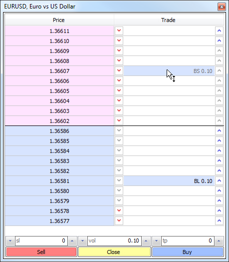
|
If several same price orders are placed, they cannot be moved in Depth of Market. |
Deleting Orders
To delete the order from the Depth of Market, hover the mouse cursor over (or ) button to the right and click Shift. The button will change its view to . Click the button to delete the order.
|
If several same price orders are placed, the oldest one is removed first. |
Data Window
This window is intended for displaying of price information (OHLC), date and time of the bar, and the indicators (includingcustom ones) used. "Data Window" is an information window and it does not allow to perform any actions. The desired information about a certain bar and the imposed indicators can be obtained here promptly. To do so, it is sufficient to place the cursor over the necessary bar.
Context menu commands of this window allow:
Copy
copy data from this window into the clipboard for further use in other
applications.
The same action can be performed by pressing of accelerating
keys of Ctrl+C;
Last Data show/hide the latest data column. At that, an additional column containing the last bar data will appear in the window;
Auto Arrange set up the column size automatically when the window size changes;
Grid show/hide grid to separate columns;
Show show/hide information fields. Any of the bar prices (OHLC), date or volume can be selected in the sub-menu that appears. If the element has not been checked, it will not be shown.
|
Attention: Any indicator can be set up (the "Visualization"tab in the indicator properties window) in such a way that its data will not be shown in this window. |
Navigator
This window allows to get a quick access to various features of the terminal. This window can be opened/closed by pressing accelerating keys of Ctrl+N, by the "View Navigator" menu command, or by pressing of the button of the "Standard" toolbar.

The list of features is listed as a tree and contains five groups: "Accounts", "Indicators", "Expert Advisors", "Custom Indicators", and "Scripts".
Accounts
The "Accounts" group includes the list of open accounts. Using a context menu, one can open a new demo account or delete the old one.
Open an Account An unlimited amount of demo accounts can be opened from the terminal. To do so, one has to execute the "Open an Account" context menu command or press the Insert button. More details about opening of accounts can be found in the corresponding section.
Login to Trade Account to authorize an existing account (whether a demo or a real one), one has to execute the "Login to Trade Account" command or double-click with the left mouse button on the desired account line.
Login to Web Terminal the web terminal allows trading on financial markets and conducting technical analysis just using a web browser. The web platform is safe to use - any transmitted information is securely encrypted.
|
At the moment, the web terminal use under testing and not all of its planned features are available. The web terminal may be unavailable if the broker doesn't update the trade server to the latest version and doesn't enable web trading. The web trading is available at MQL5.community in the "Trading" section. |
Login to MQL5.community open the settings of the trading platform to login to MQL5.community and get additional services.
Change Password open the window of changing the password of the trade account.
Delete delete a selected account. The same action can be performed by pressing the Delete key.
Add to Favorites add the selected account to favorites.
Register as Signal register a selected account in the "Signals" service. After executing this command, you'll go to the signal registration page at MQL5.community. The selected account and the right broker server will be automatically specified in the registration form.
Register a virtual server this command allows you to allocate a virtual server for the terminal's continuous round-the-clock operation. Unlike renting ordinary VDS or VPS from third-party companies, you are able to select the server that is the closest to your broker minimizing the network latency when sending orders from the terminal to the trade server.
|
Attention: Real accounts cannot be started from the terminal, they are opened only by a brokerage company. |
Indicators
This group contains indicators the main tools for analyzing the price dynamics:
Built-in technical indicators divided into four categories: Trend, Oscillators, Volumes, Bill Williams.
Indicators downloaded from the source code library at MQL5.community. Displayed in Downloads sub-category.
Indicators purchased from the Market the store of applications for the trading platform. Displayed in Market sub-category.
Built-in examples of indicators with the source codes. Displayed in Exmaples sub-category.
Custom indicators located in /MQL4/Indicators folder; displayed according to the structure of sub-folders they are stored in.
The Navigator shows only executable indicator files (*.EX4).
|
If the diamond in the lower right corner of a program icon is gray (for example, ), it means that the program doesn't have source code files or it couldn't be compiled. |
The following commands can be executed in the context menu:
Attach to Chart apply a selected indicator to the active chart. The same action can be performed by a double click on the indicator. Besides, using the Drag'n'Drop method one can apply an analytical tool to any chart or a subwindow of already attached indicator.
Modify open the source code file (*.MQ4) of a selected indicator in MetaEditor. The same action can be performed by selecting an indicator and pressing the Enter key.
Delete delete a selected custom indicator. This action deletes both its executable file (*.EX4) and its source code file (*.MQ4). The same action can be performed by clicking the Delete key.
Buy from the Market go to the Market the store of applications for the trading platform.
Order your own Program go to ordering a development of an MQL4 program at the "Freelance" service at MQL5.community.
Create in MetaEditor go to the creation of a custom indicator. The execution of this command opens MQL4 Wizard inMetaEditor where an indicator can be created. The same action can be performed by clicking the Insert key.
Add to Favorites add a selected indicator to favorites.
Set hotkey assign a hotkey to the selected indicator.
Refresh re-read the information about existing compiled indicators from the hard disk. The execution of this command is necessary when copying already compiled files to the corresponding folder of the client terminal.
Online library go to "Code Base" section, where you can easily download programs published in the corresponding section of the MQL5.community website.
Expert Advisor
The "Expert Advisors" group contains the list of all available expert advisors. Expert Advisors in the terminal are programs allowing to automate analytical and trading activities. To create and modify them, the built-in editor, MetaEditor, is used. More details about creation and working with experts can be found in the "Auto Trading" section.
The "Create" context menu command allows to create a new expert, "Modify" to modify an existing one, and "Delete" to delete an expert from the terminal. The "Attach to a Chart" command or double-click with the left mouse button allow to impose the expert into the active chart. After that, when a new tick incomes, the expert will start working. Experts can be imposed into any chart with the "Drag'n'Drop" technique.
Hot Keys
Hot keys can be assigned to call any elements of the "Navigator" window, except for those in the "Accounts" group.
To set a hot key for an element, one has to execute the "Set hotkey" command of this element's context menu. The hot keys set have a higher priority being compared to those predefined. For example, Ctrl+O is predefined to call the terminal setting window. If this pair of keys is set to call the On Balance Volume indicator, the terminal setting window will not be called by pressing of Ctrl+O anymore.
Favorites Tab
The "Favorites" tab is intended for a quick access to objects mostly used.
In this tab, for example, only necessary accounts, indicators, scripts, and experts can be placed. This allows to accelerate the trader's work, especially, if there is a need to act promptly. To move a necessary object into the "Favorites" tab, one has to execute the corresponding context menu command. If the object is not necessary anymore, it can be deleted from the tab using the "Delete from favorites" context menu command.
Attention: All objects included in the "Favorites" can function without any limitations. All managing commands placed in the context menu can also be called directly from this tab.
Chart Switching Bar
This is a bar that contains tabs of charts that are currently open in the terminal. It is located below the chart window:
This bar is used for switching between charts currently open in the terminal by clicking on their tabs. Besides the name of the financial security the tab shows the chart period. You can close a chart by clicking with the mouse wheel on the chart tab.
The context menu of the bar tabs contains the following commands:
Close close the selected chart. The same action can be performed by pressing the middle mouse button at the chart tab;
Maximize maximize the active chart window to the whole viewing area;
Minimize minimize the active chart. In this case only chart window header will remain in viewing area;
Restore show the active chart in a window mode;
Windows call the chart managing window. The same action can be performed by pressing Alt+W key combination;
Tile Windows arrange chart windows as a tile. The same action can be performed by pressing Alt+R key combination.
Chart Managing Window
This window allows to manage open charts.
The window contains the list of charts that are currently open. In order to move to one of them, one should click twice on it in the list, or select it and press the "Activate" button. The "Close" button is used for closing a chart selected in the list.
Terminal
"Terminal" is a multifunctional window allowing to access to various terminal features. This window allows to control over trading activities, view news and account history, set up alerts, and work with the internal mail and system journal. The window can be opened by the "View Terminals" menu command, by pressing of accelerating keys of Ctrl+T, or the button of the "Standard" toolbar. There are several tabs in the window:
Trade in this tab, one can view the status of open positions and pending orders, as well as manage all trading activities. Besides, the total financial result for all open positions is published in this tab;
Exposure this tab contains the summary information about the state of assets by all open positions;
Account History history for all performed trade operations and balance without taking open positions into consideration are published here. The efficiency of all trade activities can be estimated with the results given in this tab;
News all financial news incoming in the terminal can be viewed from this tab. This prompt information is indispensable for fundamental analysis;
Alerts various alerts can be viewed and set here. Any files executable in the operational environment (including wave files) and messages to be sent by email can be used as alerts;
Mailbox all message income in the terminal by internal email are stored here. Electronic messages are sent from here, as well;
Company this tab displays a useful web page for a trader;
Market buying or downloading applications from the market of MQL4 applications at MQL5.community.
Signals this tab displays trading signals of the "Signals" service, which are available for subscription;
Code Base here you can download any application published in the "Code Base" section of the MQL5.community website;
Search this tab displays the result of searching through the client terminal;
Expert Advisors information about functioning of the attached expert, including opening/closing of positions, order modifying, the expert's own messages, etc., are published in this tab;
Journal information about terminal launching and about events during its operation, including all trade operations performed, is stored in the journal.
|
Attention: Some tabs of the "Terminal" window can be absent. This means that they are empty at the moment. For example, the "Expert Advisors" tab will be hidden until a message from MQL4 program incomes. |
Trade
The "Trade" tab contains information about the current status of the trading account, about open positions and pending orders placed.
All open positions can be sorted by any field. Then there is a line of the account balance and financial result of open positions followed by the list of pending orders. When a pending order triggers, a new position will be opened and the pending order line will be replaced with that of the position opened.
Trade Operations
All trade operations are displayed as a table having the following fields (from left to right):
Order the operation ticket number. It is a unique number of the trade operation;
Time time of position opening. The time is represented as YYYY.MM.DD HH:MM (year.month.day hour:minute). This is the time at which the position was opened;
Type type of the trade operation. There are several types of trading operations that can appear here: "Buy" long position, "Sell" short position, and pending orders named Sell Stop, Sell Limit, Buy Stop, and Buy Limit;
Size the amount of lots participating in operation. The minimum amount of lots to participate in operations is defined by the brokerage company, and the maximum is limited by the deposit size;
Symbol this field displays the name of the security participating in the trade operation;
Price price of position opening (no to be mixed up with the current price described below). This is the price at which the position was opened;
S/L
the placed
Stop Loss order level.
If the order has not been placed, a zero value will be written in this field.
More details about working with orders can be found in the corresponding section;
T/P
the placed
Take Profit order level.
If the order has not been placed, a zero value will be written in this field.
More details about working with orders can be found in the corresponding section;
Price the current price of the security (not to be mixed up with that of position opening described above);
Commission commissions charged by the brokerage company at performing trade operations are written in this field;
Taxes taxes charged when performing trade operations are written in this field;
Swap charging of swaps is stored in this cell;
Profit the financial result of the transaction made will be written in this field taking the current price into consideration. Positive result means that the transaction was profitable, and negative one means that it was unprofitable;
Comments comments on trade operations are stored in this column. A comment can only be written at the position opening or at placing of a pending order. Comment cannot be changed at order or position modifying. Besides, the brokerage company can store a comment to a trade operation, as well.
Trading
This tab allows not only to view the open positions and placed orders, but to manage trading activities. One can do the following here: open a new position, place a pending order, modify or delete it, and close a position. To do all this, one has to use the following context menu commands:
New Order a new order. The orders managing window will appear at this command. A new position can be opened and a pending order can be placed in it. At that, the following must be specified: the security, amount of lots, order type (market order or a pending one), as well as Stop Loss and Take Profit order levels. More details about placing of orders can be found in the "Control over Trade Positions" section;
Close Order close a trade position. This command becomes active only if the context menu has been called at an open position. The order managing window appears at this command, as well. This window displays not only "Sell" and "Buy" buttons, but also the "Close#XXXXXXX ..." button (where XXXXXXX is the position ticket number). Besides, having executed this command, one can close the selected positions together with the hedged ones. More details about closing of positions can be found in the corresponding section;
Modify or Delete Order change the "Stop Loss" and "Take Profit" values of open positions or the pending order price. If the Stop Loss and Take Profit levels specified are too close to the current price, the error message will appear, and the levels will not be placed. Their values must be changed to be not so close to the current price, and then they can be placed again. More details about modifying of orders can be found in the section of the same name;
Trailing Stop place, modify, or delete the "Trailing Stop" level. Having selected the corresponding level in the menu, one can activate the trailing stop with the given parameter. The "None" value is used for disabling of the order. "Delete All" disable all trailing stops. More details about trailing stops are given in the "Trailing Stop" section;
|
The "Trailing Stop" command may be missing in the context menu, in case using that function is disabled on the broker's side. |
Profit show profit/loss as points, as term currency, or as deposit currency. Changes in this parameter are displayed in the "Profit" field. If the parameter of "show profit in the term currency" (quote currency) is selected had, there are, for example, open positions for USDJPY, the profit will be shown in Japanese Yens;
Commissions show/hide the "Commissions" column where the commission for each of the performed trade operations will be displayed;
Taxes show/hide the "Taxes" column to display the tax for each trade operation;
Comments show/hide the "Comment" column. Comments to trade operations are written in this column. A comment can be written only if a position is being opened or an order is being placed. It cannot be changed at modifying of an order or of a position. Besides, the brokerage company can write a comment to a trade operation;
Auto Arrange automatic arrangement of columns at changing of the window size;
Grid show/hide grid to separate columns.
Accelerating keys of Ctrl+F9 switch the the focus in the "Terminal Trade" window. After they have been pressed, one can trade with the keyboard.
One Click Trading
The tab provides the possibility to close positions and delete pending orders by a single mouse click. This function is available in case the following conditions are met:
"One click trading" option is enabled in the terminal settings;
execution type of the symbol, by which position is closed "Instant" or "Market".
"Profit" column of each open position and trading order has the button . If you click the button for a position, it will be immediately closed without additional confirmations. If you click the button for a pending order, it will be immediately removed without additional confirmations.
|
If it is impossible to perform a deal in one click ("One click trading" option is disabled or "Request" execution mode is used for a symbol), clicking the button will lead to the standard position closing or order deleting dialog. When a getting a requote, the corresponding message is written to the terminal journal and the requote sound is played. |
Exposure
The "Exposure" tab contains the summary information about the state of assets by all open positions.
The information is displayed in the from of a table that contains the following fields:
Asset the name of a currency or symbol;
Volume the volume of a client's position (in units) by the given position or symbol considering leverage;
Rate the rate of currency or symbol to the deposit currency;
Deposit Currency this column displays the amount of actually spent deposit currency (leverage is not considered) on buying/selling a currency or a symbol;
Graph the graphical displaying of client's position in the currency of deposit (long positions are displayed with blue stripes and short positions are displayed with red ones).
|
The assets of account by the deposit currency are displayed considering free margin. |
Diagram
There is a possibility of viewing the information by long and short positions in the form of a diagram. To switch between diagrams, one should press on their names or use the context menu.
Context Menu
The context menu of this tab allows executing the following commands:
Diagram open the submenu of diagram managing:
Long Positions show the circle diagram by long positions;
Short Positions show the diagram by short positions;
Hide hide the diagram;
Copy copy the selected line to the clipboard;
Grid show/hide grid to separate table fields;
Auto Arrange enable/disable automatic resizing of columns in case window size is changed.
Account History
Information about all trade operations performed is stored in the "Account History" tab.
The entire history is displayed as a table with the following fields (from left to right):
Order operation ticket number. It is the unique number of a trade operation;
Time time of position opening. It is given in YYYY.MM.DD HH:MM (year.month.day hour:minute) format. This is the time when the position was opened;
Type trade operation type. Only three types of trade operations can be found here: "Balance" entering of funds in the account, "Buy" a long position, and "Sell" a short position;
Size amount of lots participated in the operation;
Symbol this field shows the name of the security participated in the operation;
Price price of position opening. This is the price at which the position was opened;
S/L level of the Stop Loss order placed. If a trade position was closed by this order, its corresponding cell will be colored in red, and "[s/l]" will appear in the field of comments. If no order was placed, zero value will appear in this field. On the other hand, if the an order was placed, but did not trigger, its value will still be shown in this field. At that, the cell will not be colored, and no "[s/l]" will be output in the field of comments. More details about working with orders are given in the corresponding section;
T/P level of the Take Profit order placed. If a trade position was closed by this order, its corresponding cell will be colored in green, and "[t/p]" will appear in the field of comments. If no order was placed, zero value will appear in this field. On the other hand, if the an order was placed, but did not trigger, its value will still be shown in this field. At that, the cell will not be colored, and no "[t/p]" will be output in the field of comments. More details about working with orders are given in the corresponding section;
Time time of position closing. It is given in YYYY.MM.DD HH:MM (year.month.day hour:minute) format. This is the time when the position was closed;
Price price of position closing. This is the price at which the position was closed;
Commission commissions charged by the brokerage company at performing trade operations are written in this field;
Taxes taxes charged when performing trade operations are written in this field;
Swap the swaps charged are stored in this field;
Profit the financial result of transaction will be written in this field. Positive number means that the transaction was profitable, and the negative one does vice versa. The profit is shown only in the deposit currency here, unlike it is in the field of the same name in the "Trade" tab.
Comments comments on trade operations are stored in this column. A comment can be input only at opening of a position or placing an order. The comment cannot be changed when an order or a position are being modified. Besides, a comment to the trade operation can be input by the brokerage company.
You can easily display the history of performed trades on a chart. To do it, you should just drag the necessary trade on a chart via the mouse. The entering and exiting points of the trade, connected with a line, will be shown with arrows. If you hold the Shift button while dragging a trade, the entire history of trades will be placed on the chart.
Context Menu
Commands allowing to manage the history range and data performance, as well as commands of history data export are grouped in the context menu:
All History show the entire account history. At this command execution, the whole financial history of the account will appear in the screen without any limitations by time;
Last 3 Months show only the last 3-months history. The history of orders is requested by their close time;
Last Month show only the last month history. The history of orders is requested by their close time;
Custom Period show history for the selected period. At this command execution, the window that manages the history range will appear where one can select one of the pre-defined ranges (the "Period" field) or specify them manually in the fields of "From" and "to". The history of orders is requested by their close time;
Save as Report save the account history as a report in the form of the HTML file. At that, a window allowing to select a path for saving of the file will appear;
Save as Detailed Report save the account history as a report in the form of the HTML file. A detailed report differs from a normal one for an additional set of parameters. After this command has been executed, a window allowing to select a path for saving the file will appear;
Commissions show/hide the "Commissions" column;
Taxes show/hide the "Taxes" column;
Comments show/hide the "Comments" column. Comments to trade operations are stored in this column. A comment can only be input at opening of a position or at placing of an order. Besides, the brokerage company can write a comment to the trade operation, as well;
Auto Arrange automatic arrangement of column sizes at changing of the window size;
Grid show/hide grid for separating of columns.
Reports
The upper part of the report contains general information about the account. Then the trades details are given that are separated into closed trades (Closed Transactions), open trades (Open Trades) and pending orders (Working Orders). The number of the fields displayed depends on the report type chosen (common or detailed).
Ticket ticket number of a trading position;
Open Time time of position opening;
Type trade type (sell, buy, s/l, t/p, modify, close at stop, etc.);
Size amount of lots traded;
Item security traded;
Price open price of a trading position;
S/L the value of Stop Loss;
T/P the value of Take Profit;
Close Time time of position closing;
Price price of position closing;
Commission commissions charged by the brokerage company at performing the trade operation;
Taxes taxes charged at performing trade operation;
Swap swaps charged;
Profit the financial result of the transaction.
For pending orders, an additional column, "Market Price", appears. The current market price as of the report generation is specified in it.
The summary about the financial performance of the account is located below (Summary):
Deposit/Withdrawal information about the deposits and withdrawals of the account;
Credit Facility information about the credit funds on the account;
Closed Trade P/L total profit/loss by all closed trades of the account;
Floating P/L current profit/loss by all opened trades of the account;
Balance balance of the account;
Equity equity of the account;
Margin the account margin for open trades;
Free Margin the account free margin.
The report also contains the balance diagram and the statistical information about the account:
Total Net Profit financial result of all trades. This index represents a difference between the "Gross Profit" and "Gross Loss";
Gross Profit the sum of all profitable trades in terms of money;
Gross Loss the sum of all unprofitable trades in terms of money;
Profit Factor the ratio between gross profit and gross loss in per cents. The one value means that profit equals to loss;
Expected Payoff the expected payoff. This statistically calculated index represents the average profit/loss factor of a trade. It can also be considered for representing the expected profit/loss factor of the next trade;
Absolute Drawdown the largest loss is lower than the initial deposit value;
Maximal Drawdown maximal loss of the local maximum in the deposit currency and in percents of the deposit;
Relative Drawdown the maximal loss in percents of the maximum balance value and its corresponding money value;
Total trades the total amount of trade positions;
Short Positions (won %) the amount of short positions and percentage of won thereof;
Long Positions (won %) the amount of long positions and percentage of won thereof;
Profit Trades (% of total) the amount of profitable trade positions and their percentage in the total trades;
Loss trades (% of total) the amount of loss trade positions and their percentage in the total trades;
Largest profit trade the largest profit among all profitable positions;
Largest loss trade the largest loss among all unprofitable positions;
Average profit trade average profit value for a trade (the sum of profits divided by the amount of profitable trades);
Average loss trade average loss value for a trade (the sum of losses divided by the amount of unprofitable trades);
Maximum consecutive wins ($) the longest series of profitable trade positions and the sum of their wins;
Maximum consecutive losses ($) the longest series of unprofitable trade positions and the sum of their losses;
Maximal consecutive profit (count) the maximum profit of a series of profitable trades and the amount of profitable trades corresponding with it;
Maximal consecutive loss (count) the maximum loss of a series of unprofitable trades and the amount of unprofitable trades corresponding with it;
Average consecutive wins the average amount of profitable positions in consecutive profitable series;
Average consecutive losses the average amount of unprofitable positions in consecutive unprofitable series.
News
The list of income news is stored in the "News" tab.
The news topics are represented as a table and arranged according to the incoming time. The news incoming time, its topic and category are published in the table. This list is updated automatically at incoming of the latest news.
The number of news received for the last 24 hours is displayed next to the tab name.
The following commands are available in the context menu:
View view the selected news. One can also read news by double-click with the left mouse button on the topic;
Copy copy the news to the clipboard;
Categories this command appears only if the terminal receives several categories of news. It opens the sub-menu for selecting news categories to be displayed. In order to hide a category a check near it should be removed. If terminal receives only news that belong to one category, this sub-menu is not shown. If there are additional subcategories, the "Customize" command appears. Use it for a detailed setup of news categories;
Category show/hide the "Category" column;
Auto Arrange automatic arrangement of columns when changing of the window size;
Grid show/hide grid to separate columns.
|
Attention: If there is no "News" tab in the "Terminal" window, it means that no news have income yet. If the "Enable news" option is disabled in terminal settings, news will not income. If the given account has no appropriate rights, this can be one of the reasons why news do not income or cannot be viewed. |
News Categories
If there are additional subcategories, the "Customize" command appears in the "Categories" menu. Use it for a detailed setup of news categories:

In the tree-structured list check those categories that should be displayed in the client terminal.
Alerts
This tab contains information about created alerts.
The alerts are intended for signaling about events in the market. Having created alerts, one may leave the monitor as the client terminal will automatically inform about the server event.
All alerts in this tab are represented as a table with the following fields:
Symbol security the data on which are used to check for the condition specified. If the "Time=" parameter (alert triggering at the pre-defined time) was selected as a condition, the symbol does not matter;
Condition condition under which the alert will trigger. The following can be used as such a condition:
Bid> the Bid price is higher than the specified value. If the current Bid price exceeds the given value, the alert will trigger;
Bid< the Bid price is lower than the specified value. If the current Bid price goes under the given value, the alert will trigger;
Ask> the Ask price is higher than the specified value. If the current Ask price exceeds the given value, the alert will trigger;
Ask< the Ask price is lower than the specified value. If the current Ask price goes under the given value, the alert will trigger;
Time= time is equal to the given value. As soon as this time comes, the alert will trigger.
Counter the amount of alert triggerings;
Limit maximum permissible amount of the alert triggerings. Having triggered this given amount of times, the alert will stop triggering;
Timeout the period of time between alert triggerings;
Expiration this field displays a lifetime of the alert. At the specified time the alert will be automatically deleted. The local computer time should be indicated here.
Event the action to be performed. This can be an audio signal, a file executable in operational environment, a message sent by email or a push notification sent to a mobile device.
Alerts Management
The following context menu commands are intended for managing alerts:
Create create a new alert. The same action can be performed by pressing of the Insert key;
Modify edit the alert. The same action can be performed by double-clicking on the alert name in the table or by pressing of the Enter key;
Delete delete the alert. This action can also be performed by pressing of the Delete key;
Enable On/Off enable/disable the alert. The alert will not be deleted when disabled, but it stops to trigger. It can be enabled later. The same action can be performed by pressing the Space key or enabling in the alert setup window (described below).
|
Attention: To manage alerts with the keyboard, one should activate this window first. To do so, it is necessary to click with the left mouse button in the window. |
One can start modifying of the alert by double-clicking of the left mouse button in the alert information line. In this case, as well as at execution of the "Modify" and "Create" context menu commands, the alert editor window will appear:
Enable alert on/off. When the alert is off, it is not deleted, but it will stop functioning. This option is similar to the "Enable On/Off" context menu command and pressing of the Space key;
Action action performed when an event happens:
Sound play a sound file;
File run an executable file;
Email send message to the email specified in the terminal settings.
Notification send a push notification to a mobile device. Sending push notifications requires specification of the MetaQuotes ID in the terminal settings. MetaQuotes ID is a unique identifier, which is assigned to each mobile terminal during installation on a device. Push notifications are an effective means to notify of events, they are instantly delivered to the mobile device and are never lost. The message text is specified in the "Source" tab.
Expiration in this field, one can specify a lifetime for the alert. At the specified time the alert will be automatically deleted. The local computer time should be indicated here.
Symbol security the values of which will be used to check the condition;
Condition condition ("Time=", "Bid<", "Bid>", "Ask<", "Ask>") under which the alert will trigger;
Value check value of the condition. If the symbol price is equal to this value, the alert will trigger;
Source depending on the typy of action performed when an event occurs, one of the following is specified here:
a sound file in *.wav, *.mp3 or *.wma.
an executable file in the *.exe, *.vbs or *.bat format.
an email template. If you select "Email", a click on this field will open a window for writing a template of an email to be sent to the address specified in the terminal settings. You can also just write an email text message in the format "email subject\n email text";
a text of a push message. The maximum message length is 255 characters.
Timeout the time period between alert triggerings;
Maximum iterations maximum amount of times the alert repeats triggering.
The "Test" button allows to check the usability of the selected alert. For changes to come into effect, one must press the "OK" button.
|
Attention: To send messages about events happened, one has to set up mailbox parameters in the program settings. |
Creating Alerts on Chart
Alert can be quickly created right on a chart. To do it, execute the " Alert" command in the chart context menu:
If the menu is opened above the current price the alert is created with condition "Bid > selected price", below the current price "Bid < selected price". Alerts created from charts are automatically set to expire. The expiration time depends on the chart timeframe:
For minute timeframes the expiration is set in hours. The number of hours corresponds to the number of minutes in the timeframe. For example, the expiration will be set to 1 hour on M1 timeframe, to 5 hours on M5 timeframe, to 30 hours on M30 timeframe, etc.
For hourly timeframes the expiration is set in days. The number of days corresponds to the number of hours in the timeframe. For example, the expiration will be set to 1 day on H1 timeframe, to 2 days on H2 timeframe, to 6 days on H4 timeframe, etc.
On a daily timeframe the expiration will be set to 24 days.
On a weekly timeframe the expiration will be set to 2 weeks.
On a monthly timeframe the expiration will be set to 2 months.
Alerts are displayed via red arrows on the right side of charts of the corresponding instruments:
The price level of an alert can be modified directly on the chart. Just drag the alert arrow using a mouse.
|
To display alerts on charts, enable "Show trade levels" option in the client terminal settings. |
Mailbox
The "Mailbox" is intended for working with the internal mailing system.

It is in this window of the "Terminal" where all electronic messages that income to the terminal are stored. They are represented as a table with the following fields:
Time the time of the news incoming;
From the sender name;
Headline the headline of the message.
Using a double-click with the left mouse button on the necessary headline or the "View" context menu command, one can view the content of the selected message, and one can delete a message using the "Delete" command. Besides, if the brokerage company permits it, one can send messages to the systems administrator or to technical support service from this tab. To do so, one has to execute the "Create" context menu command, then select a receiver in the appearing window, head the message, write its text, and press the "Send" button.
|
Attention: All messages are sent by internal mailing system and do not require any additional settings. If any problems occur when using the mailbox, it is recommended to refer to the technical support service. |
Company
At broker's decision this tab may display a useful web page for a trader, for example, the technical support page.
Any link on this web page is opened in a separate window of your browser.
|
This tab may be absent at your broker's decision. |
Market
Market is a store of MQL4 applications at MQL5.community. Here they can download for free or buy trading robots, indicators and other applications for the trading terminal.
Discover in 10 Minutes: Video on Market
Watch the below tutorial videos to learn about the Market. Click on the video image to watch it.
|
Find more about how to use the store of application in Market section. |
General Information
|
Before working with the Market service read the rules carefully.The rules are published at MQL5.community website. To work with the "Market" service, you should have a valid account on the MQL5.community website. Account data can be specified in the terminal settings. If the data is not specified in the settings, it will be requested every time you try to download/purchase the product. All calculations are performed using the MQL5.community internal payment system. Each product is tied to the configuration of PC it was purchased from. The number of free product activations available to the buyer on another PC after purchasing the product is defined by the seller. The minimum number of such Activations is 4. |
Before purchasing an application you can download its demo version. Demo versions have some limitations:
A demo version of an Expert Advisor cannot be launched on an online chart of the client terminal. Its trading part can be tested only in the Strategy Tester;
a demo version of an indicator cannot be launched and seen on an online chart. Its behavior can only be seen in the Visual testing mode in the Strategy Tester.

Applications Categories and Searching
|
Watch video: How to search and choose applications The Market features a well-developed product filtration and sorting systems. Each product has a detailed description and screenshots. Moreover, robots and indicators have demo versions. Watch our video to know how to use all that functions and make the right choice. |
The upper part of the tab is designed to search the applications.
Category experts, indicators, panels, utilities, etc.
Price and novelty sorting products by price and novelty.
Favorites product marked as favorite.
Purchased list of products purchased/downloaded by the user;
Balance current account balance on MQL5.community. If MQL5.community account is not specified in the terminal settings, registration link is displayed instead of the balance.
 the field for
searching applications by their name
or description. Enter the word into the search field and click
the field for
searching applications by their name
or description. Enter the word into the search field and click  .
.
Viewing Products
|
Watch video: Free-of-charge testing of Expert Advisors and Indicators before purchase Before making a purchase it's recommended to test desired robots and indicators. It's an easy and free-of-charge operation that will give you more confidence in a product. Watch the video for details. |
The list of applications displays their cost and rating formed by the users evaluation. The "Free" label means that the application is distributed on a free of charge basis.
Click on the application's logo to view, download or purchase it:
The upper part contains the toolbar for switching between the application data tabs:
 back to the
applications list.
back to the
applications list.
Application a detailed description of the application can be viewed here.
Screenshots application screenshots can be viewed here.
Reviews users' reviews about the application can be viewed here. The tab is not displayed, in case there are no reviews.
Purchasing Products
|
Watch video: How to purchase a robot or an indicator in Market? Any trader will find thousands of trading robots and indicators in the Market. All of that can be purchased directly in the platform and it's much easier than you think. |
To purchase an application, click on it and then click the "Buy" button.
|
The cost of a product is displayed under its logo. Before buying a product, specify your MQL5.community account in the terminal settings. |
To perform a payment, you can use your MQL5.community account funds. To do this, select MQL5 payment method.
|
Making a purchase, you agree to the Rules of Using the Market Service. |
Enter the password of your MQL5.community account to confirm your purchase. The specified amount is deducted from your account, and the product is downloaded to your terminal.
If your MQL5.community account has insufficient funds for buying a product, you may pay for it via one of the available payment systems directly in the terminal. To maintain a clear and unified history of purchases from the Market, the required amount will be first transferred to your MQL5.community account, from which a payment for the product will be made.
After selecting a payment method, the page of a corresponding payment system is opened. Specify the necessary payment data: your login and password in the payment system or card information.
The specified amount is deducted from your account, and the product is downloaded to your terminal.
|
All purchases and downloads are displayed on the "Purchased" tab. The products are downloaded to the /MQL4/program_type/Market/ terminal folder, where program_type is an application type. For example, Expert Advisors will be downloaded to the /MQL4/Experts/Market/. |
Purchasing Products Without Signing Up for MQL5.community
If you do not have an MQL5.community account yet, you can still buy a Market product. Select the appropriate payment system and make a payment as described above.
We strongly recommend that you sign up for MQL5.community after making a purchase. This will allow you to:
Install the product on other computers within the available number of activations
Receive free product updates
The account should be registered directly from the terminal. Click Register MQL5.community account in the upper part of the Market window. After the registration is complete, the purchase is bound to the new account. You can see all your payments and purchases in your profile on the MQL5.com website.
Renting Products
The Market products can be rented for 1, 3, 6 or 12 months. For buyers, the rent is another opportunity to assess a product before buying a full license. Unlike demo versions that can be launched only in the strategy tester, rented products have no limitations except for validity period.
|
Rental period and fee, as well as the very possibility to rent are set by product developers. Therefore, some products may be unavailable for rent. |
Rental fee and period are displayed under a product logo:
Click Rent and select the rental period. As in the case of the full versions, you can pay for your purchase via your MQL5.community account or using one of the available payment systems. Besides, you can rent a product without signing up for MQL5.community.
|
After the period expires, rented products stop their operation automatically. For example, a rented trading robot is automatically removed from a chart. So, be careful not to leave your positions unattended if they have been managed by a rented Expert Advisor. |
The following entry is periodically displayed in the terminal journal one day before the end of the rental period:
|
Licence of 'product.ex5' expires on 02.03.2015. Please renew the license, otherwise the program will be stopped |
In order to renew a rental period or buy a full version, move to Purchased section.

Rental period expiration date is shown to the right of a product name. The current period expiration time is considered to be the beginning of the renewed rental period. Thus, you can renew the rent in advance without losing the time remaining till the current period expires.
If you want to purchase a full version, click Buy. In this case, you pay the full cost of a product. Previously paid rental fees are not considered.
Purchased/Downloads
|
Watch video: How to update, renew the rental period and reinstall products All your products are tied to your mql5.com account or to your computer and available for you at any time. You will always know about updates, will be able to renew the rent or download a previously purchased product. Watch the video to find out how easy that is. |
"Purchased" tab displays all the products downloaded and purchased using the current MQL5.community account. If MQL5.community account data is not specified in the terminal settings, the tab name changes to "Downloads". It displays all downloads and purchases made in the current client terminal regardless of the account.
The following information is displayed here:
Name product name. Demo versions of products are marked with the Demo label.
Category product category, such as Experts, Indicators etc. If you click on the product category, it will be selected in the"Navigator" window.
Price product cost in US dollars.
Date product download/purchase date.
Favorites
A huge number of products is available for purchasing. When
searching for products, you can add any of them to Favorites in order to select
the best one. Add/remove a product from Favorites by clicking  button available in the
products list and a product page.
button available in the
products list and a product page.
All Favorite products are displayed in a separate tab:

Signals
Signals service allows anyone to become a provider and sell trading signals or subscribe to them and follow the strategy of an experienced trader.
A user should have an active MQL5.community account to use the Signals service. If you do not have an account yet, pleaseregister. The account should be specified in the terminal settings.
|
Find more about how to become a signals provider or to subscribe to signals in Signals section. |
Signals tab of Terminal window displays trading signals available for subscription.

|
When connecting to a real account, only signals based on real accounts are displayed in the list. Only the first one thousand signals sorted by their rating are displayed in the terminal's showcase. Other signals can be found via MQL5.community website or by using search. |
Basic parameters are displayed in the signals list:
Growth graph.
Signal signal name.
Equity equity at the signal's account.
Growth deposit growth in percentage value calculated on the basis of trade history without considering deposits and withdrawals;
Weeks number of weeks that have passed since the first trade on the trading account was performed (the entire account lifetime instead of the period since its registration as a signal is considered);
Max DD maximum balance drop from the local maximum in percentage value;
PF profit factor, ratio between gross profit and gross loss. One means that these parameters are equal.
Price
signal price in USD. Also, "Add to Favorites"  button can be found in
this column allowing you to add a signal toFavorites.
button can be found in
this column allowing you to add a signal toFavorites.
The list can be sorted by any of the above parameters. The first mouse click on the column name sorts the signals by the first parameter, while the second click by the second parameter. To reset the sorting, click the upper line of the growth graph column.
Signal Monitoring
Double-click the signal in the list to see a detailed information about it.

|
Detailed description of parameters tracked by the trading accounts monitoring system can be found in "Accounts Monitoring" section. |
The upper part of the tab contains the toolbar:
 add/remove the signal
from Favorites.
add/remove the signal
from Favorites.
this command allows viewing the trade history of the signal account on charts in the terminal. If your click it, all the charts of symbols traded on the signal account will be opened. All deals performed on the signal account will be displayed on those chart with icons and .
Subscribe subscribe to the current signal;
Unsubscribe unsubscribe from the trading signal;
Renew subscription prolong your current subscription.
Subscription to Signal
If you are satisfied with the signal (including its price), you can subscribe to it. Click "Subscribe" at the top of the toolbar. Subscription confirmation window will appear:
Basic signal data is displayed here:
Signal signal's name. When clicking on a name, you will move to a signal's description on MQL5.community.
Provider signal provider's name. When clicking on it, you will move to the provider's MQL5.community profile.
Broker name of a broker server used by the provider.
Growth deposit growth on the provider's account from the moment of signal registration. The value is specified in percentage from the initial value.
Price monthly subscription price.
You should also agree to the terms of use of the signals service by ticking the appropriate option.
|
No deals will be copied to your account until you activate "Enable realtime signal subscription" option in your trading terminal. |
Unsubscribe from Signal
To manage subscription in the client terminal, open a page of any signal. "You already subscribed to [signal name]" message is displayed in the upper panel.
The signal name is a link leading you to the signal's page. Click "Unsubscribe" in the signal's upper command panel.
Favorites
A huge number of signals is available for subscription. When
searching for signals, you can add any of them to Favorites in order to select
the best one. Add/remove a signal from Favorites by clicking  button available in the
signals list and a signal page.
button available in the
signals list and a signal page.
All Favorite signals are displayed in a separate tab:
My Statistics
Statistics on signal copying is displayed in this tab. It contains data on all signals the current trading account has ever been subscribed to.

All values in the list are only based on the trades copied to the trading account in accordance with the signal:
Growth graph.
Signal signal name.
Growth deposit growth in percentage value calculated on the basis of trade history without considering deposits and withdrawals;
Weeks number of weeks, during which the signal was copied;
Max DD maximum balance drop from the local maximum in percentage value;
PF profit factor, ratio between gross profit and gross loss. One means that these parameters are equal.
End date signal subscription end date.
The list can be sorted by any of the above parameters. The first mouse click on the column name sorts the signals by the first parameter, while the second click by the second parameter. To reset the sorting, click the upper line of the growth graph column.
Code Base
This tab allows accessing the code base published at MQL4.community right from the client terminal. Selecting a necessaryMQL4 application at this tab, you can download it and attach to the chart right away.
The applications are displayed in the form of a list containing the following information:
Name name of an MQL4 application. Icons at the beginning of rows display application types:
Expert Advisors;
Indicators;
 Scripts.
Scripts.
Description description of an MQL4 application.
Rating rating of an application given by other users.
To open an application page at the MQL4.community website, double-click on it in the list.
Downloading Applications
|
Any application in Code Base can be quickly launched by simply dragging it on a chart from this tab. The application will be downloaded to and saved in a folder corresponding to its type (for example, [terminal installation folder]\Experts\), compiled and launched on the selected chart. |
To download an application, execute the " Download"
command in the context
menu. The downloading will start as soon as you do it.
Download"
command in the context
menu. The downloading will start as soon as you do it.
Applications are saved in the folders that correspond to the application type. For example, Expert Advisors are saved in the folder [terminal_installation_folder]/Experts/. Once the downloading is over, the window of application launching is opened:
If you click "OK", the application will be launched on the current chart.
Context Menu
The context menu of this section contains the following commands:
View view a selected application at the MQL4.community website;
 Download download a selected application
to your computer;
Download download a selected application
to your computer;
Order your own Expert Advisor/indicator/script go to ordering a development of an MQL4 program at the freelance service "Jobs" at MQL5.community.
Expert Advisors enable/disable displaying of Expert Advisors in the list;
Indicators enable/disable displaying of indicators in the list;
 Scripts enable/disable
displaying of scripts in the list;
Scripts enable/disable
displaying of scripts in the list;
Auto Arrange when this option is enabled, the size of table columns will be selected automatically in case the window size is changed;
Grid show or hide grid to separate table fields.
Search
The trading platform provides the smart and powerful system for searching on the websites of MQL4.community andMQL5.community the communities of traders and MQL4/MQL5 developers. The sites contain plenty of useful information:blogs, documentation, forum, articles on programming and using the platform. The community provides access to the hugesource code database and the application store for the platform. You can also copy deals of professional traders via Signals service.
Results of the search on MQL5.community are displayed on the tab.
To open the found element, left-click on the header. Use the top panel to view the search results by Market Products, Code Base, Signals, MQL4.community Forum and Documentation.
|
Search tab is not visible until you perform a search. |
Experts
The "Experts" contains the entire information about the attached expert, including opening/closing of positions, modifying of orders, the expert's own messages, etc.
Information is represented in the form of a table with the following fields:
Time date and time of an event connected with the Expert Advisor;
Message information about the EA operation.
The context menu of this tab contains the following commands:
Open open the folder that contains files of the EA operation logs. Also at execution of this command the current journal entries are flushed to the log files. These files are stored in /MQL4/LOGS directory of the client terminal. File names correspond to the date of journal generation YYYYMMDD.LOG. There one can view previous logs of the EA operation. The "Experts" tab shows only latest records;
Copy copy the line with the information to clipboard for using it in other applications;
Viewer open the window of a specialized program for viewing log files;
Clear clear the tab deleting all current journal entries. In this case the entries aren't deleted physically, they can be viewed in log files of Expert Advisors;
Auto Scroll if this option is enabled, then every time a new entry appears in the journal, the list of entries will be scrolled to the last one.
Auto Arrange when this option is enabled, the size of table columns will be selected automatically in case the window size is changed;
Grid show/hide grid to separate table fields.
Journal
The "Journal" tab contains information about the stated actions of the trader and the client terminal within the current session.
Journal entries are represented in the form of a table with the following fields:
Time date and time of an event;
Message description of an event.
Events are also divided into the following types and consequently can be marked with different icons:
informational message;
warning;
error message.
The context menu of this tab contains the following commands:
Open open the folder that contains the journal log files. Also at execution of this command the current journal entries are flushed to the log files. These files are stored in the /LOGS directory of the client terminal. File names correspond to dates of log generation YYYYMMDD.LOG. There one can view previous entries on the terminal operation. The "Journal" tab contains only latest entries;
Copy copy a line with the information to clipboard for using it in other applications;
Viewer open the window of a specialized program for viewing log files;
Clear clear the tab deleting all current journal entries. In this case the entries aren't deleted physically, they can be viewed in log files;
Auto Scroll if this option is enabled, then every time a new entry appears in the journal, the list of entries will be scrolled to the last one.
Auto Arrange when this option is enabled, the size of table columns will be selected automatically in case he window size is changed;
Grid show hide grid to separate table fields.
Viewing Logs
The client terminal includes a special program for viewing log files. The program can be viewed by selecting the "Viewer" command of the context menu in "Journal" and "Experts" tabs.
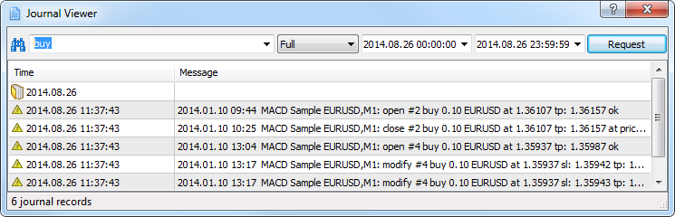
The upper part of the window contains a search line (search is performed by exact words, the search is case sensitive) and the filter of entries (Full, Errors only). Here time limits for search can also be set. After all necessary search data are specified, the "Request" button should be pressed.
The context menu of the viewer contains the same commands as that of the "Journal" tab.
Tester
"Tester" is a multifunctional window that allows to test strategies and optimize parameters of expert advisors. When being tested, the expert is passed on the modeled data one time what allows to estimate its profitability and effectiveness. For optimization purposes, the mechanical trading system is passed many times in order to find out such parameters of the expert at which its profitability is the highest.
The window can be called by the "View Strategy Tester" menu command, by pressing of accelerating keys of Ctrl+R, or the button of the "Standard" toolbar.
There are several tabs in this window:
Settings settings of testing and optimization. The parameters of expert advisors, period to be tested, the method of bars modeling, and many other things, can be set up in this tab;
Results the results of trade operations performed by the expert, as well as the direction of balance changes;
Graph displaying of testing results in a graph;
Report the detailed testing report. Many indications of testing and effectiveness of experts can be found here: the amount of bars modeled, the total profit, the most profitable and unprofitable positions, the amount of profit and loss trades, etc.;
Journal a log where all actions and internal messages of the expert are recorded;
Optimization Results information about every pass, including inputs, profitability, drawdowns, and other data;
Optimization Graph the results of expert optimization as a graph. Besides each pass profitability, the amount of profit and loss trades is displayed in the graph.
As in the "Terminal" window, some tabs of the "Tester" window are hidden if they are empty. So, initially, only the tabs of"Settings" and "Journal" can be seen in this window. The tabs of "Results", "Graph", and "Report", will only appear after an expert has been tested. After it has also been optimized, the tabs of "Optimization Results" and "Optimization Graph" will appear. More detailed information about testing experts can be found in the section of the same name.
Setup
Testing parameters and experts optimization parameters can be set up in this tab. At testing, the expert is passed on the modeled data one time what allows to determine the profitability and efficiency thereof. At optimization, the mechanical trading system is passed several times with the purpose of determining of such expert parameters at which its profitability is the highest.
The following commands and options are available in this tab:
Expert Advisor select the expert to be tested in the list. The expert must be compiled and placed in the /EXPERTS directory. All newly created experts will be automatically placed into this directory;
Symbol select one of the securities available;
Period select the symbol timeframe;
Model select the method of bars modeling:
Every tick (based on all available least timeframes with fractal interpolation of every tick);
Control points (based on the nearest less timeframe with fractal interpolation of 12 control points);
Open prices only (fastest method to analyze the bar just completed);
Spread the price history stored in the client terminal includes only Bid prices. On default, to model Ask prices, the strategy tester uses the current spread of a symbol at the beginning of testing. However a user can set a custom spread for testing in the "Spread" field.
Use date use range of dates when testing. If this option is enabled, the data from the given range will be used during testing. Otherwise, all available data for the given symbol and period are used;
Visual mode enable the mode of the visual displaying the test process on a graph. You can adjust the speed of the testing visualization using the lever located to the right. You can also specify a date in the "Skip to" field to skip visualizing the test till that date.
Optimization enable the expert parameters optimization mode. More details about expert parameters optimization can be found in the section of the same name;
Expert properties open the "Expert Properties" window that allows to manage the expert parameters when testing and optimizing;
Symbol properties view the symbol parameters. These data are given in the *.FXT file heading and used to emulate the server operation;
Open chart create a new chart window for the symbol selected for testing. When being tested, the expert works with a virtual chart. Signs of opening and closing of positions, objects and indicators used by the expert, are imposed in this chart. This chart can be opened only after the expert has been tested. For opening of a virtual chart, the TESTER.TPL template is used, and, if it is not available, the default settings are used. You can also give a template the same name as that of an Expert Advisor. In this case, that exact template will be used when opening the chart of the Expert Advisor;
Modify expert open the "MetaEditor" and start to edit the selected expert. This is useful if there is a need to introduce small changes and recompile the expert fast;
Start start testing or optimization. After this button has been pressed, one can estimate the speed of testing or optimization in progress bar in the lower part of the window. After the testing has been started, the "Start" button will be replaced with the "Stop" button. Having pressed this button during testing/optimization, one can stop the process.
More details about testing experts can be found in the section of the same name.
Properties
Parameters of the virtual account and the expert advisor under test can be set up in this window.
These data will later be used for testing or optimization of the expert parameters. There are three tabs in the window:
Testing Parameters common for both testing and optimizations are placed in this tab. These are volume and currency of initial deposit that are given in the fields of the corresponding names. Types of positions to be opened at testing can be selected, as well: "Only Long" open only long positions; "Only Short" only short ones; "Long and Short" open both types of positions. Whatever expert mechanisms are used, they will open positions only as set here. One can include an optimization genetic algorithm and select a parameter to be optimized (maximization by the balance value, the profit factor, expected payoff, or minimization by the maximal drawdown value or drawdown percent).
Inputs
the list of all inputs is given here as a table. Inputs are variables that
influence the expert work and can be changed directly from the client terminal.
The amount thereof can vary from expert to expert. The current data to be used
at testing
an expert will
be written in the "Value" field. Data to be written in the fields of
"Start", "Step" and "Stop" do not influence the
expert testing, and are only used for its optimization. Initial
value of the variable, step of change, and final value are written in this
field. At optimization, expert with parameters within the range between initial
and final values will be passed consecutively. Checking from the right of the
variable names allows to include the parameter into optimization process. If a
variable has not been checked, it will not participate in optimization. Its
value will not be changed in the optimization process, and the parameter
written in the "Value" field will be used.
There is an opportunity to download a set of inputs already
saved before (including the values of "Start", "Step", and
"Stop"). This can be done by pressing of the "Load" button
and after the preliminarily saved set of inputs has been selected. The actual
set of external variables can be saved by pressing of the button of the same
name.
|
Attention: It is recommended to include only necessary variables into optimization process. If too many variables are included into it, the amount of passes and total optimization time will rapidly increase. |
Optimization this tab allows to manage optimization limits. If the real values meet those required in this tab, the current pass will be stopped and the next pass will start. Parameters limiting testing at optimization of the expert are:
Balance minimum minimum balance value in the deposit currency;
Profit maximum maximal profit in the deposit currency;
Minimal margin level, % minimal level of margin in per cents;
Maximal drawdown, % maximal drawdown in per cents;
Consecutive loss maximal total loss in one series of trades. A loss series is a certain amount of consecutive loss trades;
Consecutive loss trades maximal amount of loss trades in one series;
Consecutive win maximal total win in one series of trades. A win series is a certain amount of consecutive win trades;
Consecutive win trades maximal amount of win trades in one series.
More details are given in the sections of "testing Expert Advisors" and "Optimization".
Results
The testing results are represented as a table in this tab.

Information about all trade operations performed within the testing process can be found here:
# the sequence number of the trade operation;
Time time of the trade operation;
Type the type of operation performed (sell, buy, s/l, t/p, modify, close at stop, etc.);
Order the ticket number of a trading position or a pending order (not to be mixed up with the trade operation number described above);
Size the amount of lots that participated in the operation;
Price the price of the security at the operation performing;
S/L the Stop Loss order value. No entries in this field mean that no order was placed;
T/P the Take Profit order value. No entries in this field mean that no order was placed;
Profit profit/loss. The value of profit/loss will be entered only after positions have been closed;
Balance the value of balance. This value will be entered only after positions have been closed.
Having clicked with the left mouse button on any column heading, one can sort all entries in the table in descending or ascending order. Using the "Copy" context menu command or accelerating keys of Ctrl+C, one can copy the selected lines of results to the clipboard for further use in other applications. If no line has been selected, the entire table will be copied to the clipboard. To copy the entire table to the clipboard, one can execute the "Copy all" command. The report about testing results can be stored in a HTML file on the hard disk. To do so, one has to execute the "Save as Report" context menu command. The "Set Date "From"" and "Set Date "To"" commands allow to specify the time range for testing. At that, the dates of the selected operations will be written in the fields of "Use date from:" and "Use date to:" in testing settings. This useful if there is a need to test an expert thoroughly or to optimize its parameters within this given range. You can enable or disable the grid and auto arrange the columns using the relevant context menu commands.
More details are given in the sections of "Tester" and "Optimization".
Graph
In the "Graph" tab, the graphs of the account balance (blue line "Balance") and general account status considering open positions (green line "Lots") are drawn automatically.
If only balance line is shown in the graph, it means that "Balance" and "Lots" lines coincide during the whole testing process. The graph allows to watch the trade results more pictorially when testing. If the lot sizes have been changed during testing, the bar chart showing these changes will appear in the lower part of the graph.
Double click with the left mouse button on any point of the graph will switch to the "Results" tab and select the corresponding line. Using the "Copy" context menu command or accelerating keys of Ctrl+C, one can copy the graph to the clipboard for further use in other applications. The graph can also be stored as a GIF file on the hard disk. To do so, one has to execute the "Save as Picture" context menu command or press the accelerating keys of Ctrl+S. The "Set Date "From"" and "Set Date "To"" commands allow to set the time range of testing. At that, the dates of operations selected are written in the fields of "Use Date From:" and "Use Date To:" in the Settings tab. This is useful if there is a need to test an expert or to optimize its parameters for this given time range.
More details are given in the sections of "testing Expert Advisors" and "Optimization".
Report
The summarized results of experts testing and some key indices are represented in the "Report" tab.
Such reports allow to compare different experts to each other in a quick mode. The following data are published in reports:
Bars in test the amount of the modeled history data in bars;
Ticks modeled the amount of the modeled ticks;
Modeling quality the quality of ticks modeled during testing in per cents. Modeling is schematically displayed as a band in the next line of the report. This band can be of one of three colors:
Grey this part of the data available was not tested at all. Grey color can appear, if the range of dates was given in tester settings;
Red modeling was not performed within this subrange since no data of a smaller period were available. At that, only data from the period selected in the tester settings were used;
Green modeling was performed within this subrange. At that, the brighter the color is, the better in quality the modeling was. For example, when testing at the period of H1, the dark-green band can mean that M30-period data were used for testing, and the brightest means that those of M1 period were used;
|
Attention: If the fastest method ("by open prices") has been used for modeling in testing settings, the entire band will be red. At that, "n/a" modeling has not been performed at all will be written in the "Modelling quality" field; |
Initial deposit the volume of the initial deposit;
Total net profit financial result of all trades. This index represents a difference between the "Gross profit" and "Gross loss";
Gross profit the sum of all profitable trades in terms of money;
Gross loss the sum of all unprofitable trades in terms of money;
Profit factor the ratio between gross profit and gross loss in per cents. The one value means that profit equals to loss;
Expected payoff the expected payoff. This statistically calculated index represents the average profit/loss factor of a trade. It can also be considered for representing the expected profit/loss factor of the next trade;
Absolute drawdown the largest loss is lower than the initial deposit value;
Maximal drawdown (%) maximal loss of the local maximum in the deposit currency and in percents of the deposit;
Relative Drawdown the maximal loss in percents of the maximum equity value and its corresponding money value;
Total trades the total amount of trade positions;
Short positions (won %) the amount of short positions and percentage of won thereof;
Long positions (won %) the amount of long positions and percentage of won thereof;
Profit trades (% of total) the amount of profitable trade positions and their percentage in the total trades;
Loss trades (% of total) the amount of loss trade positions and their percentage in the total trades;
Largest profit trade the largest profit among all profitable positions;
Largest loss trade the largest loss among all unprofitable positions;
Average profit trade average profit value for a trade (the sum of profits divided by the amount of profitable trades);
Average loss trade average loss value for a trade (the sum of losses divided by the amount of unprofitable trades);
Maximum consecutive wins (profit in money) the longest series of profitable trade positions and the sum of their wins;
Maximum consecutive losses (loss in money) the longest series of unprofitable trade positions and the sum of their losses;
Maximal consecutive profit (count of wins) the maximum profit of a series of profitable trades and the amount of profitable trades corresponding with it;
Maximal consecutive loss (count of losses) the maximum loss of a series of unprofitable trades and the amount of unprofitable trades corresponding with it;
Average consecutive wins the average amount of profitable positions in consecutive profitable series;
Average consecutive losses the average amount of unprofitable positions in consecutive unprofitable series.
This report can be copied to the clipboard or saved in the hard disk as an HTML file. To do so, one has to execute the "Copy" context menu command or that of "Save as Report", respectively. The report can also be copied to the clipboard by pressing of accelerating keys of Ctrl+C.
More details are given in the sections of "testing Expert Advisors" and "Optimization".
Journal
Messages about the expert testing process, including all trade operations, are published in the "Journal" tab automatically.
This journal is rather similar to that of the "Terminal Expert Advisors" window, except for that messages informing about expert testing, but not its working at the market , are published in this Tester Journal. After the expert has been tested, these data will be output in the separate /TESTER/LOGS directory. The tester journal files are stored in the /EXPERTS/LOGS directory, filenames being correspondent with the date of logs YYYYMMDD.LOG.
Journal entries are represented as a table with the following fields:
Time date and time of an event;
Message description of the event.
Events are divided into several types, which are marked by special icons:
information;
warning;
error message.
The following commands can be execute from the context menu of this tab:
Open open the folder with the log files of the journal. Besides that, when this command is executed, all current journal records are saved to log files. These files are stored in the /TESTER/LOGS directory of the client terminal. File names correspond to the date when the journal was formed YYYYMMDD.LOG. thus you can view previous records of the terminal operation. Only latest entries are displayed on the "Journal" tab;
Copy Copy the line with the information to clipboard for further using it in other applications;
Clear All Journals Logs delete all the log files of the strategy tester (/TESTER/LOGS). The Journal tab is cleared and all the log files are deleted from the specified folders when this commands is executed.
Viewer Open the window of the special program for viewing log files;
Auto Scroll if this option is enabled, the list of entries will be automatically scrolled to the latest entry as a new message appears in the journal.
Auto Arrange if this option is enabled, size of the table columns will be selected automatically when the window size is changed;
Grid show/hide grid to separate fields.
Optimization Results
Unlike testing, optimization is supposed to perform many passes for mechanical trading system (MTS) with different inputs.
This is done to determine the expert parameters with which its profitability is the highest. To optimize, one has to flag the "Optimization" field in the tab of tester setup and press the "Start" button. After that, two new tabs will appear in the window: "Optimization Results" and "Optimization Graph".
The "Optimization Results" tab, unlike Tester Report, publishes not the entire list of trades, but final reports of each pass. All data are represented in the table with the following fields:
Pass the pass number;
Profit net profit (gross profit minus gross loss);
Total trades the total amount of open trade positions;
Profit factor the ratio between total profit and total loss in per cents. One means that total profit is equal to total loss;
Expected Payoff mathematical expectation of win. This statistically calculable figure shows average profitability/unprofitableness of one trade. It is considered to show the estimate profitability/unprofitableness of the next trade;
Drawdown $ maximum drawdown relating to the initial deposit in the deposit currency;
Drawdown % maximum drawdown relating to the initial deposit in per cents;
Inputs dynamic values of inputs at each pass.
After having clicked with the left mouse button on the heading of any column, one can sort all entries of the table in decreasing or increasing order. Data of the selected pass will be entered as basic inputs of the expert (expert properties window, the "Inputs" tab) after the "Set Input Parameters" context menu command has been executed. At that, the program switches to the"Settings" tab, and optimization mode will be stopped. Having pressed the "Start" button, one can test the expert advisor having the pre-defined input parameters and variables. The same action can be done by a double click with the left mouse button on the pass line in the tab of optimization results. Using the "Copy" context menu command or accelerating keys of Ctrl+C, one can copy the selected results to the clipboard for further use in other applications. If no line has been selected, the entire table will be copied to the clipboard. The "Copy All" command can be used to copy the entire table to the clipboard, as well. The report of the optimization results can also be stored in HTML format on the hard disk. To do so, one has to execute the "Save as Report" context menu command. Other context menu commands allow to set up displaying of results:
Skip Useless Results show/hide the results of loss passes;
Show Input Parameters show/hide the "Inputs" column;
Auto Arrange
automatic setting of column sizes when the window size changes.
The same action can be done by pressing of A;
Grid
show/hide grid to separate columns.
The same action can be done by pressing of G.
More details are given in the sections of "testing Expert Advisors" and "Optimization".
Optimization Graph
Unlike testing, optimization is supposed to use many repeated passes of mechanical trading system (MTS) with different input parameters. This is performed to determine such expert parameters at which its profitability is the highest. To perform optimization, one has to flag the field of the same name in the Settings tab and press the "Start" button. After that, two new tabs, "Optimization Results" and "Optimization Graph", will appear in the window.

The profit graph of all passes will be drawn automatically in the "Optimization Graph" tab. The graph allows to estimate and visualize the profitability of us of different combinations of inputs. A chart representing the amount of profit (green) and loss (red) trades of each pass is given in the lower part of the graph, as well.
Double click with the left mouse button on any point of the graph switches to the "Results" tab and selects the corresponding pass. Using the "Copy" context menu command or accelerating keys of Ctrl+C, one can copy the graph to the clipboard for further use in other applications. The graph can also be stored as a GIF file on the hard disk. To do so, one has to execute the "Save as Picture" context menu command or press accelerating keys of Ctrl+S. You can enable or disable displaying the grid on the chart using the corresponding context menu command.
More details can be found in the sections of "testing Expert Advisors" and "Optimization".
Search
The trading platform provides the smart and powerful system for searching on the websites of MQL4.community andMQL5.community the communities of traders and MQL4/MQL5 developers. The sites contain plenty of useful information:blogs, documentation, forum, articles on programming and using the platform. The community provides access to the hugesource code database and the application store for the platform. You can also copy deals of professional traders via Signals service.
As you type in your search query, the system instantly offers possible options. Select the desired phrase from the list and press Enter or button. In order to search by one of the previous queries, place the cursor to the box and click Down Arrow key to open the query history.
Search results are displayed in a separate Search tab of Tools window. The system selects the most relevant results conveniently arranging them by categories:
To open the found element, left-click on the header. Use the top panel to view the search results by Market Products, Code Base, Signals, MQL4.community Forum and Documentation.
Fast Navigation
There are various methods used in the Client Terminal to accelerate working. The following can be used for this purpose:
fast navigation box a small box that appears in the lower left corner of the chart and allows to manage it;
accelerating (hot) keys key combinations that are intended for acceleration of working with various functions of the program.
Fast Navigation Box
The fast navigation box is used for quick switching among charts and/or among chart periods, as well as for quick scrolling of the chart to the selected date. The fast navigation box of the active chart can be opened with the Enter key, then the fast navigation box will appear in the lower left part of the chart window. One can also move the cursor to the lower left part of the chart window and double-click the left mouse button after the icon has appeared.
Format of commands in the fast navigation box:
|
Format |
Example |
|
|
[time (hours:minutes)] |
08:30; 8:30; |
|
|
[date] |
2004.10.16; 16.10.2004; 16.10.04; |
|
|
[date and time] |
2004.10.16 8:30; 16.10.2004 8:30; 16.10.04 8:30; |
|
|
[symbol] |
GBPUSD; EURUSD; |
|
|
[chart period] |
M1; M5; M15; M30; H1; H4; D1; W1; MN; |
|
|
[symbol], [chart period] |
GBPUSD, M30; EURUSD, D1; |
|
|
Attention: It must be noted that only one of the above-listed commands can be executed in the fast navigation box. |
||
To execute a command, one has to press the Enter key, and the Esc key - to close the box. To move the chart to a specific date and time, one has to input this date and time. For example, the command that allows to move to the bar received at 8:30 on October, 16 2004, will appear as "2004.10.16 08:30". Along with YYYY.MM.DD and DD.MM.YYYY formats, one can also use the DD.MM.YY format, but not the YY.MM.DD. The first zero in the time inputting can be skipped. For example, one can write "8:30" instead of "08:30". When changing a symbol, one should specify its full name. When specifying the chart period, one may skip the "M". At the "GBPUSD 30" command, as well as at the "GBPUSD M30", the symbol and period will respectively change for a 30-minutes chart of Great Britain Pound vs US Dollar.
Hot Keys
Hot keys (accelerating keys) are keys and their combinations that allow to execute various commands fast and without using of menus or toolbars.
"Arrow Left" chart scrolling to the left;
"Arrow Right" chart scrolling to the right;
"Arrow Up" fast chart scrolling to the left or, if the scale is defined, chart scrolling up;
"Arrow Down" fast chart scrolling to the right or, if the scale is defined, chart scrolling down;
Numpad 5 restoring of automatic chart vertical scale after its being changed. If the scale was defined, this hot key will return the chart into the visible range;
Page Up fast chart scrolling to the left;
Page Down fast chart scrolling to the right;
Home move the chart to the start point;
End move the chart to the end point;
"-" chart zoom out;
"+" chart zoom in;
Delete delete all selected graphical objects;
Backspace delete the latest objects imposed into the chart window;
Enter open/close fast navigation window;
Esc close the dialog window;
F1 open this "Userguide";
F2 open the "History Center" window;
F3 open the "Global Variables" window;
F4 download MetaEditor;
F6 call the "Tester" window for testing the expert attached to the chart window;
F7 call the properties window of the expert attached to their chart window in order to change settings;
F8 call the chart setup window;
F9 call the "New Order" window;
F10 open the "Popup prices" window;
F11 enable/disable the full screen mode;
F12 move the chart by one bar to the left;
Shift+F12 move the chart by one bar to the right;
Shift+F5 switch to the previous profile;
Alt+1 display the chart as a sequence of bars (transform into bar chart);
Alt+2 display the chart as a sequence of candlesticks (transform into candlesticks);
Alt+3 display the chart as a broken line (transform into line chart);
Alt+A copy all test/optimization results into the clipboard;
Alt+W call the chart managing window;
Alt+F4 close the client terminal;
Alt+Backspace or Ctrl+Z undo object deletion;
Ctrl+A arrange all indicator windows heights by default;
Ctrl+B call the "Objects List" window;
Ctrl+C or Ctrl+Insert copy to the clipboard;
Ctrl+E enable/disable expert advisor;
Ctrl+F enable "Crosshair";
Ctrl+G show/hide grid;
Ctrl+H show/hide OHLC line;
Ctrl+I call the "Indicators List" window;
Ctrl+L show/hide volumes;
Ctrl+P print the chart;
Ctrl+S save the chart in a file having extensions: "CSV", "PRN", "HTM";
Ctrl+W or Ctrl+F4 close the chart window;
Ctrl+Y show/hide period separators;
Ctrl+Z or Alt+Backspace undo the object deletion;
Ctrl+D open/close the "Data Window";
Ctrl+M open/close the "Market Watch" window;
Ctrl+N open/close the "Navigator" window;
Ctrl+O open the "Setup" window;
Ctrl+R open/close the "Tester" window;
Ctrl+T open/close the "Terminal" window;
Ctrl+F5 switch to the next profile;
Ctrl+F6 activate the next chart window;
Ctrl+F9 open the "Terminal Trade" window and switch the focus into it. After this, the trading activities can be managed with keyboard.
There is a feature allowing to defined hot keys for calling any element of the "Navigator" window, except for those of the "Accounts" group. To define a combination of keys to an element, one has to execute the "Define a hot key" command of its context menu. The defined hot keys are of higher priority being compared to those pre-defined. For example, Ctrl+O combination meant initially the calling of the Terminal setup window. If one defines calling of the On Balance Volume indicator for the same combination, it will not be possible to call the terminal setup window by pressing of Ctrl+O.
Working with Charts
A chart shows the price changes for a security with the time. Charts are necessary for performing technical analysis, working of expert advisors and testing thereof. Up to ninety-nine charts can be opened in the terminal at the same time.
The client terminal allows to:
open up to 99 chart simultaneously;
set up their representation form and information shown;
print charts;
impose and delete various objects and indicators;
recover deleted charts;
use chart templates.
Chart Opening
A chart shows the price changes for a security with the time. Charts are necessary for performing technical analysis, working of expert advisors and testing thereof. Up to ninety-nine charts can be opened in the terminal at the same time.

A new chart can be opened by executing of the "File New
Chart" menu, "Window
New Window" menu command,
or by pressing of the  button
of the "Standard"
toolbar. The list of securities available will appear at performing any of the
above actions. Having selected the necessary symbol from this list, one can
open its chart. New charts can also be opened from the"Market Watch"
window, holding Ctrl and dragging the element of the list (the symbol) from the
window into any point of the workspace of the terminal, or having executed the
"Chart Window" command of the context menu. All new charts are opened
with the DEFAULT.TPL template created during the
terminal installation. This template cannot be deleted, but it can be modified.
button
of the "Standard"
toolbar. The list of securities available will appear at performing any of the
above actions. Having selected the necessary symbol from this list, one can
open its chart. New charts can also be opened from the"Market Watch"
window, holding Ctrl and dragging the element of the list (the symbol) from the
window into any point of the workspace of the terminal, or having executed the
"Chart Window" command of the context menu. All new charts are opened
with the DEFAULT.TPL template created during the
terminal installation. This template cannot be deleted, but it can be modified.
History data used for drawing of charts are stored on the hard disk. At opening of a chart, the data are downloaded from the disk and the last missing data are spooled from the trading server. If there are no history data for the symbol on the hard disk, the latest 512 bars of history will be downloaded. To spool the earlier data, one has to move the chart to the desired area. After the chart has been opened, information about the current quotes starts to income to the terminal. Thus, the further price changes will be shown in the real-time mode. This information will be stored in the history file and used at the reopening of this chart in future.
|
Attention: The "Max. bars in history" and "Max. bars in chart" parameters are defined in the terminal settings. These parameters allow to control over the amount of history data displayed and stored on the hard disk. |
Offline Charts
Client terminal allows to work with offline charts. These charts are opened on basis of data saved on the hard disk in HST format. They are not updated from the server. These charts turn out as very useful for working with non-standard securities or periods.
To open a new chart in offline mode, one has to execute the "File Open Offline" menu command. Then, a symbol must be selected in the window that appears, and the "Open" button must be pressed. The OFFLINE.TPL template is applied to the chart automatically. At that, the "(offline)" inscription will appear added in the heading of the offline chart.
At testing an expert, the data file in FXT format is created and used. It differs from a standard chart, but it can be opened offline.
Setup
Appearance and properties of each chart in the terminal can be set up individually. To do so, one has to execute the "Charts Properties..." menu command, the chart context menu command of the same name, or press F8. These actions result in appearing of the "Properties" window that can be used for setting of the color of various elements of the chart (the "Colors") tab:
Background chart background color;
Foreground color of axes, scales, OHLC line;
Grid chart grid color;
Bar Up bar up, shades and fringing of the Bull Candle body;
Bar Down bar down, shades and fringing of the Bear Candle body;
Bull candle color of the Bull Candle body;
Bear candle color of the Bear Candle body;
Line graph line chart and doji;
Volumes volumes and levels of open positions;
Ask line color of the Ask line;
Stop levels levels of stop orders (Stop Loss and Take Profit).
The changes made are automatically shown in the left part of the window in the preview chart. Except for manual setting of various color elements of the chart, one can choose pre-defined color diagrams in the field of the same name. There are three color diagrams available in the terminal: "Yellow on Black", "Green on Black", and "Black on White". After a color diagram has been chosen, the chart elements described above will change in the chart in the left part of the window. Custom color diagrams can be stored in templates.
Other chart settings can be defined in this window, as well. To do so, one has to switch to the "Common" tab and select the desired options:
Offline chart turn the chart offline. This option stops receiving and drawing of price data for the given chart. In future, after this option is disabled, price data will be drawn in the chart again. After the chart has been opened offline, (the "File Open offline" menu command), this option will be enabled automatically.
Chart on foreground place the chart in the
"foreground". If this function is enabled, all analytical objects will be placed
"under" the price chart.
This command is the same as that of "Charts
Foreground chart".
Chart shift
shift the chart from the right border of the window to the shift mark. The
chart shift mark (a gray triangle in the upper part of the window) can be moved
with the mouse horizontally within 10 to 50% of the window size.
This option can also be enabled with the button of the "Charts"
toolbar or
by the "Charts
Chart Shift" menu command.
Chart autoscroll allow/forbid to shift
the chart to the left automatically after the new bar has started to form. If
this option is enabled, the latest bar will always be shown in the chart.
This option can also be enabled by the button of the "Charts"
toolbar and
by the "Charts
Auto Scroll" menu command.
Scale fix One to One fix the chart scale as "one to one" (the size of one pip of the vertical axis in pixels is equal to the distance between the bars axes in pixels). At that, the "Scale fix" option will be enabled automatically, and a scroll bar will appear at the right side of the window that allows to move the chart vertically. This mode is necessary for precise constructions.
Scale fix fix the current chart scale. If the scale has not been fixed, the chart will be automatically scaled vertically. This option disables automatic scaling and fixes the current scale. When this option is selected, the fields of additional scaling parameters "Fixed maximum" and "Fixed minimum" are activated.
Bar chart
display the chart as a sequence of bars.
This action can also be performed with the button of the "Charts"
toolbar, by the "Charts
Bar Chart" menu command
or by pressing of accelerating
keys of Alt+1.
Candlesticks
display the chart as a sequence of candlesticks.
This action can also be performed with the  button of the "Charts"
toolbar, by the "Charts
Candlesticks" menu command,
or by pressing of accelerating
keys of Alt+2.
button of the "Charts"
toolbar, by the "Charts
Candlesticks" menu command,
or by pressing of accelerating
keys of Alt+2.
Line chart
display the chart as a broken line that connects the points of bar close
prices.
This action can also be performed by the button of the "Charts"
toolbar, by the "Charts
Line Chart" menu command,
or by pressing of accelerating
keys of Alt+3.
Show OHLC show/hide OHLC line. If this action is done, an additional data line will appear in the upper left part of the window. Except for symbol name and chart period, the latest bar prices are listed in it. Price are recorded in the following format: OPEN, HIGH, LOW and CLOSE (OHLC) bar open price, the highest bar price, the lowest bar price, and bar close price, respectively. Thus, precise value of the latest bar can always be seen. This option influences the data line of sub-windows of indicators, as well.
Show Ask line show/hide Ask price level of the latest quote. Bars are drawn and shown only on Bid prices in the terminal. However, at opening of long positions and closing of the short ones, the Ask price is always used. It is not shown in the chart in any way, so it cannot be seen. To control one's trading activities more precisely, one can enable the "Show Ask line" parameter. After this command has been executed, an additional horizontal line will appear in the chart that correspond with the Ask line of the latest bar.
Show period separators show/hide period separators. Date and time of each bar are displayed on the horizontal axis of the chart. And this horizontal scale interval is the selected timeframe. The "Show period separators" option draws additional vertical lines in the chart that correspond with the larger period (timeframe) borders. So, daily separators will be drawn for charts with periods of M1 to H1, weekly ones for H4, monthly ones for D1, and yearly ones for W1 and MN1.
Show grid
show/hide grid in the chart window.
The same actions can be performed by the chart context menu and "Charts" menu command of the same
name, as well as by pressing of accelerating
keys of Ctrl+G.
Show volumes
show/hide the volume chart in the lower part of the window. This option does
not function when the scale is fixed.
The same actions can be performed by the chart context menu and "Charts" menu command of the same
name, as well as by pressing of accelerating
keys of Ctrl+L.
Show object descriptions show/hide object descriptions in the chart. If this option is enabled and there are descriptions of objects imposed into the chart available, they will be shown directly in the chart.
Chart Management
Charts allow to analyze price changes at the market and are used for graphical analysis, building of various indicators and line studies. Charts are a very valuable instrument for analyzing of financial markets, that is why a great attention is paid to them. Chart management means:
Chart Type
A symbol chart can be of three types:
Bar Chart the sequence of bars.
To make a chart of this type, one has to press the button of the "Charts"
toolbar, accelerating keys of Alt + 1, the corresponding option of the Charts Setup window, or execute the "Charts Bar
Chart" menu command.
Candlesticks the sequence of candlesticks.
To make a chart of this type, one has to press the  button of the "Charts"
toolbar, accelerating keys of Alt + 2, the corresponding option of the Charts Setup window, or execute the "Charts Candlesticks"
menu command.
button of the "Charts"
toolbar, accelerating keys of Alt + 2, the corresponding option of the Charts Setup window, or execute the "Charts Candlesticks"
menu command.
Line Chart a broken line connecting the bar close prices.
To make a chart of this type, one has to press the button of the "Charts"
toolbar, accelerating keys of Alt + 3, the corresponding option of the Charts Setup window, or execute the "Charts Line
Chart" menu command.
Saving
The client terminal allows to save history data of the active
chart as a text file in formats of "CSV", "PRN", and
"HTM".
To save them in one of these ways, one has to execute the "File Save
As" menu command
or press accelerating keys of Ctrl + S. Besides, the chart can be saved as a
picture in BMP or GIF format. To do so, one has to execute the "FileSave As
Picture..." menu command.
The same actions can be performed by the chart context menu command of the same
name.
Print
To print the active chart in color, one has to flag "Color
print" in the chart settings, then execute the "File
Print..." menucommand, the chart context menu command of the same name,
press the button of the "Standard"
toolbar or
accelerating keys of Ctrl+P. If the "Color Print" is disabled, or
there is no color printer available, the chart will bee printed as
black-and-white.
Full Screen
Execution of the "View
Full Screen" menu command
or pressing of F11 will switch the chart to the full screen mode. Only chart
windows, main
menu and
chart switching bar will remain in the display. One can return to the initial
mode using the same command.
Attaching of MQL4 Programs
Before MQL4 starts to execute, it must be attached to the chart.
To do so, one has to select the desired MQL4 program in the"Navigator"
window and
double-click on it or execute the "Attach to a chart" command of the
context menu. The "Drag'n'Drop" technique can be used, as well.
Working with Indicators
Indicator is a mathematical manipulation with price and/or
volumes of a security in order to forecast future price changes. Decisions
about how and when to open or close a position are made on basis of signals
from technical indicators. Indicators can be imposed into a chart by the "Insert
Indicators" menu commands
or those of indicators managing sub-menu that can be opened by pressing of the button of the "Charts"
toolbar. The "Drag'n'Drop" technique allows to impose indicators from
the "Navigator"
window into
any open window, as well. The list of indicators imposed into the chart can be
viewed in the"Data Window" by executing of the "Charts
Indicators List" menu command,
the chart context menu command of the same name, or by pressing accelerating
keys of Ctrl+I.
More details about working with technical indicators can be
found in the section
of the same name.
Working with Objects
To analyze the market, one can impose various graphical objects
into the chart. To do it, one has to use the "Insert" menucommands
or buttons of the "Line
Studies" toolbar. Line
Studies, geometrical shapes, signs, and texts, are grouped in the menu.
More details can be found in the "Graphical
Objects" section.
Period Change
The client terminal allows to use nine different data periods,
from a minute to a month long. This variety of periods is necessary for
analyzing the market with technical indicators and line studies.
The desired period of the chart can be chosen with help of the "Period"
toolbar, the button
of the "Charts"
toolbar, the"Charts Period" menu, or by executing of the chart
context menu command.
Zooming
Charts can be zoomed horizontally, increasing or decreasing
thereby the amount of bars shown in the screen simultaneously.
To do it, one can use the buttons of / of
the "Charts"
toolbar, keys of "+"/"-", the commands of "Zoom
In"/"Zoom Out" of the chart context menu and of the "Charts" menu.
To zoom out a chart vertically, one can hold any point of
vertical axis with the left mouse button and move it down. Double click on
vertical axis or pressing of "5" in the keypad restores the scale.
Besides, the chart can be zoomed precisely by defining of upper
and lower borders in the Charts
Setup window
with the "Scale fix" option. The "Scale fix One to One"
option of the same window allows to set the "one-to-one", i.e., one
pip of vertical axis will correspond with one bar of the horizontal one.
Scrolling, Auto Scrolling, and Shifting of the Chart
Scrolling is moving of price data to the right/left in the chart
that can be performed by cursory keys of the keyboard. Besides, the chart can
be scrolled with F12 (the "Step by Step" mode scrolling the chart
by one bar to the left) or Shift+F12 (scrolling the chart by one bar to the
right), or with the mouse: one moves the cursor to the right/left when holding
the left mouse button pressed on any point of the chart. Using the fast navigation box, one
can have shown the necessary area of the chart having specified the specific
date and time. If the chart has been scrolled to the area where there are no
price data, the missing bars will be downloaded automatically.
If the chart scale has been fixed, it can be scrolled
vertically, as well. To do so, one has to move the mouse up/down while holding
the slider on the vertical scale. To get the chart back into the visibility
range, one has to press "5" in the keypad or double-click in the area
of the chart price scale.
Auto scroll is intended for users to have the latest bars before
their eyes constantly. If this option is enabled, the chart will be
automatically scrolled to its end part. This function can be enabled by
pressing of the button
of the "Charts"
toolbar or
by the "Charts
Auto Scroll" menu command.
The "Chart Shift" option shifts the latest bar from
the right screen border to the chart shift mark. The chart shift mark (a gray
triangle in the upper part of the window) can be moved horizontally with the
mouse within 10 to 50% of the window size. The chart shift can be enabled by
the button
of the "Charts"
toolbar or
by the "Charts
Chart Shift" menu command.
Chart Positioning
Normally, the chart datum point is located in the left part of
the window. The specific time bar is anchored to it that can be moved through
scrolling or with the use of fast navigation box. When a timeframe is changed,
there will be an attempt to calculate the new anchoring bar corresponding with
that of the previously used timeframe. I.e., the timeframe that is the nearest
to this given point will be shown at the left side of the window. The datum point
(a gray triangle at the lower border of the chart) can be moved within the
chart window using the mouse. It appears only if the "Auto Scroll" is
disabled. This mechanism is convenient when analyzing a certain period of time
for different timeframes.
|
Attention: Positioning does not work if the "Auto Scroll" option is enabled. |
Working with Templates
Templates represent the chart window parameters stored in the
memory. The following is saved in a template: chart type, period, scale, all
settings of line studies, technical and custom indicators, and experts.
Templates allow to unify the appearance of many charts easily and fast.
The menu that manages templates can be called by the "Charts
Template" menu command,
the chart context menu command of the same name and the button of the "Charts"
toolbar. The "Save Template..." menu command allows to store a new
template, and that of "Remove Template" to delete an existing one.
More details can be found in the "Templates and
Profiles" section.
Working with Profiles
Profiles represent a convenient way of working with chart
groups. At opening of a profile, each chart with all its settings will be found
in the same place where it was when the profile was being stored.
The menu that manages profiles can be opened by the "File
Profiles" menu command,
by pressing of the  button
of the"Standard" toolbar, or by clicking with the mouse in the status
bar containing the name of the current profile.
button
of the"Standard" toolbar, or by clicking with the mouse in the status
bar containing the name of the current profile.
More details can be found in the "Templates and
Profiles" section.
Data Updating
Data must be updated if any errors or "holes" occur in
the price chart. In order to update the price data, one has to execute the "Charts
Refresh" menu command
or the chart context menu command of the same name. After all these actions
have been performed, the missing bars will be downloaded from the server
automatically and drawn in the chart.
Use of Mouse
The chart is directly managed with the mouse as follows:
clicking with the left mouse button on any point in the chart window and holding of it with the subsequent horizontal moving of the cursor result in the chart scrolling;
clicking with the left mouse button on the chart vertical scale and holding of it with the subsequent vertical moving of the cursor result in vertical chart scaling, and the double click with the mouse on the chart vertical scale will rescale the chart;
clicking with the left mouse button on the chart horizontal scale (but not the fast navigation box) and holding of it with the subsequent horizontal moving of the cursor will result in the chart rescaling;
clicking with the right mouse button on any point in the chart window results in calling of the chart context menu (described below);
double-clicking with the left mouse button on elements of technical indicators (lines, signs, histogram bars, etc.) calls the setup window of the corresponding indicator;
clicking with the right mouse button on elements of a technical indicator calls the context menu of the indicator;
single or double, depending on the terminal settings, clicking with the left mouse button on an object (line studies, texts or arrows) will select the object;
clicking with the left mouse button on the selected object and holding of it with the subsequent moving allows to move the selected object;
Ctrl + clicking with the left mouse button on a selected trend line with the subsequent moving allows to draw a parallel trend line (create a channel);
clicking with the middle mouse button in the chart window switches cursor to the "crosshair" mode;
clicking with the right mouse button on a selected object will open its context menu;
placing of cursor on the bar close price or on an element of an object or indicator will call the prompt.
Chart Management with Context Menu Commands
Some commands of the context menu are intended for chart management:
Expert Advisors sub-menu that manages expert advisors. Expert
advisor is an MQL4 program that is executed with every new tick and allows to
automate analytical and trading activities. Commands that manage the expert imposed
into the chart are grouped in this menu, too. Using this sub-menu, one can
change the expert properties, remove it, or start testing it.
More details are given in the "Expert
Advisors" section.
Remove Script remove an executable script. Script is a program written in MetaQuotes Language 4 (MQL4) and intended for a single performing of some actions.
Indicators List window that manages technical indicators attached to the chart window. Technical indicator is a mathematical manipulation of the symbol price and/or volumes in order to forecast future price changes. On signals received from technical indicators, decisions are made about how and when to open or close a position.
Objects List window that manages graphical objects. Graphical objects are those objects in the terminal that are imposed manually. They are intended for analytical purposes.
Timeframes
sub-menu that manages the chart periods.
Periods of charts can also be managed by the "Charts" menu and toolbar commands of the
corresponding names.
Template
sub-menu that manages templates.
Template is a set of chart window parameters that can be used for other charts.
This sub-menu can also be called by the "Chart" menu command of the same
name.
Refresh
refresh history data. At that, all data missing within the available history
and new ones will be downloaded.
The same action can be performed by the "Charts" menu command of the same
name.
Auto Arrange
set the height of all indicators windows as default.
The same action can be performed by pressing of accelerating
keys of Ctrl+A.
Grid
show/hide grid.
The same action can be performed by the "Charts" menu
command of the same name or by pressing of accelerating keys of Ctrl+G.
Volumes
show/hide volumes chart.
The same actions can be performed by the "Charts" menu
command of the same name or by pressing of accelerating keys of Ctrl+L.
Zoom In
zoom in the chart horizontally by one step.
The chart can also be zoomed in by the "Charts" menu command of the same
name, by pressing of "+" or the button of the"Charts"
toolbar.
Zoom Out
zoom out the chart by one step.
The chart can also be zoomed out by the "Charts" menu command of the same
name, by pressing of "-" or the button of the "Charts"
toolbar.
Delete Indicator Window delete indicator
window from the chart. Some indicators are drawn in special sub-windows and
have their own scaling. This command allows to delete such a sub-window.
More details about working with technical indicators can be
found in the corresponding
section.
Save As Picture save the chart as a
picture (GIF or BMP).
The same action can be performed by the "File Save As
Picture..." menu command.
Print Preview preview the chart
image before printing.
The same action can be performed by the "File Print Preview"
menu command
or by pressing of the button
of the"Standard" toolbar.
Print...
print the chart. If the "Color print" option is checked in the program settings, chart
can be printed in color.
The same action can be performed by the "File
Print..." menu
command, accelerating keys of Ctrl+P, or the button of the"Standard"
toolbar.
Properties... call the charts setup window.
The same action can be performed by pressing of F8.
|
Attention: The "Expert Advisors" sub-menu, as well as the commands of "Remove Script", "Indicators List", and "Objects List" are activated only if the corresponding objects have been imposed into the chart. |
Lists of Objects Applied
The "Charts" menu and the context menu of the chart displaying window allow calling lists of applied graphical object, indicators and Expert Advisors. Thus object properties can be modified or objects can be deleted from the chart.
List of Indicators
This window can be opened using the " Indicators List" command of the "Charts" menu or the context menu of the chart window, or using the "Ctrl+I" hotkeys. This window allows managing indicators applied to the chart.
The window contains the list of indicators that are currently applied to the chart. Indicators are divided into two groups: those plotted in the main chart window and those plotted in a separate window. When one of indicators is selected, the "Properties" and "Delete" buttons become active. The "Properties" button opens the window of indicator parameters. The "Delete" button deletes an indicator from the chart.
List of Objects
This window can be opened using the " Objects List" command in the "Objects" sub-menu of the "Charts" menu or the context menu, or by pressing the "Ctrl+B" hotkeys. The window allows managing various graphical objects imposed to the chart.

This window shows the list of all objects currently imposed to the chart. These objects are represented in a table with the following fields:
Object type of object. If a check is placed in the "Object" field, this object will be selected in the chart;
Name object name. This name is formed out of the period of a chart the object is imposed to, object type and the unique identifies that is automatically assigned to each object. This name can be changed in the object properties;
Description object description. It can also be changed in the object properties;
Window number of the window, in which the object is applied. 0 denotes the main chart window, further figures denote order numbers of indicator sub-windows from upside down.
The "Objects" window contains the following commands:
Show move the chart to the selected object;
Properties edit properties of a selected object;
Delete delete a selected object;
List all any object can be set as hidden (OBJPROP_HIDDEN property) from an MQL4 application. Such objects are displayed on a chart and not displayed in the object list on default. If you click the "List all" button, hidden objects will be displayed in the list.
Use Ctrl+A hotkeys to select all objects.
Publishing Charts Online
The client terminal is integrated into MQL5.community to provide traders with access to powerful and useful services. One of these services is MQL5 Charts. It allows to publish screenshots of the client terminal online. In just a few clicks you can publish a screenshot, get the link to share it with your fellow traders or send it to one of the popular social networks (Facebook, Twitter, VKontakte, Google+, etc.).
You even do not need to have MQL5.community account to publish screenshots. If your account is not specified in the terminal settings, a screenshot will be published anonymously and you will just get the links to it.
However, publication with binding to MQL5.community account provides a number of obvious advantages: you will be able to create your own images gallery and manage it via "Charts" tab of your MQL5.community profile.
Making a Screenshot
To make a screenshot of a chart, execute " Save As Picture" command in its context menu. After that the following window will appear:
The following options will be available:
Active workspace save the entire window of the client terminal.
Active chart (as is) save the current chart in its current size.
Active chart specify the size of the saved chart (in pixels).
Post image online in MQL5 Charts service and get the link if this option is disabled, the chart will be saved on a user's PC. When clicking "ОК", the standard file saving window will appear. If this option is enabled, the chart will be saved online in MQL5 Charts service. Comments to the chart can be added in the empty field below.
Publishing Charts Online in MQL5 Charts
Enable "Post image online in MQL5 Charts service and get the link" option to publish a screenshot of the client terminal online. Text comments can be added to the published image. A new browser window with the published image will be opened immediately after clicking "OK" button:
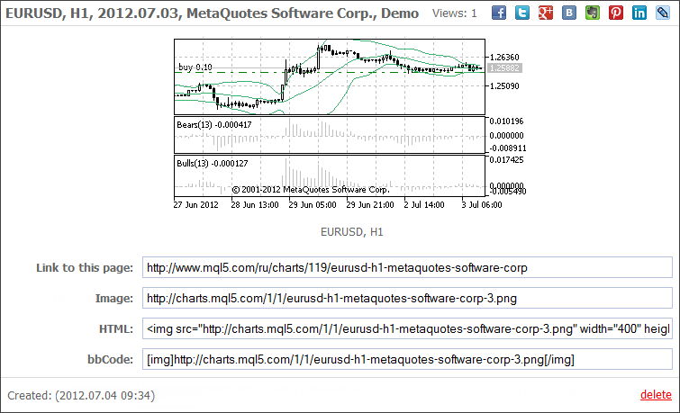
The following data is located at the top of the chart display window:
Automatically generated header current chart symbol and period, publication date and trade server name.
Views number of screenshot views.
Commands for publishing screenshots in social networks VKontakte, Facebook, Twitter, Google+, Evernote, Pinterest, LinkedIn, LiveJournal. Clicking one of these buttons will take you to the appropriate web resource. If you are already authorized in a social network, a screenshot will be published immediately via your profile.
The screenshot itself comes next. The comment field is located below. If a comment has not been added during the publication, automatically generated caption containing the current chart symbol and period is displayed.
Various links to the screenshot are displayed at the bottom:
Link to this page a link to the screenshot view page.
Image a direct link to the image.
HTML a link for insertion in HTML page source code.
bbCode a link for insertion in an editor supporting bbCode markup language (used by many web resources, forums, etc.).
A date of the screenshot publication is displayed at the bottom of the window. When hovering the mouse pointer over this line,delete button appears. Thus, any published screenshot can be deleted.
Screenshots Gallery in MQL5.community Profile
As noted above, if a user has specified his/her MQL5.community account in the terminal settings, a screenshot is bound to that account during the publication. Each user has "Charts" section in MQL5.community profile where all images published by that user are stored:
Clicking on a miniature copy of an image, you will go to the display window. "Charts" tab allows to easily manage your image gallery and share screenshots with other community members and friends in social networks.
|
You even do not need to have MQL5.community account to publish screenshots. In case account data is not specified, a screenshot will be published anonymously. |
Quick Trading
To perform instant trade operations directly on a chart, a special panel is available. To activate it execute the " One Click Trading" command in the chart context menu.
The one click trading panel can be shown or hidden by clicking to the left of the OHLC line.
Using this panel you can instantly send market buy and sell orders with a specified volume.
|
When trading in the instant execution mode, the acceptable deviation of price in the orders is set according to the"Deviation" option. |
Charts Print
There are means to print out charts in the client terminal. A hart can be printed in black-and-white or in color. To print it in color, one has to enable the "Color print" option in the client terminal settings window. After that, the chart will be printed out in color if the printing device allows it. Otherwise, the chart will be printed out in black-and-white format.
The present printing device sometimes needs to be set up. To do so, one has to execute the File Print Setup..." menucommand.
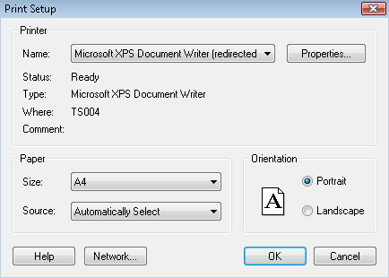
To make sure that all desired elements are included into the printing area, one can execute the "Print Preview" command of the same menu, the same command of the chart context menu, or press the button of the "Standard" toolbar.
The printing itself will be performed by the "File Print..." menu command, by the same command of the chart context menu, by pressing of the button of the "Standard" toolbar, or accelerating keys of Ctrl+P.
Deleted Charts
Some charts become useless at some stages of work, and they need to be deleted. This can be done by the "File Close" menucommand or by pressing of accelerating keys of Ctrl+F4. At that, the templates of deleted windows will be stored if "Save deleted charts to reopen" is enabled in the client terminal settings window. These templates can be used in future. So, if a chart has been deleted occasionally, it can be restored. To do so, one has to execute the "File Open Deleted" menu command and select a symbol from the list. After that, the chart window of the selected symbol will be fully restored with all its settings and objects imposed into it.
Templates and Profiles
A template is a set of chart window parameters that can be applied to other charts. The following can be stored in a template:
chart type and color;
color diagram;
chart scale;
OHLC line shown or hidden;
the attached expert advisor and its parameters;
the imposed custom and technical indicators with their settings;
line studies;
separators of days.
When a template is imposed into a chart, the stored settings, as they are, will be attached to the security and period. For example, one can create a template that includes indicators of MACD, RSI, and Moving Average, and then use it for other charts. In this case, charts windows will have the same view for different symbols and periods.
Templates are stored in the /TEMPLATES directory as TPL files. A template created once can be used unlimited amount of times. A basic template (DEFAULT.TPL) is created during installation of the terminal. It will be applied automatically for creation a new chart window. In future, it can be changed by using of the active chart window properties.
To create a new template, one has to execute the "Charts Template Save Template..." menu command, the chart context menu command of the same name, or by pressing of the button of the "Charts" toolbar. As a result, a new template will be created on basis of the data of active chart window. The same actions must be performed to modify a template, but an existing template should be selected instead of entering of a new filename. To impose a template into the chart window, one has to select the desired file in the templates managing menu or in any available folder in the "Open" window that can be called by the"Charts Template Load Template..." menu command. The "Charts Template Remove Template" menu command and the chart context menu command of the same name allow to delete templates.
|
Attention: The "DEFAULT.TPL" cannot be removed. |
Profiles
Profiles offer a convenient way of working with groups of charts. When a profile opens, each chart with its settings is placed exactly in the same location where it was before, at the profile saving. All changes in all chart windows of the given list are automatically saved in the current profile. The list of all chart windows of the current profile can be found in the "Window" menu. The name of the current profile is displayed in one of the status bar windows and checked in the profile managing menu. When the terminal is installed, the profile by default (DEFAULT) is created. Initially, four basic currency pairs are stored in it: "EUR/USD", "USD/CHF", "GBP/USD", and "USD/JPY".
Profiles are managed from a single menu that can be called by
the "File
Profiles" menu commands,
by pressing of the  button of the "Standard"
toolbar, or by clicking with the mouse button on the current profile name in
the status bar window. To use another profile, one has to select the desired
name from the list in this menu. At that, the new profile will be opened and
become the current. The "Save Profile" command saves the current
profile in its state by the moment of the beginning of the command execution
under a new name. The new profile is a copy of the previous one and becomes the
current. One can delete profiles using the "Remove Profile" command.
button of the "Standard"
toolbar, or by clicking with the mouse button on the current profile name in
the status bar window. To use another profile, one has to select the desired
name from the list in this menu. At that, the new profile will be opened and
become the current. The "Save Profile" command saves the current
profile in its state by the moment of the beginning of the command execution
under a new name. The new profile is a copy of the previous one and becomes the
current. One can delete profiles using the "Remove Profile" command.
The "Next Profile" command and Ctrl + F5 open all available profiles one by one, and the "Previous Profile" and accelerating keys of Shift + F5 allow to search profiles in the reverse direction.
|
Attention: The current profile and that by default (DEFAULT) cannot be deleted. |
A pre-defined profile can be assigned to a trade account in the client terminal. This profile must have a name that coincides with the number of the trade account. If there is a corresponding profile when switching to the given trade account, it will be opened automatically. If there is no pre-defined profile, the current profile will remain active.
Analytics
Technical indicators and line studies are built into the terminal for analytical purposes. These objects are imposed directly into the chart and allow to forecast further price changes. At that, indicators are imposed automatically, and line studies are attached manually. This is why, when working with line studies, one has to draw them properly. Parameters of indicators can be set up manually, as well. Technical indicators can have different settings for different symbols or periods.
The use of technical indicators and line studies allows to open and close reasonable trade positions, place and modify pending orders. Moreover, using of analytical means allows to perform systematic trading activities and reduces in that way the influence of human emotions. Along with technical indicators, custom indicators written in MetaQuotes Language 4 (MQL4) can be used for analytical purposes. No line studies or similar tools can be written in MQL4.
Graphical Objects
Graphical objects are objects in the terminal that are imposed manually into the chart. These objects are used for analytical purposes. They include:
Line Studies lines and various geometrical shapes to be imposed into the price or indicators charts. They include support/resistance lines, trendlines, as well as Fibonacci, Gann, Andrews' tools, etc. More details about line studies can be found in the section of the same name;
Shapes geometrical shapes (rectangle, triangle, and ellipse) that allow to mark various areas in the price chart;
Arrows arrows and signs that allow to mark the most significant points in the chart;
Text text intended for adding of comments to the chart;
Text Label text intended for adding of comments and anchored to the chart window coordinates. Text label does not move when the chart is scrolled.
All objects are grouped in the "Insert" menu and in the "Line Studies" toolbar. Having selected an object in the list and set a point in the chart (or in an indicator window), one can impose the tool.
|
Attention: To impose several objects, one has to set more than one point. The object will not appear in the chart until all necessary points are set. |
After the object has been created, it can be moved or modified. To do so, one has to select the object first. If the "Select object by single mouse click" parameter is set in terminal settings, one has to click once with the left mouse button on any element of the object. If not, the double-click should be used. The object can be considered as selected if square markers or frames appear. The markers are intended for moving of objects and changing their drawing parameters. Thus, for example, to change theFibonacci Fan location, one has to hold its central marker with the left mouse button and move the cursor. And moving of any of the extreme markers will result in changing of the object drawing parameters. Terminal allows to create copies of various object very fast. To do so, one has to select the object and, holding Ctrl pressed, move it with the central marker.
All objects imposed into the chart become unnecessary sooner or later, and they can be removed by commands of the context menu. Besides, the Backspace key allows to remove objects in series. In future, all removed objects can be restored. To do so, it is necessary to execute the "Undo Delete" command of the object context menu, the "Charts Objects Undo Delete" menucommand, or use accelerating keys of Ctrl+Z.
Object Properties
Every object has its specific properties. Properties can differ depending on the object. To manage the properties of an object, one has to select the object and execute its context menu command of "Properties...", the "Charts Objects Objects List" menu command. After that, the window of the object name will appear that contains several tabs. General object settings are placed in the "Common" tab.
The following is available here:
Name the object unique name within one chart that is set for the object automatically. It can be changed if another name is entered in this field. Such names make it easy to mark the object out among many others of the same type;
Description description/text contents of the object that also serve for marking it out among many others of the same type. Besides, these descriptions can be shown in the chart if the "Show object descriptions" option is enabled in the chart settings;
Style object lines style. Color, forms and thickness of lines can be chosen here;
Draw object as background draw object in the background, behind the chart. Being enabled, this option provides filling of the objects like shapes or channels (excluding Fibonacci Channel) with color.
Coordinates of the object control points in the chart can be changed in the "Parameters" tab. Time coordinates of the object control points should be entered in the "Time" fields, and coordinates of anchoring to vertical axis of a chart of indicator should be given in the "Value" fields. An object can have from one to three coordinates.
For some objects, additional options are used in the "Parameters" tab:
Angle in degrees angle of the object slope anticlockwise in degrees;
Scale ratio between units of vertical (pips) and horizontal (bars) axes of the object. Normally, the number of pixels in a unit of the horizontal axis (time) differs from that of the vertical axis (prices) when chart are drawn. One-to-one scale brings them to the same value. For certain objects, changing of this parameter changes the ratio;
Arrow code object code;
Ray show the object trendlines as rays;
Anchor one of the chart corners at which the text label is anchored;
X-distance horizontal distance between the anchor corner of the window and the text label in pixels;
Y-distance vertical distance between the anchor corner of the window and the text label in pixels.
The object visualization mode for different timeframes can be changed in the "Visualization" tab. The object will then be shown only for the selected timeframes. This can be useful when the tool has different settings for different timeframes. The "Fibo Levels" tab is specifically used only for Fibonacci tools. The list of the tool levels is given here in form of a table. The values of the levels can be changed or deleted (the "Delete" button). A new level can be added by pressing of the "Add" button. At that, if "(%$)" is entered in the "Description" field, the price value corresponding with this level will be shown in the chart. The "Defaults" button resets the initial values. The "Style" field that allows to set up the color, appearance, and thickness of levels of the object is located in the lower part of the tab.
Line Studies
Line studies are lines and various geometrical shapes that can be imposed into a price or indicator chart. They include support/resistance lines, trend lines, as well as Fibonacci's, Gann's, and Andrews' tools, etc.
Line studies are collected in the "Insert" menu and in the "Line Studies" toolbar in terminal. To impose an object, one has to press the corresponding toolbar button (the buttons are given in the leftmost column of the table) or execute a menu command.
|
|
Menu Command |
Description |
|
|
|
Horizontal Line |
Horizontal line can be used to mark various levels, particularly, those of support/resistance. One point must be set for this object to be imposed. |
|
|
|
Vertical Line |
Vertical line can be used to mark various borders in the time axis and to compare signals of indicators to price changes. One point must be set for this object to be imposed. |
|
|
|
Trendline |
Trendline helps to explore trends in price changes. Two points must be set through which a trendline will be drawn. |
|
|
|
Trendline by Angle |
Trendline by angle helps to explore trends in price changes. Unlike for a simple trendline, an angle must be set for this line to be drawn. Two points must be set through which a trendline will be drawn. |
|
|
|
Linear Regression Channel |
Linear regression is a statistical analysis tool used for forecasting of future values on basis of available data. If the trend is ascending, one can logically suppose that the next bar will be a bit higher than the preceding one. The linear regression method allows to have a statistical demonstration of such logical conclusions. Two points must be set for this tool to be drawn. |
|
|
|
Equidistant Channel |
Lines of the equidistant channel are always parallel. Two points must be set for this tool to be drawn. |
|
|
|
Standard Deviation Channel |
Standard deviation is the way of volatility measuring based on statistical methods. Standard deviation influences the width of this channel. Two points must be set for this tool to be drawn. |
|
|
|
Gann Line |
Gann Line represents a trendline drawn at an angle of 45 degrees. Two points must be set for this tool to be drawn. |
|
|
|
Gann Fan |
Gann Fan represents a set of trendlines drawn from one point at different angles. Gann considered the trendline of 1x1 (45 degrees) for a very important one. If the price curve is above this line, the market should be considered as bull market, if it is below, it is bear market. Gann supposed the ray of 1x1 to be a powerful supporting line at an ascending trend, and breaking of this line to be an important turn signal. One point must be set for Gann Fan to be drawn. |
|
|
|
Gann Grid |
Lines of the Gann Grid are drawn at an angle of 45 degrees. Two points must be set for this tool to be drawn. |
|
|
|
Fibonacci Retracement |
Leonardo Fibonacci is considered to have discovered a number sequence where each successive number represents a sum of two preceding ones: 1, 1, 2, 3, 5, 8, 13, 21, 34, 55, 89, 144, etc. Each number is approximately 1.618 times more than the preceding one, and each number makes approximately 0.618 of the successive one. The tool can be drawn on two points that determine the trendline. At that, horizontal lines that meet the trendline at Fibonacci levels (retracement) as 0.0%, 23.6%, 38.2%, 50%, 61.8%, 100%, 161.8%, 261.8%, and 423.6% are drawn automatically. |
|
|
|
Fibonacci Channel |
To draw this tool, a channel is used the width of which is taken as one. Then, at the distances defined by the Fibonacci sequence, parallels are drawn starting with the distance of 0.618 of the channel width, then 1.000, 1.618, 2.618, 4.236, etc. Two points and the basic channel width must be set for this tool to be drawn. |
|
|
|
Fibonacci Time Zones |
Fibonacci Time Zones represent a row of vertical lines placed at Fibonacci intervals from each other: 1, 2, 3, 5, 8, 13, 21, 34, etc. It is considered that significant price changes should be expected near these lines. The tool can be drawn on two points that define the unit interval. |
|
|
|
Fibonacci Fan |
Fibonacci Fan is drawn on two points that define the trendline. Then an "invisible" vertical line is drawn through the second point. Then three trendlines are drawn from the first point, these trendlines meeting the invisible vertical line at Fibonacci levels of 38.2%, 50%, and 61.8%. It is considered that significant price changes should be expected near these lines. |
|
|
|
Fibonacci Arcs |
The tool named Fibonacci Arcs is drawn on two points that define the trendline. Then three arcs having the centers in the second point are drawn, these arcs meeting the trendline at Fibonacci levels of 38.2%, 50%, and 61.8%. It is considered that significant price changes should be expected near these arcs. |
|
|
|
Fibonacci Expansion |
Fibonacci Expansion is drawn on three points that circumscribe two waves. Then three lines meeting the third, "presumptive", wave at Fibonacci levels of 61.8%, 100%, and 161.8%, are drawn. It is considered that significant price changes should be expected near these lines. |
|
|
|
Andrews' Pitchfork |
This tool is drawn on three points and represents the parallel trendlines. The first trendline starts at the selected leftmost point (it is an important peak or trough) and is drawn precisely between two rightmost points. This line is the pitchfork "helve". Then, the second and the third trendlines outgoing from the above-mentioned rightmost points (significant peak and trough) are drawn in parallel to the first trendline. These lines are the pitchfork "teeth". Andrews' Pitchfork is interpreted as support/resistance lines are normally interpreted. |
|
|
|
Cycle Lines |
This tool represents a row of vertical lines placed at equal intervals. Normally, a unit interval corresponds with one cycle. At that, completed lines are considered to describe future cycles. The tool is drawn on two points that define the unit interval. |
|
|
The trend lines can be moved in groups within a chart if their node points are located in immediate proximity to each other (within the range of two pixels). |
|||
Technical Indicators
Technical indicator is a mathematical manipulation of a security price and/or volumes aimed at forecasting of future price changes. Decisions about how and when to open or close positions can be made on basis of signals from technical indicators. According to their functionalities, indicators can be divided into two groups: trend indicators and oscillators. Trend indicators help to assess the price direction and detect the turn moments synchronously or with a delay. Oscillators allow to find the turning moments ahead or synchronously.
Indicators are imposed into the chart from the "Navigator" window by means of Drag`n`Drop technique, by execution of the"Insert Indicators" menu command, or by pressing of the button of the "Charts" toolbar. A technical indicator can be drawn in a separate indicator window that has a specific vertical scale (for example, MACD)
or it can be imposed directly into the price chart (for example, Moving Average).
At that, indicators can be drawn not only for price data and derivatives thereof (Median Price, Typical Price, Weighted Close), but also for other indicators. For example, Moving Average for Awesome Oscillator can be drawn, and a signal line can be obtained additionally to AO in this way. To do so, one has to draw AO indicator first, and then, using Drag`n`Drop technique, impose MA into AO and select "Previous Indicator Data" option in its settings in the "Apply to" option. If the "First Indicator Data" option is selected, MA will be drawn on basis of data of the very first imposed indicator that can be other than AO.
Besides analytical parameters, one can set colors for various elements, thickness of lines, and sizes of signs used, at setting up of the indicator. Moreover, the visualization mode of the object for different timeframes can be changed in the "Visualization" tab. At that, indicator will be shown on at timeframes that have been selected. This function can be useful if the tool has different settings for different timeframes. Using the "Show in the Data Window" option in the same tab, one can control over visualization of information about indicators in the "Data Window".
All settings can be changed. To do so, one has to select the desired indicator in the "Indicators List" window and press the "Edit" button or execute the "Properties..." command of the indicator context menu.
Indicator context menu can be called by clicking with the right mouse button on a line, sign, or diagram of the desired indicator. To remove an indicator, one has to execute the "Delete Indicator" indicator context menu command or the "Delete Indicator Window" command in the chart or indicator context menus. The "Delete Indicator Window" command closes the indicator window.
|
Attention: Having placed cursor near a line, a sign, or a column border of an indicator histogram, one can determine precise value of this given indicator in this point. |
Accelerator/Decelerator Oscillator
Acceleration/Deceleration Technical Indicator (AC) measures acceleration and deceleration of the current driving force. This indicator will change direction before any changes in the driving force, which, it its turn, will change its direction before the price. If you realize that Acceleration/Deceleration is a signal of an earlier warning, it gives you evident advantages.
The nought line is basically the spot where the driving force is at balance with the acceleration. If Acceleration/Deceleration is higher than nought, then it is usually easier for the acceleration to continue the upward movement (and vice versa in cases when it is below nought). Unlike in case with Awesome Oscillator, it is not regarded as a signal when the nought line is crossed. The only thing that needs to be done to control the market and make decisions is to watch for changes in color. To save yourself serious reflections, you must remember: you can not buy with the help of Acceleration/Deceleration, when the current column is colored red, and you can not sell, when the current column is colored green.
If you enter the market in the direction of the driving force (the indicator is higher than nought, when buying, or it is lower than nought, when selling), then you need only two green columns to buy (two red columns to sell). If the driving force is directed against the position to be opened (indicator below nought for buying, or higher than nought for selling), a confirmation is needed, hence, an additional column is required. In this case the indicator is to show three red columns over the nought line for a short position and three green columns below the nought line for a long position.
Calculation
AC bar chart is the difference between the value of 5/34 of the driving force bar chart and 5-period simple moving average, taken from that bar chart.
AO = SMA(median price, 5)-SMA(median price, 34)
AC = AO-SMA(AO, 5)
Where:
SMA Simple Moving Average;
AO Awesome Oscillator.
Accumulation/Distribution
Accumulation/Distribution Technical Indicator is determined by the changes in price and volume. The volume acts as a weighting coefficient at the change of price the higher the coefficient (the volume) is, the greater the contribution of the price change (for this period of time) will be in the value of the indicator.
In fact, this indicator is a variant of the more commonly used indicator On Balance Volume. They are both used to confirm price changes by means of measuring the respective volume of sales.
When the Accumulation/Distribution indicator grows, it means accumulation (buying) of a particular security, as the overwhelming share of the sales volume is related to an upward trend of prices. When the indicator drops, it means distribution (selling) of the security, as most of sales take place during the downward price movement.
Divergences between the Accumulation/Distribution indicator and the price of the security indicate the upcoming change of prices. As a rule, in case of such divergences, the price tendency moves in the direction in which the indicator moves. Thus, if the indicator is growing, and the price of the security is dropping, a turnaround of price should be expected.
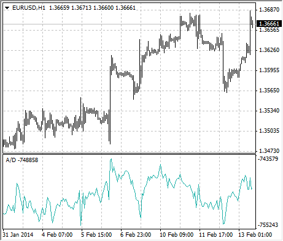
Calculation
A certain share of the daily volume is added to or subtracted from the current accumulated value of the indicator. The nearer the closing price to the maximum price of the day is, the higher the added share will be. The nearer the closing price to the minimum price of the day is, the greater the subtracted share will be. If the closing price is exactly in between the maximum and minimum of the day, the indicator value remains unchanged.
A/D = SUM(((CLOSE MINIMUM) (MAXIMUM CLOSE))*VOLUME/(MAXIMUM MINIMUM), N)
Where:
CLOSE the close price;
LOW the minimum price of the bar;
HIGH the maximum price of the bar;
N the quantity of periods used in the calculation.
SUM (..., N) the sum for N periods;
VOLUME the volume.
Alligator
"Most of the time the market remains stationary. Only for some 1530% of time the market generates trends, and traders who are not located in the exchange itself derive most of their profits from the trends. My Grandfather used to repeat: "Even a blind chicken will find its corns, if it is always fed at the same time". We call the trade on the trend "a blind chicken market". It took us years, but we have produced an indicator, that lets us always keep our powder dry until we reach the blind chicken market"
Bill Williams
In principle, Alligator Technical Indicator is a combination of Balance Lines (Moving Averages) that use fractal geometry and nonlinear dynamics.
The blue line (Alligators Jaw) is the Balance Line for the timeframe that was used to build the chart (13-period Smoothed Moving Average, moved into the future by 8 bars);
The red line (Alligators Teeth) is the Balance Line for the value timeframe of one level lower (8-period Smoothed Moving Average, moved by 5 bars into the future);
The green line (Alligators Lips) is the Balance Line for the value timeframe, one more level lower (5-period Smoothed Moving Average, moved by 3 bars into the future).
Lips, Teeth and Jaw of the Alligator show the interaction of different time periods. As clear trends can be seen only 15 to 30 per cent of the time, it is essential to follow them and refrain from working on markets that fluctuate only within certain price periods.
When the Jaw, the Teeth and the Lips are closed or intertwined, it means the Alligator is going to sleep or is asleep already. As it sleeps, it gets hungrier and hungrier the longer it will sleep, the hungrier it will wake up. The first thing it does after it wakes up is to open its mouth and yawn. Then the smell of food comes to its nostrils: flesh of a bull or flesh of a bear, and the Alligator starts to hunt it. Having eaten enough to feel quite full, the Alligator starts to lose the interest to the food/price (Balance Lines join together) this is the time to fix the profit.
Calculation
MEDIAN PRICE = (HIGH + LOW) / 2
ALLIGATORS JAW = SMMA (MEDEAN PRICE, 13, 8)
ALLIGATORS TEETH = SMMA (MEDEAN PRICE, 8, 5)
ALLIGATORS LIPS = SMMA (MEDEAN PRICE, 5, 3)
where:
MEDIAN PRICE median price;
HIGH the highest price of the bar;
LOW the lowest price of the bar;
SMMA (A, B, C) smoothed moving average. A parameter is for data to be smoothed,
B is the smoothing period, C is shift to future. For example, SMMA (MEDIAN
PRICE, 5, 3) means that the smoothed moving average will be calculated on the
median price, smoothing period being equal to 5 bars and shift
being 3;
ALLIGATORS JAW Alligator's jaws (blue line);
ALLIGATORS TEETH Alligator's teeth (red line);
ALLIGATORS LIPS Alligator's lips (green line).
Average Directional Movement Index
Average Directional Movement Index Technical Indicator (ADX) helps to determine if there is a price trend. It was developed and described in detail by Welles Wilder in his book "New concepts in technical trading systems".
The simplest trading method based on the system of directional movement implies comparison of two direction indicators: the 14-period +DI one and the 14-period -DI. To do this, one either puts the charts of indicators one on top of the other, or +DI is subtracted from -DI. W. Wilder recommends buying when +DI is higher than -DI, and selling when +DI sinks lower than -DI.
To these simple commercial rules Wells Wilder added "a rule of points of extremum". It is used to eliminate false signals and decrease the number of deals. According to the principle of points of extremum, the "point of extremum" is the point when +DI and -DI cross each other. If +DI raises higher than -DI, this point will be the maximum price of the day when they cross. If +DI is lower than -DI, this point will be the minimum price of the day they cross.
The point of extremum is used then as the market entry level. Thus, after the signal to buy (+DI is higher than -DI) one must wait till the price has exceeded the point of extremum, and only then buy. However, if the price fails to exceed the level of the point of extremum, one should retain the short position.
Calculation
ADX = SUM[(+DI-(-DI))/(+DI+(-DI)), N]/N
Where:
N the number of periods used in the calculation.
Average True Range
Average True Range Technical Indicator (ATR) is an indicator that shows volatility of the market. It was introduced by Welles Wilder in his book "New concepts in technical trading systems". This indicator has been used as a component of numerous other indicators and trading systems ever since.
Average True Range can often reach a high value at the bottom of the market after a sheer fall in prices occasioned by panic selling. Low values of the indicator are typical for the periods of sideways movement of long duration which happen at the top of the market and during consolidation. Average True Range can be interpreted according to the same principles as other volatility indicators. The principle of forecasting based on this indicator can be worded the following way: the higher the value of the indicator, the higher the probability of a trend change; the lower the indicators value, the weaker the trends movement is.
Calculation
True Range is the greatest of the following three values:
difference between the current maximum and minimum (high and low);
difference between the previous closing price and the current maximum;
difference between the previous closing price and the current minimum.
The indicator of Average True Range is a moving average of values of the true range.
Awesome Oscillator
Awesome Oscillator Technical Indicator (AO) is a 34-period simple moving average, plotted through the middle points of the bars (H+L)/2, which is subtracted from the 5-period simple moving average, built across the central points of the bars (H+L)/2. It shows us quite clearly whats happening to the market driving force at the present moment.
Signals to buy
Saucer
This is the only signal to buy that comes when the bar chart is higher than the nought line. One must bear in mind:
the saucer signal is generated when the bar chart reversed its direction from the downward to upward. The second column is lower than the first one and is colored red. The third column is higher than the second and is colored green.
for the saucer signal to be generated the bar chart should have at least three columns.
Keep in mind, that all Awesome Oscillator columns should be over the nought line for the saucer signal to be used.
Nought line crossing
The signal to buy is generated when the bar chart passes from the area of negative values to that of positive. It comes when the bar chart crosses the nought line. As regards this signal:
for this signal to be generated, only two columns are necessary;
the first column is to be below the nought line, the second one is to cross it (transition from a negative value to a positive one);
simultaneous generation of signals to buy and to sell is impossible.
Two pikes
This is the only signal to buy that can be generated when the bar chart values are below the nought line. As regards this signal, please, bear in mind:
the signal is generated, when you have a pike pointing down (the lowest minimum) which is below the nought line and is followed by another down-pointing pike which is somewhat higher (a negative figure with a lesser absolute value, which is therefore closer to the nought line), than the previous down-looking pike.
the bar chart is to be below the nought line between the two pikes. If the bar chart crosses the nought line in the section between the pikes, the signal to buy doesnt function. However, a different signal to buy will be generated nought line crossing.
each new pike of the bar chart is to be higher (a negative number of a lesser absolute value that is closer to the nought line) than the previous pike.
if an additional higher pike is formed (that is closer to the nought line) and the bar chart has not crossed the nought line, an additional signal to buy will be generated.
Signals to sell
Awesome Oscillator signals to sell are identical to the signals to buy. The saucer signal is reversed and is below zero. Nought line crossing is on the decrease the first column of it is over the nought, the second one is under it. The two pikes signal is higher than the nought line and is reversed too.
Calculation
AO is a 34-period simple moving average, plotted through the central points of the bars (H+L)/2, and subtracted from the 5-period simple moving average, graphed across the central points of the bars (H+L)/2.
MEDIAN PRICE = (HIGH+LOW)/2
AO = SMA(MEDIAN PRICE, 5)-SMA(MEDIAN PRICE, 34)
Where:
SMA Simple Moving Average.
Bears Power
Everyday trading represents a battle of buyers ("Bulls") pushing prices up and sellers ("Bears") pushing prices down. Depending on what party scores off, the day will end with a price that is higher or lower than that of the previous day. Intermediate results, first of all the highest and lowest price, allow to judge about how the battle was developing during the day.
It is very important to be able to estimate the Bears Power balance since changes in this balance initially signalize about possible trend reversal. This task can be solved using the Bears Power oscillator developed by Alexander Elder and and described in his book titled Trading for a Living. Elder based on the following premises when deducing this oscillator:
moving average is a price agreement between sellers and buyers for a certain period of time,
the lowest price displays the maximum sellers' power within the day.
On these premises, Elder developed Bears Power as the difference between the lowest price and 13-period exponential moving average (LOW - EMA).
Application
This indicator is better to use together with a trand indicator (most frequently Moving Average):
if trend indicator is up-directed and the Bears Power index is below zero, but growing, it is a signal to buy;
it is desirable that, in this case, the divergence of bases were being formed in the indicator chart.
Calculation
The first stage of this indicator calculation is calculation of the exponential moving average (as a rule, it is recommended to use the 13-period EMA).
BEARS = LOW - EMA
Where:
BEARS Bears Power;
LOW the lowest price of the current bar;
EMA exponential moving average.
In the down-trend, LOW is lower than EMA, so the Bears Power is below zero and histogram is located below zero line. If LOW rises above EMA when prices grow, the Bears Power becomes above zero and its histogram rises above zero line.
Bollinger Bands
Bollinger Bands Technical Indicator (BB) is similar to Envelopes. The only difference is that the bands of Envelopes are plotted a fixed distance (%) away from the moving average, while the Bollinger Bands are plotted a certain number of standard deviations away from it. Standard deviation is a measure of volatility, therefore Bollinger Bands adjust themselves to the market conditions. When the markets become more volatile, the bands widen and they contract during less volatile periods.
Bollinger Bands are usually plotted on the price chart, but they can be also added to the indicator chart (Custom Indicators). Just like in case of the Envelopes, the interpretation of the Bollinger Bands is based on the fact that the prices tend to remain in between the top and the bottom line of the bands. A distinctive feature of the Bollinger Band indicator is its variable width due to the volatility of prices. In periods of considerable price changes (i.e. of high volatility) the bands widen leaving a lot of room to the prices to move in. During standstill periods, or the periods of low volatility the band contracts keeping the prices within their limits.
The following traits are particular to the Bollinger Band:
1. abrupt changes in prices tend to happen after the band has contracted due to decrease of volatility.
2. if prices break through the upper band, a continuation of the current trend is to be expected.
3. if the pikes and hollows outside the band are followed by pikes and hollows inside the band, a reverse of trend may occur.
4. the price movement that has started from one of the bands lines usually reaches the opposite one. The last observation is useful for forecasting price guideposts.
Calculation
Bollinger bands are formed by three lines. The middle line (ML) is a usual Moving Average.
ML = SUM [CLOSE, N]/N
The top line, TL, is the same as the middle line a certain number of standard deviations (D) higher than the ML.
TL = ML + (D*StdDev)
The bottom line (BL) is the middle line shifted down by the same number of standard deviations.
BL = ML (D*StdDev)
Where:
N is the number of periods used in calculation;
SMA Simple Moving Average;
StdDev means Standard Deviation.
StdDev = SQRT(SUM[(CLOSE SMA(CLOSE, N))^2, N]/N)
It is recommended to use 20-period Simple Moving Average as the middle line, and plot top and bottom lines two standard deviations away from it. Besides, moving averages of less than 10 periods are of little effect.
Bulls Power
Everyday trading represents a battle of buyers ("Bulls") pushing prices up and sellers ("Bears") pushing prices down. Depending on what party scores off, the day will end with a price that is higher or lower than that of the previous day. Intermediate results, first of all the highest and lowest price, allow to judge about how the battle was developing during the day.
It is very important to be able to estimate the Bulls Power balance since changes in this balance initially signalize about possible trend reversal. This task can be solved using the Bulls Power oscillator developed by Alexander Elder and and described in his book titled Trading for a Living. Elder based on the following premises when deducing this oscillator:
moving average is a price agreement between sellers and buyers for a certain period of time,
the highest price displays the maximum buyers' power within the day.
On these premises, Elder developed Bulls Power as the difference between the highest price and 13-period exponential moving average (HIGH - EMA).
Application
This indicator is better to use together with a trand indicator (most frequently Moving Average):
if trend indicator is down-directed and the Bulls Power index is above zero, but falling, it is a signal to sell;
it is desirable that, in this case, the divergence of peaks were being formed in the indicator chart.
Calculation
The first stage of this indicator calculation is calculation of the exponential moving average (as a rule, it is recommended to use the 13-period EMA).
BULLS = HIGH - EMA
Where:
BULLS Bulls Power;
HIGH the highest price of the current bar;
EMA exponential moving average..
In the up-trend, HIGH is higher than EMA, so the Bulls Power is above zero and histogram is located above zero line. If HIGH falls under EMA when prices fall, the Bulls Power becomes below zero and its histogram falls under zero line.
Commodity Channel Index
Commodity Channel Index Technical Indicator (CCI) measures the deviation of the commodity price from its average statistical price. High values of the index point out that the price is unusually high being compared with the average one, and low values show that the price is too low. In spite of its name, the Commodity Channel Index can be applied for any financial instrument, and not only for the wares.
There are two basic techniques of using Commodity Channel Index:
1.
Finding the divergences
The divergence appears when the price reaches a new maximum, and
Commodity Channel Index can not grow above the previous maximums. This
classical divergence is normally followed by the price correction.
2.
As an indicator of overbuying/overselling
Commodity Channel Index usually varies in the range of 100.
Values above +100 inform about overbuying state (and about a probability of
correcting decay), and the values below 100 inform about the overselling state
(and about a probability of correcting increase).
Calculation
1. To find a Typical Price. You need to add the HIGH, the LOW, and the CLOSE prices of each bar and then divide the result by 3.
TP = (HIGH + LOW +CLOSE)/3
2. To calculate the n-period Simple Moving Average of typical prices.
SMA(TP, N) = SUM[TP, N]/N
3. To subtract the received SMA(TP, N) from Typical Prices.
D = TP SMA(TP, N)
4. To calculate the n-period Simple Moving Average of absolute D values.
SMA(D, N) = SUM[D, N]/N
5. To multiply the received SMA(D, N) by 0,015.
M = SMA(D, N) * 0,015
6. To divide M by D
CCI = M/D
Where:
SMA Simple Moving Average;
N number of periods, used for calculation.
DeMarker
Demarker Technical Indicator is based on the comparison of the period maximum with the previous period maximum. If the current period (bar) maximum is higher, the respective difference between the two will be registered. If the current maximum is lower or equaling the maximum of the previous period, the naught value will be registered. The differences received for N periods are then summarized. The received value is used as the numerator of the DeMarker and will be divided by the same value plus the sum of differences between the price minima of the previous and the current periods (bars). If the current price minimum is greater than that of the previous bar, the naught value will be registered.
When the indicator falls below 30, the bullish price reversal should be expected. When the indicator rises above 70, the bearish price reversal should be expected.
If you use periods of longer duration, when calculating the indicator, youll be able to catch the long term market tendency. Indicators based on short periods let you enter the market at the point of the least risk and plan the time of transaction so that it falls in with the major trend.
Calculation
The value of the DeMarker for the "i" interval is calculated as follows:
The DeMax(i) is calculated:
If high(i) > high(i-1) , then DeMax(i) = high(i)-high(i-1),
otherwise DeMax(i) = 0
The DeMin(i) is calculated:
If low(i) < low(i-1), then DeMin(i) = low(i-1)-low(i), otherwise
DeMin(i) = 0
The value of the DeMarker is calculated as:
DMark(i) = SMA(DeMax, N)/(SMA(DeMax, N)+SMA(DeMin, N))
Where:
SMA Simple Moving Average;
N the number of periods used in the calculation.
Envelopes
Envelopes Technical Indicator is formed with two Moving Averages one of which is shifted upward and another one is shifted downward. The selection of optimum relative number of band margins shifting is determined with the market volatility: the higher the latter is, the stronger the shift is.
Envelopes define the upper and the lower margins of the price range. Signal to sell appears when the price reaches the upper margin of the band; signal to buy appears when the price reaches the lower margin.
The logic behind envelopes is that overzealous buyers and sellers push the price to the extremes (i.e., the upper and lower bands), at which point the prices often stabilize by moving to more realistic levels. This is similar to the interpretation of Bollinger Bands.
Calculation
Upper Band = SMA(CLOSE, N)*[1+K/1000]
Lower Band = SMA(CLOSE, N)*[1-K/1000]
Where:
SMA Simple Moving Average;
N averaging period;
K/1000 the value of shifting from the average (measured in
basis points).
Force Index
Force Index Technical Indicator was developed by Alexander Elder. This index measures the Bulls Power at each increase, and the Bulls Power at each decrease. It connects the basic elements of market information: price trend, its drops, and volumes of transactions. This index can be used as it is, but it is better to approximate it with the help of Moving Average. Approximation with the help a short moving average (the author proposes to use 2 intervals) contributes to finding the best opportunity to open and close positions. If the approximations is made with long moving average (period 13), the index shows the trends and their changes.
It is better to buy when the forces become minus (fall below zero) in the period of indicator increasing tendency;
The force index signalizes the continuation of the increasing tendency when it increases to the new peak;
The signal to sell comes when the index becomes positive during the decreasing tendency;
The force index signalizes the Bears Power and continuation of the decreasing tendency when the index falls to the new trough;
If price changes do not correlate to the corresponding changes in volume, the force indicator stays on one level, which tells you the trend is going to change soon.
Calculation
The force of every market movement is characterized by its direction, scale and volume. If the closing price of the current bar is higher than the preceding bar, the force is positive. If the current closing price if lower than the preceding one, the force is negative. The greater the difference in prices is, the greater the force is. The greater the transaction volume is, the greater the force is.
FORCE INDEX (i) = VOLUME (i) * ((MA (ApPRICE, N, i) - MA (ApPRICE, N, i-1))
where:
FORCE INDEX (i) Force Index of the current bar;
VOLUME (i) volume of the current bar;
MA (ApPRICE, N, i) any Moving Average of the current bar for N
period:
Simple, Exponential, Weighted or Smoothed;
ApPRICE applied price;
N period of the smoothing;
MA (ApPRICE, N, i-1) any Moving Average of the previous bar.
Fractals
All markets are characterized by the fact that on the most part the prices do not change too much, and only short periods of time (1530 percent) account for trend changes. Most lucrative periods are usually the case when market prices change according to a certain trend.
A Fractal is one of five indicators of Bill Williams trading system, which allows to detect the bottom or the top.
Fractal Technical Indicator it is a series of at least five successive bars, with the highest HIGH in the middle, and two lower HIGHs on both sides. The reversing set is a series of at least five successive bars, with the lowest LOW in the middle, and two higher LOWs on both sides, which correlates to the sell fractal. The fractals are have High and Low values and are indicated with the up and down arrows.
The fractal needs to be filtrated with the use of Alligator. In other words, you should not close a buy transaction, if the fractal is lower than the Alligators Teeth, and you should not close a sell transaction, if the fractal is higher than the Alligators Teeth. After the fractal signal has been created and is in force, which is determined by its position beyond the Alligators Mouth, it remains a signal until it gets attacked, or until a more recent fractal signal emerges.
Gator Oscillator
Gator Oscillator is based on the Alligator and shows the degree of convergence/divergence of the Balance Lines (Smoothed Moving Averages). The top bar chart is the absolute difference between the values of the blue and the red lines. The bottom bar chart is the absolute difference between the values of the red line and the green line, but with the minus sign, as the bar chart is drawn top-down.
Calculation
MEDIAN PRICE = (HIGH + LOW) / 2
ALLIGATORS JAW = SMMA (MEDIAN PRICE, 13, 8)
ALLIGATORS TEETH = SMMA (MEDIAN PRICE, 8, 5)
ALLIGATORS LIPS = SMMA (MEDIAN PRICE, 5, 3)
Where:
MEDIAN PRICE median
price;
HIGH maximum price;
LOW minimum price;
SMMA (A, B, C) smoothed moving average. Parameter smoothed data,
smoothing period, shift to future. For example, SMMA (MEDIAN PRICE, 5, 3)
means that the smoothed moving average is taken from the median price, while
the smoothing period is equal to 5 bars, and the shift is equal to 3
bars;
ALLIGATORS JAW the blue line;
ALLIGATORS TEETH the green line;
ALLIGATORS LIPS the red line.
Ichimoku Kinko Hyo
Ichimoku Kinko Hyo Technical Indicator is predefined to characterize the market Trend, Support and Resistance Levels, and to generate signals of buying and selling. This indicator works best at weekly and daily charts.
When defining the dimension of parameters, four time intervals of different length are used. The values of individual lines composing this indicator are based on these intervals:
Tenkan-sen shows the average price value during the first time interval defined as the sum of maximum and minimum within this time, divided by two;
Kijun-sen shows the average price value during the second time interval;
Senkou Span A shows the middle of the distance between two previous lines shifted forwards by the value of the second time interval;
Senkou Span B shows the average price value during the third time interval shifted forwards by the value of the second time interval.
Chikou Span shows the closing price of the current candle shifted backwards by the value of the second time interval. The distance between the Senkou lines is hatched with another color and called "cloud". If the price is between these lines, the market should be considered as non-trend, and then the cloud margins form the support and resistance levels.
If the price is above the cloud, its upper line forms the first support level, and the second line forms the second support level;
If the price is below cloud, the lower line forms the first resistance level, and the upper one forms the second level;
If the Chikou Span line traverses the price chart in the bottom-up direction it is signal to buy. If the Chikou Span line traverses the price chart in the top-down direction it is signal to sell.
Kijun-sen is used as an indicator of the market movement. If the price is higher than this indicator, the prices will probably continue to increase. When the price traverses this line the further trend changing is possible. Another kind of using the Kijun-sen is giving signals. Signal to buy is generated when the Tenkan-sen line traverses the Kijun-sen in the bottom-up direction. Top-down direction is the signal to sell. Tenkan-sen is used as an indicator of the market trend. If this line increases or decreases, the trend exists. When it goes horizontally, it means that the market has come into the channel.

Market Facilitation Index
Market Facilitation Index Technical Indicator (BW MFI) is the indicator which shows the change of price for one tick. Absolute values of the indicator do not mean anything as they are, only indicator changes have sense. Bill Williams emphasizes the interchanging of MFI and volume:
Market Facilitation Index increases and volume increases this points out that: a) the number of players coming into the market increases (volume increases) b) the new coming players open positions in the direction of bar development, i.e., the movement has begun and picks up speed;
Market Facilitation Index falls and volume falls. It means the market participants are not interested anymore;
Market Facilitation Index increases, but the volume falls. It is most likely, that the market is not supported with the volume from clients, and the price is changing due to traders (brokers and dealers) "on the floor" speculations;
Market Facilitation Index falls, but the volume increases. There is a battle between bulls and bears, characterized by a large sell and buy volume, but the price is not changing significantly since the forces are equal. One of the contending parties (buyers vs. sellers) will eventually win the battle. Usually, the break of such a bar lets you know if this bar determines the continuation of the trend or annuls the trend. Bill Williams calls such bar "curtsying".
Calculation
To calculate Market Facilitation Index you need to subtract the lowest bar price from the highest bar price and divide it by the volume.
BW MFI = RANGE*(HIGH-LOW)/VOLUME
Where:
RANGE is the multiplication factor, which brings the
difference in points down to whole numbers.
Momentum
The Momentum Technical Indicator measures the amount that a securitys price has changed over a given time span.
There are basically two ways to use the Momentum indicator:
You can use the Momentum indicator as a trend-following
oscillator similar to the Moving
Average Convergence/Divergence (MACD). Buy when the indicator bottoms and turns
up and sell when the indicator peaks and turns down. You may want to plot a
short-term moving average of the indicator to determine when it is bottoming or
peaking.
If the Momentum indicator reaches extremely high or low values
(relative to its historical values), you should assume a continuation of the
current trend. For example, if the Momentum indicator reaches extremely high
values and then turns down, you should assume prices will probably go still
higher. In either case, only trade after prices confirm the signal generated by
the indicator (for example, if prices peak and turn down, wait for prices to
begin to fall before selling).
You can also use the Momentum indicator as a leading indicator. This method assumes that market tops are typically identified by a rapid price increase (when everyone expects prices to go higher) and that market bottoms typically end with rapid price declines (when everyone wants to get out). This is often the case, but it is also a broad generalization.
As a market peaks, the Momentum indicator will climb sharply and then fall off diverging from the continued upward or sideways movement of the price. Similarly, at a market bottom, Momentum will drop sharply and then begin to climb well ahead of prices. Both of these situations result in divergences between the indicator and prices.
Calculation
Momentum is calculated as a ratio of todays price to the price several (N) periods ago.
MOMENTUM = CLOSE(i)/CLOSE(i-N)*100
Where:
CLOSE(i) is the closing price of the current bar;
CLOSE(i-N) is the closing bar price N periods ago.
Money Flow Index
Money Flow Index (MFI) is the technical indicator, which indicates the rate at which money is invested into a security and then withdrawn from it. Construction and interpretation of the indicator is similar to Relative Strength Index with the only difference that volume is important to MFI.
When analyzing the money flow index one needs to take into consideration the following points:
divergences between the indicator and price movement. If prices grow while MFI falls (or vice versa), there is a great probability of a price turn;
Money Flow Index value, which is over 80 or under 20, signals correspondingly of a potential peak or bottom of the market.
Calculation
The calculation of Money Flow Index includes several stages. At first one defines the typical price (TP) of the period in question.
TP = (HIGH + LOW + CLOSE)/3
Then one calculates the amount of the Money Flow (MF):
MF = TP * VOLUME
If todays typical price is larger than yesterdays TP, then the money flow is considered positive. If todays typical price is lower than that of yesterday, the money flow is considered negative.
A positive money flow is a sum of positive money flows for a selected period of time. A negative money flow is the sum of negative money flows for a selected period of time.
Then one calculates the money ratio (MR) by dividing the positive money flow by the negative money flow:
MR = Positive Money Flow (PMF)/Negative Money Flow (NMF)
And finally, one calculates the money flow index using the money ratio:
MFI = 100 - (100 / (1 + MR))
Moving Average
The Moving Average Technical Indicator shows the mean instrument price value for a certain period of time. When one calculates the moving average, one averages out the instrument price for this time period. As the price changes, its moving average either increases, or decreases.
There are four different types of moving averages: Simple (also referred to as Arithmetic), Exponential, Smoothed and Linear Weighted. Moving averages may be calculated for any sequential data set, including opening and closing prices, highest and lowest prices, trading volume or any other indicators. It is often the case when double moving averages are used.
The only thing where moving averages of different types diverge considerably from each other, is when weight coefficients, which are assigned to the latest data, are different. In case we are talking of simple moving average, all prices of the time period in question, are equal in value. Exponential and Linear Weighted Moving Averages attach more value to the latest prices.
The most common way to interpreting the price moving average is to compare its dynamics to the price action. When the instrument price rises above its moving average, a buy signal appears, if the price falls below its moving average, what we have is a sell signal.
This trading system, which is based on the moving average, is not designed to provide entrance into the market right in its lowest point, and its exit right on the peak. It allows to act according to the following trend: to buy soon after the prices reach the bottom, and to sell soon after the prices have reached their peak.
Moving averages may also be applied to indicators. That is where the interpretation of indicator moving averages is similar to the interpretation of price moving averages: if the indicator rises above its moving average, that means that the ascending indicator movement is likely to continue: if the indicator falls below its moving average, this means that it is likely to continue going downward.
Here are the types of moving averages on the chart:
Simple Moving Average (SMA)
Exponential Moving Average (EMA)
Smoothed Moving Average (SMMA)
Linear Weighted Moving Average (LWMA)
Calculation
Simple Moving Average (SMA)
Simple, in other words, arithmetical moving average is calculated by summing up the prices of instrument closure over a certain number of single periods (for instance, 12 hours). This value is then divided by the number of such periods.
SMA = SUM(CLOSE, N) / N
Where:
N is the number of calculation periods.
Exponential Moving Average (EMA)
Exponentially smoothed moving average is calculated by adding the moving average of a certain share of the current closing price to the previous value. With exponentially smoothed moving averages, the latest prices are of more value. P-percent exponential moving average will look like:
EMA = (CLOSE(i) * P) + (EMA(i - 1) * (100 - P))
Where:
CLOSE(i) the price of the current period closure;
EMA(i-1) Exponentially Moving Average of the previous period
closure;
P the percentage of using the price value.
Smoothed Moving Average (SMMA)
The first value of this smoothed moving average is calculated as the simple moving average (SMA):
SUM1 = SUM(CLOSE, N)
SMMA1 = SUM1/N
The second and succeeding moving averages are calculated according to this formula:
PREVSUM = SMMA(i - 1) * N
SMMA(i) = (PREVSUM - SMMA(i - 1) + CLOSE(i)) / N
Where:
SUM1 is the total sum of closing prices for N periods;
PREVSUM smoothed sum of previous bar;
SMMA1 is the smoothed moving average of the first bar;
SMMA(i) is the smoothed moving average of the current bar
(except for the first one);
CLOSE(i) is the current closing price;
N is the smoothing period.
The formula can be simplified as a result of arithmetic manipulations:
SMMA (i) = (SMMA(i - 1) * (N - 1) + CLOSE (i)) / N
Linear Weighted Moving Average (LWMA)
In the case of weighted moving average, the latest data is of more value than more early data. Weighted moving average is calculated by multiplying each one of the closing prices within the considered series, by a certain weight coefficient.
LWMA = SUM(Close(i)*i, N) / SUM(i, N)
Where:
SUM(i, N) is the total sum of weight coefficients.
Moving Average Convergence/Divergence
Moving Average Convergence/Divergence is the next trend-following dynamic indicator. It indicates the correlation between two price moving averages.
The Moving Average Convergence/Divergence Technical Indicator is the difference between a 26-period and 12-periodExponential Moving Average (EMA). In order to clearly show buy/sell opportunities, a so-called signal line (9-period indicators` moving average) is plotted on the MACD chart.
The MACD proves most effective in wide-swinging trading markets. There are three popular ways to use the Moving Average Convergence/Divergence: crossovers, overbought/oversold conditions, and divergences.
Crossovers
The basic MACD trading rule is to sell when the MACD falls below its signal line. Similarly, a buy signal occurs when the Moving Average Convergence/Divergence rises above its signal line. It is also popular to buy/sell when the MACD goes above/below zero.
Overbought/oversold conditions
The MACD is also useful as an overbought/oversold indicator. When the shorter moving average pulls away dramatically from the longer moving average (i.e., the MACD rises), it is likely that the security price is overextending and will soon return to more realistic levels.
Divergence
An indication that an end to the current trend may be near occurs when the MACD diverges from the security. A bullish divergence occurs when the Moving Average Convergence/Divergence indicator is making new highs while prices fail to reach new highs. A bearish divergence occurs when the MACD is making new lows while prices fail to reach new lows. Both of these divergences are most significant when they occur at relatively overbought/oversold levels.
Calculation
The MACD is calculated by subtracting the value of a 26-period exponential moving average from a 12-period exponential moving average. A 9-period dotted simple moving average of the MACD (the signal line) is then plotted on top of the MACD.
MACD = EMA(CLOSE, 12)-EMA(CLOSE, 26)
SIGNAL = SMA(MACD, 9)
Where:
EMA the Exponential Moving Average;
SMA the Simple Moving Average;
SIGNAL the signal line of the indicator.
Moving Average of Oscillator
Moving Average of Oscillator is the difference between the oscillator and oscillator smoothing. In this case, Moving Average Convergence/Divergence base-line is used as the oscillator, and the signal line is used as the smoothing.
Calculation
OSMA = MACD-SIGNAL
On Balance Volume
On Balance Volume Technical Indicator (OBV) is a momentum technical indicator that relates volume to price change. The indicator, which Joseph Granville came up with, is pretty simple. When the security closes higher than the previous close, all of the days volume is considered up-volume. When the security closes lower than the previous close, all of the days volume is considered down-volume.
The basic assumption, regarding On Balance Volume analysis, is that OBV changes precede price changes. The theory is that smart money can be seen flowing into the security by a rising OBV. When the public then moves into the security, both the security and the On Balance Volume will surge ahead.
If the securitys price movement precedes OBV movement, a "non-confirmation" has occurred. Non-confirmations can occur at bull market tops (when the security rises without, or before, the OBV) or at bear market bottoms (when the security falls without, or before, the On Balance Volume Technical Indicator).
The OBV is in a rising trend when each new peak is higher than the previous peak and each new trough is higher than the previous trough. Likewise, the On Balance Volume is in a falling trend when each successive peak is lower than the previous peak and each successive trough is lower than the previous trough. When the OBV is moving sideways and is not making successive highs and lows, it is in a doubtful trend.
Once a trend is established, it remains in force until it is broken. There are two ways in which the On Balance Volume trend can be broken. The first occurs when the trend changes from a rising trend to a falling trend, or from a falling trend to a rising trend.
The second way the OBV trend can be broken is if the trend changes to a doubtful trend and remains doubtful for more than three days. Thus, if the security changes from a rising trend to a doubtful trend and remains doubtful for only two days before changing back to a rising trend, the On Balance Volume is considered to have always been in a rising trend.
When the OBV changes to a rising or falling trend, a "breakout" has occurred. Since OBV breakouts normally precede price breakouts, investors should buy long on On Balance Volume upside breakouts. Likewise, investors should sell short when the OBV makes a downside breakout. Positions should be held until the trend changes.
Calculation
If todays close is greater than yesterdays close then: OBV(i) = OBV(i-1)+VOLUME(i)
If todays close is less than yesterdays close then: OBV(i) = OBV(i-1)-VOLUME(i)
If todays close is equal to yesterdays close then: OBV(i) = OBV(i-1)
Where:
OBV(i) is the
indicator value of the current period;
OBV(i-1) is the indicator value of the previous period;
VOLUME(i) is the volume of the current bar.
Parabolic SAR
Parabolic SAR Technical Indicator was developed for analyzing the trending markets. The indicator is constructed on the price chart. This indicator is similar to the Moving Average Technical Indicator with the only difference that Parabolic SAR moves with higher acceleration and may change its position in terms of the price. The indicator is below the prices on the bull market (Up Trend), when its bearish (Down Trend), it is above the prices.
If the price crosses Parabolic SAR lines, the indicator turns, and its further values are situated on the other side of the price. When such an indicator turn does take place, the maximum or the minimum price for the previous period would serve as the starting point. When the indicator makes a turn, it gives a signal of the trend end (correction stage or flat), or of its turn.
The Parabolic SAR is an outstanding indicator for providing exit points. Long positions should be closed when the price sinks below the SAR line, short positions should be closed when the price rises above the SAR line. It is often the case that the indicator serves as a trailing stop line.
If the long position is open (i.e., the price is above the SAR line), the Parabolic SAR line will go up, regardless of what direction the prices take. The length of the SAR line movement depends on the scale of the price movement.
Calculation
SAR(i) = SAR(i-1)+ACCELERATION*(EPRICE(i-1)-SAR(i-1))
Where:
SAR(i-1) is the value of the indicator on the previous bar;
ACCELERATION is the acceleration factor;
EPRICE(i-1) is the highest (lowest) price for the previous
period (EPRICE=HIGH for long positions and EPRICE=LOW for short positions).
The indicator value increases if the price of the current bar is higher than previous bullish and vice versa. The acceleration factor (ACCELERATION) will double at the same time, which would cause Parabolic SAR and the price to come together. In other words, the faster the price grows or sinks, the faster the indicator approaches the price.
Relative Strength Index
The Relative Strength Index Technical Indicator (RSI) is a price-following oscillator that ranges between 0 and 100. When Wilder introduced the Relative Strength Index, he recommended using a 14-day RSI. Since then, the 9-day and 25-day Relative Strength Index indicators have also gained popularity.
A popular method of analyzing the RSI is to look for a divergence in which the security is making a new high, but the RSI is failing to surpass its previous high. This divergence is an indication of an impending reversal. When the Relative Strength Index then turns down and falls below its most recent trough, it is said to have completed a "failure swing". The failure swing is considered a confirmation of the impending reversal.
Ways to use Relative Strength Index for chart analysis:
Tops and bottoms
The Relative Strength Index usually tops above 70 and bottoms
below 30. It usually forms these tops and bottoms before the underlying price
chart;
Chart Formations
The RSI often forms chart patterns such as head and shoulders or
triangles that may or may not be visible on the price chart;
Failure swing (Support or Resistance
penetrations or breakouts)
This is where the Relative Strength Index surpasses a previous
high (peak) or falls below a recent low (trough);
Support and Resistance levels
The Relative Strength Index shows, sometimes more clearly than
price themselves, levels of support and resistance.
Divergences
As discussed above, divergences occur when the price makes a new
high (or low) that is not confirmed by a new high (or low) in the Relative
Strength Index. Prices usually correct and move in the direction of the RSI.

Calculation
RSI = 100-(100/(1+U/D))
Where:
U is the average number of positive price changes;
D is the average number of negative price changes.
Relative Vigor Index
The main point of Relative Vigor Index Technical Indicator (RVI) is that on the bull market the closing price is, as a rule, higher, than the opening price. It is the other way round on the bear market. So the idea behind Relative Vigor Index is that the vigor, or energy, of the move is thus established by where the prices end up at the close. To normalize the index to the daily trading range, divide the change of price by the maximum range of prices for the day. To make a more smooth calculation, one usesSimple Moving Average. 10 is the best period. To avoid probable ambiguity one needs to construct a signal line, which is a 4-period symmetrically weighted moving average of Relative Vigor Index values. The concurrence of lines serves as a signal to buy or to sell.
Calculation
RVI = (CLOSE-OPEN)/(HIGH-LOW)
Where:
OPEN is the opening
price;
HIGH is the maximum price;
LOW is the minimum price;
CLOSE is the closing price.
Standard Deviation
Standard Deviation value of the market volatility measurement. This indicator describes the range of price fluctuations relative to simple moving average. So, if the value of this indicator is high, the market is volatile, and prices of bars are rather spread relative to the moving average. If the indicator value is low, the market can described as having a low volatility, and prices of bars are rather close to the moving average.
Normally, this indicator is used as a constituent of other indicators. Thus, when calculating Bollinger Bands, one has to add the symbol standard deviation value to its moving average.
The market behavior represents the interchange of high trading activity and languid market. So, the indicator can be interpreted easily:
if its value is too low, i.e., the market is absolutely inactive, it makes sense to expect a spike soon;
otherwise, if it is extremely high, it most probably means that activity will decline soon.
Calculation
StdDev = SQRT (SUM ((CLOSE - SMA (CLOSE, N))^2, N)/N)
Where:
SQRT square root;
SUM (..., N) sum within N periods;
SMA (..., N) simple moving average having the period of N;
N calculation period.
Stochastic Oscillator
The Stochastic Oscillator Technical Indicator compares where a securitys price closed relative to its price range over a given time period. The Stochastic Oscillator is displayed as two lines. The main line is called %K. The second line, called %D, is a Moving Average of %K. The %K line is usually displayed as a solid line and the %D line is usually displayed as a dotted line.
There are several ways to interpret a Stochastic Oscillator. Three popular methods include:
Buy when the Oscillator (either %K or %D) falls below a specific level (for example, 20) and then rises above that level. Sell when the Oscillator rises above a specific level (for example, 80) and then falls below that level;
Buy when the %K line rises above the %D line and sell when the %K line falls below the %D line;
Look for divergences. For instance: where prices are making a series of new highs and the Stochastic Oscillator is failing to surpass its previous highs.
Calculation
The Stochastic Oscillator has four variables:
%K periods. This is the number of time periods used in the stochastic calculation;
%K Slowing Periods. This value controls the internal smoothing of %K. A value of 1 is considered a fast stochastic; a value of 3 is considered a slow stochastic;
%D periods. his is the number of time periods used when calculating a moving average of %K;
%D method. The method (i.e., Exponential, Simple, Smoothed, or Weighted) that is used to calculate %D.
The formula for %K is: %K = (CLOSE-LOW(%K))/(HIGH(%K)-LOW(%K))*100
Where:
CLOSE is todays closing price;
LOW(%K) is the lowest low in %K periods;
HIGH(%K) is the highest high in %K periods.
The %D moving average is calculated according to the formula: %D = SMA(%K, N)
Where:
N is the smoothing period;
SMA is the Simple Moving Average.
Williams' Percent Range
Williams Percent Range Technical Indicator (%R) is a dynamic technical indicator, which determines whether the market is overbought/oversold. Williams %R is very similar to the Stochastic Oscillator. The only difference is that %R has an upside down scale and the Stochastic Oscillator has internal smoothing.
To show the indicator in this upside down fashion, one places a minus symbol before the Williams Percent Range values (for example -30%). One should ignore the minus symbol when conducting the analysis.
Indicator values ranging between 80 and 100% indicate that the market is oversold. Indicator values ranging between 0 and 20% indicate that the market is overbought.
As with all overbought/oversold indicators, it is best to wait for the securitys price to change direction before placing your trades. For example, if an overbought/oversold indicator is showing an overbought condition, it is wise to wait for the securitys price to turn down before selling the security.
An interesting phenomenon of the Williams Percent Range indicator is its uncanny ability to anticipate a reversal in the underlying securitys price. The indicator almost always forms a peak and turns down a few days before the securitys price peaks and turns down. Likewise, Williams Percent Range usually creates a trough and turns up a few days before the securitys price turns up.
Calculation
Below is the formula of the %R indicator calculation, which is very similar to the Stochastic Oscillator formula:
%R = - (MAX (HIGH (i - n)) - CLOSE (i)) / (MAX (HIGH (i - n)) - MIN (LOW (i - n))) * 100
Where:
CLOSE (i) is todays closing price;
MAX (HIGH(i-n)) is the highest maximum over a number (n) of
previous periods;
MIN (LOW(i-n)) is the lowest minimum over a number (n) of
previous periods.
Trading
The fundamental and simple rule of profitable trading at financial markets is to buy cheaper and sell dearer. Thus, the entire trading activities at financial markets come to the successive operations performed to sell or buy securities. To do so, one has to open, modify, and close trade positions. Trade position is a market commitment (order), the number of bought or sold contracts for which no set-off transactions have been made. The entire trading in the terminal is implemented through trade positions.
To open a trade position, one has to make a transaction, and to close a position, one has to make an inverse operation. A position can be opened by a brokerage company at a market order or at execution of a pending order. An open position can be modified if values of the Stop Loss and Take Profit orders levels attached to the position are changed. Positions can be closed on the trader's demand or at execution of Stop Loss or Take Profit orders. Besides, positions can be opened, modified, or closed with an expert advisor this mechanism is described in another section.
Order Types
Client terminal allows to prepare requests and request the broker for execution of trading operations. Moreover, terminal allows to control and manage open positions. For these purposes, several types of trading orders are used. Order is a client's commitment to brokerage company to perform a trade operation. The following orders are used in the terminal: Market order, Pending order, Stop Loss and Take Profit.
Market Order
Market order is a commitment to the brokerage company to buy or
sell a security at the current price. Execution of this order results in
opening of a trade position. Securities are bought at ASK price and sold at BID
price. Stop Loss and Take Profit orders (described below) can be attached to a
market order. Execution
mode of
market orders depends on security traded.
Pending Order
Pending order is the client's commitment to the brokerage
company to buy or sell a security at a pre-defined price in the future. This
type of orders is used for opening of a trade position provided the future
quotes reach the pre-defined level. There are four types of pending orders
available in the terminal:
Buy Limit buy provided the future "ASK" price is equal to the pre-defined value. The current price level is higher than the value of the placed order. Orders of this type are usually placed in anticipation of that the security price, having fallen to a certain level, will increase;
Buy Stop buy provided the future "ASK" price is equal to the pre-defined value. The current price level is lower than the value of the placed order. Orders of this type are usually placed in anticipation of that the security price, having reached a certain level, will keep on increasing;
Sell Limit sell provided the future "BID" price is equal to the pre-defined value. The current price level is lower than the value of the placed order. Orders of this type are usually placed in anticipation of that the security price, having increased to a certain level, will fall;
Sell Stop sell provided the future "BID" price is equal to the pre-defined value. The current price level is higher than the value of the placed order. Orders of this type are usually placed in anticipation of that the security price, having reached a certain level, will keep on falling.
|
Orders of Stop Loss and Take Profit can be attached to a pending order. After a pending order has triggered, its Stop Loss and Take Profit levels will be attached to the open position automatically. |
Stop Loss
This order is used for minimizing of losses if the security
price has started to move in an unprofitable direction. If the security price
reaches this level, the position will be closed automatically. Such orders are
always connected to an open position or a pending order. The brokerage company
can place them only together with a market or a pending order. Terminal checks
long positions with BID price for meeting of this order provisions (the order
is always set below the current BID price), and it does with ASK price for
short positions (the order is always set above the current ASK price).
To automate Stop Loss order following the price, one can use Trailing Stop.
Take Profit
Take Profit order is intended for gaining the profit when the
security price has reached a certain level. Execution of this order results in
closing of the position. It is always connected to an open position or a
pending order. The order can be requested only together with a market or a
pending order. Terminal checks long positions with BID price for meeting of
this order provisions (the order is always set above the current BID price),
and it does with ASK price for short positions (the order is always set below
the current ASK price).
|
Attention: execution prices for all trade operations are defined by the broker; Stop Loss and Take Profit orders can only be executed for an open position, but not for pending orders; history charts are drawn only for BID prices in the terminal. At that, a part of orders shown in charts is drawn for ASK prices. To enable displaying of the latest bar ASK price, one has to flag the "Show Ask line" in the terminal settings. |
Trailing Stop
Stop Loss is intended for reducing of losses where the symbol price moves in an unprofitable direction. If the position becomes profitable, Stop Loss can be manually shifted to a break-even level. To automate this process, Trailing Stop was created. This tool is especially useful when price changes strongly in the same direction or when it is impossible to watch the market continuously for some reason.
Trailing Stop is always attached to an open position and works in client terminal, not at the server like Stop Loss, for example. To set the trailing stop, one has to execute the open position context menu command of the same name in the "Terminal" window. Then one has to select the desirable value of distance between the Stop Loss level and the current price in the list opened. Only one trailing stop can be set for each open position.
After the above actions have been performed, at incoming of new quotes, the terminal checks whether the open position is profitable. As soon as profit in points becomes equal to or higher than the specified level, command to place the Stop Loss order will be given automatically. The order level is set at the specified distance from the current price. Further, if price changes in the more profitable direction, trailing stop will make the Stop Loss level follow the price automatically, but if profitability of the position falls, the order will not be modified anymore. Thus, the profit of the trade position is fixed automatically. After each automatic Stop Loss order modification, a record will be made in the terminal journal.
Trailing stop can be disabled by setting "None" in managing menu. And trailing stops of all open positions and pending orders will be disabled if the "Delete All" command of the same menu has been executed.
|
Trailing Stop works in the client terminal, not in the server (like Stop Loss or Take Profit). This is why it will not work, unlike the above orders, if the terminal is off. In this case, only the Stop Loss level will trigger that has been set by trailing stop. Trailing Stop is processed once per tick. If multiple orders with Trailing Stop are open for one symbol, only the trailing stop of the latest open order is processed. |
Types of Execution
There are three order execution modes in the client terminal:
Instant Execution
In this mode, the order is executed at the price offered to the
broker. At sending the order to be executed, terminal sets the current prices
in the order. If broker accepts the prices, the order will be executed. If not,
the so-called "Requote" will occur: Broker returns prices at which
the order can be executed.
Execution on Request
In this mode, the market order is executed at the price
previously received from the broker. Prices for a certain market order are
requested from the broker before the order is sent. After the prices have
income, order execution at the given price can be either confirmed or rejected.
Execution by Market
In this order execution mode, broker makes a decision about the
order execution price without any additional discussion with the trader. Sending
of the order in such a mode means advance consent to its execution at this
price.
|
Attention: Execution mode for each security is defined by the brokerage company. |
Trade Positions
The fundamental and simple rule of profitable trading at financial markets is to buy cheaper and sell dearer. Thus, the entire trading activities at financial markets come to the successive operations performed to sell or buy securities. To do so, one has to open, modify, and close trade positions. Trade position is a market commitment (order), the number of bought or sold contracts for which no set-off transactions have been made. The entire trading in the terminal is implemented through trade positions. Client Terminal gives a large amount of opportunities in controlling and managing trade positions. Trader gives instructions (orders), and brokerage company opens or closes a position. Managing trade positions consists in:
opening of a position buying or selling of a security as a result of a market or a pending order execution;
modifying of a position changing of the Stop Loss and Take Profit levels attached to the open position;
placing of pending orders placing of pending orders like Buy Limit, Buy Stop, Sell Limit, or Sell Stop;
modifying and deletion of pending orders modifying or deletion of pending orders that did not trigger;
closing of a position buying or selling a security in order to close the existing open position.
Open Positions
Opening of a position, or entering the market, is the first buying or selling of a certain amount of the security traded. Position can be opened either by execution of a market order or by automatic triggering of a pending order.
Market Order
To open a position using a market order, one has to execute the "Tools New Order" menu command, press the button of the "Standard" toolbar, press F9, or double-click on the symbol name in the "Market Watch" window. One can also execute the "New Order" context menu command of the windows of "Market Watch" and "Terminal Trade". At that, the "Order" window will open that is used for managing trade positions.
When opening a position, one has to:
Symbol select a security symbol for which the position is to be opened;
Volume specify the trade volume (amount of lots);
Stop Loss set the Stop Loss level (optionally);
Take Profit set the Take Profit level (optionally);
|
Attention: Zero values of Stop Loss/Take Profit orders mean that the orders have not been placed at all. |
Comment write a comment (optionally). The comment length may not exceed 25 characters. The brokerage company may add a comment not above 6 characters long, or it can completely replace the existing one. After a position has been opened, the comment cannot be changed;
Type the execution mode specified by the broker for the given symbol is displayed in this filed on default. You can also choose the "Pending order" in the list here, which allows you to go to placing a pending order.
Enable maximum deviation from quoted price enable/disable the use of deviation. If a broker requotes the price of order execution, the deviation of the new price from the quoted before will be calculated. At that, if the deviation is below or equal to the specified parameter, the order will be executed at the new price without any additional notifying. Otherwise, the broker returns new prices at which the order can be executed;
Maximum deviation the value of maximum permissible deviation in pips.
|
Price deviation at placing of orders is used only in the instant execution mode. The trade window displays current best Bid and Ask price (except for the Execution on Request mode). |
After all necessary data have been specified, one has to press the "Sell" or "Buy" button. At that, the order for opening of a short or long position, respectively, will be sent to the broker.
Once the order is sent the window will display the result of its execution a successful trade operation or a reason why it has not been executed. If the "One click trading" option is enabled and the order has been successfully executed the trading window is closed right away without displaying the execution result.
|
Attention: If orders for a given symbol are executed at request, it is necessary to press the "Request" button to receive quotes first. Quotes offered after requesting will be active for just a few seconds. If no decision is made within these seconds, "Sell" and "Buy" buttons will be locked again. |
If the Stop Loss or Take Profit level is too close to the current price at opening of a position, the message of "Invalid S/L or T/P" will appear. It is necessary to shift levels from the current price and re-request for placing of the order. A trade position will be opened after the brokerage company has made a trade and set Stop Loss and Take Profit. At that, the status bar of the opened position will appear in the "Terminal Trade" tab, and open price, Stop Loss and Take Profit levels will be shown in the chart (if the "Show trade levels" option is enabled).
Pending Orders
To open a position with a pending order, one has to place it first as described in the "Placing of Pending Order" section. If the current prices meet its provisions, the pending order will be executed automatically, i.e., a new trade position will be opened. At that, the status bar of the pending order will be deleted in the "Terminal Trade" tab, and the newly opened position status bar will appear. If Stop Loss and Take Profit orders were attached to the pending order, they will be attached to the new position automatically.
Modifying of Positions
Modifying of the current position consists in setting of new levels of Stop Loss or Take Profit attached to it. To modify a position, one has to execute the "Modify or Delete Order" command of the opened position context menu or doulbe-click with the left mouse button in the fields of "Stop Loss" or "Take Profit" of the opened position line in the "Terminal" window.
Then, one has to set new values of Stop Loss or Take Profit and press the "Modify" button.
To change the Stop Loss or Take Profit values, one has to enter the new values in the corresponding fields. To place the order in points from the current price, one has to set the desired value in the "Level" field and press the "Copy as" button. If values of these fields are zero, the minimum permissible deviation is used to be set by broker.
If Stop Loss or Take Profit level is too close to the current price, the "Modify" button will be locked. It is necessary to shift levels from the current price and re-request for position modifying. A trade position will be modified after the brokerage company has set a new value for Stop Loss or Take Profit, or both. Values in the fields of "S/L" and "T/P" will be changed in the opened position status bar in the "Terminal Trade" tab. At that, levels of the modified orders will be changed if the "Show trade levels" option is enabled.
|
Attention: Zero values in the fields of "Stop Loss" and "Take Profit" mean that these orders were not placed. |
Position Close
Buying or selling of a security opens a trade position. Then, in order to gain profit of the bid-and-ask price differences, one has to close the position. The latter trade operation is reverse towards to former one. For example, if the former operation consisted in buying of one lot of GOLD, then one lot of the same symbol must be sold to close the position. Positions can be closed differently in the client terminal: It can be closing of a single position, closing of a position by an opposite position, and multiple close by several positions.
Single Position Closing
A single open trade position will be closed automatically if prices equal to values of Stop Loss or Take Profit.
|
Attention: When a long position is being closed, the Bid price must equal to the value of Stop Loss or Take Profit, and Ask price must do for short positions. |
To close a position manually, one has to execute the opened position context menu command of the "Terminal Trade" windowor double-click with the left mouse button on this position.
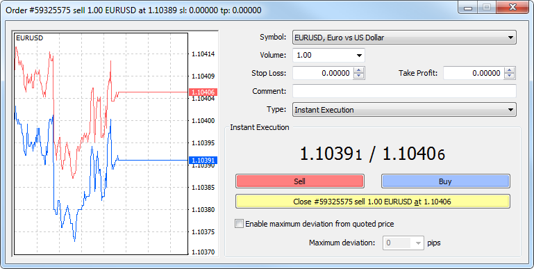
If trade operations for a certain symbol are executed on request, one has first to receive quotes by pressing of the "Request" button. This activates the button that allows to close position.
|
Attention: in the "Execution on request" mode, the offered quotes will be active for just a few seconds. If no decision has been made within these seconds, the "Close... " button will be locked again; client terminal allows to close positions partially. To do so, one has to specify the amount of lots less than that given for the opened position in the "Volume" field before pressing of the "Close... " button; broker can close positions, as well. For example, it can be done when prices reach the "Stop Out" level that was set by the broker; history charts are drawn only on BID prices in the terminal. At that, a part of orders shown in charts is drawn on ASK prices. To get ASK price of the latest bar shown, one has to flag "Show Ask line" option in the terminal settings. |
Close by Opposite Positions
Opposite position towards the given one is a reverse position for the same symbol. If there is one or more opposite positions among the open positions, one can close the selected position by and together with an opposite one. To do so, one has first to open the "Order" window (as described above).
Then, the "Close by" must be selected in the "Type" field. After that, the list of all opposite positions will appear in the lower part of the window. One has to select an opposite position in this list, and after that the "Close... " button will be activated. It allows to close two positions at the same time. Only one of two opposite positions with different amounts of lots to be traded will remain. The volume (amount of lots) of this position will equal to the difference between lots of the two closed positions, and its direction and open price (short or long) will correspond with those of the larger (in volume) of two closed positions.
Multiple Close by Opposite Positions
Multiple close of several opposite positions allows to close more than two opposite positions at the same time. To perform this operation, one has also to open the "Order" window (as described above). Then the "Multiple close by" must be selected in the "Type" window. At that, the list of all opposite positions will appear in the lower part of the window, and the "Multiple close by... " button will be active. It allows to close opposite positions. Positions will be closed in pairs, according to the open time, and they will be closed as described above for two opposite positions. If the difference between the sums of volumes is not zero, a new position will be opened as a result of the operation, the volume being equal to this difference. The newly opened position will participate in the multiple close process, but according to its open time, and so on until all positions are closed or the last resulting position is opened.
|
Attention: After opposite positions have been closed, the corresponding records will be made in the "Terminal Account History" window. At that, overhead information about closing of opposite positions will be entered in the "Comment" field. |
Placing of Pending Orders
To place a pending order, one has to open the "Order" window. This can be done by the "Tools New Order" menu command, the button of the "Standard" toolbar, by pressing of F9, by the "New Order" command of the "Market Watch" and "Terminal Trade" window context menus, as well as by double-clicking on the symbol name in the "Market Watch" window. "Pending Order" must be selected in the "Type" field of this window.
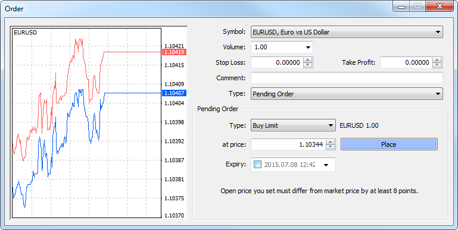
Further, a security (symbol) must be selected, the volume and values of Stop Loss and Take Profit orders must be specified. If necessary, a comment can be written in the field of the same name. In the "Pending Order" fields one has to:
Type select a type of pending order: Buy Limit, Buy Stop, Sell Limit, or Sell Stop;
at price set the price level at which the order must trigger;
Expiry set the expiry time of the order. If the order has not triggered by this time, it will be deleted automatically.
|
Attention: Order may not expire earlier than in 10 minutes! |
The "Place" button will send the order to be executed what is performed in two stages. First, the brokerage company places the order after it has been sent. At that, a line containing the number and status of the pending order will appear in the "Terminal Trade" tab. If the "Show trade levels" option is enabled, levels of the placed pending order (including levels of Stop Loss and Take Profit) will be shown in the chart. At the second stage, if prices correspond with the order provisions, it will be deleted and a trade position will be opened instead of it. The trade position ticket will coincide with the pending order ticket. These changes will be shown in the "Terminal Trade" window.
|
Attention: Stop Loss and Take Profit orders trigger only at open positions, but not at pending orders. |
Modifying of Pending Orders
When working at the market, one often needs to modify or delete the placed pending order. To do so, one has to execute the pending order context menu command of "Modify or Delete Order" or double-click with the left mouse button on the pending order status bar in the "Terminal Trade" window. The window for order managing will open. New price of the pending order triggering, new levels of Stop Loss and Take Profit, as well as expiry time of the order can be set in this window. After the order has been modified, one has to press the "Modify" button.
|
Attention: Setting of zero values for Stop Loss and Take Profit equals to disabling of these orders. |
If the pending order has been successfully modified, the values of the corresponding fields in the "Terminal Trade" window will be changed. If the "Show trade levels" option in the terminal settings has been enabled, the pending order levels and those of Stop Loss and Take Profit attached to it will be shifted correspondingly in the chart, as well.
Deletion of Pending Orders
If market situation has been changed, there can occur a necessity to delete a pending order. To do so, one has to execute the "Modify or Delete Order" pending order context menu command or double-click with the left mouse button on the status bar of the pending order in the "Terminal Trade" window. The window that manages orders will open. To delete an order, the button of the same name must be pressed in it. Pending orders can also be deleted automatically at the time that has been given in the "Expiry" field. When a pending order has been deleted, the corresponding record will appear in the "Terminal Account History" window.
Trading on Chart
The client terminal allows traders to perform trading operations right on the symbol's chart. Combined with one click trading function, this enables users to open, modify and close positions quickly, as well as manage pending orders.
|
If One click trading option is enabled in the terminal settings, trading commands described in this section are executed without additional confirmation (trading dialog is not displayed). |
One Click Trading Panel
A special panel has been implemented to allow performing trading operations right on the chart. To activate it, execute " One Click Trading" in the chart's context menu.
You can show/hide the panel by clicking icon to the left of OHLC.
Using this panel you can instantly send buy or sell market orders with specified volumes.
|
When trading in the instant execution mode, the acceptable deviation of price in the orders is set according to the"Deviation" option. When a getting a requote, the corresponding message is written to the terminal journal and the requote sound is played. |
Placing Pending Orders
Pending orders can be placed from the chart using Trading submenu of the chart's context menu:
Place mouse cursor on the necessary price level on the chart and execute the appropriate command to install a pending order in the context menu.
According to the cursor's position, available order types are displayed in the menu. If the menu is activated above the current price, user can place Sell Limit and Buy Stop orders. If the menu is activated below the current price, Buy Limit and Sell Stop orders can be placed.
Available distance between the selected and current price for the symbol is additionally checked ("Stops level").
|
The volume for the orders placed is selected via the quick trading panel on the chart. |
After executing the command, Order window will appear allowing users to adjust its parameters more precisely. If "One click trading" option is enabled in the terminal settings, orders are placed at a specified price instantly without displaying the trading dialog.
Managing Stop Levels on the Chart
Enable "Show trade levels" option in the terminal settings to be able to change Stop Loss and Take Profit levels on the chart.
To set stop levels, click with the left mouse button on a position level and drag it up (Take Profit for buy position or Stop Loss for a sell position) or down (Stop Loss for a buy position or Take Profit for a sell position). Release the mouse button once the cursor is at the required price.
To modify the level on the chart, left-click on it and drag the level up or down to the required value holding the mouse button (Drag'n'Drop):
When moving a level there is a tooltip displaying potential profit (or loss) in the deposit currency and pips that can be obtained if the level triggers.
After setting the level, position modification window will appear allowing users to adjust the level more precisely. If "One click trading" option is enabled in the terminal settings, modification is performed instantly without displaying the trading dialog.
Managing Pending Orders on the Chart
Enable "Show trade levels" option in the terminal settings to be able to change pending orders on the chart.
For pending orders, it is possible to modify Stop Loss and Take Profit levels separately, as well as modify the order price along with stop levels:
In order to modify a stop level on the chart, left-click the necessary level and drag it up or down to the required value holding the mouse button (Drag'n'Drop).
Drag the price line to modify the entire order. In this case, both a price and a stop level will be relocated.
When moving an order there is a tooltip displaying the distance to the current price in the deposit currency and pips.
After setting the level, order modification window will appear allowing users to adjust the level more precisely. If "One click trading" option is enabled in the terminal settings, modification is performed instantly without displaying the trading dialog.
Position's Context Menu on the Chart
You can change and close your positions, as well as set trailing stops using position's context menu on the chart:
Modify open position modification window;
Close open position closing window. If "One click trading" option is enabled in the terminal settings, position is closed instantly without displaying the trading dialog;
Trailing Stop open the menu of Trailing Stop level selection for a position.
Order's Context Menu on the Chart
You can change or remove your pending orders, as well as set a trailing stop using pending order's context menu on the chart:
Modify open the window of the selected order modification;
Delete open the window for deleting the selected order. If "One click trading" option is enabled in the terminal settings, deletion is performed instantly without displaying the trading dialog;
Trailing Stop open the menu of Trailing Stop level selection for an order.
Auto Trading
To work at financial markets more effectively, one can develop one's own successful system of trading. It is very difficult to act within a chosen system of trading in the manual mode due to significant influence of normal human emotions. Mechanical trading systems do not suffer from this disadvantage.
Client Terminal gives a large range of means for development and use of mechanical trading systems (MTS, experts, advisors). The development environment allows to create, debug, and test expert advisors. Experts are able not only alert about recommendation trading signals, but undertake the complete control over trading activities online.
MetaQuotes Language 4, MetaEditor and strategy testing tools are built in the terminal. One can create the following using these means:
Expert Advisors mechanical trading systems that allow complete automation of analytical and trading activities;
Custom Indicators independently written technical indicators intended for analyzing of price changes;
Scripts programs to be executed only once, on request.
Where to Get Trading Robots and Indicators
The trading platform features a great amount of popular technical indicators. However, you are not limited to the provided set of tools. There are a lot of custom indicators you can obtain directly via the trading platform.
Market a store of applications for the trading platform
Code Base a free source code library of Expert Advisors and indicators
Freelance a service where you can order trading applications
MQL4 a programming language for developing Expert Advisors and indicators
Market a Store of Applications for the Trading Platform
Market is a secure service for buying trading robots, indicators, scripts and other trading programs. The service offers ready-made applications for working on financial markets and is available to all trading platform users. They can open Market, buy or rent a program and launch it right via their platforms at any time.
Apart from automated trading applications, the Market also offers Magazines and Books.
To purchase a Market product, go to its page and click Buy. After the operation is confirmed, the application is activated and downloaded to an appropriate folder Expert Advisors, Indicators or Scripts. The application appears in the Navigator window and is ready to be launched on a chart.
Code Base a Free Source Code Library of Expert Advisors and Indicators
You have access to a huge library of free automated trading programs directly from your trading platform. Despite the fact that they are presented as source codes, you do not need to have programming skills to launch them.
The code is compiled automatically during the download and a ready-to-run application is placed to an appropriate folder Expert Advisors, Indicators or Scripts. The application appears in the Navigator window and is ready to be launched on a chart.
Freelance a Service Where You Can Order Trading Applications
In case you have not found the application you need in Code Base or Market sections, make an appropriate order to professional developers in Freelance section on MQL5.community website.
The process is completely secure, since a payment remains frozen and is transferred to a developer only when a customer accepts the work. In case of a dispute, you can resort to arbitration.
MQL4 a Programming Language for Developing Expert Advisors and Indicators
You can develop trading robots and indicators using MQL4 programming language based on the concepts of well known and popular С++ language. MQL4 is also a high-level object-oriented programming language. However, due to its narrow specialization, MQL4 thrives in financial markets challenges.
Programs are developed using specialized MetaEditor tool which recognizes different language structures, suggests tips on how to use functions and highlights various elements of the program source code. Thus, the editor enhances navigation in the source code of trading programs and speeds up the development process.
MQL4
MetaQuotes Language 4 (MQL4) is the language for programming of trade strategies built in the client terminal. It allows to write custom expert advisors that automate trade processes and ideally suit for implementation of traders' own strategies. Moreover, traders' own custom indicators, scripts and DLL's can be created in MQL4.
Syntax of MQL4 is quite similar to that of C language. A large amount of functions necessary to analyze quotes, manage positions, call technical indicators, and others, are included in MQL4. The MetaEditor, an editor for expert advisors, is used for writing the source code of programs. The MetaQuotes Language Dictionary that contains descriptions of all language constructions and functions is built in the editor.
Programs written in MQL4 are different in tasks and properties:
Expert Advisor is a mechanical trading system (MTS) to be run when a new tick incomes. It can work not only in the mode alerts, but also perform trade operations independently. Terminal allows to test trading strategies on history data in order to detect the expert features under different market conditions;
Custom Indicator is a technical indicator written individually. Custom indicators are used only for analyzing of price changes;
Script is a program that is intended for a single execution of some actions. Unlike experts, scripts are launched not tick by tick, but on a command.
MetaEditor
MetaEditor is a constituent of the client terminal. It is intended for creation, editing, and compilation of program source codes written in MetaQuotes Language 4 (MQL4). It can be used in developing of experts, custom indicators, scripts and DLL's.
Expert Advisors Wizard is built in the editor to assist in fast creation of new MQL4 programs. The new file will be saved in the corresponding folder of the client terminal automatically. Templates can be used in creation of an MQL4 program, as well. After that, one can start writing the program text. The supplemental information can be found in MQL4 Dictionary. The full description of the language with examples of how to use it is given there. After the program has been written, one has to compile it in MetaEditor. As a result of successful compiling, the executable program code will be created that can be launched or tested in the terminal.
A detailed description of MetaEditor can be found in its Help Files.
Expert Advisors
Expert Advisors (experts) are programs in the terminal that have been developed in MetaQuotes Language 4 (MQL4) and used for automation of analytical and trading processes. They allow to perform prompt technical analysis of price data and manage trading activities on basis of signals received. The entire routine work of technical analysis and trading can be given to experts. An expert can perform analytical and trading operations for any symbols or periods independent on whether the corresponding chart was opened or not.
Working with experts means:
Creation of an Expert
To create and compile an expert, one has to use the built-in "MetaEditor".
It is a constituent of the client terminal and represents a convenient
development environment of MQL4 programs.
Expert Setup
Before using of experts, one has to set up them first. Working
parameters common for all experts are set in the client terminal settings.
Besides, each expert can have its own settings.
Launch of an Expert
To launch an expert, one has to impose it into the chart. As
soon as a new tick incomes, the expert will start executing.
Expert Shutdown
An expert advisor is shut down after it has been removed from
the chart.
Creation
To create experts, one has to use MetaQuotes Language 4 (MQL4) and MetaEditor. To launch the expert editing program, one has to execute the "Create" command of the "Navigator Expert Advisors" window context menu, or the "Tools MetaQuotes Language Editor" menu command, or press F4 or the button of the "Standard" toolbar.
After that, the Expert Creation Wizard will be opened automatically that allows to immediately start working at a new MQL4 program. One has to flag the "Expert Advisor" as a type of object to be created and fill out the following fields:
Name expert name;
Developer the developer's name;
Link link to the developer's site;
Inputs the list of expert inputs. To add a new parameter, one has to press the "Add" button or the "Delete" button to delete a parameter.
After that the new expert window with the defined inputs will open in editor. The source file (*.MQ4) of the expert will be saved in the /EXPERTS folder of the client terminal automatically. At this moment, one can start to write the expert code.
After the expert development has been completed, it must be compiled. To do so, one has to execute the "File Compile" command in the expert editor, or press F5 or the button of the toolbar. As a result of successful compilation an executable program file with *.EX4 extension will be created and saved in the /EXPERTS folder automatically. The list of compiled experts can be viewed in the "Navigator Expert Advisors" window in the client terminal. If the expert has not been compiled successfully, its icon will be gray. This means that this expert cannot be used.
Editing of Experts
To start editing of the existing expert from the terminal, one has to execute the "Modify" command of the "Navigator Expert Advisors" window context menu. At that, the experts editor will open where the source code of the selected expert. After the expert source code has been modified, one has to recompile it and get a new executable EX4 file. Otherwise, terminal will use the previous version of the expert, the non-modified one.
|
Attention: If the expert has not been compiled successfully, its icon will be gray. This means that this expert cannot be used. |
Setup
Before using of experts, one has to set them up first. Working parameters common for all experts are defined in the client terminal settings window. This window can be opened by the "Tools Options" menu command or by pressing of accelerating keys of Ctrl+O.
To set up expert parameters, one has to select the "Expert Advisors" tab. The following settings are available in it:
Allow automated trading this option allows to enable or disable the performing of trade operations by Expert Advisors andscripts. If it is disabled, scripts and Expert Advisors will work, but they won't be able to trade. This limitation can be useful for testing the analytical capacity of an Expert Advisor in the real-time mode (not to be confused with testing of Expert Advisors on history data). Automated trading can also be allowed or disabled using button on the toolbar.
Disable Auto Trading when the account has been changed this option represents a protective mechanism disabling trading by Expert Advisors and scripts when the account is changed. It is useful, for example, when one changes demo account for a real one.
Disable Auto Trading when the profile has been changed a large amount of information about the current settings of all charts in the workspace is stored in profiles. Particularly, profiles contain information about Expert Advisors attached. Expert Advisors included into the profile will start working when a new tick incomes. Having enabled this option, one can hinder the trading by the Expert Advisors launching when the profile has been changed.
Disable Auto Trading when the charts symbol or period has been changed if this option is enabled, then when the period or symbol of a chart is changed the expert advisor, which is attached to it, will be automatically prohibited to perform trade operations.
Allow DLL imports
To enlarge their functionality, expert advisors can use DLLs
(dynamic-links libraries). If it is enabled, such libraries can be used without
any limitations. If this option is disabled, no expert can use external DLLs.
It is recommended to disable import when working with unknown experts.
Allow WebRequest for listed URL
The WebRequest() function in MQL4 is used for receiving and
sending information to websites using GET and POST requests. To allow an MQL4
application to send such requests, enable this option and manually explicitly
specify the URLs of trusted websites. For security reasons, the option is
disabled on default.
Launch
After general parameters have been set up, experts can be launched. To do so, it is enough just to attach the expert to the chart. The "Attach to a chart" command of the "Navigator Expert Advisors" window context menu or double click with the left mouse button on the selected expert in the same window allows to impose it into the active chart.
"Drag'n'Drop" technique allows to impose the expert into any chart. At that, the window of the expert special settings will appear.
In its "Common" tab, it is possible:
Positions select the direction of position opening:
Long&Short in both directions;
Only Long only for buying;
Only Short only for selling.
Enable alerts enable/disable the expert to alert;
Disable alert once hit disable alerts after the first alert has been given;
Allow live trading enable/disable live trading. Note that even if this option is enabled, the autotrading for the Expert Advisor may be disabled by the general settings of the terminal.
Allow DLL imports enable/disable imports of functions from DLL files;
Allow import of external experts enable/disable calling of functions from external experts;
Allow modification of Signals settings this option allows/prohibits an MQL4 application subscribing and unsubscribing from Signals as well as changing the settings of signal copying. The functions for working with the base of Signals from an MQL4 application allow performing your own analysis of the quality of signals, dynamically manage the subscription and adjust risks. More detailed information about the functions for managing the signals is provided in MQL4 Reference.
External variables of the expert can be changed in the "Inputs" tab.
These are variables of extern class. To save an input, one has to double-click with the left mouse button on its value and write the new one. At that, one can change the value of each variable or download the set of inputs already saved (the "Load" button). One can save the current set of external variables using the button of the same name.
The "Reset" button returns all default settings. Parameters defined in the terminal settings are given in the "Common" tab. And parameters defined in the program source code are set as inputs. To attach the expert with the new parameters to a chart, one has to press "OK". To cancel the expert imposing, one has to press the button of the same name.
|
Attention: Only attached experts can be set up individually. However, while current executing, the window of the expert properties cannot be opened. This can be done only during intervals between calls of the start() function. At that, the expert will not be launched until its properties window is closed. If the expert inputs were changed, the expert will be re-initialized with its new inputs at pressing of "OK". |
After an expert has been set up, it will be initialized and, as soon as a new tick incomes, execute. Expert is attached if its name and a smiley can be seen in the upper right corner of the chart. If live trading is disabled in the expert settings, a L will appear instead of the smiley. A dagger () means that all experts are disabled.
|
Attention: Only one expert can be attached to a chart. If another expert is imposed, the previous one will be deleted from the chart. |
Shutdown
To shut down an expert, one has to remove it from the chart. Expert must have been deinitialized before it is shut down. To remove an expert from the chart, one has to execute the chart context menu "Expert Advisors Delete" command or attach another expert to the same chart. Besides, the expert can be removed from the chart at profile or template change.
|
Attention: at client terminal shutdown, all experts are shut down, too; at chart closing, the expert attached to this chart will be shut down; at imposing of another expert, the previous one will be removed after confirmation; deletion of the expert from the "Navigator" window does not shut down the expert of the same name imposed in the chart; disabling of experts in the client terminal settings does not provide complete disabling of experts. This option stops launching of the start() function of each expert, but the init() will continue to execute. |
Strategy Testing
The terminal allows not only write expert advisors, but also test them before using. This useful function allows to check operativeness and efficiency of the trading system on history data. Testing allows to start automated trading with the full knowledge about expert conduct under different market conditions. The special "Tester" window was built into the terminal for this purpose. Using this window, one can optimize expert inputs, as well.
Setup
Before starting to test expert advisors, one has to perform the setup. This means that one has to:
select an expert and set up its inputs
select a symbol and its period
select one of three modeling methods
set the testing time range (optional)
To test and optimize experts, a special "Tester" window is used in the terminal. All above parameters are set in the "Settings" tab of this window.
An Expert Advisor and Its Parameters
One has to select an expert to be tested in the "Tester Expert Advisor" field. One cannot select any expert file in this field. Only those experts that are available in the client terminal can be selected here. To be selected, they must be compiled and located in the /EXPERTS folder.
After an expert has been selected, one has to perform additional setting of testing parameters and inputs. This can be done by pressing of the "Expert properties" button.
A new window with three tabs will appear then:
Testing general testing parameters are set in this tab. These are volume and currency of the initial deposit to be given in the corresponding fields. It is this deposit that will be operated by the expert during testing. Types of positions to be opened at testing are defined here, as well: Only Long open only long positions; Only Short open only short ones; Long and Short open both long and short positions. Whatever expert algorithm is, it will open positions only in the defined directions. One can include an optimization genetic algorithm and select a parameter to be optimized (maximization by the balance value, the profit factor, expected payoff, or minimization by the maximal drawdown value or drawdown percent).
Inputs the list of all inputs is given here as a table. Inputs are variables that influence the expert operation and can be changed directly from the client terminal. There is no need to change the expert code in order to change these parameters. The amount of input variables can change depending on the expert. At testing, the expert inputs are defined in the "Value" field. Data written in the fields of "Start", "Step", and "Stop" do not influence expert testing and are necessary just foroptimization of its parameters. How to work with these parameters is described in the "Optimization Setup" section.
Optimization settings in this tab allow to limit testing passes at optimization. Changing of parameters in this tab does not influence single testing passes of the expert.
Symbol and Its Period
To start testing, it is not enough just to select an expert and set it up. One has to select a symbol and a period (timeframe) for testing. These are data that will be used for testing. At testing, one can select an available in terminal symbol or use an external data file. History data files of *.FXT format stored in the /TESTER directory are used in testing. These file are created automatically at testing if an available in the terminal symbol was selected.
The symbol is defined in the field of the same name, and timeframe is in the "Period" field. If no data file for this symbol, period and modeling method does not exist yet, it will be created automatically. If there are no history data for the symbol or period, the tester will download the last 512 history bars automatically.
|
Attention: If there are some data outside the latest 512 bars for the symbol, the history data will be downloaded automatically, up to the last available one. This can cause sharp increase of the incoming traffic. |
Methods of Modeling
Historical data are saved in the terminal only as bars and represent records appearing as TOHLCV (HST format). These data can be used for modeling of price changes at testing experts. In some cases, such information is not enough for testing. For example, for the daily timeframe, price changes within a bar can result in triggering of the expert. At the same time, no triggering can occur at testing. In other words, testing an expert based on only bars can be inaccurate and give a false idea about the expert efficiency.
The trading terminal allows to test experts by various methods of historical data modeling. Using historical data from smaller periods, it is possible to see price fluctuations within bars, i.e., price changes will be emulated more precisely. For example, when an expert is tested on one-hour data, price changes for a bar can be modeled on one-minute data. Thus, modeling brings historical data near the real price fluctuations and makes expert testing more authentic.
One of three methods of historical data modeling can be chosen for testing:
Open prices only (fastest method to analyze the bar just
completed)
Some automated trading systems do not depend on properties of
modeling within a bar, they trade on completed bars. The bar is completed if
the next one has appeared. These are such experts for that this modeling method
was developed.
In this mode, the bar opening is modeled first (Open = High =
Low = Close, Volume=1) what allows the expert to identify the completion of the
preceding bar precisely. It is this incipient bar that is used to start testing
the expert. At the next step, the fully completed current bar will be given,
but no testing is performed on it!
Control points (the nearest less timeframe is used)
The control points modeling method is intended for a crude
estimate of experts efficiency that trade within the bar. The historical data
of the nearest less timeframe must be available to apply this method. In some
cases, the available data of the less timeframe do not completely cover the
time range of the timeframe under test. If the data of the less timeframe are
missing, the bar evolution is generated on the basis of predefined wave
templates as it was in the preceding, third version of MetaTrader 3 Client
Terminal.
As soon as historical data of the less timeframe appear, these
new data will be interpolated. However, the really existing OHLC prices appear
as control points. In the most cases, the results of testing experts by method
of control points can also be considered as estimated ones, not as final ones.
Such results are of intermediate, estimated nature.
Every tick (based on all available least timeframes)
This is the most accurate method of modeling prices within a
bar. Unlike that of "control points", this method uses for generation
not only data of the nearest less timeframe, but also those of all available
nearest timeframes. At that, if there are data of more than one period for the
same timeframe at the same time, the data of the least timeframe will be used
for modeling. Like in the preceding method, control points are generated on the
basis of OHLC data of the least available timeframe. To generate price
movements between control points, interpolation based on predefined templates
is also used, so one-minute data are highly desirable to be available that
would cover the entire testing range. It is possible that several similar ticks
are modeled one after another. In this case, the doubled quotes will be
filtered out, and the volume of the last of them will be fixed.
One has to consider the possible large amount of tick data
modeled. This can influence the consumed resources of the operation system and
testing speed.
|
Attention: it is not recommended to launch testing on every tick if there are no available less timeframes that completely cover the period under test, otherwise, the results will not be accurate; modeling on control points is basically used at optimization of experts, and all ticks modeling is for a close testing. |
The modeling quality can be checked in the "Report" window. The "Modeling quality" field and a colored band are intended for this. The band is a scheme of the modeling process. It can be of three colors:
1. Gray this part of available data did not participate in testing. Gray color can appear if the date range was specified for testing (described below);
2. Red modeling was not performed in this space because of missing data of a less timeframe. At that, only data of the timeframe selected for testing were used;
3. Green modeling was performed in this space. And the brighter is the color, the higher the modeling quality was. For example, at testing on H1 period, the deep-green band can mean that data of M30 period were used for testing, and the brightest one does that M1-period data are used.
The price history stored in the client terminal includes only Bid prices. On default, to model Ask prices, the strategy tester uses the current spread of a symbol at the beginning of testing. However a user can set a custom spread for testing in the "Spread" field.
Time Range
The range of dates allows to test experts not on all available data, but within a certain time space only. This can be useful if there is a need to test a certain part of history data. Date range can be used not only for expert testing, but also for modeling of the testing succession of bars (file of data modeled to be used for testing). It is often no need to model data of the entire history, especially for every-tick modeling where the amount of unused data can be very large. That is why, if data range was allowed to be set at the initial modeling of testing succession, bars that are beyond this range will not be modeled, but just transcribed into the output succession. The data will not be excluded from the succession in order the correct calculation of indicators on the entire received history to be possible. It must be noted that the first 100 bars will not be modeled either. This limitation does not depend on the date range defined.
To enable date range limitation, one has to flag "Use date" and specify the necessary values in the fields of "From" and "To". After all settings have been made, one can press the "Start" button and start testing. After testing has started, the approximate time of completing of this process can be viewed in the lower part of the window.
Testing Visualization
If the ""Visualization"is flagged, after the "Start" button has been clicked, the chart will be opened automatically, on which the modeled tick sequence will be played. The playback speed can be regulated. The playback can be suspended by clicking the "||" button. The repeated click on this button resumes the income of the modeled ticks. Pressing of F12 causes immediate appearance of the next tick even in the suspension mode. Visualization can be skipped up to a certain date. After the desired date is set and the "Skip to" button is clicked, visualizing will stop and then resumed after the tester reaches the defined date.
|
Attention: If "Optimization" is enabled, expert parameters will be optimized, not tested, after the "Start" button has been pressed. |
Results
After the testing has been completed, one can see the results thereof in the tabs of "Results", "Graph", "Report", and "Journal".
Results
Information about all trade operations performed is given in this tab as a table:
# the trade operation sequence number;
Time time at which the operation was performed;
Type type of the operation (sell, buy, s/l, t/p, modify, close at stop, etc.);
Order ticket number of trade position or pending order (not to be mixed up with the trade operation sequence number described above);
Size amount of lots traded;
Price symbol price during operation;
S/L the Stop Loss order value. No entries in this field mean that the order was not placed;
T/P the Take Profit order value. No entries in this field mean that the order was not placed;
Profit profit/loss. The profit/loss value is entered only at closing of positions;
Balance balance value. The balance value is recorded only at closing of positions.
Having clicked with the left mouse button on any column header, onl can sort out all entries in the table in increasing or decreasing order. Using the "Copy" context menu command or accelerating keys of Ctrl+C, one can copy the selected lines of results to the clipboard for further use in other applications. If no line has been selected, the entire table will be copied to the clipboard. As well, to copy the entire table to the clipboard, one can execute the "Copy All" command. The report of results can be saved in the hard disk as an HTML file. To do so, one has to execute the "Save as Report" context menu command. The commands of "Set Date "From"" and "Set Date "To"" allow to set the time span for testing. At that, the selected operations dates will be written in the fields of "Use date from:" and "Use date to:" in the testing settings. This can be useful if there is a need to test an expert closely or to optimize its parameters within this range of dates.
Graph
The graph representing the account balance (the blue line is "Balance") and general account status considering open positions (the green line is "Lots") is drawn in the "Graph" tab automatically. If only balance line is displayed in the graph, it means that the lines of "Balance" and "Lots" coincide during the entire testing period. Graph allows changes in trading results during testing even more visualized. If lot sizes were changed during testing, the chart of lot size changes will be shown in the bottom of the graph.
A double click with the left mouse button on any point in the graph will switch to the "Results" button, the corresponding line being selected. Using the "Copy" context menu command or accelerating keys of Ctrl+C, one can copy the graph to the clipboard to be used in other applications. A graph can also be saved in the hard disk as a GIF file. To do so, one has to execute the "Save as Picture" context menu command or press the accelerating keys of Ctrl+S. The commands of "Set Date "From"" and "Set Date "To"" allow to set the time span for testing. At that, the selected operations dates will be written in the fields of "Use date from:" and "Use date to:" in the testing settings. This can be useful if there is a need to test an expert closely or to optimize its parameters within this range of dates.
Report
Generalized results of the expert testing and some key data are represented in the "Report" tab. Such reports allow to quickly compare various experts to each other. The following data are published in reports:
Bars in test the amount of history data modeled in bars;
Ticks modeled the amount of ticks modeled;
Modeling quality the quality of ticks modeled during testing, in per cents. Modeling is shown elementarily as a band in the next line of the report. The band can be of one of three colors:
Gray this part of available data was not involved into testing. Gray color can appear if there was a date range specified in the testing settings;
Red modeling was not performed in this space because of missing available data of a less timeframe. At that, only data of the timeframe selected in the testing settings were used;
Green modeling was performed in this space. And the brighter is the color, the higher modeling quality was. For example, at testing on the H1 period, the deep-green band means that data of M30 period were used for testing, and the brightest one does that M1 data were used;
|
Attention: If the fastest method ("Open prices only") was selected in the testing settings, the entire band will be red. At that, "n/a" (no modeling was performed) will be written in the "Modeling quality" field; |
Initial deposit the amount of initial deposit;
Total net profit financial result of all trades. This parameter represents the difference between "Gross profit" and "Gross loss";
Gross profit the sum of all profitable trades in monetary units;
Gross loss the sum of all unprofitable trades in monetary units;
Profit factor the ratio between the gross profit and the gross loss in per cents. One means that these sums are equal;
Expected payoff mathematical expectation of win. This parameter to be calculated statistically represents average profit/loss factor of one trade. It can also be considered as showing the expected profitability/unprofitability of the next trade;
Absolute drawdown the largest loss is below initial deposit value;
Maximal drawdown the largest loss of the local maximum in the deposit currency and in per cents of the deposit;
Relative drawdown the maximal loss in percents of the maximum equity value and its corresponding money value;
Total trades total amount of trade positions;
Short positions (won %) amount of short positions and the profit percentage thereof;
Long positions (won %) amount of long positions and the profit percentage thereof;
Profit trades (% of total) the amount of profitable trade positions and their part in the total trades, in per cents;
Loss trades (% of total) the amount of unprofitable trade positions and their part in the total trades, in per cents;
Largest profit trade the largest profit among all profitable positions;
Largest loss trade the largest loss among all unprofitable positions;
Average profit trade average profit value within a trade (sum of profits divided into the amount of profitable trades);
Average loss trade average loss value within a trade (sum of losses divided into the amount of unprofitable trades);
Maximum consecutive wins (profit in money) the longest series of profitable trade positions and sum of their wins;
Maximum consecutive losses (loss in money) the longest series of unprofitable trade positions and sum of their losses;
Maximal consecutive profit (count of wins) the maximal profit within one series of profitable trades and the corresponding amount of profitable trades;
Maximal consecutive loss (count of losses) the maximal loss within one series of unprofitable trades and the corresponding amount of unprofitable trades;
Average consecutive wins average amount of profitable positions in consecutive profitable series;
Average consecutive loss average amount of unprofitable positions in consecutive unprofitable series.
The report can be copied to the clipboard or saved in the hard disk as an HTML file. To do so, one has to execute the context menu commands of "Copy" and "Copy as Report", respectively. The report can also be copied to the clipboard by pressing of accelerating keys of Ctrl+C.
"Journal" Tab
Information about testing process with all trade operations is automatically published in the "Journal" tab. This journal is the same as that of the "Terminal Experts" window, except for that messages published in the tester window inform about testing the expert, but not about its operation at the market. After testing has been completed, these data will be output in a separate directory named /TESTER/LOGS. The testing journal files are stored in the /EXPERTS/LOGS directory, file names corresponding with the data of journal YYYYMMDD.LOG.
The following commands can be execute from the context menu of this tab:
Open open the folder with the log files of the journal. Besides that, when this command is executed, all current journal records are saved to log files. These files are stored in the /TESTER/LOGS directory of the client terminal. File names correspond to the date when the journal was formed YYYYMMDD.LOG. thus you can view previous records of the terminal operation. Only latest entries are displayed on the "Journal" tab;
Copy Copy the line with the information to clipboard for further using it in other applications;
Clear All Journals Logs delete all the log files of the strategy tester (/TESTER/LOGS). The Journal tab is cleared and all the log files are deleted from the specified folders when this commands is executed.
Viewer Open the window of the special program for viewing log files;
Auto Scroll if this option is enabled, the list of entries will be automatically scrolled to the latest entry as a new message appears in the journal.
Auto Arrange if this option is enabled, size of the table columns will be selected automatically when the window size is changed;
Grid show/hide grid to separate fields.
History Files in FXT Format
In its operation, tester uses an *.FXT file with generated succession of bars. Each record of the generated succession represents the bar status at either moment within one bar. When modeling bars, tester takes other bars from this file and updates the current bar or adds another one if it has just begun to be formed.
A short description of the format is given below. It begins with the header:
|
//+------------------------------------------------------------------+ |
Then, the array of modeled bars follows:
|
#pragma pack(push,1) |
Testing Indicators
The Strategy Tester in the trading platform allows you to test not only Expert Advisors, but also indicators. This can be done in the visual testing mode. The behavior of the indicator is shown on a chart, which is plotted based on a sequences of ticks simulated in the tester.
|
Various indicators are available in the MetaTrader Market. Before purchasing you can download a demo version of an indicator and test it in the strategy tester.</s2> |
This section describes how to configure and testing indicators.
Setup
How to Select an Indicator and Configure It
Symbol and Its Period
Modeling Techniques
Time Range
How to Select an Indicator and Configure It
If you need to test an indicator, select the appropriate program type "Indicators" in the strategy tester. After that, select an indicator from the list. The list features all indicators, which are located in the terminal folder MQL4\Indicators (including subfolders).
|
When you select testing of indicators, the visual mode is automatically activated. |
You can test any indicator from the Market for free before buying. Download the demo version of the indicator, double-click on it in the Navigator and click on "Test":
Then the indicator will be selected in the strategy tester, you will only have to configure parameters and start the testing process.
If an indicator has any input parameters, you can configure them before the start of testing. Click "Indicator Properties".
Symbol and Its Period
To start testing, it is not enough just to select an indicator and set it up. One has to select a symbol and a period (timeframe) for testing. These are data that will be used for testing. At testing, one can select an available in terminal symbol or use an external data file. History data files of *.FXT format stored in the /TESTER directory are used in testing. These file are created automatically at testing if an available in the terminal symbol was selected.
The symbol is defined in the field of the same name, and timeframe is in the "Period" field. If no data file for this symbol, period and modeling method does not exist yet, it will be created automatically. If there are no history data for the symbol or period, the tester will download the last 512 history bars automatically.
|
Attention: If there are some data outside the latest 512 bars for the symbol, the history data will be downloaded automatically, up to the last available one. This can cause sharp increase of the incoming traffic. |
Modeling Techniques
Historical data are saved in the terminal only as bars and represent records appearing as TOHLCV (HST format). These data can be used for modeling of price changes at testing indicators. In some cases, such information is not enough for testing. For example, for the daily timeframe, price changes within a bar can result in generating a trade signal. At the same time, no generation may occur at testing. In other words, testing an indicator based on only bars can be inaccurate and give a false idea about the efficiency.
The trading terminal allows to test indicators by various methods of historical data modeling. Using historical data from smaller periods, it is possible to see price fluctuations within bars, i.e., price changes will be emulated more precisely. For example, when an indicator is tested on one-hour data, price changes for a bar can be modeled on one-minute data. Thus, modeling brings historical data near the real price fluctuations and makes expert testing more authentic.
One of three methods of historical data modeling can be chosen for testing:
Open prices only (fastest method to analyze the bar just completed)
Control points (the nearest less timeframe is used)
Every tick (based on all available least timeframes)
|
Find out more about modeling techniques in section "Testing Strategies". |
The price history stored in the client terminal includes only Bid prices. On default, to model Ask prices, the strategy tester uses the current spread of a symbol at the beginning of testing. However a user can set a custom spread for testing in the "Spread" field.
Time Range
The range of dates allows to test experts not on all available data, but within a certain time space only. This can be useful if there is a need to test a certain part of history data. Date range can be used not only for expert testing, but also for modeling of the testing succession of bars (file of data modeled to be used for testing).
It is often no need to model data of the entire history, especially for every-tick modeling where the amount of unused data can be very large. That is why, if data range was allowed to be set at the initial modeling of testing succession, bars that are beyond this range will not be modeled, but just transcribed into the output succession. The data will not be excluded from the succession in order the correct calculation of indicators on the entire received history to be possible.
It must be noted that the first 100 bars will not be modeled either. This limitation does not depend on the date range defined.
To enable date range limitation, one has to flag "Use date" and specify the necessary values in the fields of "From" and "To". After all settings have been made, one can press the "Start" button and start testing. After testing has started, the approximate time of completing of this process can be viewed in the lower part of the window.
Indicator Testing Process
The behavior of the indicator is shown on a chart, which is plotted based on a sequences of ticks simulated in the tester. This chart is generated automatically after the testing process is started. It's name contains the financial symbol, the timeframe used and the property "visual".
Logs on the indicator testing process appear n the "Journal" tab. This journal is similar to that in the "Terminal Experts" window. The only difference is that in the tester window, logs are related to the indicator testing instead of operation on a real chart. After the testing process is over, these data are displayed in a separate directory /TESTER/LOGS. The log files are stored in folder /EXPERTS/LOGS, file names correspond to journal creation date YYYYMMDD.LOG.
Expert Optimization
Optimization represents successive passes of the same expert advisor with different inputs on the same data. At that, such parameters can be sorted out at which the expert efficiency will be maximal. Terminal possesses some built-in means that allow to automate this process. To optimize an expert, one has to flag the option of the same name in the "Tester" window and press the "Start" button.
Setup
Optimization represents consecutive passes of the same expert with different inputs on the same data. At that, such parameters can be taken that make the expert efficiency maximal. The terminal possesses in-built means that allow to automate this process. Before beginning to optimize expert parameters, one has to set them up. It means that one has to:
select an expert and its inputs
select a symbol and its timeframe
select one of three bar modeling methods
set up the time span for optimization (optional)
A special window named "Tester" is used for testing and optimization of experts in the terminal. All settings listed above can be made in the "Settings" tab of this window.
Expert Advisor and Its Parameters
One has to select expert the parameters of which should be optimized in the "Tester Experts" window. Not any expert file can be selected in this field, but only those that are available in the client terminal. For this, they must be compiled and placed in the /EXPERTS folder.
After the expert has been selected, one has to make an additional setup and set the inputs. This can be done by pressing of the "Expert properties" button.
At that, a new window containing the following three tabs will appear:
Testing
General optimization parameters are set in this tab. They include the initial deposit volume and currency to be specified in the corresponding fields. It is this deposit that will be operated by the expert during optimization.
Types of positions to be opened are selected in this tab, as well: Only Long, Only Short, or Long and Short. Whatever expert algorithm is used, it will open positions only in the directions defined here.
One can turn on the genetic algorithm of optimization here. Detailed information about it is available in "Genetic algorithms: Mathematics" article.
An optimized parameter is a certain factor, whose value defines the quality of a tested set of parameters. The higher the value of the optimization criterion is, the better the testing result with the given set of parameters is considered to be. The following parameter are available for optimization:
Balance the highest value of the balance;
Profit Factor the highest value of the profit factor;
Expected Payoff the highest value of the expected payoff;
Maximal Drawdown the lowest value of the maximal drawdown;
Drawdown Percent the lowest value of the relative drawdown (in percentage terms);
Custom the optimization criterion here is the value of the OnTester() function in the Expert Advisor. This parameter allows using any custom value for the optimization of the Expert Advisor.
Inputs
All inputs are listed here as a table. Inputs are variables that influence the expert operation and can be changed directly from the client terminal. For these parameters to be changed, there is no need to change the expert code. The amount of inputs can vary depending of experts.
At optimization, the expert inputs are set in the fields of "Start", "Step", and "Stop". Initial values, change interval, and final values of external variables will be set in these fields, respectively. There are checkboxes to the left of variable names that include the parameter into optimization process. If a variable is not checked in this checkbox, it will not be involved into optimization. Its value will not be changed within the optimization process, and the parameter given in the "Value" field will be written here. The amount of expert passes depends on these parameters directly. Data written in the "Value" field do not influence the expert optimization and are necessary only for its testing.
The set of inputs already saved before (including those given in the fields of "Start", "Step", and "Stop") can be downloaded. This can be done by pressing of the "Load" button and having selected the preliminarily saved set of parameters. The current set of external variables can be saved by pressing of the corresponding button.
Optmization
Optimization this tab allows to manage limitations during optimization. If any of conditions is met during a separate pass, this pass of the expert will be interrupted. Optimization will continue with the next pass.
To enable a limit in condition, one has to flag it in the checkbox to the left of it. Double click with the left mouse button in the "Value" field can be used to change the existing parameter; after typing new value, press "Enter". Limiting parameters are:
Balance minimum the smallest balance value in the deposit currency;
Profit maximum the largest profit in the deposit currency;
Minimal margin level % the lowest margin level in per cents;
Maximal drawdown % the largest drawdown in per cents;
Consecutive loss the largest loss within a series. Loss series is a number of consecutive loss trades;
Consecutive loss trades the largest amount of loss trades within a series;
Consecutive win the largest total profit within a series. Profitable series is a number of consecutive profitable trades;
Consecutive win trades the largest amount of profitable trades within a series.
Symbol and Its Period
It is not enough just to select an expert and set it up to start optimization: a symbol and its period (timeframe) must be selected for tests. These are the data on which all tests will be made. A symbol available in the terminal or an external data file can be used for tests. History data files in *.FXT format to be stored in the /TESTER directory are used in tests. These files are created at tests automatically if the corresponding symbol available in the terminal was selected.
Symbol is defined in the "Symbol" field, and timeframe is in the "Period". If there is no data file for this symbol, period, and modeling method, it will be created automatically. If there are no history data for the symbol and period, the tester will download 512 latest history bars automatically.
|
Attention: If there are any data outside the latest 512 bars for a symbol, the data will be downloaded automatically up to the last available bar. This can cause sharp increase of incoming traffic. |
Modeling methods
History data are saved in the terminal only as bars and represent records appearing as TOHLCV (HST format). These data can be used for modeling of price changes at testing experts. In some cases, such information is not enough for testing. For example, for the daily timeframe, price changes within a bar can result in triggering of the expert. At the same time, no triggering can occur at testing. In other words, testing an expert based on only bars can be inaccurate and give a false idea about the expert efficiency.
Terminal allows to test experts by various methods of history data modeling. Using history data from smaller periods, it is possible to see price fluctuations within bars, i.e., price changes will be emulated more precisely. For example, when an expert is tested on one-hour data, price changes for a bar can be modeled on one-minute data. Thus, modeling brings history data near the real price fluctuations and makes expert testing more authentic.
One of three history data modeling methods can be chosen for testing:
Open prices only (fastest method to analyze the bar just
completed)
Some mechanical trading systems do not depend on properties of
modeling within a bar, they trade on completed bars. The bar is completed if
the next one has appeared. These are such experts for which this modeling
method was developed.
In this mode, the bar opening is modeled first (Open = High =
Low = Close, Volume=1) what allows the expert to identify the completion of the
preceding bar precisely. It is this incipient bar that is used to start testing
the expert. At the next step, the fully completed current bar will be given,
but no testing is performed on it!
Control points (based on the nearest less timeframe with fractal
interpolation of 12 control points)
The control points modeling method is intended for a crude
estimate of experts efficiency that trade within the bar. The history data of
the nearest less timeframe must be available to apply this method. In the most
cases, the available data of the less timeframe do not completely cover the
time range of the timeframe under test. If the data of the less timeframe are
missing, the further bar development will be generated on close prices of 12
preceding bars. It means that the changes within the bar are the same as those
of price within the last 12 periods. It is fractal interpolation.
As soon as history data of the less timeframe appear, fractal
interpolation will be applied to these new data. But there will be used not 12,
but just 6 preceding bars. It means that really existing Open, High, Low, Close
prices are reproduced, and two generated prices more. Values and locations of
these two generated prices depend on that on 6 preceding bars.
Every tick (based on all available least timeframes with fractal
interpolation of every tick)
This is the most accurate method of modeling prices within a
bar. Unlike that of "control points", this method uses for generation
not only data of the nearest less timeframe, but also those of all available
nearest timeframes. At that, if there are data of more than one period for the
same timeframe at the same time, the data of the least timeframe will be used
for modeling. Like in the preceding method, control points are generated by
fractal interpolation. It is also used for modeling of price changes between
control points. It is possible that several similar ticks are modeled one after
another. In this case, the doubled quotes will be filtered out, and the volume
of the last of them will be fixed.
One has to consider the possible large amount of tick data
modeled. This can influence the consumed resources of the operation system and
testing speed.
|
Attention: it is not recommended to launch testing on every tick if there are no available less timeframes that completely cover the period under test, otherwise, the results will not be accurate; modeling on control points is basically used at optimization of experts, and all ticks modeling is for a close testing. |
The price history stored in the client terminal includes only Bid prices. On default, to model Ask prices, the strategy tester uses the current spread of a symbol at the beginning of testing. However a user can set a custom spread for optimization in the "Spread" field.
Time Range
The range of dates allows to test experts not on all available data, but within a certain time space only. This can be useful if there is a need to test a certain part of history data. Date range can be used not only for expert testing, but also for modeling of the testing succession of bars (file of data modeled to be used for testing). It is often no need to model data of the entire history, especially for every-tick modeling where the amount of unused data can be very large. That is why, if data range was allowed to be set at the initial modeling of testing succession, bars that are beyond this range will not be modeled, but just transcribed into the output succession. The data will not be excluded from the succession in order the correct calculation of indicators on the entire received history to be possible. It must be noted that the first 100 bars will not be modeled either. This limitation does not depend on the date range defined.
To enable date range limitation, one has to flag "Use date" and specify the necessary values in the fields of "From" and "To". After all settings have been made, one can press the "Start" button and start testing. After testing has started, the approximate time of completing of this process can be viewed in the lower part of the window.
|
Attention: If "Optimization" is disabled, the expert will be tested, not optimized at pressing of the "Start" button; at optimization, like at testing, one can use one's own history files. |
Results
After optimization has been completed, its results can be viewed in the tabs of "Optimization Results" and "Optimization Graph".
Optimization Results
Unlike testing, optimization is supposed to perform many passes of the mechanical trading system (MTS) with different inputs. This is aimed at determining of such expert parameters at which its efficiency will be the highest. To optimize an expert, one has to flag "Optimization" in the testing settings tab and press "Start". After that, two new tabs will appear in the window: "Optimization Results" and "Optimization Graph".
There are not all operations listed in the tab of "Optimization Results", unlike that of testing results, but only final reports about each pass. The entire information is represented as a table with the following fields:
Pass the pass number;
Profit the pure profit (gross profit minus gross loss);
Total trades the total amount of open trade positions;
Profit factor ratio between gross profit and gross loss in per cents. One means that these values are equal;
Expected payoff mathematical expectation of win. This value to be calculated statistically represents the average profit/loss factor of one trade. It can also be considered to represent the expected profit/loss factor of the next trade;
Drawdown $ the largest drawdown related to the initial deposit, in the deposit currency;
Drawdown % the largest drawdown related to the initial deposit, in per cents;
Inputs changeable values of inputs at each pass.
Having clicked with the left mouse button on any column header, one can sort out all records in the table in increasing or decreasing order. At execution of the "Set Input Parameters" context menu command, the data of the selected pass will be written as the expert basic inputs (expert properties window, "Inputs" tab). At that, it will be switched to the "Settings" tab, and the optimization will be disabled. Having pressed the "Start" button, one can start to test the expert with the selected inputs. Double click with the left mouse button on the pass line in the Optimization Results tab allows to do the same. Using the "Copy" context menu command or accelerating keys of Ctrl+C, one can copy the selected results lines to the clipboard for further use in other applications. If no line has been selected, the entire table will be copied to the clipboard. To do the same, one can also execute the "Copy All" command. The report about optimization results can be saved on the hard disk as an HTML file. To do so, one has to execute the "Copy As Report" context menu command. Other context menu commands allow to set up representation of results:
Skip Useless Results show/hide the results of unprofitable passes;
Show Input Parameters show/hide the "Inputs" column;
Auto Arrange
arrange the column sizes automatically when the window size has been changed.
The same action can be done by pressing of A;
Grid
show/hide grid to separate the columns.
The same actions can be done by pressing of G.
Optimization Graph
The graph of profit of all passes is drawn automatically in the "Optimization Graph" tab. The graph allows to estimate the profitability of the use of different inputs combinations visually. The graph representing the amount of profitable (green color) and unprofitable (red color) trades at each pass is given in the bottom of the window, as well.
Double click with the left mouse button on any point of the graph switches to the "Optimization Results" tab and selects the corresponding pass. Using the "Copy" context menu command or accelerating keys of Ctrl+C, one can copy the graph to the clipboard to be used in other applications. The graph can also be stored on the hard disk as a GIF file. To do so, one has to execute the "Save as Picture" context menu command or press accelerating keys of Ctrl+S.
Custom Indicators
Custom indicator is a program independently developed in MetaQuotes Language 4 by the user and functioning as a technical indicator. Technical indicator is a mathematical transformation of security price and/or volume in order to forecast future price changes. The use of indicators allows to answer the question about whether the current trend will remain the same and where it will turn. Indicators are intended for relative simplifying of the complicated process of trading decision making. Algorithms of indicators are also used for development of trading tactics and expert advisors.
|
Attention: Custom indicators are intended only for analyzing of symbol price changes, but not for trading itself. |
Working with custom indicators means:
Creation of an Indicator
To create and compile custom indicators, one has to use the
built-in "MetaEditor".
It is a constituent of the client terminal and represents a convenient
development environment of MQL4 programs.
Indicator Setup
Before using of custom indicators, one has to set them up first.
Working parameters common for all indicators are defined in the window of client
terminal settings. Besides, every indicator can have its own settings.
Imposing of an Indicator
Parameters of the indicator are calculated and the indicator
itself is drawn when imposed into the chart.
Deletion of an Indicator
If there is no need of an indicator anymore, the indicator can
be deleted from the chart.
Creation
To create custom indicators, one has to use MetaQuotes Language 4 (MQL4) and MetaEditor. To launch the editor, one has to execute the "Create" command of the "Navigator Custom Indicators" window context menu, or the "Tools MetaQuotes Language Editor" menu command, or press F4 or the button of the "Standard" toolbar. At creation of the MQL4 program, the Experts Wizard that allows to create new MQL4 programs will open automatically. "Custom Indicator" must be selected in it as the object to be created,
and the necessary fields must be filled out:
Name indicator name;
Developer developer's name;
Link the developer's web site;
Inputs the list of indicator inputs. To add a new parameter, one has to press the "Add" button, and for deletion, one has to press the "Delete".
Then it is necessary to decide whether the new indicator will be created in a separate sub-window and what range it will have. Besides, it is necessary to define the amount and parameters of the indicator arrays. Values of their elements are used to draw lines in the chart. In other words, when indicator arrays are defined, the lines of the future indicator are defined, too. After that, the window of the new indicator with the defined settings will open. A file with the source code (*.MQ4) of the indicator will be placed into the /EXPERTS/INDICATORS folder of the client terminal automatically. From this point onwards, one can start to write the text of the custom indicator.
After the indicator has been developed, it must be compiled. To do so, one has to execute the "File Compile" editor menu command, press F9 or the button of the toolbar. After the indicator has been successfully compiled, an executable program file with *.EX4 extension will be created to be automatically placed into the /EXPERTS/INDICATORS folder. The list of custom indicators can be viewed in the "Navigator Custom Indicators" window of the client terminal.
Modifying of Custom Indicators
To start modifying of the existing indicator from terminal, one has to execute the "Modify" command of the "Navigator Custom Indicator" window context menu. At that, the MetaEditor will open where the selected indicator source code has already been downloaded. After this code has been changed, one will have to recompile it and get a new executable EX4 file. Otherwise, the previous, non-modified version of the indicator will be used in the terminal.
|
Attention: If the indicator has been compiled with errors, it is impossible to attach it to the chart. At that, the indicator properties window will not appear, and a record about impossibility to open a file with an executable code will appear in theexperts journal. |
Setup
Indicators must have been set up before they are used. Working parameters common for all custom indicators (and experts) are set up in the client terminal settings. The corresponding window can be opened by the "Tools Options" menu command or by pressing of accelerating keys of Ctrl+O. To set up working parameters of indicators, one has to select the "Expert Advisors" tab.
Only two options influence working of custom indicators:
Allow DLL imports
Custom indicators can use DLLs to enlarge their functionalities.
If this option is enabled, the libraries can be used without any limitations.
Disabling of the option results in that no MQL4 program can use any external
DLLs.
Allow WebRequest for listed URL
The WebRequest() function in MQL4 is used for receiving and
sending information to websites using GET and POST requests. To allow an MQL4
application to send such requests, enable this option and manually explicitly
specify the URLs of trusted websites. For security reasons, the option is
disabled on default.
Attaching to Chart
After general setup has been completed, one can attach custom indicators to the chart. A custom indicator can be imposed into the active chart by a double click with the left mouse button on it in the "Navigator Custom Indicators" window or by execution of the context menu command "Attach to a chart". The "Drag'n'Drop" technique allows to impose the analytical tool into any chart. At that, the setup window will appear automatically that has several tabs:
Common
Import from DLLs and MQL4 can be managed in the
"Common" tab. Besides, if indicator is drawn in a separate window,
one can set up its range from here. To do so, one has to flag the corresponding
options and set the desired values in the fields.
Allow DLL imports enable/disable imports of functions from DLL files;
Allow import of external experts enable/disable calling of functions from external experts;
Allow modification of Signals settings this option allows/prohibits an MQL4 application subscribing and unsubscribing from Signals as well as changing the settings of signal copying. The functions for working with the base of Signals from an MQL4 application allow performing your own analysis of the quality of signals, dynamically manage the subscription and adjust risks. More detailed information about the functions for managing the signals is provided in MQL4 Reference.
Inputs
External variables that can be managed directly from the
terminal are grouped in the "Inputs" tab. To modify the desired
variable, one has to double-click on its value in the table and write a new
one.
Colors
The "Colors" tab is intended for managing the
indicator elements to be shown in the screen. Besides colors, one can also
modify thickness and style of lines.
Levels
Horizontal lines at any level can be set from the
"Levels" tab in the indicator window. To create a new level, one has
to press the "Add" button, and to delete it, one has to press the
"Delete" button. Colors, thickness and style of levels can also be
changed from this tab.
|
Attention: This tab is not available for indicators drawn directly in the price chart. |
Visualization
One can limit the use of an indicator by timeframes in the
"Visualization" tab. This can be useful if the same indicator must
have different settings for different timeframes. One can, for example, impose
two copies of the same indicator with different settings into the same chart
and limit their use by timeframes: the first indicator will work only for
smaller timeframes, and the second one will do for larger timeframes. The
"Show in the Data Window" option allows to hide/show data about the
given indicator in the Data
Window.

Immediately after that, recalculation if the indicator values and drawing thereof in the chart will start. Custom indicators, like technical ones, can be drawn in a separate indicator window with its own vertical scale (for example, MACD) or imposed directly into the price chart (for example, Moving Average).
Remove
To shut down an indicator, one has to remove it from the chart. At that, its drawing and recalculation of its values will stop. To remove an indicator from the chart, one has to execute its context menu commands of "Delete Indicator" or "Delete Indicator Window", or the chart context menu command of "Indicators List Delete".
|
Attention: Removing of a custom indicator from the "Navigator" window will not shut down the indicator of the same name imposed in the chart. |
Scripts
Script is a program written in MetaQuotes Language 4 (MQL4) and intended for a single performing of any actions. A script can fulfil both analytical and trading functions. Unlike experts, scripts are executed on request, not by ticks. In other words, where an expert works almost continuously, a script, having completed the function once, stops functioning by itself.
Working with scripts means:
Creation of a Script
The built-in "MetaEditor" is used to create and
compile a script. It is a constituent of the client terminal and represents a
convenient development environment of MQL4 programs.
Script Setup
One has to set up scripts first before using them. Working
parameters common for all scripts are defined in the client terminal setup
window. Every script has its own settings, as well.
Launching of a Script
To launch a script, one has to attach it to the chart. The
script algorithm will be launched immediately after that.
Deletion of a Script
The script completes its working after it has been deleted from
the chart.
Creation
To create a script, one has to use MetaQuotes Language 4 (MQL4) and MetaEditor. To launch the experts editing program, one has to execute the "Create" command of the "Navigator Scripts" window context menu, or the "Tools MetaQuotes Language" menu command, or press F4 or the button of the "Standard" toolbar. At an MQL4 program creation, Expert Creation Wizard will open automatically that allows to create new MQL4 programs promptly. "Script" must be selected in it as the object to be created,
and all necessary fields must be filled out:
Name script name;
Developer developer's name;
Link the developer's web-site.
After that, the new script window will open in the editor. File containing the script source code (*.MQ4) will be placed into the /EXPERTS/SCRIPTS folder of the client terminal automatically. Then one can start to write the source code of the program.
After the script has been created, it must be compiled. To do so, one has to execute the "File Compile" menu command in the experts editor, press F5 or the button in the toolbar. After the script has been successfully compiled, the executable file with *.EX4 extension will be created and placed into the /EXPERTS/SCRIPTS folder automatically. The list of all scripts can be viewed in the "Navigator Scripts" window of the client terminal.
Editing of Scripts
To start editing of the existing script from the terminal, one has to execute the "Modify" command of the "Navigator Scripts" window context menu. At that, the experts editor with the selected script source code already downloaded will open. After the source code has been modified, one has to recompile it and get a new executable EX4 file. Otherwise, the previous, non-modified version of the MQL4 program will be used in the terminal.
Setup
Before starting to use scripts, one has to set them up. Working parameters common for all scripts are stated in the terminal settings window. This window can be opened by the "Tools Options" menu command or by pressing of accelerating keys of Ctrl+O. To set up script parameters, one has to open the "Expert Advisors" tab.
Only five options influence the operation of scripts:
Allow automated trading this option allows to enable or disable the performing of trade operations by Expert Advisors andscripts. If it is disabled, scripts and Expert Advisors will work, but they won't be able to trade. This limitation can be useful for testing the analytical capacity of an Expert Advisor in the real-time mode (not to be confused with testing of Expert Advisors on history data). Automated trading can also be allowed or disabled using button on the toolbar.
Allow DLL imports
To have their functionalities enlarged, scripts can use DLLs. If
this option is enabled, the libraries can be used without any limitations. If
this option is disabled, no script will be able to use any external DLLs.
Allow WebRequest for listed URL
The WebRequest() function in MQL4 is used for receiving and
sending information to websites using GET and POST requests. To allow an MQL4
application to send such requests, enable this option and manually explicitly
specify the URLs of trusted websites. For security reasons, the option is
disabled on default.
Launch
After general parameters have been set up, the script can be launched. To do so, it is enough just to attach it to the chart. At that, of there is a "#property show_inputs" instruction in the program source code, the script setup window will appear automatically.
In the "Common" tab of this window, one can:
Positions select direction of position opening:
Long&Short both long and short;
Only Long only to buy;
Only Short only to sell.
Enable alerts enable/disable script alerts;
Disable alert once hit disable alerting after the first alert has been made;
Allow live trading enable/disable live trading. Note that even if this option is enabled, the autotrading for the Expert Advisor may be disabled by the general settings of the terminal.
Allow DLL imports enable/disable importing of functions from DLL files;
Allow import of external experts enable/disable calling of functions from external experts.
Allow modification of Signals settings this option allows/prohibits an MQL4 application subscribing and unsubscribing from Signals as well as changing the settings of signal copying. The functions for working with the base of Signals from an MQL4 application allow performing your own analysis of the quality of signals, dynamically manage the subscription and adjust risks. More detailed information about the functions for managing the signals is provided in MQL4 Reference.
External variables of the script can be changed in the "Inputs" tab. They are variables of extern class. To change a parameter, one has to double-click with the left mouse button on its value and write the new one. At that, one can change the value of each variable or download the set of inputs already saved before (the "Load" button). One can save the current set of inputs with the button of the same name.
The "Reset" button returns all default settings. Parameters defined in the terminal settings are set in the "Common" tab. And parameters set in the source code of the program are defined as inputs. The script with the defined parameters can be confirmed by pressing of "OK" and canceled by pressing of button of the same name.
|
Attention: Unlike those of experts or custom indicators, special properties of the script are set only at its launch. |
Script will be launched immediately after that. Double click with the left mouse button on the selected script in the "Navigator Scripts" window or execution of the "Execute on Chart" command of the script context menu will attach the script to the active chart. The "Drag'n'Drop" technique will allow to attach the script to any chart. If the "Remove Script" command appears in the chart context menu, it means that script is working. This command is active only while this MQL4 program is working.
|
Attention: Only one script can be attached to a chart. |
Shutdown
Normally, a script shuts down by itself. But it can be removed manually. At that, it must be deinitialized first and then rolled out from the memory. To remove a script from the chart, one has to execute the chart contest menu "Remove Script" command or attach another script to the chart. Besides, a script will be removed from the chart after symbol or timeframe has been changed.
|
Attention: all scripts will be removed after terminal has been shut down; removing of script from the "Navigator" window will not shut down the MQL4 program of the same name imposed in the chart. |
Tools
This section describes various service features of the client terminal:
Configuration at Startup
History Center
Export of Quotes
Global Variables
Contract Specification
Languages Support
Configuration at Startup
The client terminal can be launched with some predefined settings. For this purpose, the configuration file name will be passed to the client terminal as a parameter.
Example:
|
terminal.exe config\start.ini |
If the full path to the file (Drive:\SubDirectory\FileName) is not given, the file will be searched for in the client terminal's data folder. The configuration file contains lines of the following appearance:
[Parameter] = [Value]
Comments start with a semicolon (;) and are not processed.
The configuration file parameters can be divided into several groups: common settings, proxy server settings (the "Server" tab in the terminal settings), FTP settings (the "Publisher" tab in the server settings), EA settings (the "Expert Advisors" tab in the server settings), the expert or script single-launch settings, settings of the Strategy Tester launch.
Common Settings
Profile the subdirectory name in the /profiles directory. The charts will be opened in the client terminal according to the given profile. If this parameter is not specified, the current profile will be opened.
MarketWatch file name (the \symbolsets directory) that contains the symbol list to be shown in the Market Watch window. A file like this can be obtained using the window context menu command of the "Market Watch - Sets - Save As...".
Login the number of the account to connect to at startup. If this parameter is not specified, the current login will be used.
Password the password that allows entering the system. This parameter will be ignored if the client terminal stores personal data on the disk and the account to be connected is in the list.
Server the name of the trade server to be connected to. The server name is the same as the name of the corresponding .srv file stored in the /config directory. This parameter will be ignored if the information about the account to be connected was stored on the disk.
AutoConfiguration "true" or "false" depending on whether the autoconfiguration of Data Center setting should be enabled or not. If this parameter is not specified, the value from the current server settings will be used.
DataServer address of the data center. This record can be ignored if the server autoconfiguration s enabled. If this parameter is not specified, the value from the current server settings will be used.
EnableDDE "true" or "false" depending on whether DDE server should be enabled or not. If this parameter is not specified, the value from the current server settings will be used.
EnableNews "true" or "false" depending on whether receiving of news should be allowed or not. If this parameter is not specified, the value from the current server settings will be used.
MQL5Login MQL5.community account.
MQL5Password password to connect to the specified MQL5.community account.
Example:
|
; common settings |
Proxy Server Settings
ProxyEnable "true" or "false" depending on whether or not a proxy server should be used for connection to the trade server.
ProxyServer proxy server address.
ProxyType proxy server type.It can be "HTTP", "SOCKS4", or "SOCKS5".
ProxyLogin login to be authorized on proxy server.
ProxyPassword password to access to proxy server.
If any of the above parameters are not specified, the current settings of the client terminal are used (proxy settings in the"Server" tab of the client terminal settings).
Example:
|
; proxy settings |
FTP Settings
FTPEnable enable/disable publishing. The possible values are "true" or "false".
FTPPassiveMode enable/disable the passive mode of data transfer. The possible values are "true" or "false".
FTPAccount the number of the account the state of which to be sent to the FTP.
FTPServer FTP server address.
FTPLogin the login for authorization on the FTP server.
FTPPassword the password to access to the FTP server.
FTPPath the name of the FTP server directory in which the report is placed.
FTPPeriod the periodicity, in minutes, of the reporting to the FTP server.
If any of the above-listed parameters are not specified, the current client terminal settings are used (the "Publisher" tab in the server settings).
Example:
|
; ftp settings |
EA Settings
ExpertsEnable enable/disable experts.
ExpertsDllImport enable/disable DLL imports.
ExpertsExpImport enable/disable import of functions from external experts or MQL4 libraries.
ExpertsTrades enable/disable the experts trading.
|
Attention: All parameters of an experts group can take values of either "true" or "false". |
If any of the above-listed parameters is not specified, the current client terminal settings will be used (the "Expert Advisors" in the server settings).
Example:
|
; experts settings |
The Expert and/or Script Single-Launch Settings
Symbol the symbol of the security the chart of which should be opened immediately after the terminal startup. After the client terminal has been closed, the information about this extra chart is not saved. At the terminal restart, without the configuration file, this chart will not be opened. If this parameter is not specified, no extra chart will be opened.
Period the chart timeframe (M1, M5, M15, M30, H1, H4, D1, W1, MN). If this parameter is not specified, H1 is used.
Template the name of the template file (the \templates directory), which should be applied to the chart.
Expert the name of the expert that should be launched after the client terminal has started. The expert is launched in the chart, which has been opened according to the data specified in Symbol and Period. If the Symbol parameter has not been not specified, no extra chart opens, and the expert will be launched in the first chart of the current profile. If there are no charts in the current profile, the expert will not be launched. If this parameter has not been specified, no expert is launched.
ExpertParameters the name of the file containing the expert parameters (the \MQL4\Presets directory). This file can be created in the expert properties window by pressing of the "Inputs - Save" button. It is normally used to save the inputs other than the default ones. If this parameter has not been specified, the default inputs are used.
Script the name of the script, which must be launched after the client terminal startup. The script is launched according to the same rules that are eligible for the expert (described above).
ScriptParameters the name of the file containing the script parameters (the \MQL5\Presets directory). This file is made in the same way as that for the expert.
Example:
|
; open chart and run expert and/or script |
Settings of the Strategy Tester Launch
TestExpert the name of the expert to be launched for testing. If this parameter has not been specified, no testing is launched.
TestExpertParameters the name of the file containing parameters (the \tester directory). The file can be created in the Properties window of the expert under test by clicking the "Inputs - Save" button. It is normally used to save parameters other than the default ones. Other parameters of the expert under test in the "Testing" and "Optimization" tabs (as well as in the "Inputs" tab if this parameter has not been specified) are filled up with the values automatically saved in the \tester\[the expert name].ini file after the latest test.
TestSymbol the name of the symbol used for the expert testing. If this parameter has not been specified, the latest value used in the tester is used.
TestPeriod the chart period (M1, M5, M15, M30, H1, H4, D1, W1, MN). If this parameter has not been specified, H1 is used.
TestModel 0, 1, or 2, depending on the testing model (Every tick, Control points, Open prices only). If this parameter has not been specified, 0 is used (Every tick).
TestSpread spread value that will be used for modeling Ask prices during testing. If 0 value is specified, the strategy tester will use the current spread of a symbol at the beginning of testing.
TestOptimization enable/disable optimization. The values that can be taken are "true" or "false". If this parameter had not been specified, the "false" value is used.
TestDateEnable enable/disable the "Use date" flag. The values that can be taken are "true" or "false". If this parameter had not been specified, the "false" value is used.
TestFromDate the date, from which to start testing, appeared as YYYY.MM.DD. If this parameter has not been specified, this date is 1970.01.01.
TestToDate the date, on which to finish testing, appeared as YYYY.MM.DD. If this parameter has not been specified, this date is 1970.01.01.
TestReport the name of the test report file. The file will be created in the client terminal directory. A relative path can be specified, for example: tester\MovingAverageReport". If the extension has not been specified in the file name, the ".htm" will be set automatically. If this parameter has not been specified, the test report will not be formed.
TestReplaceReport enable/disable the repeated report file record. The values that can be taken are "true" or "false". If the "false" value is specified and a report file named in the same way exists already, the number in square brackets will be added to the file name. For example, "MovingAverageReport[1].htm". If this parameter had not been specified, the "false" value is used.
TestShutdownTerminal enable/disable shutdown of the terminal after the testing has been finished. The values that can be taken are "true" or "false". If this parameter had not been specified, the "false" value is used. If the user has pressed the "Stop" button, the value of this parameter will be flushed to "false" since the control has been given to the user.
TestVisualEnable enable (true) or disable (false) the visual test mode. If the parameter is not specified, the current setting is used.
Example:
|
; start strategy tester |
History Center
Technical analysis is the market movements research made in order to forecast future price movements. the market is often analyzed using charts. So it is very important to have available historical data for all symbols and timeframes used. Historical data are constantly formed and stored on the server. Connecting to it, the client terminal downloads all necessary data. They will be then used for drawing of charts,testing and optimization of Expert Advisors. To control historical data, the terminal has a special window named "History Center". This window can be opened by executing the command "Tools History Center" or by pressing F2.
After the terminal has been shut down, all accumulated historical data will be stored in the "History Center". Sizes of files containing historical quotes do not exceed values defined in settings. If the amount of historical data accumulated exceeds the value set in the field of " Max. bars in history:", the oldest bars will be deleted when storing. For each timeframe, a separate history file is formed named as SSSSSSPP.hst (where SSSSSS - symbol name, PP - timeframe in minutes) and saved in the /HISTORY. Later on, the saved data will be used to draw charts, as well as for testing trading strategies.
In the "History Center" window, the available data can be changed. For this, it is necessary to select the desired symbol and timeframe in the left part of the window.The corresponding data will be loaded in form of a table. To add a record about a new bar, it is necessary to press the button of the same name, fill out all necessary fields in the new window and press "OK". After that, the new bar will appear in the history. One can modify the bar by selecting the corresponding record and pressing the "Modify" button. To delete a bar, it is necessary to select it and press the button of the same name.
Load of Historical Data
It is possible to load quotes for basic currency pairs starting with year 1999 from the historical data server. To do it, it is necessary to select the desired symbol and press "Download".
|
Attention: The loaded data can differ from historical data stored on the broker's trade server. |
Upon pressing the button, data of M1 timeframe will be loaded. Other timeframes will be automatically recalculated from М1. At that, the time of the downloaded data will be automatically recalculated according to the active account time zone.
When downloading historical data, it is recommended to control amount of bars in history and in charts.
|
Attention: The deeper is the history used, the more PC resources are needed. |
Quotes are weekly updated on the server of historical data. Further, at restarts, only updated quotes will be downloaded.
Exports and Imports of Historical Data
Historical data can be exported into files formatted as CSV, PRN and HTM. For this, it is necessary to select the desired symbol in the left part of the "History Center" window and press "Export". Then it is necessary to select on of three file formats and specify the path of location on the hard disk.
Historical data as CSV, PRN, TXT, HTM and HST can also be imported into terminal.
Historical data in the file can be represented as follows (any other separator can be used instead of space):
YYYY.MM.DD HH:MM O H L C V
YYYY-MM-DD HH:MM O H L C V
YYYY/MM/DD HH:MM O H L C V
DD.MM.YYYY HH:MM O H L C V
DD-MM-YYYY HH:MM O H L C V
DD/MM/YYYY HH:MM O H L C V
First of all, it is necessary to select a symbol and a timeframe, for which the import will be performed, in the left part of the "History Center" window. Then it is necessary to set up import parameters by pressing "Import":
Separator data separator in the file to be imported. Comma, semicolon, space or tabulation character can be used as separators;
Skip columns skip columns when importing. This can be helpful when the imported file contains more data types than necessary;
Skip lines skip rows (lines) when importing;
Time shift shift data by several hours in time;
Selected only import only selected data. Data are selected by lines using "Ctrl" and "Shift";
Volumes enable/disable importing of volumes.
After historical data have been imported, they can be used to show charts and test Expert Advisors.
Export of Quotes
Source data serving as a basis for the entire analytical work of the terminal user are those about security price changes. This information is provided by the brokerage company. Price data allow to draw symbol charts, research in financial markets, use various trading tactics, and make trade decisions. Quotes represent files with records in format of "SYMBOL, BID, ASK, DATE" (security symbol, bid price, ask price, date and time) and income in the terminal automatically as soon as connection to the server has been established.
The terminal allows to export the current quotes to other programs in the real-time mode through "DDE" (Dynamic Data Exchange) protocol. This is a protocol of operational systems of MS Windows used for dynamic data exchange among various applications. Quotes are given through DDE only at incoming of new ticks (ADVISE mode), but not immediately on request (REQUEST mode) where the latest price is shown. N/A is shown on the first REQUEST, and after the new price has been income, quotes will appear.
To activate the export of quotes from the terminal through DDE, one has to enable the "Enable DDE server" option in theterminal settings.
|
Attention: History Data cannot be exported through DDE protocol. The current quotes are exported only when the client terminal is online. |
DDE request formats and their possible results by the example of "DDE-sample.xls" file:
|
BID request: = MT4|BID!USDCHF result: 1.5773 |
|
Attention: For data to be shown properly in MS Excel, one has to enable "Tools Options... Translation Translation formula entry" menu option of MS Excel. |
Global Variables
Several experts can be launched in the client terminal at the same time. Sometimes, there is a need them to interchange with information. To provide possibility of prompt transfer of moderate amounts of information among experts, as well as organize conflict-free simultaneous working of several experts, there are global variables in the terminal. Unlike variables claimed at a global level in the expert source code and available only within the corresponding module, global variables exsist independently on experts. Their values are saved between terminal launches, unlike those of variables claimed at a global level (they are set at every expert launch and lost at expert remove). Global variables are available within four weeks since their last call from experts or manual modifying.
There is a special window in terminal that manages global variables. It can be opened by execution of the "Tools Global Variables" menu command or by pressing of F3. All global variables, their values and times of their last calls are listed in a table in this window. Using buttons located in the right part of the window, one can add a new global variable or delete an existing one. To change the name or value of a global variable, one has to double-click with the left mouse button on the corresponding cell of the table. The last call time will be changed automatically for this variable.
Contract Specification
This message window allows to view securities contract specifications. The main parameters are grouped in table with following fields:
Spread difference between Bid and Ask prices in points;
Digits the amount of digits after decimal point in the price representation;
Stops level minimum distance to the current price in points at which Stop Loss and Take Profit orders can be placed;
Pendings are good till cancel forced closing of pending orders at the end of a session. "Yes" means that pending orders will not be closed forcedly;
Contract size one-lot price in deposit currency;
Tick price the size of minimal price change in quote currency;
Tick size minimal symbol price change interval in points;
Profit calculation mode accepted profit calculation technique (Forex, CFD, Futures);
Swap type rollover calculation type (in points, in deposit currency, or in per cents);
Swap long rollover size for a long position;
Swap short rollover size for a short position;
Margin calculation mode accepted free margin calculation technique (Forex, CFD, Futures)
Margin hedge size of margin for hedged positions.
The symbol specification window can be called by pressing of "Properties" button in the Market Watch window or the "Symbol properties" of the "Tester Settings" window.
Languages Support
The Client Terminal interface is multilingual. It can be represented in any available language. This feature makes the program not only easy-to-use, but also allows to reduce the amount of errors that occur during trading because of lack of understanding of foreign terms and notions. The list of all available languages can be found in the "View Languages" menu. One can switch one's terminal to a language by selecting of this language in the list. The language can be changed actually only after restart of the terminal.
Articles
In this section you can find links and short descriptions articles dedicated to working with the client terminal.
Common
Tester
Common
|
Forex Trading ABC |
|
|
|
Working on financial markets represents, first of all, trade operations. We all, starting from the very childhood, have an intuitive idea of what is to buy and to sell. But Forex trading is still something special. This article deals with the ideas necessary to explain some terms. We will also consider the MQL4 functions that correspond with those terms. |
|
Secrets of MetaTrader 4 Client Terminal |
|
|
|
21 way to ease the life: Latent features in MetaTrader 4 Client Terminal. Full screen; hot keys; Fast Navigation bar; minimizing windows; favorites; traffic reduction; disabling of news; symbol sets; Market Watch; templates for testing and independent charts; profiles; crosshair; electronic ruler; barwise chart paging; account history in the chart; types of pending orders; modifying of StopLoss and TakeProfit; undo deletion; chart print. |
|
Secrets of MetaTrader 4 Client Terminal: Alerting System |
|
|
|
How to be aware of what happens in the terminal and on your account without permanent looking at the monitor. System events; custom events; wave and executable files; electronic messages; setting up SMTP server access; publications; setting up FTP server access. |
|
Secrets of the MetaTrader 4 Client Terminal: Indicators |
|
|
|
Are you going to write your own indicator? Perhaps you will find that what you need among indicators already embedded in the client terminal. So why to reinvent the wheel? A summary table of integrated indicators' characteristics; special features and methods of attaching indicators to a chart; building of levels; displaying of indicators on different timeframes. |

|
Secrets of MetaTrader 4 Client Terminal: File Library in MetaEditor |
|
|
|
When creating custom programs, code editor is of great importance. The more functions are available in the editor, the faster and more convenient is creation of the program. Many programs are created on basis of an already existing code. Do you use an indicator or a script that does not fully suit your purposes? Download the code of this program from our website and customize it for yourselves. |
Tester
|
Strategy Tester: Modes of Modeling during Testing |
|
|
|
Many programs of technical analysis allow to test trading strategies on history data. In the most cases, the testing is conducted on already completed data without any attempts to model the trends within a price bar. It was made quickly, but not precisely. |
|
Testing Features and Limits in MetaTrader 4 |
|
|
|
This article allows to find out more about features and limits of Strategy Tester in MetaTrader 4. |
|
What the Numbers in the Expert Testing Report Mean |
|
|
|
Article explains how to read testing reports and to interpret the obtained results properly. |
|
testing Expert Advisors in the MetaTrader 4 Client Terminal: An Outward Glance |
|
|
|
What happens after you have clicked on the "Start" button? The article answers this and many other questions. |
|
Tester in the Terminal MetaTrader 4: It Should Be Known |
|
|
|
The elaborate interface of the terminal MetaTrader 4 is a forefront, but beside this the terminal includes a deep-laid tester of strategies. And while the worth of MetaTrader 4 as a trading terminal is obvious, the quality of the tester's strategy testing can be assessed only in practice. This article shows the advantages and conveniences of testing in MetaTrader 4. |
Signals
Signals service It allows anyone to become a provider and sell trading signals or subscribe to them and follow the strategy of an experienced trader.
A user should have an active MQL5.community account to use the Signals service. If you do not have an account yet, pleaseregister. The account should be specified in the terminal settings.
Discover in 15 Minutes: Video on Trading Signals
Watch the below tutorial videos to learn about trading signals. Click on the video image to watch it.


Signal Providers
If you are a successful trader and would like to make money using your experience and skills, you can register as a Provider in the Signals service via MQL5.community website.
After completing the simple registration process, you will be able to connect your trading account to the monitoring system where all basic parameters of the account will be displayed.
Your account will be included to the list of available trading signals both on MQL5.community and directly in the trading terminal. Traders will be able to easily subscribe to your trading signals.
If you provide trading signals for a fee, payment from traders will be delivered to your internal MQL5.community payment account.
Find out how to become a signal provider.
Signal Subscribers
The entire process is even simpler for Subscribers. Select a signal you are interested in right on MQL5.community website or in the client terminal. You will have to make just a few clicks to subscribe to his or her signals.
After subscribing to the signal, your trading account will be synchronized with the Provider's one. After that, all trading operations will be automatically performed on your account.
Working with the Signals service has a great number of advantages:
No need to conclude an agreement between a provider and an investor;
Copying of trading operations is fully automated. Your intervention is not required;
A Signals Provider and a Subscriber may have accounts at different brokerage companies;
Ultrafast data exchange protocols greatly reduce orders execution delays on a Subscriber's account;
Data transmission is absolutely secure;
Fixed subscription price, no additional commissions for subscription.
Find out how to subscribe to signals.
Signal Providers
Signal Provider is a trader who grants access to the data on his or her trading operations allowing other traders to copy them on their own trading accounts. Signals can be provided either for free or on a commercial basis.
To become a Signal Provider, a user should have an active MQL5.community account. If you do not have an account yet, pleaseregister.
|
Make sure to read the rules before using the Signals service. |
Important information for Signal Providers:
How to register as a Signal Provider
How to add a signal
How to manage your signals
Registration as a Seller
To be able to register your trading account as a provider of paid signals, you should register as a seller.
|
The seller status is required only for providing paid signals. If you are going to provide signals for free, you can skip this step. |
Move to the "Seller" section of your profile at MQL5.community website.
Click "Register". Registration form will appear:
Specify your personal data in the form as accurately as possible:
First name your real first name.
Last name your real last name.
Company if you want to register as a company (a legal body), enable "register as company" option and specify the company name. If you register as a company, all further data should belong to the specified company.
Country country of residence.
Address full address including street name, house or apartment number.
City/Town city/town of residence.
State state name.
Postal code
Phone phone number.
Mobile phone mobile phone number, so that we can contact you.
For private individuals if you register as a private individual, you should upload the scanned copy of your personal identity document (for example, passport or driving license).
For legal entities if you register as a legal entity, you should additionally upload the scanned copy of your certificate of incorporation.
After filling out all the data, examine the Rules of using the Signals and Market service. If you agree with the Rules, tick the option "I agree with rules of the Market and Signals services". If you do not agree with the Rules, do not register as a Signals Provider.
Click "Register" to complete the registration process. After that, your application will be sent to the website administration. Decision will be made within a few working days.
You can track your registration status on "Seller" tab of your MQL5.community profile.
You will know the result (approval or refusal) on this page. You will also be notified by a personal message.
If you have any questions, write a message for the administration on "Comments" tab.
Adding a Signal
After you have registered as a Signals Provider, you will see "Add signal" button instead of "Register" on the "Signals" tab.
After clicking it, you will move to the account registration form where you should specify the account that will be used for sending trading signals.
|
To quickly create a signal, select a required account in the "Navigator" in the terminal, and execute the "Register as Signal" command in its context menu. Then you'll go the signal registration page at MQL5.community. The selected account and the right broker server will be automatically specified in the registration form. |
Enter the following data to add the signal:
Monitoring is enabled, real-time gathering of data your signal will not be available to other users as long as this option is not ticked.
This is my personal signal, not available to public. I can open/close public access to it anytime if enabled, the signal is visible only to you. The signal is not available for subscription.
Name trading signal name.
Terminal the fourth version of the trading terminal should be selected in this field.
Login account number, from which trading signals will be transmitted.
Password specify your investor password here. This password provides access to the account in read-only mode without the possibility to perform trading operations. Master password is not specified and the Provider's account remains perfectly secure.
Broker broker server name. When you start typing the first characters, the list of possible names will be shown to you.
Account Type set the type of your account: demo or real.
Subscription price if the signal is based on a real account, set subscription price in this field. The price is set in USD per month. Signals based on demo accounts are always free.
Notifications you can receive notifications on various changes on MQL5.community website (new personal messages, correspondence with the moderator in seller's profile or Articles section, etc.) via your mobile phone. Notifications coming to your mobile number can be replaced with more up-to-date and reliable push notifications. Specify your unique MetaQuotes ID (that can be found in the mobile trading terminals for iPhone and Android) and receive instant and free notifications on all important MQL5.community events.
Click "Add" after specifying all the parameters.
|
The type of the specified account, such as demo or real, is defined automatically. The newly created signal will be admitted to the appropriate category. An account with a leverage exceeding 1:500 will not be available for subscription. This limitation is implemented to protect subscribers from signals produced on accounts with too risky trading process. Signals based on real accounts are always provided for a fee, while signals based on demo ones are always free. A provider doesn't need to stay always connected in the client terminal with the account used for providing signals. Trade operations are read by the signal server using the investor password provided during the registration and then delivered to subscribers. |
Managing Signals
Move to "My Signals" section to manage your signals.
Basic information about your signal is displayed here:
Name signal name.
Growth growth of signal provider's funds in percentage terms.
Subscribers number of users currently subscribed to the signal.
Weeks number of weeks that have passed since the first trade on the trading account was performed (the entire account lifetime instead of the period since its registration as a signal is considered);
Trades number of trades used for fixing profit/loss.
Win percentage of profitable trades out of their total amount.
Signals can be viewed by categories by clicking the appropriate tabs:
Public signals that can be viewed by other users.
Private private signals.
Archive signals placed to the archive (for example, due to the long absence of trading activity).
Disabled signals with monitoring disabled.
All Signals list of all signals.
Click the signal to edit it.
Move to the signal monitoring and click "Edit" in the upper right corner. The form filled out when adding the signal will be displayed. Only the following parameters can be changed:
enable/disable signal;
set signal as private/public;
signal name;
account password;
subscription price.
Signal Subscribers
Signal Subscriber is a trader who subscribes to Provider's trading signals to copy trade operations of the latter on his or her own trading account. A weekly or monthly fee may be charged for subscription.
To become a Signal Subscriber, a user should have an active MQL5.community account. If you do not have an account yet, please register.
Your active account should be specified in the "Community" tab of the client terminal settings.
|
Make sure to read the rules before using the Signals service. To copy signals, the trading terminal must be always connected to the server using the account which is subscribed for the signals. The terminal receives signals about deals performed on the Provider account and automatically copies the deals to the subscriber account only if the terminal is connected to the server. |
Important information for Signal Subscribers:
How to choose a signal and subscribe to it
How to configure the client terminal to use signals
How can Provider's and Subscriber's accounts be synchronized
How to prolong a subscription
How to unsubscribe
Choosing a Signal and Subscription
You can choose a signal and subscribe to it both via MQL5.community website and the client terminal.
|
Watch video: Trading signals showcase How to choose a trading signals and subscribe to it for a couple of clicks? Its easy! Watch the video and you will know everything about trading signals. |
Showcase of Signals at MQL5.community
All signals available for subscription can be found at MQL5.community in the "Signals" section.
Rating
To help you choose the best signals, we compile a rating of signals based on various criteria. Top ranked signals show up first in the list. And vice versa, low rated signals are hidden from the Showcase on the site and in trading terminals to protect subscribers from poor-quality strategies.
Selection of Signals with the Best Conditions
The showcase of signals provides a special function for selecting signals with the most suitable conditions for copying. You just need to specify the name of the server your trading account is opened at. The system will pick up signals with the best matching settings of trading instruments and the lowest slippage.

Warning
When selecting a signal, make sure to carefully analyze the entire complex of trade reports. Pay attention to the warnings that are displayed on the signal page.

Sorting and Filtering
To select signals based on specific criteria, use the sorting and filtering functions.
Open the signal you are interested in by clicking on its name. Account monitoring page will appear. The page shows the complete trade statistics of the account including the history of trading operations and the current state of trading positions.
If you are satisfied with the signal (including its price), you can subscribe to it. Click "Copy Trades".
The trading terminal is launched. The selected signal page appears in the terminal at once, and the subscription confirmation window is opened. Subscription process is described below.
Trading signals in the client terminal
You can choose a signal and subscribe to it directly via the client terminal. Open "Signals" tab of "Toolbox" window.
|
|
Watch video: Detailed statistics of a trading signal For your convenience, the most valuable parameters of trading signals are placed in a separate block. From this video you will find out where to find them and what to pay attention to. |
|
When connecting to a real account, only signals based on real accounts are displayed in the list. Only the first one thousand signals sorted by their rating are displayed in the terminal's showcase. Other signals can be found via MQL5.community website or by using search. |
Basic parameters are displayed in the signals list:
Growth graph.
Signal signal name.
Equity equity at the signal's account.
Growth deposit growth in percentage value calculated on the basis of trade history without considering deposits and withdrawals;
Weeks number of weeks that have passed since the first trade on the trading account was performed (the entire account lifetime instead of the period since its registration as a signal is considered);
Max DD maximum balance drop from the local maximum in percentage value;
PF profit factor, ratio between gross profit and gross loss. One means that these parameters are equal.
Price
signal price in USD. Also, "Add to Favorites"  button can be found in
this column allowing you to add a signal toFavorites.
button can be found in
this column allowing you to add a signal toFavorites.
The list can be sorted by any of the above parameters. The first mouse click on the column name sorts the signals by the first parameter, while the second click by the second parameter. To reset the sorting, click the upper line of the growth graph column.
Double-click the signal to see a detailed information about it.
|
|
Watch video: Subscribe to a trading signal How to subscribe to a signal and what parameters to set up: should you copy the stop levels, what part of your deposit will take part in copying and what slippage to choose? |
If you are satisfied with the signal (including its price), you can subscribe to it. Click "Subscribe" at the top of the toolbar. Subscription confirmation window will appear:
Basic signal data is displayed here:
Signal signal's name. When clicking on a name, you will move to a signal's description on MQL5.community.
Author signal provider's name. When clicking on it, you will move to the provider's MQL5.community profile.
Broker name of a broker server used by the provider.
Growth deposit growth on the provider's account from the moment of signal registration. The value is specified in percentage from the initial value.
Date the start and and date of the subscription.
To perform a payment, you can use your MQL5.community account funds. To do this, select MQL5 payment method.

Enter the password of your MQL5.community account to confirm your purchase. The specified amount is deducted from your account, and you will go to setting up copying of trade operations. The signal page will display a message about a successful subscription as well as subscription details and other useful information.
If your MQL5.community account has insufficient funds for buying a subscription, you may pay for it via one of the available payment systems directly in the terminal. To maintain a clear and unified history of subscriptions, the required amount will be first transferred to your MQL5.community account, from which a payment for the subscription will be made.
After selecting a payment method, the page of a corresponding payment system is opened. Specify the necessary payment data: your login and password in the payment system or card information.
|
Subscribing to a signal, you agree to the Rules of Using the Signals Service. To copy trade operations to an account, you need to be always connected (authorized) in the client terminal using that account. A real account cannot be subscribed to a signal based on a demo account. |
Mismatched Trading Conditions
Before subscribing to a signal the system checks some trading conditions on the accounts of the subscriber and provider:
The minimal and maximal allowed volume for symbols in case these settings do not match, there can be serious difference of the volume of the provider's trade operations and the volume of operations copied to the subscriber's account.
Availability of symbols used by the provider on the subscriber's account if some of the symbols used by the provider are not available at the subscriber's side, trades for such symbols are not copied.
If a mismatch is detected, the corresponding warning is displayed in the subscription window. It is recommended to the signals with matching trading conditions.
|
No deals will be copied to your account until you activate "Enable realtime signal subscription" option in your trading terminal. It is recommended to the signals with matching trading conditions. Otherwise you may waste your money due to inability of copying trade signals. |
After subscribing, move to the client terminal setting.
Client Terminal Setting
To configure the signals in the client terminal, open the settings window and move to "Signals" tab.
Configure the following parameters:
Agree to the terms of use of the Signals service agree to the terms to start using the service. Read the rules carefully. If you agree, check the box next to the option. If you do not agree with the rules, do not use the Signals service.
Enable realtime signal subscription trading operations will be copied to your account only after this option is enabled. No operations will be copied to the account in case the option is disabled. The settings below will become editable only after enabling this option.
Copy Stop Loss and Take Profit levels Stop Loss and Take Profit placed at the provider's
account will be also placed on your trading account if this option is enabled.
These orders are executed at the broker's side. It means that they are executed
regardless of whether the client terminal has been launched or not. Also,
execution can be performed at completely different brokerage companies (if
subscriber and provider have different brokers).
Therefore, it is guaranteed that a position will be closed when
copying Stop orders in case a specified profit and loss levels have been
reached.
Synchronize positions without confirmations automatic
synchronization without confirmation requests. When subscribing to the signal,
trading states of Subscriber's and Provider's accounts are synchronized periodically. This can
be an initial synchronization when activating the subscription or a periodic
synchronization when differences between Subscriber's and Provider's accounts
are detected.
If pending orders or non-signal positions (opened manually or by
an Expert Advisor) are detected at the Subscriber's account during
synchronization, the dialog offering to close the positions and remove the
orders is displayed. If an open profitable position is detected at the
Provider's account during synchronization, while the Subscriber's account does
not have the one (for example, due to Internet connection loss or the terminal
shut down), the dialog requesting confirmation to copy such a position is displayed
to the user. In both cases, synchronization is not performed and copying of
signals is stopped till the user makes the decision by clicking the appropriate
dialog button.
If the terminal is working around the clock without constant
external control (for example, the terminal launched on VPS), manual
confirmation requests to perform synchronization are left unanswered and thus
can prevent signals from being copied. When this option is enabled,
synchronization is always performed automatically without the need for
Subscriber's confirmation.
Use no more than [A] % percentage value of your deposit that can be used for following provider's signals. For example, if your balance is 10 000 USD and 90% is specified here, then 9 000 USD will be used for following the signals. This affects the calculation of volumes of the deals performed when following the signals. The volume is calculated proportionally. See "Signal Subscribers" section for more information. It is strongly not recommended to change the deposit load if you already have positions opened according to a signal. This will lead to correction of volume of the open positions (volume increase or partial close by reopening the positions at the current market price).
Stop if equity is less than [B] this parameter allows you to limit losses when using trading signals. If equity drops below a specified level, copying of trade signals will be automatically terminated, all positions will be closed and all pending orders will be removed. 0 means no limitations.
Deviation/Slippage [C] spreads this setting is
similar to deviation set when orders
are placed from
the terminal. This is the value of the permissible deviation of the executed
order price from the price initially requested by the client terminal when copying
a trading operation. This value is displayed as a part of the current spread on
the symbol used in trading operation.
The order is executed if the deviation is less or equal to the
specified parameter. If
the deviation exceeds the specified value, the terminal will increase the
acceptable deviation by 0,5 of the spread and make another attempt to perform
the trade operation. If the requote is received again, the accounts of the
subscriber and provider will become unsynchronized. Later the terminal will try
to synchronize them again.
After all the parameters have been set and subscription is allowed, your trading account will start synchronization with the Provider's one.
Synchronization with Provider's Account
Synchronization is necessary to copy trades from a provider's account to a subscriber's one. The synchronization is performed at activation of a subscription and also periodically during signal copying.
A number of requirements should be met to carry out synchronization:
Subscriber should not have open positions and active pending orders;
total floating profit of all Provider's positions should be negative. This allows a Subscriber to enter the market at a price that is not worse than the Provider's one.
If at least one of these conditions is not met, the appropriate warning is displayed during synchronization attempt. Synchronization is not continued till the user makes the decision.
|
Enable "Synchronize positions without confirmations" option in the terminal settings in order not to receive warnings and synchronize automatically at all times. |
If the subscriber has open positions or pending orders, the following window will appear in case of trying to subscribe to a signal:
Carefully read the recommendations described in the dialog window. If you want to automatically close all the open positions by the current market price and delete the pending orders, check "I am aware of the risk and I agree to synchronize positions and orders immediately". Then click the "Close positions and synchronize now" button.
If you do not want the program to close the positions and delete the pending orders, click "I will check manually" or close the window.
|
It is strongly recommended NOT to perform trades manually or via MQL4 programs while being subscribed to a signal. Unrelated trades increase the overall load on the trading account as compared with the signal provider. |
If the total floating (unfixed) profit of all positions of the provider is positive, you will see the following window:
Carefully read the recommendations described in the dialog window. If you want to synchronize your account with the provider despite the positive floating profit, check "I am aware of the risk and I agree to synchronize trade positions immediately".
If you want to postpone the synchronization and wait until the floating profit of the provider becomes negative, click "Wait for better market conditions". Until the floating profit of the provider becomes negative the terminal will not synchronize the accounts and will not start copying trade operations.
Copying Trading Operations, Volume Calculation
After Subscriber's and Provider's accounts are successfully synchronized, copying of trading operations will start. This is done automatically.
Pending orders placed on Provider's account are not copied to Subscriber's account. Trade operations are copied when pending orders trigger: when a Buy Limit or Buy Stop order triggers, a buy signal is copied; when a Sell Limit or Sell Stop order triggers, a sell signal is copied.
|
Manual trading operations (as well as using Expert Advisors) are not recommended after Subscriber's account starts copying Provider's trading operations. Unrelated trades increase the overall load on the trading account as compared with the signal provider. It is strongly not recommended to change the deposit load if you already have positions opened according to a signal. This will lead to correction of volume of the open positions (volume increase or partial close by reopening the positions at the current market price). |
The volume of trading operations performed on the Subscriber's account is based on the Subscriber's and Provider's available funds. The calculation is performed in several stages.
The volume is multiplied by the ratio of Subscriber's and Provider's balances considering deposit currency and allowable deposit load specified in the terminal settings.
Assume that the Subscriber's balance comprises 8 000 EUR, the allowable load is - 50% and the Provider's balance is 10 000 USD. The current EURUSD rate is 1.20000. If the Provider performs a deal with the volume of 1 lot, the same deal is performed on the Subscriber's account with the volume of 0.48 lots. Subscriber's balance comprises 4 000 EUR or 4 800 USD considering allowable load. Therefore, the volume ration will comprise 4 800 / 10 000 = 0.48.
After the balances have been considered, Subscriber's and Provider's leverages are also taken into account. If Subscriber's leverage exceeds the one of the Signal Provider, it does not affect a volume of a copied deal. Otherwise, the deal volume is changed in direct ratio to the correlation of a Signal Provider's leverage with a Subscriber's one.
For example, if a Signal Provider having a leverage of 1:100 opens a deal of 1 lot, a Subscriber having a leverage of 1:500 will open a deal of 1 lot in case of 100% copying and a deposit matching by size and currency. A subscriber having a leverage of 1:10 will open a deal of 0.1 lots in similar conditions.
Volume calculations are displayed in the "Journal" tab of the terminal. The sample entry is shown below:
|
percentage for volume conversion selected according to the ratio of balances and leverages, new value 24% |
Balance Operations on Subscriber's Account During Copying
The total amount of subscriber's funds is changed after a balance/credit operation is performed. If the percentage value of signals copying has decreased by more 1% afterwards (the volume of copied trades is calculated considering the ratio of the subscriber's and provider's balance), the subscriber's account is forcedly synchronized with the provider's one. This is done to correct the subscriber's current positions according to the new copying percentage value.
If the subscriber's funds have increased due to the balance or credit operation, no forced synchronization is performed.
Requoting
The terminal may get a requote when copying a trade operation of a provider (the server returns new prices as a response to a trade request at the specified price).
If the deviation of the new price exceeds the "Deviation/Slippage [C] spread" value specified in the settings, the terminal will increase the acceptable deviation by 0,5 of the spread and make another attempt to perform the trade operation. If the requote is received again, the accounts of the subscriber and provider will become unsynchronized. Later the terminal will try to synchronize them again.
Subscriptions Displaying in the Terminal
For convenient working, trade accounts subscribed to signals have special icons in "Navigator" window:

When hovering the mouse cursor over the name, the subscription's expiration date is displayed. The context menu contains commands for viewing the signal and unsubscribing from it. The latter one is displayed only if the appropriate trading account is currently active in the terminal.
If the current trade account is subscribed to a signal, the corresponding icon is also displayed in the account state bar on"Trade":

Signal Copying Report
Statistics on signal copying is displayed in "My Statistics" tab. It contains data on all signals the current trading account has ever been subscribed to.
|
Watch video: The report on the copied trades Detailed information on complete and active subscriptions will help you to estimate the effectiveness of every single provider. These reports will show you the profit gained from money spent for subscription. |
All values in the list are only based on the trades copied to the trading account in accordance with the signal:
Growth graph.
Signal signal name.
Growth deposit growth in percentage value calculated on the basis of trade history without considering deposits and withdrawals;
Weeks number of weeks, during which the signal was copied;
Max DD maximum balance drop from the local maximum in percentage value;
PF profit factor, ratio between gross profit and gross loss. One means that these parameters are equal.
End date signal subscription end date.
The list can be sorted by any of the above parameters. The first mouse click on the column name sorts the signals by the first parameter, while the second click by the second parameter. To reset the sorting, click the upper line of the growth graph column.
Prolonging a Subscription
If a subscription expiration time approaches, and you want to continue using it, you should prolong it. It can be done at MQL5.community or directly in the client terminal.
MQL5.community
The list of subscriptions connected with your MQL5.community
account is available on the "My Subscriptions" tab of the"Signals" section. To prolong a
subscription, click the button  against
it:
against
it:

After that, you will go to the following page:

Check if all the information is correct. If you agree to the terms of subscription including its price, click "Renew subscription".
Client Terminal
To manage subscription in the client terminal, open a page of any signal. "You already subscribed to [signal name]" message is displayed in the upper panel. The signal name is a link leading you to the signal's page.
To prolong the subscription, click the button "Renew subscription". After that, the following window will appear:
Check if all the information is correct. If you agree to the terms of subscription, make a payment for prolongation just like whenbuying a new subscription. In case of a free signal, just specify your MQL5 account password as a confirmation of the prolongation.
|
Using the client terminal you can prolong a subscription for a month from the end of the current subscription. If you want to prolong the subscription for a week, use the MQL5.community website interface as described above. A subscription can be prolonged for not more than 3 months. |
Unsubscribing
If you do not want to copy signals according to a subscription, it can be canceled.
|
After canceling a subscription, the payment amount locked for it on your MQL5.community account will be irreversibly transferred to the signal provider. If you experience problems receiving signals, do not cancel the subscription and apply toService Desk through your MQL5.community profile. |
A subscription can be canceled at MQL5.community or in the client terminal.
MQL5.community
The list of subscriptions connected with your MQL5.community account is available on the "My Subscriptions" tab of the"Signals" section:
To cancel a subscription to a signal, click the button  against it.
against it.
|
If you want to stop copying deals temporary, do not unsubscribe from the signal. Instead, suspend the subscription by clicking against the signal. In future, you'll be able to start the subscription again on the "Suspended" tab located above the list of subscriptions. |
Once you click  , you'll go to the page where you need to
confirm the cancelation of the subscription:
, you'll go to the page where you need to
confirm the cancelation of the subscription:
Check all the information and carefully read the warning about charging the payment for the subscription from your account.
|
After canceling a subscription, the payment amount locked for it on your MQL5.community account will be irreversibly transferred to the signal provider. If you experience problems receiving signals, do not cancel the subscription and apply toService Desk through your MQL5.community profile. |
If you really want to unsubscribe, check "I agree to unsubscribe from a signal and release a payment to signal provider" and then click "Unsubscribe".
Client Terminal
To manage subscription in the client terminal, open a page of any signal. "You already subscribed to [signal name]" message is displayed in the upper panel. The signal name is a link leading you to the signal's page.
|
If you want to stop copying deals temporary, do not unsubscribe from the signal. Instead, suspend the subscription by disabling the option "Enable realtime signal subscription" in the client terminal settings. In future, you'll be able to start the subscription again by enabling this option. |
To unsubscribe from the signal, click the button "Unsubscribe". After that, the window where you need to confirm the cancelation of the subscription will be opened:
|
After canceling a subscription, the payment amount locked for it on your MQL5.community account will be irreversibly transferred to the signal provider. If you experience problems receiving signals, do not cancel the and apply to Service Deskthrough your MQL5.community profile. |
Account Monitoring
The system of trade account monitoring is a part of "Signals" service. A detailed report can be received on any available signal.
A trade account can be monitored both via MQL5.community website and directly via the client terminal. Move to "Signals" section on the website and select any signal to view its parameters:
If you want to find data on a signal via the client terminal, open it in Signals tab of the Terminal window.
|
|
Watch video: Visualize a signal on a chart The effectiveness of the entry points and the unrealized profit can be easily assessed with the visualized chart of provider's deals. |
Data on a trading account is divided into several blocks.
Basic Data
Basic data is located on the left side of the page.
Growth growth of the deposit in percentage terms calculated on the basis of trade operation only without taking into the account the deposits and withdrawals.
Initial Deposit amount of money deposited to the account when opening it.
Deposits funds deposited on the account during its life time. This parameter should always be considered when evaluating the signal's profitability. The balance curve may be supported by regularly deposited funds.
Withdrawals funds withdrawn from the account during its life time.
Balance money on the account, not accounting the floating profit of currently open orders.
Equity deposit funds accounting for the results of the currently open positions (floating profit/loss).
Profit profit/loss gained during the life time of the account.
Subscribers current amount of the signal subscribers.
Subscribers' funds total funds used by the signal subscribers (deposit load selected in the copying settings is considered). Only funds on real accounts are considered.
Max drawdown maximal balance drop relative to the local maximum in deposit currency.
Weeks number of weeks that have passed since the first trade on the trading account was performed (the entire account lifetime instead of the period since its registration as a signal is considered).
Last trade amount of time passed since the last trade operation on the account of the signal provider.
Trades per week average number of trades per week.
Avg holding time average time of holding an open position.
Broker name of a broker server where the account is registered.
Leverage leverage value.
Type trading type: Demo, Contest (for example, the account for participation in the Automated Trading Championship) or Real. Please note that demo accounts allow traders to afford the risks that may be unacceptable for real accounts.
Author author (MQL5.community account) name.
Expected slippage slippage based on statistics concerning copying of trades between subscriber's and provider's servers. This parameter is available only in the trading terminal.
|
|
Watch video: Trade statistics, growth, equity & balance graphs Trade statistics is a detailed information on a signal, that will help you to make a wise decision. Growth, equity & balance graphs allow you to visually estimate a successful provider. |
Graphs
The following graphs are available in the monitoring system:
Balance Growth
The vertical line in the graph indicates the moment when the
trade account was connected to the monitoring system. Triangles and  displayed on horizontal
axes indicate balance operations on the account - withdrawals and deposits. If
you put the mouse cursor over it, the operation amount will be displayed.
displayed on horizontal
axes indicate balance operations on the account - withdrawals and deposits. If
you put the mouse cursor over it, the operation amount will be displayed.
Below the graph, you can find a table containing monthly and annual returns. To view the growth for a specific month on the chart, click the corresponding return value.
Equity graph
For higher informativeness the graph also includes the balance curve.
The vertical line in the graph indicates the moment when the trade account was connected to the monitoring system.
Triangles and  displayed on horizontal
axes indicate balance operations on the account - withdrawals and deposits. If
you put the mouse cursor over it, the operation amount will be displayed.
displayed on horizontal
axes indicate balance operations on the account - withdrawals and deposits. If
you put the mouse cursor over it, the operation amount will be displayed.
Balance Graph
The vertical line in the graph indicates the moment when the
trade account was connected to the monitoring system. Triangles and  displayed on horizontal
axes indicate balance operations on the account - withdrawals and deposits. If
you put the mouse cursor over it, the operation amount will be displayed.
Balance changes occurred as a result of withdrawals and deposits are
additionally highlighted with red and green color respectively.
displayed on horizontal
axes indicate balance operations on the account - withdrawals and deposits. If
you put the mouse cursor over it, the operation amount will be displayed.
Balance changes occurred as a result of withdrawals and deposits are
additionally highlighted with red and green color respectively.
|
Watch video: Risks, distribution, news and reviews of trading signals How risky your provider trades and what other subscriber think of that? Watch this video and we will answer your questions. |
Risks
This section displays MFE and MAE distribution point graphs.

Maximum profit (MFE) and maximum loss (MAE) values are recorded for each open order during its lifetime. These parameters additionally characterize each closed order using the values of the maximum unrealized potential and maximum permitted risk. MFE/Profit and MAE/Profit distribution graphs display each order as a point with received profit/loss value plotted along the X-axis, while maximum displayed values of potential profit (MFE) and potential loss (MAE) are plotted along the Y-axis.
If you place cursor over a position point on a graph, the same position point will be highlighted on the other graph. Thus you can analyze both potential profit and loss of every position.
The following statistical rates are displayed below the graphs:
Best trade trade having the highest profit among all profitable ones;
Worst trade trade having the worst loss among all loss-making ones;
Maximum consecutive wins the amount of trades in the longest profitable sequence and its total profit;
Maximum consecutive losses the amount of trades in the longest losing sequence and its total loss;
Maximal consecutive profit the largest profit in a continuous profitable sequence and the amount of appropriate profitable trades;
Maximal consecutive loss the largest loss in a continuous losing sequence and the amount of the appropriate losing trades;
If you place cursor over a rate, the corresponding trades will be highlighted on the graphs.
|
This tab is available at MQL5.community only. You can find out more information about MAE and MFE distributions in the article Mathematics in Trading: How to Estimate Trade Results. |
Distribution
On the "Distribution" tab you can find the number of trade operations displayed by symbols and by type (Buy and Sell):
Slippage
Slippage tab displays average slippage when executing trade operations on the servers of various brokers.
The average slippage is calculated based on statistics of trading signals execution at different brokers. Statistics is gathered for all signals at the provider's server. The difference between the order price placed by the signal provider and the order execution price at the subscriber's server is defined. The average value is calculated based on these data.
Number of slippage points is displayed according to the price accuracy (number of decimal places) at the signal provider's side.
Slippage can be caused by differences in quotes on the servers or trade execution delays. The lower the slippage, the higher the accuracy of the signal copying.
Reviews
On the "Reviews" tabs, MQL5.community members can express their opinion on the signal.
News
Using this tab, the signal provider can inform subscribers about any changes in the signal operations as well as provide any other useful information. If no news are published, this tab is not displayed.
Trade Statistics
Detailed account trading statistics can be found below the chart.
Trades total number of trades (orders that fix profit or loss);
Profit Trades number of profitable trades and their share in the total number of trades in percentage value;
Loss Trades number of losing trades and their share in the total number of trades in percentage value;
Long Trades number of buy orders fixing profit and amount of profitable long orders in percentage value;
Short Trades number of sell orders fixing profit and amount of profitable short orders in percentage value;
Best trade trade having the highest profit among all profitable ones;
Worst trade trade having the worst loss among all loss-making ones;
Profit Factor ratio between gross profit and gross loss. One means that these parameters are equal;
Gross Profit sum of all profitable orders in monetary units;
Gross Loss sum of all loss-making orders in monetary units;
Average Profit average profit for all profitable orders;
Average Loss average loss for all loss-making orders;
Recovery Factor this parameter displays the risk level of the strategy (the funds that are put to risk to earn the obtained profit). It is calculated as the ratio of gained profit to the maximum drawdown;
Sharpe Ratio this parameter shows strategy efficiency and reliability. It displays the ratio of the arithmetic mean profit during the time the position was open and the standard deviation from that profit. The risk-free rate, which is the profit gained from the appropriate bank deposit funds is also considered here;
Expected Payoff is a statistically calculated parameter displaying average profitability/unprofitableness of one trade. Also, it is considered to display the expected profitability/unprofitableness of the next trade;
Maximum consecutive wins the amount of trades in the longest profitable sequence and its total profit;
Maximum consecutive losses the amount of trades in the longest losing sequence and its total loss;
Maximal consecutive profit the largest profit in a continuous profitable sequence and the amount of appropriate profitable trades;
Maximal consecutive loss the largest loss in a continuous losing sequence and the amount of the appropriate losing trades;
Annual Forecast deposit growth forecast for a year according to the monitoring period results;
Monthly growth deposit growth for the last month in percentage values.
Trading Operations
The lower part of the monitoring page displays a detailed data on trading operations on the account.
Positions
Current open positions are shown in a table with the following fields:
Order ticket number (a unique identifier) of the order;
Time time when the position was opened. The record is represented as YYYY.MM.DD HH:MM (year.month.day hour:minute);
Type position type: "Buy" long, "Sell" short;
Volume volume of a trade operation (in lots). The minimal volume and its change step are limited by a brokerage company, the maximal one by the deposit size;
Symbol a financial instrument of the open position;
Price the open price of the position;
S/L Stop Loss level for the current position. If this order was not placed, a zero value is shown in the field;
T/P Take Profit level for the current position. If this order was not placed, a zero value is shown in the field;
Price the current price of the financial symbol. Bid price is displayed for short positions, while Ask price is used for long ones;
Commission broker commission charged for the trade operation;
Swap amount of swaps charged;
Profit the financial result of the deal with the account for the current price is written in this field. A positive result indicates the profitability of the deal, negative one indicates the loss.
Placed pending orders are shown below:
Order ticket number (a unique identifier) of the pending order;
Time time when the pending order was placed. The record is represented as YYYY.MM.DD HH:MM (year.month.day hour:minute);
Type type of the pending order: "Sell Stop", "Sell Limit", "Buy Stop" or "Buy Limit";
Volume volume requested in the pending order (in lots);
Symbol a financial instrument of the pending order;
Price price of the pending order activation;
S/L level of the placed Stop Loss order. If this order was not placed, a zero value is shown in the field;
T/P level of the set Take Profit order. If this order was not placed, a zero value is shown in the field;
Price the current price of the financial symbol. Bid price is displayed for short orders, while Ask price is used for long ones. The price of the last performed deal (Last) is displayed for the orders involving exchange symbols (both directions).
History
This tab displays the history of orders on the trading account. The history of orders is also displayed in a table with the following fields:
Order ticket number (a unique identifier) of an order;
Time time of an order. The record is represented as YYYY.MM.DD HH:MM (year.month.day hour:minute);
Type type of a trade operation: "Buy" a buy deal, "Sell" a sell deal;
Volume volume of an executed order (in lots);
Symbol financial instrument of an order;
Price price an order was executed at;
S/L level of the placed Stop Loss order. If this order was not placed, a zero value is shown in the field;
T/P level of the set Take Profit order. If this order was not placed, a zero value is shown in the field;
Time time of closing a position. The record is represented as YYYY.MM.DD HH:MM (year.month.day hour:minute);
Commission broker commission charged for the trade operation;
Swap amount of swaps charged;
Profit the financial result of the order closing;
Comment comment to a trade operation.
Market
Market tab connects trading platform users with MQL4 programs store at MQL5.community. Here they can download for free or buy trading robots, indicators and other applications for the trading terminal.
Discover in 10 Minutes: Video on Market
Watch the below tutorial videos to learn about the Market. Click on the video image to watch it.
General Information
|
Before working with the Market service read the rules carefully.The rules are published at MQL5.community website. To work with the "Market" service, you should have a valid account on the MQL5.community website. Account data can be specified in the terminal settings. If the data is not specified in the settings, it will be requested every time you try to download/purchase the product. All calculations are performed using the MQL5.community internal payment system. Each product is tied to the configuration of PC it was purchased from. The number of free product activations available to the buyer on another PC after purchasing the product is defined by the seller. The minimum number of such Activations is 4. |
Before purchasing an application you can download its demo version. Demo versions have some limitations:
A demo version of an Expert Advisor cannot be launched on an online chart of the client terminal. Its trading part can be tested only in the Strategy Tester;
a demo version of an indicator cannot be launched and seen on an online chart. Its behavior can only be seen in the Visual testing mode in the Strategy Tester.
Applications Categories and Searching
|
Watch video: How to search and choose applications The Market features a well-developed product filtration and sorting systems. Each product has a detailed description and screenshots. Moreover, robots and indicators have demo versions. Watch our video to know how to use all that functions and make the right choice. |
The upper part of the tab is designed to search the applications.
Category experts, indicators, panels, utilities, etc.
Price and novelty sorting products by price and novelty.
Favorites product marked as favorite.
Purchased list of products purchased/downloaded by the user;
Balance current account balance on MQL5.community. If MQL5.community account is not specified in the terminal settings, registration link is displayed instead of the balance.
 the field for
searching applications by their name
or description. Enter the word into the search field and click
the field for
searching applications by their name
or description. Enter the word into the search field and click  .
.
Viewing Products
The list of applications displays their cost and rating formed by the users evaluation. The "Free" label means that the application is distributed on a free of charge basis.
Click on the application's logo to view, download or purchase it:
The upper part contains the toolbar for switching between the application data tabs:
 back to the
applications list.
back to the
applications list.
Application a detailed description of the application can be viewed here.
Screenshots application screenshots can be viewed here.
Reviews users' reviews about the application can be viewed here. The tab is not displayed, in case there are no reviews.
Purchasing Products
|
Watch video: How to purchase a robot or an indicator in Market? Any trader will find thousands of trading robots and indicators in the Market. All of that can be purchased directly in the platform and it's much easier than you think. |
To purchase an application, click on it and then click the "Buy" button.
|
The cost of a product is displayed under its logo. Before buying a product, specify your MQL5.community account in the terminal settings. |
To perform a payment, you can use your MQL5.community account funds. To do this, select MQL5 payment method.
|
Making a purchase, you agree to the Rules of Using the Market Service. |
Enter the password of your MQL5.community account to confirm your purchase. The specified amount is deducted from your account, and the product is downloaded to your terminal.
If your MQL5.community account has insufficient funds for buying a product, you may pay for it via one of the available payment systems directly in the terminal. To maintain a clear and unified history of purchases from the Market, the required amount will be first transferred to your MQL5.community account, from which a payment for the product will be made.
After selecting a payment method, the page of a corresponding payment system is opened. Specify the necessary payment data: your login and password in the payment system or card information.
The specified amount is deducted from your account, and the product is downloaded to your terminal.
|
All purchases and downloads are displayed on the "Purchased" tab. The products are downloaded to the /MQL4/program_type/Market/ terminal folder, where program_type is an application type. For example, Expert Advisors will be downloaded to the /MQL4/Experts/Market/. |
Purchasing Products Without Signing Up for MQL5.community
If you do not have an MQL5.community account yet, you can still buy a Market product. Select the appropriate payment system and make a payment as described above.
We strongly recommend that you sign up for MQL5.community after making a purchase. This will allow you to:
Install the product on other computers within the available number of activations
Receive free product updates
The account should be registered directly from the terminal. Click Register MQL5.community account in the upper part of the Market window. After the registration is complete, the purchase is bound to the new account. You can see all your payments and purchases in your profile on the MQL5.com website.
Downloading Previously Purchased Applications
|
Watch video: How to update, renew the rental period and reinstall products All your products are tied to your mql5.com account or to your computer and available for you at any time. You will always know about updates, will be able to renew the rent or download a previously purchased product. Watch the video to find out how easy that is. |
You may need to move previously purchased application to another terminal. For example, you may use several client terminals on one or several PCs.
If you use several terminals on a single PC, copy the application's ex5 file to a similar folder of the target terminal. For example, you should copy a file from [original client terminal]\MQL4\Indicators\Market to [target client terminal]\MQL4\Indicators\Market.
If you need to move a previously purchased product to another PC, do the following:
Specify your MQL5.community account data on "Community" tab of the target terminal.
Open "Market" tab and move to "Purchased" section. Next, click "Install" near the purchased product:
|
Each product is tied to the configuration of PC it was purchased from. According to "Market" service Rules the number of free product activations available to the buyer on another PC after purchasing the product is defined by the seller. The minimum number of such Activations is 4. Further on, a user will have to purchase them again. |
Demo versions
|
Watch video: Free-of-charge testing of Expert Advisors and Indicators before purchase Before making a purchase it's recommended to test desired robots and indicators. It's an easy and free-of-charge operation that will give you more confidence in a product. Watch the video for details. |
Before purchasing an application you can download its demo version. To do this, click on the product and then click "Free Download".
Demo versions have some limitations:
A demo version of an Expert Advisor cannot be launched on an online chart of the client terminal. Its trading part can be tested only in the Strategy Tester;
a demo version of an indicator cannot be launched and seen on an online chart. Its behavior can only be seen in the Visual testing mode in the Strategy Tester.
Updating applications
From time to time sellers may release updated versions of their products to increase reliability and extend functionality.
|
All updates of previously purchased products are free of charge. Updates of products become available in the client terminal with a short delay after they are published in the Market on MQL5.community. |
To check whether new versions of your previously purchased or downloaded products are available, go to the "Purchased" tab.
If a new version of a product is available, you will see the corresponding message against it as well as the "Update" button (or the "Update demo" button for demo version of paid products).
Once this button is pressed, the new version will be downloaded. The new file replaces the previous one. Thus if need, save the old version of the file under a different name or outside of the directory [terminal data folder]\MQL4\Market\.
Renting Products
The Market products can be rented for 1, 3, 6 or 12 months. For buyers, the rent is another opportunity to assess a product before buying a full license. Unlike demo versions that can be launched only in the strategy tester, rented products have no limitations except for validity period.
|
Rental period and fee, as well as the very possibility to rent are set by product developers. Therefore, some products may be unavailable for rent. |
Rental fee and period are displayed under a product logo:
Click Rent and select the rental period. As in the case of the full versions, you can pay for your purchase via your MQL5.community account or using one of the available payment systems. Besides, you can rent a product without signing up for MQL5.community.
|
After the period expires, rented products stop their operation automatically. For example, a rented trading robot is automatically removed from a chart. So, be careful not to leave your positions unattended if they have been managed by a rented Expert Advisor. |
The following entry is periodically displayed in the terminal journal one day before the end of the rental period:
|
Licence of 'product.ex5' expires on 02.03.2015. Please renew the license, otherwise the program will be stopped |
In order to renew a rental period or buy a full version, move to Purchased section.
Rental period expiration date is shown to the right of a product name. The current period expiration time is considered to be the beginning of the renewed rental period. Thus, you can renew the rent in advance without losing the time remaining till the current period expires.
If you want to purchase a full version, click Buy. In this case, you pay the full cost of a product. Previously paid rental fees are not considered.
Purchased/Downloads
"Purchased" tab displays all the products downloaded and purchased using the current MQL5.community account. If MQL5.community account data is not specified in the terminal settings, the tab name changes to "Downloads". It displays all downloads and purchases made in the current client terminal regardless of the account.
The following information is displayed here:
Name product name. Demo versions of products are marked with the Demo label.
Category product category, such as Experts, Indicators etc. If you click on the product category, it will be selected in the"Navigator" window.
Price product cost in USD.
Date product download/purchase date.
Favorites
A huge number of products is available for purchasing. When
searching for products, you can add any of them to Favorites in order to select
the best one. Add/remove a product from Favorites by clicking  button available in the
products list and a product page.
button available in the
products list and a product page.
All Favorite products are displayed in a separate tab:
Virtual Hosting
Virtual hosting is a service providing the round-the-clock operation of the client terminal. That may be necessary in the following cases:
a trader has a trading robot developed by his or her efforts or ordered from programmers;
a trader has an Expert Advisor purchased in the Market;
a trader has subscribed to a Signal.
All these cases require constant connection to a trade server and uninterrupted power supply. Using a home PC is not always possible and convenient.
The trading platform offers convenient and quick solution to all traders you can rent a virtual server for your trading account right from the client terminal.
Discover in 6 Minutes: Video on Virtual Hosting
Watch the below tutorial videos to learn about the virtual hosting. Click on the video image to watch it.
Unlike renting ordinary VDS or VPS from third-party companies, you are able to select the server that is the closest to your broker minimizing the network latency when sending orders from the terminal to the trade server.
The payment for using the service is conveniently performed via MQL5.community account. If you do not have an account yet, please register. The account should be specified in the terminal settings.
The subsections describe all stages of working with the Virtual Hosting service:
Registering Server selecting the virtual server that is the closest to the broker in order to provide the minimum network latency, choosing the service plan.
Migration preparing the terminal environment for migration to the virtual server: selecting charts, indicators, Expert Advisors, as well as configuring signals, email and FTP.
Working with Terminal managing the terminal operation on the virtual server: viewing terminal and Expert Advisor operation journals, as well as viewing resource consumption statistics.
Registering Server
To receive a virtual terminal, connect by the appropriate trading account, open the context window of the Navigator and execute "Register a Virtual Server" command.
|
Watch video: How to Rent A Virtual Platform Detailed how-to description that will help to rent a virtual hosting directly from a trading platform. Its simple: choose nearest server and payment plan in order to let your robots and signals work for 24 hours a day. |
The Virtual Hosting wizard will automatically select the server that is closest to your broker. In the wizard window, you will see how ping (network latency) will decree compared to your current connection. Lower network latency between your platform and the broker's server provides better condition for the execution of trading operations, such as reduced slippage and probability of getting re-quotes.
Select the appropriate plan and click "Next". Service plan conditions are defined by hosting companies.
|
A free test period may be provided to try out the service. You can change the selected service plan after the rental period expires. |
If your MQL5 account is not specified in the trading platform settings, the Virtual Hosting wizard will prompt you to add one. In order to rent a virtual platform, you need to have a valid MQL5.community account. You can register account right away if you do not have any.

Click "Next" and check all the data: the trading account, for which you are going to rent a virtual hosting, as well as the cost of subscription.
To continue, you should agree with the Virtual Hosting service rules. Read them carefully.
If you want the rental period to be renewed after its expiration with the same service plan, enable the option "Automatically renew subscription with sufficient funds and terminal activity". The renewal can be performed only if there are enough funds on your MQL5.community account to pay for the rent and the rented server is running.
After clicking Next, the server rent process is finished and the appropriate payment is deducted from your account.
|
If the rent is canceled by a user, no refund is made. |
You can move the terminal environment to the virtual server immediately. Select the necessary migration type and click "Migrate now". If the terminal is not prepared yet, click Finish to perform migration later.
Paying for Virtual Hosting straight from the Payment Systems
If you do not have enough money on your MQL5.community account to pay for the hosting, you do not need to go to the website and fund it. You can pay for the hosting straight from one of the payment systems. Just click "Next" after choosing the rent plan. Then choose a suitable payment system.
To maintain a clear and unified history of rented virtual hosting platforms, the required amount will be transferred to your MQL5.community account first, from which a payment for the service will be made. You can easily access and review all your payments from your MQL5.community Profile.
After paying you will pass to the last step of renting where you can perform the migration right away.
Migration
Migration is transferring the current active environment from the client terminal to the virtual one. This is a simple and straightforward way to change the set of launched programs, open charts and subscription parameters in the virtual terminal.
Preparing for Migration
Before launching the virtual terminal, you should prepare an active environment for it charts, launched indicators and Expert Advisors, Signal copying parameters and the terminal settings.
|
Watch video: Preparing to Migrate Robots and Signals How to setup a trading environment, in order to execute your trading robots and signals on a virtual platform for 24 hours a day? |
Charts and Market Watch
In the Market Watch window, set up the list of symbols critical for your Expert Advisors' operation. We recommend that you remove all unnecessary symbols to decrease the tick traffic received by the terminal. There is no point in keeping hundreds of symbols in the Market Watch if only a couple of them are used for trading.
Open only the charts that you really need. Although there are no limitations on the number of open charts, there is no point in opening unnecessary ones. Color settings do not matter.
Set "Max bars in chart" parameter in Charts tab of the terminal settings. Some custom indicators are developed in a wasteful way and perform calculations on all history available on the chart. In that case, the lesser the specified value, the better. However, make sure that the indicator works correctly with these settings by restarting the terminal after changing this parameter.
The virtual terminal has been designed so that it automatically downloads all available history from a trade server, but not more than 500 000 bars are available on a chart.
Indicators and Expert Advisors
Apply to the charts all indicators and Expert Advisors that are necessary for the terminal's autonomous operation. Most trading robots do not refer to indicators on the charts, so check out and decide what you really need.
Products purchased on the Market and launched on the chart are also moved during migration. They remain completely functional, and the number of available activations is not decreased. Automatic licensing of purchased products without spending available activations is provided only for the virtual terminal.
|
DLL calls are completely forbidden in the virtual terminal. During the first attempt to call a function from DLL, the launched program is stopped with the critical error. During platform synchronization with the virtual server, charts without Expert Advisors are ignored, even if custom indicators are running on these charts. If you need to migrate a custom indicator, run it on the chart of an "empty" Expert Advisor that does not perform operations. Such an Expert Advisor can be easily generated using the MQL5 Wizard inMetaEditor by selecting "Expert Advisor: template". This is to ensure that indicators are migrated on purpose. |
All external parameters of indicators and Expert Advisors should be set correctly. Check them once again before launching synchronization.
Scripts cannot be moved during migration even if they have been launched in an endless loop on the chart at the time of synchronization.
Configuring Email, FTP and Signals
If an Expert Advisor is to send emails, upload data via FTP or copy Signal trades, make sure to specify all necessary settings. Set correct login and password of your MQL5.community account in Community tab. This is necessary for Signal copying.
Permission to Trade and Signal Copying
The automated trading is always allowed in the virtual terminal. Therefore, any Expert Advisor with trading functions launched during synchronization can trade on the virtual terminal after the migration. Do not launch the Expert Advisors you are not sure about.
When migrating Expert Advisors, autotrading function is automatically disabled in the local terminal. This is done is order to prevent the situation when two terminals connected with the same account trade with the same Expert Advisor.
|
Regardless of whether autotrading is allowed or forbidden in your client terminal or in the properties of a launched Expert Advisor, any trading robot is allowed to trade after being moved to the virtual terminal. |
Set necessary trade copying parameters in Signals tab. If a trading account has an active subscription and trade copying is allowed, permission to copy signals is disabled in the client terminal during migration. This is done in order to prevent the situation when two terminals connected to the same account copy the same trades simultaneously. It is not necessary to turn on signal copying on the local terminal when migrating to a virtual terminal where the signal is already running.
Trade copying is automatically enabled on the virtual terminal when migration is complete. Message about copy cancelation in the client terminal is also repeated in the journal.
Setting WebRequest
If a program that is to operate in the virtual terminal uses WebRequest function for sending HTTP requests, you should set permission and list all trusted URLs in Expert Advisors tab.
Migration
Migration is performed during each synchronization of the client terminal. Synchronization is always a one-direction process the client terminal's environment is moved to the virtual terminal but never vice versa. The virtual terminal status can be monitored via requesting the terminal's and Expert Advisors' logs as well as virtual server's monitoring data.
To perform synchronization, open the context menu and select migration type. There are several types of migration that should be used depending on the objective:
All complete migration is necessary if you want to simultaneously launch Expert Advisors/indicators and trade copying. In this mode, account connection data, as well as all open charts, signal copying parameters, launched Expert Advisors and indicators, FTP and email settings are moved to the virtual server.
Experts only Expert Advisors and indicators are moved, if subscription to Signals is not required. Unlike the complete migration, signal subscription parameters are not transferred in this mode.
Signal only Signal copying settings (no charts or programs) are moved. In this mode, account connection data, signal copying parameters, FTP and email settings are moved to the virtual server.
Thus, you always can change the number of charts and the list of symbols in the Data Window, the set of launched programs and their input parameters, the terminal settings and Signal subscription.
|
All available history concerning the open charts is automatically uploaded during the first synchronization. Uploading history from a trade server can take some time, and all programs launched on the charts should process the updated data correctly during the synchronization. |
When performing migration, all data is recorded in the client terminal's log.
After the synchronization, open the virtual terminal's main journal to examine the actions performed on it.
In the newly opened log window, you can set a piece of text the journal entries are to be filtered by and a desired interval. After that, click Request to download the found logs.
The virtual terminal's logs are updated during each request and saved to [terminal data folder]\logs\hosting.*.terminal\.
Migration Features
The migration process has a number of features:
Automated trading is always allowed in the Virtual terminal even if it has been forbidden by the terminal settings or in the launched Expert Advisor's parameters.
Scripts are not moved during migration even if they have been launched in an endless loop on the chart at the time of synchronization.
Charts with non-standard timeframes and symbols are not moved.
Working with the Virtual Terminal
The rented virtual server status can also be easily monitored from the client terminal. The server's context menu in Navigator window allows you to:
View the virtual server data.
Synchronize the environment by performing the immediate migration.
Request terminal and Expert Advisor operation journal.
Stop the server.
Cancel the hosting.
|
Watch video: How to Control Resources and Manage Subscriptions How to analyze the virtual hosting resources report and how to control your subscriptions - we show you in this video. |
Details
To view the virtual server data, click Details in its context menu. The information is presented in several tabs.
Details
The following information is displayed here:
Hosting server name and your virtual terminal ID.
Ping in milliseconds displaying the network delay between the virtual server and a trade server of your broker.
Virtual server status: started, stopped. Here you can also enable/disable the virtual server and cancel the rent.
The service plan selected when registering the server.
Registration date, MQL5.community account registration is performed to and the account's current balance.
Last synchronization date and its type. Here you can also perform immediate synchronization of the current terminal environment.
CPU Usage
CPU usage graph is displayed here in percentage terms.
Memory Usage
Memory usage graph is displayed here.
Hard Disk Usage
Hard disk space usage is displayed here.
Virtual Terminal Journal
You can view the virtual terminal's journal to control its operation.
In the newly opened log window, you can set a piece of text the journal entries are to be filtered by and a desired interval. After that, click Request to download the found logs. Here you can also select the journal type:
Terminal logs about all events taking place in the terminal including trade operations.
Experts data on Expert Advisor and indicator operation.
The virtual terminal's logs are updated during each request and saved to [terminal data folder]\logs\hosting.*.terminal\.
|
If a user requests too many records, then only part of the first logs for the specified period will be downloaded. This prevents performance degradation resulting from large logs. If you want to download further logs, you don't need to change the request period. Simply select the last line in the log viewer window and press PgDn. |
Stopping the Server
Stopping the server means the temporary shutdown of the virtual
terminal. This action is similar to closing the terminal on PC. It is performed
by  "Stop
Server" command in the server context menu of the Navigator window.
"Stop
Server" command in the server context menu of the Navigator window.
To launch the terminal, execute "Start Server" command.
Canceling the Hosting
Hosting cancelation means the virtual server is no longer provided and the virtual terminal is completely deleted with all datamoved to it during the migration
|
No refund is made. The rental pay can be returned only within 24 hours after the virtual server has been registered. |
To cancel the hosting, execute "Cancel Hosting" command in the server context menu of the Navigator window.
Moving Hosting to Another Trading Account
Virtual hosting is rented for a specific trading account, but it can be moved at any time. Open the "Hosting" section in your profile at MQL5.community.
Find the required subscription, click on the gear button and select "Move". Then specify a new trading account (login) and a new server (broker) if necessary, then click "Move".

Open the trading platform and connect to the account, to which the hosting has been moved. Using the account context menu in the Navigator window, start the server and migrate your trading environment.
New Terminal
The development of the fifth version of the trading terminal started in 2007. It was conceived as a revolutionary, multi-market platform that can run on Forex, as well as on any other financial market. A lot of work has been done since then, and the result of it is the multiservice infrastructure that provides unlimited opportunities to traders.
This section contains the list of key differences between the fourth and fifth versions of the trading terminal.
Trading
New system of positions accounting, one-click trading, new order
types, moving trading levels on charts and access to exchanges.
Charts
Increased the number of built-in indicators and technical
analysis tools; the number of timeframes has also been increased up to 21.
MQL5
Operation speed has been increased up to 20 times compared to
MQL4, support for OOP and ability to develop very sophisticated programs,
similarity to C++.
Market
MQL5 Market application store having plenty of paid and free
programs is implemented into the terminal.
Tools
Calendar of economic events displaying macroeconomic indicators
directly in the terminal with the ability to display them on a chart. Any code
published in Code Base can be downloaded directly via the terminal.
Strategy Tester
The strategy tester is now a multi-currency, multi-threaded
feature supporting MQL5 Cloud Network. Also, 3D visualization of test results
has been implemented. A test report has become more detailed and more
statistical values have been implemented.
MetaEditor
Source code debugging, profiling, built-in version online MQL5
Storage, as well as MQL5 Wizard allowing users without any programming skills
to generate ready-made Expert Advisors.
Trading Features
In the fifth version of the terminal, trading mechanisms have undergone significant changes as compared to the fourth one. All these changes are aimed at enhancing the use of the trading platform. With the new terminal, traders can trade on any stock exchanges and through any ECN. The trading platform has already received the status of an independent software vendor (ISV) for a number of stock exchanges, including SMX, GBOT, CitiBank, Currenex, DGCX, Integral, etc. Further plans are aimed at integration with the major stock exchanges around the world.
New Trading System
The fourth version of the trading terminal uses the order-based system allowing traders to have several positions for one symbol, including the oppositely directed ones. Protective Stop Loss and Take Profit levels can be set for each open order. These levels will be applied only to that particular order. A separate swap is charged for each open order. This swap depends on volume and direction.
The fifth version uses position-based system. For each symbol, only one position (long or short) can be open at any given moment of time. Thus, if you have a position to buy 1 lot of a financial instrument and sell one lot of this instrument, the position will be closed. If you have a position to buy 1 lot of a financial instrument and buy one more lot, you will have one position of 2 lots.
Protective Stop Loss and Take Profit levels can be set for an open position and a pending order. But unlike the previous version, when a pending order is activated, its Stop Loss and Take Profit levels will be set for the position at this symbol. In other words, specified SL/TP values for the position will be overwritten by the pending order.
Six Types of Pending Orders
In addition to the market, limit and stop orders, the fifth version of the trading platform supports two more types of pending orders - Buy Stop Limit and Sell Stop Limit. When such an order triggers, the appropriate type of the limit order is placed. New types of orders enhance the possibilities of implementing trading strategies.
One-Click Trading
The speed of conducting trade operations is very important in trading. The new terminal provides the possibility of instant trading in just one click. This feature is available in the Market Watch window:
Besides, traders can close positions and remove pending orders from Toolbox window.
Modification of Trade Levels on the Chart
MetaTrader 5 provides the opportunity to change the price of pending orders, as well as of Stop Loss and Take Profit orders directly on the chart. Now, seeing the current situation in the market, you can easily drag a trade level in the desired area and then adjust its value more precisely:
|
One-click trading from chart and managing trade levels on chart features has become available since the build 600 of the client terminal. |
Charts
One of the obvious advantages of the fifth-generation platform is its analytical part. Real-time price charts provide a much wider functionality.
Customization and 21 Timeframes
Charts in the platform have a variety of different settings, so that traders can customize them and adapt to their personal needs. The trading terminal supports three types of charts: a broken line, a sequence of bars and Japanese Candlesticks. You can set a separate color to any item in the chart to create the most comfortable workspace for long-term work. In comparison with the fourth version of the platform, MetaTrader 5 supports more that twice as many chart periods. Now 21 timeframes are available.
Indicators
The standard delivery pack of the trading terminal includes 38 technical indicators. They are conveniently grouped in the Navigator based on their type: Trend Indicators, Oscillators, Volume Indicators, and Bill Williams' Indicators. Available indicators include Bollinger Bands, Envelopes, Moving Average, Parabolic SAR, Standard Deviation, Ichimoku Kinko Hyo, MACD, Bulls Power, Bears Power, Alligator, Awesome Oscillator, and many others.
The number of third-party indicators is practically unlimited. A large number of indicators are available for download from theCode Base and can be purchased in the Market in just one click.
Analytical Tools
The list of available analytical tools has been greatly expanded. Now the fifth version of the terminal offers 46 objects, including Elliott, Fibonacci and Gann tools, graphical objects (including objects for interactivity with MQL5 programs), shapes, channels, lines, etc.
MQL5
MQL5 language is more powerful and allows users to develop very sophisticated programs.
Greater Operation Speed
Compared with the MQL4, the speed of execution of the MQL5 code has increased 4-20 times! The speed of execution has almost reached the level of the C++ language, so in MQL5 you do not need to use third-party DLL to speed up calculations. In turn, the lack of DLL improves application security.
Similarity to С++
The syntax of the MQL5 language is very similar to one of the most popular programming languages C++. Therefore it is easy to learn, and you can easily translate programs from other modern programming languages into MQL5. MQL5 is an object-oriented language allowing you to take advantage of this programming approach - encapsulation and extensibility of types, inheritance, polymorphism, overloading and virtual functions.
OpenCL Support
MQL5 has native support for OpenCL in just one click. To use all of its benefits you do not need third-party libraries. Simply use specialized MQL5 functions. The OpenCL language is used for performing computations on video cards that support OpenCL 1.1 or higher.
Modern video cards contain hundreds of small specialized processors that can simultaneously perform simple mathematical operations with incoming data streams. The OpenCL language organizes parallel computing and provides greater speed for a certain class of tasks.
|
Version 600 of the client terminal has introduced a huge update to MQL4 language which has brought its capabilities, speed and security to the MQL5 level. |
Market
The trading terminal is tightly integrated with the MQL5.community services for traders. Market is a store of MQL5 applications, where anyone can buy a product to use in the terminal. For your convenience, the Market service is integrated into the client terminal.
In the Toolbox window, traders can see the entire range of applications available in the Market. Before purchasing, traders can download a trial version and test it in the strategy tester. In addition, many free applications can be downloaded from the Market.
The list of purchases and downloads is conveniently represented in the Purchases tab. The downloaded/purchased applications are automatically sorted by their type in the Navigator, from which you can run them.
|
The Market of MQL4 applications has become available since the build 600 of the client terminal. |
Tools
The Toolbox window, which was available in the fourth version of the terminal, now provides even more functions.
Economic Calendar
One of the new features of the fifth version of the terminal is the Economic Calendar, which allows performing the fundamental analysis of the markets. Macroeconomic indicators are updated in real time. In addition, the economic calendar events can be easily displayed on the price chart.
Downloads from the Code Base
Due to the tight integration of the trading terminal with MQL5.community services, you can start downloading an Expert Advisor, an indicator or a script from the Code Base right from the Navigator window in just one click. A special "more" command is available in each category of applications. The figure next to the command indicates the number of applications available for download:
Strategy Tester
One of the most important and expected updates in the fifth version of the terminal is the multicurrency strategy tester. Now, traders have unlimited possibilities for testing and optimizing the Expert Advisors that trade several symbols.
Advanced Testing Report
Report on EA testing results has been significantly expanded. It includes additional statistics, allowing to better evaluate a trading strategy. Now traders can analyze the recovery factor, the Sharpe ratio, position holding time and many other characteristics. Over 40 characteristics are available in the tester report.
The graphical component of the testing report has also expanded considerably. In addition to balance and equity graphs, the tester visualizes the time distribution of position entering and profit/loss (hourly, weekly and monthly):
In addition, it generates graphs of distribution of profits and MAE/MFE, as well as distribution of profits and position holding time.
MQL5 Cloud Network
MQL5 Cloud Network allows organizing the exchange of computing resources between those who need them, and those who can provide idle CPU time of their computers. With the MQL5 Cloud Network a trader can use the computing power of thousands of agents around the world. Optimization, which would take several years if using only one computer, can now be run in a few hours.
To use the network, just open the strategy tester and enable the use of cloud agents.
In addition to using the MQL5 Cloud Network, you can provide your CPU computing power in the network and earn money. To do this, you do not even need to install the MetaTrader 5 client terminal. Download the specially created installer that allows you to quickly and easily install the MetaTester, an application for managing remote agents on the computer.
After a simple setup you join the MQL5 Cloud Network and start earning. Statistics on the use of the network and your earnings for the CPU power provided is conveniently collected in your profile on the MQL5.community in just one click. Information about agents will appear in your profile immediately after they fulfill their first task.
2D and 3D Visualization of Optimization Results
It is said that a picture is worth a thousand words. In the strategy tester you can analyze optimization results in visual mode. Here is the two-dimensional visualization of the optimization. The darker the shade of green is, the higher is the value of optimization criterion:
MetaEditor
The built-in programming language has always been one of the most important parts of MetaTrader trading platform. Application development is not just the MQL5 programming language, whose undoubted advantages will be proved below, but this is also the editor in which you work with the source code. The new MetaEditor provides a lot of new features that were unavailable for users of the previous versions.
Personal Code Repository MQL5 Storage
MQL5 Storage is a personal MQL5 source codes storage designed for the versioned storing of files and managing all projects directly from MetaEditor 5 in a handy manner.
The source code is stored in a secure remote repository, which can be accessed through your MQL5.community account. In case of hard disk failure, the user's local copy of codes can be quickly restored from the storage.
Traders can access their storage from any computer. They need just to log in using their MQL5.community account in the MetaEditor. They work with the storage using the convenient context menu of the Navigator window.
Each transaction of changes in the storage is recorded. Later users can view the entire history of changes, compare versions of files using a special tool, as well as revert to any previous version.in just one click.
The options of the MQL5 Storage will continue to expand. It will enable joint work with projects using the storage by giving permissions to the required MQL5.community accounts.
Debugging
Without exaggeration, everyone who used the MetaEditor 4 wanted the debugging function. The appearance of the debugger in the fifth version has raised the development of MQL5 applications to a new level. All standard functions are available for debugging applications:
Breakpoints: place breakpoints in the source code lines, where the process of program execution must be interrupted to study the behavior of the program.
Watching Expressions: follow the values of any expressions during debugging in a separate tab of the Toolbox.
Stack of Calls: watch the stack of calls during debugging.
Step-By-Step Debugging: use the commands of the step-by-step debugging - Step Into, Step Over and Step Out.
Code Profiling
Debugging has greatly simplified the work of programmers. But MetaEditor 5 has another powerful tool for source code optimization. Code profiler detects all application bottlenecks.

Code profiler analyzes execution speed of the application's individual source code fragments. Analysis results are submitted to a programmer both by individual functions and lines. Thus, it is now possible to find the slowest parts of the code and optimize MQL5 program operation.
MQL5 Wizard
The MetaEditor 4 includes a Wizard for creating Expert Advisors allowing to generate templates for developing various applications. In the fifth version of the MetaEditor this component has been significantly redesigned. Its new name is the MQL5 Wizard. It still allows you to create templates of programs that are already properly designed and contain the necessary event handlers. However, the main new feature is the possibility to generate ready-to-use Expert Advisors. The trader must choose which signals the Expert Advisor will use, its money management strategy and the way it will be protected from losses (type of trailing stop).
Now the trader does not necessarily need to know how to program in MQL5, to get a ready-to-use Expert Advisor. An EA is generated in a few easy steps. Then you can start optimizing your Expert Advisor in the strategy tester.
|
Since the build 600 the fourth version of the client terminal has been switched to using MetaEditor from the fifth version of the trading platform. The unified MetaEditor is now used for both versions of the client terminal. |